Topspin Để Chơi Quần Vợt Giỏi Hơn
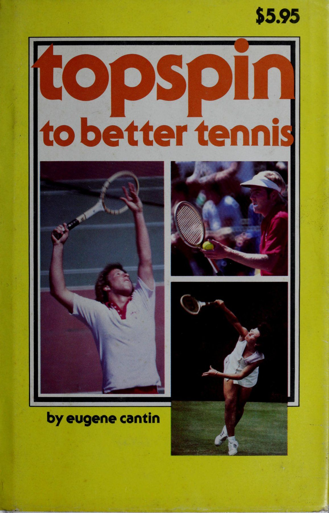
Bản dịch Việt ngữ này chỉ dùng cho mục đích học tập cá nhân, phi thương mại. Bản quyền tác phẩm gốc thuộc về tác giả và nhà xuất bản.
Mục Lục Toàn Thư (16 Chương & 4 Phần Chuyên Sâu)
- Phần I: Bản Chất Của Topspin & Vật Lý Quần Vợt Hiện Đại
- Phần II: Vũ Khí Cú Đánh Xoáy Cuộn: Thuận Tay, Trái Tay & Kiểm Soát
- Phần III: Giao Bóng Xoáy Nảy, Bắt Lưới Vô-Lê & Đập Bóng Trên Không
-
Phần IV: Chiến Thuật Thực Chiến, Thi Đấu Đôi & Bản Lĩnh Thi Đấu
- Kế Hoạch Tập Luyện Định Hình Kỹ Năng & Thể Lực Chuyên Biệt
- Bước Vào Trận Đấu Đơn: Tư Duy Tấn Công & Giải Quyết Từng Điểm Số
- Nghệ Thuật Đánh Đôi, Cú Dìm Bóng Xuống Chân & Phối Hợp Đồng Đội
- Chiêm Nghiệm Trận Đấu, Nhịp Điệu Thi Đấu & Bản Lĩnh Điểm Then Chốt
- Tại Sao Chúng Ta Chơi Quần Vợt, Vượt Ngưỡng Bản Thân & Về Tác Giả
Bản Chất Của Topspin & Vật Lý Quần Vợt Hiện Đại
Part I: Essentials, The Nature of Tennis & The Physics of Topspin
Lời Tác Giả & Lời Mở Đầu: Cuộc Cách Mạng Xoáy Cuộn
Author's Note & Introduction: The Topspin Revolution
Ghi chú của tác giả Phần lớn cuốn sách này được viết như thể chỉ những người thuận tay phải mới chơi quần vợt. Không gian hạn chế ngăn cản việc mô tả mọi nhận xét về cách tạo ra cú đánh từ cả quan điểm thuận tay phải và tay trái. Tôi đưa ra lời xin lỗi tới 1/6 thống kê trong số các bạn thực sự thuận tay trái. Hãy chuyển đổi những gợi ý của tôi để áp dụng vào hoàn cảnh của bạn.
Quan trọng hơn, một nửa số bạn đọc cuốn sách này có thể là phụ nữ. Tôi muốn nhấn mạnh rằng điểm tôi làm cho áp dụng bình đẳng cho nam và nữ. Quần vợt phù hợp là quần vợt phù hợp bất kể giới tính của bạn là gì. Những người đàn ông và phụ nữ hàng đầu trong môn quần vợt ngày nay chơi những trò chơi rất giống nhau và có thể dễ dàng tìm thấy những ví dụ giữa những người chơi thuộc cả hai giới để minh họa cho những gợi ý được đưa ra trong cuốn sách này.
Cuối cùng, vui lòng xem xét các bức ảnh để biết nguyên tắc chung chứ không phải chi tiết nhỏ. Có sự khác biệt giữa hai bộ nét bất kỳ có thể chấp nhận được, miễn là các nguyên tắc tạo ra âm thanh vẫn còn nguyên vẹn. Wee we Pact de ie GAME oo cc ee ek ee ew ee Pere Ae 6 22s hein cn x abc od, s-8 hms pe wr wens a ae 10 Oe ne in en wc ee no ele eee a eas 7 ene OE ee ek ke ok oa ey eed eee ee hes a1 Phần Il: Vũ khí nT Ten i ae a nrcwh ee) ere ayer at A @uewa 44 mR SN ví dụ như snag bw, Sed s as Ws ge a eer 60 NP MS sae a Seana, ee oice nn 'o aloe d win a bys Ie Sad woe ah 76 NCC TROOPUIN, \ cand ae Ft ake Xem A we ey wee es 90 ee ae les we dce Ss Seep o Swi nen 100 en a ry essa and se whe sg ddale es F Simpson 124 a eM TS oy coy ed gecausi lon 2 « chapeyads hese hoe 129 Phần Ill: Play ITI 8 SE a rat ae Oe ieee sg -doalecle ¥ ats ifs2 ee a Asie gels ho dese is ee ae ees rc ee wad ay Ook gặp ee 1¥3 Pomrimmenee trên trò chơi nên ee ee es 186 os vas ssn ce trốn tránh ne wen en nea 198
Giới thiệu tôi muốn bạn chơi quần vợt tốt hơn - đó là lý do tại sao tôi đã viết cuốn sách này. Trong những năm qua, nhiều học trò của tôi đã hỏi tôi có cuốn sách về quần vợt nào tôi có thể đề xuất một đề xuất có thể giúp họ cải thiện trò chơi của mình. Và tôi luôn trả lời rằng tôi không nghĩ rằng bất kỳ cuốn sách nào trên thị trường đều rất hay. Để thay đổi điều đó, tôi đã viết cuốn sách quần vợt này; một trong đó bao gồm tất cả các thông tin tôi cảm thấy rất nhiều cuốn sách khác bị bỏ sót, một cuốn sách giúp độc giả rèn luyện một trò chơi quần vợt tấn công và quyết liệt.
Khiếu nại chính của tôi đối với hàng chục cuốn sách về quần vợt hiện nay là mặc dù có tất cả các hình vẽ, hình ảnh và từ ngữ, hầu hết chúng đều không giải thích chính xác các cú đánh được tạo ra như thế nào, tại sao chúng phải có dạng như vậy và người chơi nên làm gì với các cú đánh của mình sau khi đã thành thạo chúng.
Ví dụ, sách quần vợt thông thường thường mô tả cú giao bóng về cơ bản là một động tác ném quá tay. Nhưng ở đó thông tin dừng lại. Cú giao bóng là một động tác ném, nhưng theo hướng nào? Xuống phía sân giao bóng? Ra về phía hàng rào phía xa? Lên và bắt vô-lê về phía một điểm nào đó phía trên và bên phải sân?
Trên thực tế, chuyển động cuối cùng là chuyển động chính xác: hầu như mọi tay vợt hàng đầu trên thế giới đều đánh quả giao bóng để truyền độ Xoáy lên cho quả bóng và khiến nó đi xuống sân giao bóng thích hợp với độ chính xác và sức mạnh. Nhưng hầu hết các cuốn sách về quần vợt không bao giờ đề cập đến điểm quan trọng này, và độc giả của chúng phải tự bảo vệ mình trên chiến trường, tự hỏi tại sao cú giao bóng mà họ lại cẩn thận thực hiện bằng động tác ném xuống sân lại thường xuyên đi vào lưới hoặc dài.
Nghịch lý thay, cuốn sách quần vợt tôi phản ứng mạnh mẽ nhất khi học sinh mới bắt đầu đề cập đến điều đó tôi cá nhân khá thích. Đây là cuốn sách về quần vợt nổi tiếng nhất hiện nay, The Inner Game of Tennis của Tim Gallwey. \ Trong cuốn sách này, Gallwey trình bày một cuộc thảo luận xuất sắc về chủ đề làm thế nào tâm trí có ý thức, quyết đoán (Bản thân 1) của một người chơi quần vợt có thể cản trở khả năng của tâm trí phản ứng, bản năng (Bản thân 2) của anh ta để chơi thứ quần vợt hay nhất của người đó. Thông qua nội dung của văn bản, nhiều điều tốt đẹp đã được nói đến về Sự tập trung, thư giãn, điều hòa tinh thần và cách hiểu được nội tâm của một người có được nhờ quần vợt có thể mở rộng ra ngoài quần vợt sang các lĩnh vực khác của cuộc sống. Tất cả đều tốt và tốt.
Nhưng ấn tượng đầu tiên để lại trong tâm trí người đọc, như hàng chục học trò của tôi đã đọc nó bày tỏ với tôi là nếu bạn chỉ thư giãn và "'cứ để nó xảy ra', thì trò chơi quần vợt của bạn sẽ đột nhiên tiến bộ vượt xa những giấc mơ ngông cuồng nhất của bạn. And_ điều này đơn giản là không phải vậy. Tôi tôi kinh hoàng khi nghĩ đến việc hàng chục nghìn người nhặt cuốn sách này lên, đọc nó và sau đó đi ra ngoài để mặc cho nó xảy ra. Nếu những người này cố gắng thư giãn "Cái tôi 1" của họ và để 'Bản thân' 2"' đảm nhận công việc đánh bóng, họ thực sự nên phát huy hết tiềm năng trong trò chơi của mình. Nhưng điều gì sẽ xảy ra nếu điện thế đó rất thấp do nhận thức sai lầm về cách tạo ra các cú đánh?
Nói cách khác, còn người có Bản thân 2 chỉ đơn giản là © không biết gì về việc đánh bóng khi giao bóng thì sao? (Một cú giao bóng tốt không có vẻ như là vợt đi xuyên qua quả bóng đối với hầu hết mọi người, trừ khi họ tình cờ biết được điều đó.) Người đó sẽ thoải mái, để điều đó xảy ra và vẫn đánh những cú giao bóng dài hoặc vào lưới.
Những gì ông Gallwey nói đều khá đúng — thư giãn đầu óc, để cơ thể ghi điểm — nhưng nó vô dụng đối với những ai chưa học được các cú đánh thích hợp.
Vì vậy, hãy đọc cuốn sách của ông Gallwey bằng mọi cách, nhưng sau khi bạn đọc cuốn này. Trong các trang sau tôi đã cố gắng ghi lại chính xác nhất có thể những suy nghĩ của tôi về bản chất và cơ chế của trò chơi quần vợt. Tôi đã được các học trò của tôi gắn mác là "'cuồng xoáy topspin" và tôi cảnh báo bạn rằng điều này thực sự là như vậy. Tôi cũng cảm thấy rằng mọi người chơi, nếu họ muốn trở nên giỏi chút nào, phải dành một khoảng thời gian học tập dành cho các nguyên tắc cơ bản về "'bước bước đánh" của quần vợt trước khi họ có thể hy vọng "để điều đó xảy ra."
Eugene Cantin 1977 Pe Lil WS) tôi < }+- — he * Se Se ee Se Se ee ee ee ee te " ee ee e+ > S = Sh ee oe = 7s e+ oe Se oe . ~ © ~~ * e e e nee oe ee oe
Bản Chất Của Trận Đấu Quần Vợt: Cuộc Tấn Công Toàn Diện
Chapter 1: The Nature of the Game
"Bản chất của trò chơi Quần vợt là chiến tranh. Người chơi bước vào một trận chiến hủy diệt xứng đáng với bất kỳ cặp võ sĩ nào, bất kỳ cặp hiệp sĩ già nào cưỡi nhau xuống trên lưng những con ngựa chiến đang lao tới. Trò chơi này là một cuộc chạm trán gay cấn nhất có thể xảy ra giữa hai người còn sống và nói chuyện khi Kết thúc cú đánh cuộc đối đầu.
Quần vợt còn là gì khác ngoài một cuộc tấn công kéo dài vào đối thủ của bạn? Với mỗi cú đánh, bạn đang cố gắng làm điều gì đó với anh ta: bắt anh ta chạy cho đến khi không thể chạy được nữa; kẹt anh ta để anh ta không thể đu đưa; lừa anh ta; vội vàng anh ta; vứt bỏ thời gian của mình; phá vỡ trò chơi của anh ấy; đánh bại anh ta. Một trận đấu quần vợt là một cuộc tấn công được tiến hành trong một lĩnh vực ngụ ngôn thể thao cho phép những người tham gia cùng tồn tại sau khi trận chiến Kết thúc cú đánh, thậm chí tận hưởng trận chiến đó khi nó đang diễn ra. Người chiến thắng trong một trận đấu quần vợt rời sân với đống đổ nát của trận đấu của đối thủ. Chỉ bên ngoài giới hạn của trận đấu thì hòa bình mới được duy trì bằng cái bắt tay truyền thống và tất cả những gì nó hàm ý.
Quần vợt là một trò chơi tuyệt vời vì nó cho phép bản năng cạnh tranh của chúng ta bộc phát, nhưng trong một tình huống thể thao sẽ không làm chúng ta bị thương, một tình huống được sáng tạo đến mức xã hội loài người có thể hoan nghênh việc thể hiện những bản năng này hơn là cố gắng ngăn chặn chúng. Các quy tắc của quần vợt cung cấp cho người chơi một lãnh thổ để bảo vệ, đồng thời cung cấp cho anh ta lãnh thổ của đối thủ và trò chơi quần vợt để tấn công thông qua một quả bóng tennis đang chuyển động.
Nghi thức xung quanh quần vợt là một trong những khía cạnh đặc biệt nhất của trò chơi và trong nhiều năm - trước thời kỳ bùng nổ quần vợt gần đây - nó khiến những người không phải là tay vợt coi quần vợt là một môn thể thao yếu đuối. Nghi thức đó rất dày đặc vì tính quyết liệt hoàn toàn nằm ở trung tâm của trò chơi. Người chơi được hướng dẫn phải luôn lịch sự, trung thực, dễ chịu và tuân thủ các quy tắc, trong khi trò chơi của họ được tự do hack và chặt chém nhau với cường độ tàn bạo.
Nhiều người chơi được biết đến với tính khí nóng nảy, nhưng sự chú ý như vậy đến hành vi cá nhân của một người chơi hoàn toàn không phù hợp với quan điểm của một trận đấu quần vợt: chính trò chơi quần vợt của người chơi đang tiến hành hành vi tấn công và hành vi cá nhân chỉ liên quan đến mức độ nó giúp ích hoặc cản trở việc thực hiện trò chơi quần vợt của đối thủ. 'Giết người phạm lỗi nhất' là điều mà bất kỳ trận đấu quần vợt nào cũng đề cập đến; ''''trận đấu' ngụ ý điều này và vụ giết người xảy ra là trong trận đấu của người chơi này với người chơi khác.
Xem bất kỳ trận đấu quần vợt nào giữa những người chơi giỏi. Tôi có nghĩa là thực sự xem nó. Không một võ sĩ đấu bò nào có thể vượt qua những chiếc sừng và đâm vào trái tim một cách hồ hởi hơn những kỳ thủ vĩ đại thực hiện công việc giành chiến thắng của mình. Hãy nghĩ lại những trận đấu nổi bật trong thời gian qua, những trận đấu có Borg, Connors, Nastase, Ashe, Rosewall hoặc Laver giữa nam, Evert, King hoặc Court giữa nữ. Trong mọi trận đấu có sự góp mặt của những tay vợt này - trên thực tế, trong bất kỳ trận đấu quần vợt nào được chơi đúng cách - những người chiến thắng sẽ không ngừng hạ gục đối thủ.
Những chiến thắng ghi được trong các cuộc thi đỉnh cao là kết quả của một quá trình lâu dài trong đó những người chiến thắng tạo ra trận đấu quần vợt tàn khốc nhất có thể cho chính họ cũng như lòng dũng cảm, quyết tâm, Sự Sự tự tin và sức mạnh thể chất để kiểm tra trận đấu đó với bất kỳ trận đấu nào khác trên thế giới. Trước khi ra sân, những người chiến thắng trong những trận đấu này tiếp thêm năng lượng cho bản thân bằng cách khẳng định trong thâm tâm rằng không gì có thể ngăn cản họ chiến thắng.
2 bảng màu - ít nhất là trong tất cả các trận đấu quần vợt của đối thủ - và sau đó họ tiến hành phá hủy các trận đấu đối lập đó một cách hiệu quả và không ngừng nghỉ nhất có thể, theo luật quần vợt.
Vũ khí mà những người chơi này sử dụng để tấn công đối thủ của họ không phải là vợt hay quả bóng tennis mà là trò chơi quần vợt chỉ đạo từng thứ này. Các kỳ thủ xuất sắc đã tiếp thu một bộ phản ứng tự động hoàn chỉnh cho bất kỳ tình huống nào trên sân có thể xảy ra trong một trận đấu, có được những phản hồi này qua nhiều năm học tập, luyện tập và thi đấu. Nhờ những phản ứng tự động này, những tay vợt giỏi nhất thế giới sẽ có xu hướng, không cần suy nghĩ, đánh cú đánh tốt nhất có thể theo cách hiệu quả nhất trong mọi tình huống mà họ gặp phải: chính khả năng này khiến họ trở thành người giỏi nhất thế giới. Trong nhiều năm, họ đã tiếp thu sự hiểu biết đầy đủ về các góc độ và tỷ lệ phần trăm mở ra cho họ trong bất kỳ cú đánh nào và họ thường xuyên sử dụng kiến thức này với hiệu quả chết người và không cần suy nghĩ để hạ gục những đối thủ kém cỏi hơn.
Đó là một điều hợp lý khi bất cứ ai chơi quần vợt đều quyết định rằng họ thà thắng còn hơn thua khi chơi. Suy cho cùng, chiến thắng là niềm vui - thường vui hơn là thua - và vì ai đó phải thắng nên người đó cũng có thể là bạn. Thực tế việc ghi điểm bao hàm một tình huống cạnh tranh, và chính cuộc đụng độ mang tính cạnh tranh này đã khiến môn quần vợt trở nên thú vị.
Nếu bạn quyết định rằng bạn muốn cải thiện trò chơi của mình để giành chiến thắng thường xuyên hơn thì bạn phải cố gắng phát triển ít nhất một số phản ứng tự động khiến những người chơi giỏi nhất trở nên đáng gờm. Bạn phải học cách tạo ra những cú đánh hiệu quả nhất có thể. Sau đó, bạn phải trau dồi những cú đánh đó và sự hiểu biết của mình về cách sử dụng chúng, thông qua luyện tập và thi đấu, đến mức trò chơi quần vợt của bạn sẽ tỏ ra vượt trội so với trò chơi của đối thủ.
Mục tiêu của cuốn sách này là đóng vai trò như một hòn đá mài để mài giũa kỹ năng tiên tiến trong trò chơi của bạn, cung cấp cho bạn một vũ khí tương đương với những đòn tấn công mà bạn có thể phải đối mặt trên sân tennis. Một nguyên tắc tạo ra cú đánh — Xoáy lên — được trình bày, cùng với những gợi ý về cách bắt đầu học nó và cách bạn nên sử dụng các cú đánh của mình trong các tình huống thi đấu.
Topspin là đặc điểm phổ biến nhất trong các trò chơi tấn công của tất cả các tay vợt hàng đầu trên thế giới hiện nay và bạn không thể hy vọng cạnh tranh hiệu quả nếu không có nó. Khía cạnh cạnh tranh của quần vợt là một thực tế thú vị, nhưng bạn sẽ không thể tham gia đầy đủ vào thực tế đó cho đến khi bạn phát triển một vũ khí - trò chơi quần vợt của bạn - có khả năng đối phó với những vũ khí của các đối thủ mà bạn tìm thấy xung quanh mình. Topspin có thể giúp bạn tạo ra một loại vũ khí như vậy.
"Hai điều sẽ giúp bạn phát triển thêm sức mạnh. Một là học các nguyên tắc cơ bản và có nền tảng vững chắc về chúng. Thứ hai là học cách thực hiện topspin. "Cách duy nhất để bạn có thể đánh bóng mạnh một cách hiệu quả và nhất quán (đặc biệt là trong các cú chạm đất của bạn) là đặt một chút topspin vào bóng. Topspin là cú đánh cơ bản, cơ bản.
Những tay vợt giỏi trong nhiều năm qua luôn đánh bằng topspin - không phải với số lượng quá nhiều, nhưng đủ để tạo lực lớn cho cú đánh và giữ bóng sâu cho đối thủ.
"Nếu bạn muốn trở thành một tay vợt tấn công, và đó gần như là ý nghĩa của những cú đánh sức mạnh, bạn phải trở thành một tay vợt đánh Xoáy lên. Nếu bạn muốn chơi phòng thủ, thì hãy làm bất cứ điều gì bạn muốn. Đá bóng, nếu bạn nghĩ điều đó sẽ hiệu quả. Một tay vợt phòng thủ giỏi sẽ luôn bị đánh bại bởi một tay vợt tấn công giỏi."
Minh họa quần vợt Don Budge
Khí Động Học Của Topspin: Hiệu Ứng Magnus & Biên Độ An Toàn Qua Lưới
Chapter 2: Topspin & Aerodynamic Magnus Effect
Cao thủ đang chạy trốn, lao tới cản phá cú sút hiểm ác của đối thủ. Sau đó là một cú xoay người xé toạc, và đám đông bùng nổ khi quả bóng bay đi tìm người chiến thắng. "Cú đánh tuyệt vời!"' người thông báo nói. “Thật là một cú đánh Xoáy lên tuyệt vời mà anh ấy đã thực hiện được từ tình huống không thể đó.”
Bật tivi và nghe hầu hết các trận đấu quần vợt hay trong năm phút; bạn chắc chắn đã nghe thấy một số tài liệu tham khảo về topspin. Topspin phổ biến trong môn quần vợt đỉnh cao ngày nay cũng như quần dài và váy cách đây 50 năm. Topspin cho phép các chuyên gia thực hiện những cú đánh khó nhất mà họ có thể và vẫn giữ được những cú đánh đó trên sân. Topspin hướng dẫn cú bắt vô-lê tinh tế, để nó lẻn qua lưới rồi lao xuống trước khi đối thủ kịp áp sát. Topspin là thứ cho phép những tay vợt chuyên nghiệp thích mạo hiểm thực hiện những cú Cú lốp bóng (lob) toàn lực mà vẫn cố gắng đi xuống phần sân đối phương trước khi lao qua hàng rào phía sau. Xem các đoạn phim về những tay vợt vĩ đại đánh bại những người chiến thắng. Những cú đánh chiến thắng đó đều được thực hiện bằng topspin.
Thật không may, một người mới bắt đầu có thể học hàng tá bài học từ nhiều chuyên gia quần vợt khác nhau mà không bao giờ nghe một lời nào về Xoáy lên. Nếu người mới bắt đầu nghe nói về Xoáy lên thì có thể là qua tivi hoặc trong cuộc trò chuyện với những người mới bắt đầu khác, những người sử dụng thuật ngữ này như thể nó mô tả một số kỹ thuật bí mật và khó không thể tưởng tượng được mà những người chơi giỏi hơn sử dụng để giữ chân những người mới bắt đầu.
Trên thực tế, học sinh nên nghe về Xoáy lên trước khi họ đánh bóng. Hầu như không thể đánh một quả bóng tennis mà không truyền cho nó một loại xoáy nào đó, do đó xoáy đó cũng có thể là Xoáy lên. Các cú đánh mà hầu hết các chuyên gia đều dạy - ''xoay, bước, vung về phía trước và đạt đến một Kết thúc cú đánh cao đẹp' - là dành cho Xoáy lên. Nhưng nếu họ không bao giờ nói rằng mục đích của các cú đánh trên mặt đất là lăn bóng về phía trước khi nó di chuyển dọc sân, học viên có thể không bao giờ nhận ra rằng đây là mục tiêu. Anh ta có thể không bao giờ làm chủ được Xoáy lên.
Topspin trong các cú đánh trên mặt đất và một biến thể của nó khi giao bóng, là cách tốt nhất để đẩy một quả bóng tennis từ đầu này sang đầu kia của sân một cách hiệu quả, quyết liệt và nhất quán. Điều này đúng cho dù trình độ chơi của bạn như thế nào... Với topspin, bạn có quyền tiếp cận khu vực lớn nhất có thể của phần sân Đối thủ. Và bạn có thể đưa bóng đến tất cả các điểm trong khu vực đó bằng sức mạnh nếu bạn muốn sử dụng nó. Nhưng những cú đánh Xoáy lên không nhất thiết phải đạt tốc độ một ngàn dặm một giờ. Những cú Cú đánh nhẹ (dink) nhàng với Xoáy lên cũng có thể mang lại hiệu quả khi bóng lao xuống và lao qua đối thủ của bạn. Topspin tạo ra một cú đánh hiệu quả, đòi hỏi nỗ lực tối thiểu để tạo ra một cú đánh tốt, chính xác và ngay cả những cú xoay người với Nhịp điệu trận đấu trung bình cũng sẽ mang lại kết quả xuất sắc. Bất kể trình độ chơi của bạn như thế nào, một chút Xoáy lên được thêm vào các cú đánh của bạn sẽ cải thiện hương vị của trận đấu quần vợt của bạn.
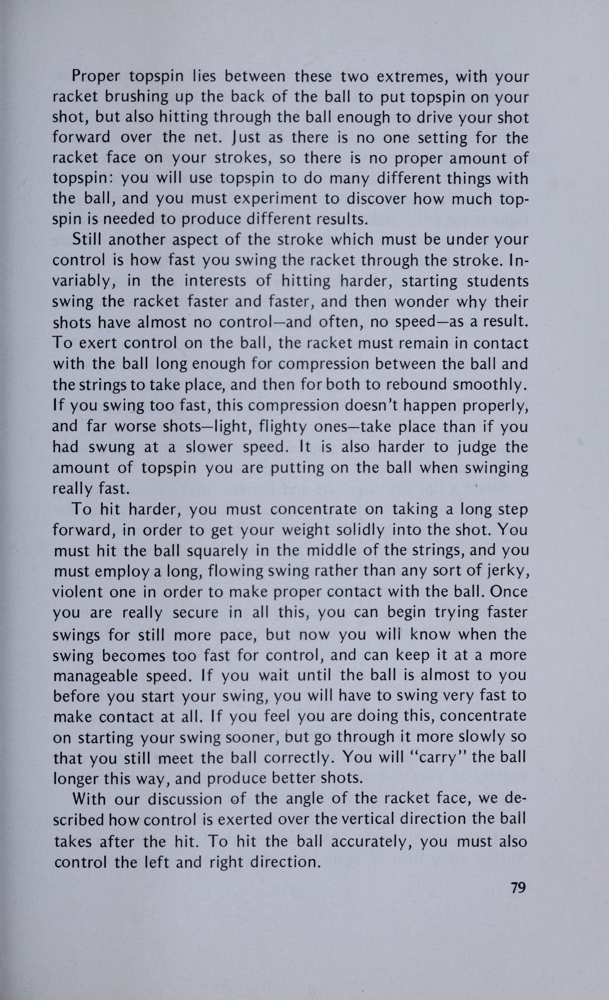
Topspin không phải là kỹ năng dễ học nhất. Nếu đúng như vậy thì sẽ có thêm nhiều người trong số 30 triệu người Mỹ chơi tennis trở nên xuất sắc. Nhưng những người chơi không sử dụng topspin phần lớn đều hy vọng rằng đối thủ của họ sẽ đánh trượt. Người chơi đã học được nghệ thuật topspin sẽ có đủ hỏa lực để khiến đối thủ đánh trượt. Và một khi bạn đã có Xoáy lên trong kho các cú đánh của mình, bạn sẽ phát hiện ra rằng bạn không chỉ sở hữu khả năng thực hiện cú đánh nâng cao mà còn có một quan điểm tâm lý mới về trò chơi mà những người chơi không có Xoáy lên không có và không thể có được.
Trước khi tiếp tục, chúng ta phải sắp xếp một số thuật ngữ thông dụng khi nói về quả bóng tennis đang chuyển động. Nhìn xuống sân, cái gì tôi gọi mặt sau của quả bóng là những gì chúng ta thấy khi nó đến gần. Mặt trước của quả bóng bao quanh phía bên kia và nó sẽ dẫn đường xuống sân sau khi chúng ta đánh bóng. Quan điểm này từ phía sau sân khác với những gì một tay vợt thực sự nhìn thấy khi đánh bóng, vì tại thời điểm đó, đấu thủ sẽ đứng ở bên cạnh quả bóng chứ không phải phía sau nó. Trên thực tế, chúng ta đang nhìn quả bóng theo cách mà dây vợt nhìn thấy ngay trước khi va chạm. Những điểm này trên quả bóng sẽ không đổi bất kể quả bóng quay như thế nào.
Top € Góc trên bên phải Bên trái Bên phải Mặt sau của quả bóng Dưới cùng Bây giờ chúng ta sẽ chuyển vị trí quan sát của mình sang một bên, để chúng ta thấy những gì người chơi sẽ nhìn thấy khi đánh bóng, nhưng các nhãn vẫn giữ nguyên, như thể chúng ta vẫn đang xem bóng từ phía sau sân.
Nếu bạn có thể đánh bóng hoàn toàn bằng phẳng ở mặt sau, với lực của vợt di chuyển trên một đường hoàn hảo xuyên qua tâm chính xác của quả bóng, bạn sẽ tạo ra một cú đánh "phẳng" thực sự. Nó sẽ rời xa bạn mà không có bất kỳ vòng quay nào, theo một đường thẳng, chỉ có trọng lực kéo nó xuống.
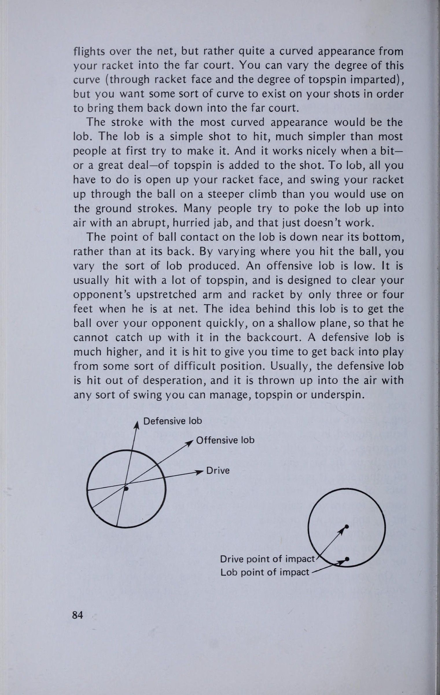
Nếu bạn hạ điểm tiếp xúc từ phía sau quả bóng xuống một điểm hướng xuống phía dưới của nó, nhưng vẫn có lực tác động di chuyển trực tiếp qua tâm quả bóng, bạn sẽ lại tạo ra một cú đánh "phẳng". Nhưng con tàu này sẽ bay lên không trung theo một đường parabol cao trước khi trọng lực đưa nó trở lại trái đất. Topspin là sự kết hợp của các bộ phận từ mỗi hành động này.
Để tạo ra Xoáy lên, bạn đánh vào mặt sau của quả bóng, như trong ví dụ đầu tiên, với Mặt vợt thẳng đứng. Nhưng vợt (và lực tác động) di chuyển theo một góc, hướng lên trên và về phía trước, như trong ví dụ thứ hai. Kết quả là một quả bóng được "đỉnh", đường lực bây giờ đi qua tâm của quả bóng.
Một quả bóng được vuốt theo cách này sẽ rời khỏi vợt theo hướng hướng lên trên vì đường lực đẩy nó theo hướng đó. Nhưng nó cũng sẽ quay - lăn về phía trước - khi quả bóng di chuyển ra khỏi cú đánh, và vòng quay này sẽ khiến quả bóng lao ngược về phía sân. Vậy thì đây là tất cả những gì cần có để tạo ra Xoáy lên. Bằng cách nâng Mặt vợt về phía trước và hướng lên trên quả bóng trong khi đánh, đồng thời giữ Mặt vợt đó khá thẳng đứng, bạn sẽ tạo ra một cú đánh ban đầu bay lên không trung, sau đó lao ngược về phía sân. Và đây là những đặc điểm tuyệt vời cần có trong các cú đánh trên mặt đất của bạn, vì chúng phải vượt qua lưới ít nhất 3 feet trước khi lao trở lại sân đối thủ. Với topspin trong các cú đánh của bạn, bạn có thể đưa bóng lên cao qua lưới để đảm bảo an toàn trong khi đánh nó mạnh nhất có thể và vẫn đưa quả bóng đó xuống phần sân đối diện một cách an toàn. Trên thực tế, người sử dụng cú Xoáy lên sẽ đấu với một đối thủ có Mặt sân nghiêng về phía sau so với lưới, tạo ra một mục tiêu giống như một bức tường. Không có cú xoáy nào khác có thể tạo ra một mục tiêu như vậy, và cú xoáy xuống (ngược lại với cú Xoáy lên) trên thực tế sẽ làm rơi phần sân đối phương ra xa bạn, tạo ra mục tiêu khó khăn nhất.
Lý do khiến quả bóng hành xử như vậy khi bạn đánh nó bằng Xoáy lên lần đầu tiên được giải thích bởi Daniel Bernoulli vào năm 1738. Với 150 năm suy nghĩ trước, Bernoulli biết rằng những người chơi quần vợt sẽ muốn biết tại sao độ xoáy lại ảnh hưởng đến quả bóng tennis như vậy, vì vậy ông đã nghĩ ra định lý của mình: áp suất trong chất lỏng giảm khi vận tốc của nó tăng. Không khí là một chất lỏng, và khi một quả bóng tennis được đánh xuống sân, nó sẽ truyền một vận tốc cho không khí đi qua. Nếu quả bóng cũng quay khi nó bay về phía trước, nó sẽ kéo theo một màng không khí theo nó, do đó tạo ra các tốc độ không khí khác nhau ở các phía khác nhau của nó. Kết quả là có sự chênh lệch áp suất lên quả bóng so với không khí nó đi qua, và áp suất đó làm cho va chạm chìm xuống khi bay. Nếu bạn đánh bằng Xoáy lên, bạn đang yêu cầu áp suất không khí giúp bạn đánh bóng lùi về phía sân, trong khi nếu bạn đánh bằng xoáy xuống, bạn đang tạo ra một áp suất giúp giữ bóng lên.
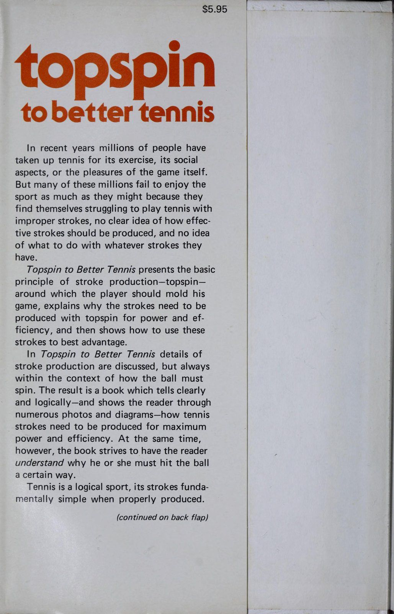
Số lượng. Xoáy lên áp dụng cho bóng phụ thuộc vào cách bóng được đánh. Ví dụ, nếu đường lực của vợt đánh bóng ở một góc dốc thì lượng Xoáy lên sẽ lớn hơn. Nếu vợt được vung trên một mặt phẳng thông qua cú đánh, chỉ leo lên một chút trong khi bóng vẫn còn trên dây, thì một cú đánh ''phẳng''' (với ít Xoáy lên hơn) sẽ được tạo ra. Nếu độ cao của vợt rất dốc, sẽ tạo ra nhiều Xoáy lên hơn. Cú đánh sẽ leo lên và lao xuống mạnh hơn, với động lượng về phía trước ít hơn. Có nhiều khả năng khác nhau trong mối quan hệ giữa lượng lực di chuyển bóng xuống sân và lượng tạo ra Xoáy lên: các lực này thay đổi tùy theo cách vợt di chuyển qua Mặt vợt Và người chơi phải giành quyền kiểm soát bóng.
Lái xe thấp Cú sút sắc nét tôi là, toàn bộ phạm vi khả năng này, bởi vì anh ta cần tất cả những thứ đó để tạo ra các cú đánh khác nhau trong quần vợt, chẳng hạn như Cú Cú đánh phẳng hơn, cú đánh chạm đất, quả bóng nhúng nhanh cần thiết để vượt qua một tay vợt trên lưới và cú Cú lốp bóng (lob) tấn công. Mỗi cú đánh này đều mang theo Xoáy lên, nhưng ở các mức độ khác nhau. Tất cả đều được hưởng lợi từ tác động của áp suất không khí ép họ lùi về phía sân sau khi họ phá lưới.
eeeee® eoeee eeoee eoore eeoee eooeee eeoeee eoseee eoevee eoecee essere? eseeee eeore eoere eoreer eooee eooee eoeee® eeesee EEE Cú Cú lốp bóng (lob) Xoáy lên
Ngược lại với Xoáy lên là xoáy xuống. Nhiều người chơi cầm vợt và đánh bóng lần đầu tiên thường đánh bóng xuống và kết quả là xoáy xuống. Mặt vợt được mở ra - nghiêng lên trời để đưa bóng qua lưới - và nó trượt dưới đáy bóng, tạo ra xoáy xuống. (Đường lực do va chạm đi xuống phía dưới tâm bóng.) Chỉ cần luyện tập một chút, người chơi đánh theo cách này sẽ điều chỉnh Mặt vợt của mình một cách chính xác và các cú đánh xoáy xuống sẽ bắt đầu tiếp đất trên sân.
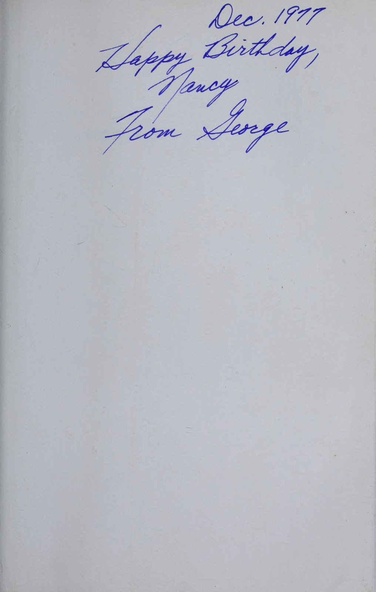
Xoáy xuống Tuy nhiên, có một mối nguy hiểm với xoáy xuống. Nếu bạn không đánh cú đánh xoáy xuống quá mạnh, bạn có thể phá lưới ở một khoảng cách thoải mái và vẫn để quả bóng này tiếp đất vào sân. Đặt bóng xoáy xuống khiến nó muốn bay lên chống lại trọng lực - áp suất không khí giữ bóng lại - nhưng nếu bạn đánh đủ nhẹ thì quả bóng sẽ không leo lên được và trọng lực sẽ kéo cú đánh trở lại sân. Tuy nhiên, khi bạn ngày càng trở nên hung hãn hơn và bắt đầu đánh mạnh hơn, bạn sẽ thấy rằng bạn phải đưa những cú đánh xoáy xuống của mình ngày càng thấp hơn về phía lưới để giữ cho chúng không bị kéo dài. Nhưng điều này sẽ làm tăng cơ hội đánh lưới của bạn.
Ngay cả những cú đánh xoáy xuống thực hiện được cũng có những hạn chế. Cú đánh không chỉ có xu hướng bay đi thay vì lùi về phía sân mà còn có xu hướng chậm hơn so với khi đánh bằng Xoáy lên. Vì những đặc điểm này, một tay vợt trên lưới có thêm một phần giây để chặn một cú sút xoáy xuống. Và nếu người ở lưới thực hiện được cú đánh, quả bóng sẽ ở trên lưới cao hơn so với khi nó bị “đánh trên”. Nói cách khác, những cú đánh xoáy xuống sẽ làm đối thủ hung hãn ít khó chịu hơn những cú đánh Xoáy lên. Với topspin, bạn có thể nhúng bóng xuống phần lưới của đối thủ, buộc anh ta phải vô-lê lên. Bạn cũng có thể đánh thành công các góc sắc nét hơn, bởi vì cú đánh Xoáy lên sẽ hướng xuống phía đường biên, trong khi cú đánh xoáy xuống vẫn tiếp tục thuận lợi.
Tất nhiên, không có tay vợt nào đánh được mọi cú chạm đất bằng Xoáy lên. Có một số tình huống mà bạn sẽ chọn đánh với xoáy xuống, chẳng hạn như khi bạn đánh một cú tiếp cận trái tay, bắn xuống đường biên ngang về phía thuận tay của đối thủ, giữ bóng ở mức thấp hoặc khi bạn muốn thả bóng ngay qua lưới, đưa đối thủ vào lưới. Có những lúc khác, như khi bạn đối mặt với một cú giao bóng lớn đến mức bạn không thể làm gì khác ngoài chặn hoặc cắt bóng lại, khi Xoáy lên nhường chỗ cho việc đơn giản là đưa bóng vào cuộc. Nhưng trong mọi tình huống, ngoại trừ những trường hợp mà bạn thực sự cần xoáy xuống (tức là cách tiếp cận trái tay đó), Xoáy lên sẽ tạo ra kết quả tốt hơn nếu bạn có thể tận dụng nó. Nói cách khác, bạn càng rèn luyện bản thân để đánh với Xoáy lên, bạn sẽ càng có kết quả tốt hơn.
Có lẽ cảnh tượng đáng buồn nhất trong quần vợt xảy ra khi những tay vợt trẻ thành công ở độ tuổi 10, 12 và 14 với những cú đánh undercut thấy mình bị ăn thịt ở độ tuổi 16 và 18 bởi những đối thủ đã học cách đánh bằng topspin. Những tay vợt trẻ này đã nhận được kết quả tốt với những cú đánh cận thành của mình, giành chiến thắng nhờ vào vị trí ổn định trước những đối thủ không có kích thước hoặc sức mạnh để tự vệ. Nhưng điều này sẽ thay đổi ở những giải đấu sau.
Tôi Hãy lưu ý cẩn thận về việc tạo ra Xoáy lên đơn giản như thế nào. Trong tất cả những điều đã nói ở trên, không có đề cập đến việc "lật Mặt vợt qua quả bóng", "vượt trên không (overhead) quả bóng" hoặc bất kỳ loại chuyển động liên quan nào khác. Mọi người đấu tranh và đấu tranh để làm cho việc tạo ra Xoáy lên phức tạp hơn nhiều so với thực tế và nhận được những kết quả khốn khổ cho phần thưởng của họ. Nếu bạn không nghĩ topspin là đơn giản, hãy nhìn lại sơ đồ về cách nó được tạo ra: Mặt vợt thẳng đứng (hoặc gần thẳng đứng) di chuyển về phía trước và hướng lên trên khi chạm bóng. Giai đoạn.
Giống như bất kỳ thiết bị chức năng nào, cú đánh chạm đất Xoáy lên rất rõ ràng, đơn giản và hợp lý. Một ngày nào đó, bạn có thể đang chạy trốn, vội vã chặn cú sút hiểm độc của Đối thủ, nhận thức được việc anh ta đang tiến gần vào lưới. Nhưng hàng giờ bạn bỏ ra để thực hiện các cú đánh chạm đất Xoáy lên tự động sẽ khiến bạn hoàn toàn Sự tự tin.
Sẽ có một cú xoay người xé toạc và đám đông bùng nổ khi bạn bắn đạn đi tìm người chiến thắng.
Cơ Chế Tiếp Thu Động Tác & Định Hình Rãnh Vận Động Tự Động
Chapter 3: Learning & Grooving the Stroke
Những khoảnh khắc đáng nhớ xuất hiện trong quần vợt khi người chơi ngay lập tức phân tích tình huống đang diễn ra, nhận thức bằng trực giác cách tốt nhất để tấn công đối phương và sau đó thực hiện đòn tấn công đó một cách hoàn hảo. Không có suy nghĩ; chỉ có một phản ứng với tình huống hiện tại. Những khoảnh khắc như vậy xảy ra ngay lập tức, nhưng chúng là sản phẩm cuối cùng của quá trình học tập cẩn thận và thực hành chu đáo, chuyên sâu. Rốt cuộc, người ta phải học quần vợt trước khi chơi nó.
Điều quan trọng là bạn phải hiểu rõ một người học như thế nào, bởi vì chỉ có bạn mới có thể tự dạy mình chơi quần vợt. Một sai lầm phổ biến là tin rằng bất kỳ chuyên gia quần vợt hoặc cuốn sách hướng dẫn nào cũng có thể dạy quần vợt cho bạn. Họ có thể chỉ cho bạn cách tốt nhất để bắt đầu học tập và những cách tốt nhất để cống hiến quá trình học tập đó. Tuy nhiên, bạn phải hiểu các nét vẽ, bạn phải dành thời gian, bạn phải hướng dẫn cơ thể của mình và bạn phải cố gắng phát triển các nét vẽ của mình đến tiềm năng lớn nhất của chúng.
Những người chơi quần vợt giỏi di chuyển và đánh một cách dễ dàng vì mọi việc họ làm đều diễn ra tự động mà không can thiệp vào suy nghĩ có ý thức. Những người chơi này đã vượt ra ngoài cơ chế đánh. Họ có thể cống hiến hết mình cho câu hỏi đánh bóng ở đâu hơn là đánh nó như thế nào. Phần lớn, ngay cả "ở đâu" cũng không được nghĩ ra mà đúng hơn là một phản ứng bản năng, có rãnh đối với các tình huống phải đối mặt và giải quyết hàng nghìn lần trước đó. Những người chơi giỏi chơi tự động.
Tâm trí có ý thức của họ có thể đưa ra những lời động viên hoặc lập kế hoạch giữa các thời điểm, nhưng phần lớn tâm trí của họ im lặng trong khi trò chơi đang diễn ra. Bạn có thể chơi theo cách tự động như những cao thủ hàng đầu thế giới này không? Vâng, không có bất kỳ câu hỏi nào cả. Cơ thể con người có khả năng tuyệt vời trong việc thực hiện các chuỗi chuyển động phức tạp một cách tự động. Và thật may mắn, cơ thể chúng ta rất nhạy bén trong việc học các nhóm chuyển động mới nếu bạn giúp nó học một cách hợp lý. Nếu bạn có thể học cách buộc dây giày, ký tên hoặc lái ô tô, thì chắc chắn bạn có thể học cách đánh bóng tennis một cách chính xác. Điều duy nhất cần thiết là thời gian, sự hiểu biết và ứng dụng.
Những người khác nhau học quần vợt với tốc độ khác nhau và đôi khi một người có thể cần lượng thời gian khác nhau để thành thạo các cú đánh riêng lẻ. Thông thường, lý do dẫn đến tỷ lệ học tập khác nhau như vậy là do lượng dữ liệu mà học sinh có trong đầu về cách thức học. để di chuyển cơ thể của họ. Một số người chưa bao giờ tham gia các môn thể thao bóng liên quan đến phối hợp tay và mắt và những người này mất nhiều thời gian hơn để học môn thể thao đó so với những người đã phát triển các kỹ năng này. Những người không phải là tay vợt không chỉ phải tiếp thu những đặc điểm cụ thể của quần vợt mà còn phải học một lượng lớn kiến thức tổng quát hơn về cách cơ thể họ hoạt động.
Học sinh giỏi nhất tôi từng dạy, theo nghĩa cô ấy tiếp thu các nét vẽ nhanh như thế nào, là một cô gái trẻ 16 tuổi đã học múa ba lê hơn 10 năm. Tôi giải thích từng nét và trình bày lần lượt. Sau đó tôi yêu cầu cô ấy thử. Cô ấy đã tái tạo tất cả chúng một cách hoàn hảo ngay lần thử đầu tiên. Cô gái này, người gần như chưa từng chơi quần vợt trước đây trong đời, đã tiến bộ trong 10 phút đến một điểm mà nhiều người không bao giờ đạt được trong nhiều năm. Đó thực sự là một trải nghiệm.
Nguồn gốc của màn trình diễn đáng kinh ngạc của người phụ nữ trẻ này nằm ở quá trình luyện tập múa ba lê: trong những năm đó, Jane đã có khả năng kiểm soát tuyệt vời toàn bộ cơ thể mình, từ đỉnh đầu đến đầu ngón chân. Thật không may, hầu hết chúng ta đều chưa được đào tạo kiểu này. Cơ thể chúng ta không hoàn toàn nằm dưới sự chỉ huy của chúng ta. Ngoài ra, chúng không được lập trình để học các chuyển động vật lý mới một cách nhanh chóng và hiệu quả như cơ thể của một vũ công. Chúng ta không chỉ phải đối mặt với nhiệm vụ tìm hiểu các cú đánh quần vợt là gì mà còn phải đối mặt với vấn đề làm thế nào để cơ thể tạo ra các cú đánh khi cuối cùng chúng ta đã hiểu được chúng.
Đối với hầu hết mọi người, việc học một môn thể thao thể chất như quần vợt cần có thời gian - thời gian để hiểu môn thể thao đó là gì và các kỹ thuật của nó cũng như thời gian để rèn luyện cơ thể để tạo ra các chuyển động cần thiết một cách trơn tru và tự động. Tuy nhiên, thời gian đó có thể được cắt giảm đáng kể nếu học sinh hiểu được quá trình học tập.
Có hai sự tương tự xuất hiện trong đầu để mô tả quá trình học tập trong môn quần vợt. Một là hình ảnh một chiếc máy tính trống rỗng chứa đầy dữ liệu, hình ảnh còn lại là hình ảnh ai đó bắt đầu cắt một tấm bảng bằng một cái Cưa. Nếu bạn chưa quen với quần vợt, tâm trí của bạn giống như một chiếc máy tính không có bất kỳ dữ liệu cụ thể nào liên quan đến quần vợt trên băng ghi âm của nó. Bạn có thể có rất nhiều thông tin liên quan đến cách bạn di chuyển cơ thể, có lẽ có khá nhiều thông tin về cách bắt, ném và đánh đồ vật. Hoặc, nếu bạn chơi quần vợt nhưng có những cú đánh bị lỗi, máy tính của bạn có rất nhiều tài liệu về quần vợt trong đó, nhưng một số thông tin đó không chính xác và không hiệu quả. Trong cả hai trường hợp, bạn phải nỗ lực thu thập dữ liệu chính xác về cách tạo ra các cú đánh quần vợt hiệu quả, cũng như thông tin, trong trường hợp thứ hai, về lý do tại sao các cú đánh bạn đã phát triển là không chính xác. Với thông tin này trong tay, bạn có thể bắt đầu in một băng điều khiển mới, thông qua thực hành, trong đó các chuyển động của cơ thể khớp với thông tin của bạn về việc tạo ra âm thanh.
Bây giờ đến sự tương tự thứ hai. Khi bạn bắt đầu cưa một miếng gỗ, lưỡi dao đôi khi lướt qua mặt trên của tấm ván, di chuyển không mục đích từ bên này sang bên kia. Nhưng nếu bạn quyết tâm giữ cưa ở đúng vị trí, bạn sẽ bắt đầu cắt được. Sau đó, lưỡi dao vẫn nằm trong rãnh riêng của nó. “Rãnh” một cú đánh quần vợt cũng tuân theo trình tự tương tự. Lúc đầu, những chỉ dẫn đến não bạn lướt qua bề mặt của nó, tạo ra những chuyển động cơ thể gần như ngẫu nhiên. Điều này tiếp tục cho đến khi bạn nỗ lực thu hẹp mọi thứ, kiểm soát cú đánh của mình và ghi nhớ vào não những chuyển động chính xác mà bạn muốn cơ thể thực hiện. Khi chuyển động đúng được lặp lại, rãnh trong tâm trí bạn sẽ sâu sắc hơn và khi điều đó xảy ra, việc lặp lại chuyển động đó một cách trôi chảy và chính xác sẽ ngày càng dễ dàng hơn. Sau khi thực hành lặp đi lặp lại đủ nhiều, chuyển động sẽ trở thành của bạn, thứ mà bạn có thể tạo ra một cách tự động.
Thật không may, một thói quen cũ, không hiệu quả cũng có thể có tác động sâu sắc như một thói quen đúng đắn, hiệu quả. Cho dù bạn có muốn thay đổi cú đánh này đến mức nào đi chăng nữa, ngay khi có bóng đến chỗ bạn trong cuộc, bạn sẽ tiếp tục "'tự động"' và xác định cú đánh của mình theo rãnh cũ đó. Cho đến khi bạn thực hiện công việc tạo ra một rãnh mới thì rãnh cũ là cái duy nhất bạn có. Để thay thế một cú đánh cũ bằng một cú đánh mới, cần phải tạo một rãnh mới ít nhất là sâu bằng cái cũ, để khi bạn tiếp tục tự động khi đối mặt với một cú đánh sắp tới, bạn sẽ tạo ra một bộ chuyển động chính xác thay vì một bộ chuyển động sai. Nhiều người chơi có thể nhanh chóng lặp lại các cú đánh thích hợp trong điều kiện luyện tập lý tưởng, nhưng ít người áp dụng các thói quen luyện tập lặp đi lặp lại cần thiết để thực hiện một cú đánh tự động trong mọi điều kiện, kể cả khi chơi.
May mắn thay, bạn có thể tạo ra một rãnh mới với ít thời gian và công sức hơn so với việc tạo rãnh cũ. Ngay khi bạn đánh một quả bóng một cách dễ dàng hơn, hiệu quả hơn, bạn sẽ cảm nhận được điều đó ngay lập tức và những phản hồi tích cực sẽ đẩy nhanh quá trình học tập lên rất nhiều. Những cú đánh tennis chính xác mang lại cảm giác dễ chịu, gần như dễ dàng và nếu bạn chỉ có thể đánh được một cú, bạn đang trên đường hướng tới cách chơi chính xác hơn. Nếu bạn có thể đánh đúng một phát, bạn có thể bắn trúng một triệu. Sau đó, bạn có thể đào sâu rãnh đó thông qua việc lặp lại.
Khi bạn đánh quả bóng đầu tiên đó một cách chính xác, bạn sẽ xác định được vị trí cho rãnh mới trong tâm trí mình. Học một nét mới cũng đòi hỏi sự thư giãn. Hãy dễ dàng. Không hoảng loạn. Không ai yêu cầu bạn vứt bỏ những cú đánh cũ của mình (dù chúng có thể tệ đến mức nào) và khiến bản thân trở nên bất lực trần trụi khi đối mặt với kẻ thù quần vợt của mình. Không còn nghi ngờ gì nữa, trong khi bạn mua vũ khí mới, chính những đòn đánh cũ đó sẽ tiếp tục chiến đấu vì bạn. Thay vào đó hãy suy nghĩ về việc thêm các nét mới vào tiết mục của bạn. Bạn phải thư giãn trong quá trình học tập - chào đón những ý tưởng mới về cách tạo ra những cú đánh quần vợt và tận hưởng những gì cơ thể bạn làm với những ý tưởng đó - bởi vì bạn không thể học được nếu tràn ngập căng thẳng.
Và tôi sẽ thông báo vào thời điểm này một sự thật đáng ghét nhưng không thể tránh khỏi: Bạn sẽ bắn trượt rất nhiều lần trước khi hoàn thành. Bạn sẽ bỏ lỡ mỗi khi bạn thử một cái gì đó mới. Bạn sẽ thực hiện những cú đánh trượt hoàn hảo vào bảng sau hoặc máy đánh bóng khi bạn cố khoe chúng với vợ/chồng, bạn bè quần vợt hoặc tệ nhất là kẻ thù quần vợt của bạn. Bạn sẽ có những khoảnh khắc xấu hổ, những ngày "nghỉ" và những lúc bạn ước mình chưa bao giờ thử chơi trò chơi này. Nói một cách dễ hiểu - bạn sẽ thua. Tất cả những điều tồi tệ này chắc chắn sẽ xảy ra với bạn. Chúng đã xảy ra với tất cả mọi người, ngay cả với Laver, Connors, Borg và Evert. Tất cả các tay vợt vĩ đại trên thế giới đều trượt trước khi họ bắt đầu thực hiện những cú đánh khiến họ nổi tiếng. Nhưng họ đều kiên trì vượt qua những điểm thấp trong quá trình học tập quần vợt của mình. Vì vậy, có thể bạn.
Tóm lại, bạn được phép bỏ lỡ trong khi học. Trong thực tế, bạn có thể sẽ bỏ lỡ. Tuy nhiên, rất nhanh chóng, nếu bạn kiên trì, bạn sẽ vượt lên phía bên kia của quá trình học tập với những cú đánh hiệu quả và nằm trong tầm kiểm soát của bạn. Học một cú đánh mới đòi hỏi phải suy nghĩ, sau đó suy nghĩ và luyện tập, rồi luyện tập và chơi. Bạn phải chuẩn bị tinh thần để bắt đầu một cú đánh mới từng bước một.
1) Bạn phải hiểu bạn đang cố gắng làm gì. Ví dụ, trong trường hợp cú thuận tay (forehand) Xoáy lên, bạn phải nhận ra chính xác điều bạn đang cố gắng tạo ra: một cú đánh với quả bóng lăn về phía trước. Thông qua việc đọc cuốn sách này, hoặc sự hướng dẫn từ một chuyên gia, hoặc qua việc quan sát và nói chuyện với những người chơi khác, bạn phải hiểu được loại cú đánh tạo ra Xoáy lên. Khi bạn xem những người chơi giỏi thi đấu, hãy thực sự theo đà (follow-through), để bạn sẽ thấy cú đánh cần thiết thực sự sạch sẽ và gọn gàng như thế nào.
2) Hãy để cơ thể của bạn lặp lại nét mà bạn có thể Hình dung tinh thần (visualization). Đứng ở bất cứ đâu, nhưng tốt nhất là cách xa sân tennis, một mình và trước gương, bạn phải thực hành cú vung vợt cho đến khi vợt của bạn sao chép chính xác chuyển động mà bạn biết là chính xác cho cú thuận tay (forehand). Trong giai đoạn học tập thứ hai này, với một chiếc gương hoặc cửa sổ phản chiếu để tham khảo, bạn đang cố gắng hòa hợp với cơ thể của mình để nhận ra chính xác cảm giác của chuyển động cú đánh chính xác.
3) Áp dụng cú đánh chính xác của bạn vào quả bóng. Tung bóng lên bằng tay trái, thuận tay. Nó sẽ nảy về bên phải của bạn, đủ xa về phía trước để nó vẫn ở phía trước bạn sau khi bạn xoay người và bước về phía trước. (Bạn có thể làm cho nó đơn giản hơn bằng cách đứng nghiêng về phía lưới để bắt đầu.) Tung bóng đủ cao để nó nảy hai lần, ở cùng một vị trí, trong khi bạn đã sẵn sàng. Sau đó, sử dụng cú đánh chính xác của bạn khi bóng ở đỉnh của lần nảy thứ hai, cao ngang thắt lưng hoặc thấp hơn một chút. Đã đánh bóng rồi, đừng lo lắng về việc mình đã đánh tốt hay chưa. Tại thời điểm này, bạn chỉ đang cố gắng thực hiện một cú swing tốt và xem tác động của nó lên quả bóng.
Sau khi đánh bóng, bạn tìm hiểu về cú đánh của mình bằng cách quan sát kết quả một cách chính xác. Quả bóng quay như thế nào khi nó bay khỏi bạn? Điều này cho biết bạn có đánh được Xoáy lên hay không. Bóng có bay quá cao không - bóng có bay ra khỏi sân lâu không? Hoặc quá thấp - nó có lọt vào lưới không? Điều này cho bạn biết Mặt vợt của bạn mở hay đóng như thế nào. Quả bóng có cảm thấy dễ dàng trên dây khi bạn vuốt qua nó hay nó có rơi ra khỏi vợt hoặc làm vợt trong tay bạn bị xoay không? Đây là tín hiệu cho biết bạn có đánh bóng vào giữa dây hay không.
Sau khi ghi lại tất cả thông tin này, hãy thử lại cú đánh; và một lần nữa. Cố gắng tạo ra những cú đánh mượt mà, trôi chảy để đưa bóng qua lưới một cách đẹp mắt, nhưng nếu có sai sót xảy ra, đừng hoảng sợ hay chỉ trích bản thân. Bạn chỉ đơn giản là thu thập dữ liệu. Thông tin sẽ đến nếu bạn quan sát nó một cách chính xác và nó sẽ đến từ những sai sót cũng như những động cơ tốt.
4) Tập trung vào việc giữ đúng hình dạng cú đánh của bạn và áp dụng nó vào quả bóng đang chuyển động. Nhờ ai đó ném bóng cho bạn một cách nhẹ nhàng để bạn có thể đánh Bóng ngon ăn (sitter) dàng. Chúng nên được ném bằng tay, đủ cao để chúng nảy lên và tạo tư thế thuận lợi cho cú đánh của bạn. Luôn sử dụng cú xoay đúng - một cú xoay hoàn chỉnh, đầy đủ - ngay cả khi ban đầu bạn đánh trượt bóng. Ở giai đoạn này, việc đánh bóng qua lưới vẫn không quan trọng bằng việc học cách tạo ra cú xoay người chính xác, tạo ra Xoáy lên để phản ứng với một quả bóng đang đến gần. Đảm bảo rằng bạn đánh xuyên qua quả bóng thay vì cố gắng đánh vào nó. Bạn đang thực hiện một cú vung hoàn toàn để bóng cản đường chứ không chỉ đơn giản là cố gắng dùng vợt chọc vào nó.
Phân tích kết quả. Hãy nhìn vào kết quả của mỗi cú swing và suy nghĩ về nó. Các cú đánh quần vợt rất hợp lý trong cách xây dựng của chúng. Bạn có thể dễ dàng nhận ra điều gì đã xảy ra với một cú đánh trượt nếu bạn hiểu được cơ chế của cú đánh. Có quá nhiều người coi những cú đánh quần vợt thành công là yếu tố của ma thuật đen, điều này thật đáng buồn. Khi bạn đánh trượt một cú, như bạn muốn, sẽ hoàn toàn vô ích nếu nói "Cái đó tệ quá," hoặc tệ hơn, "Cái đó tệ quá;! Sẽ không bao giờ có được cú đánh này."' Sẽ hợp lý hơn nhiều khi nói "Quả bóng văng ra khỏi vợt và nó đi vào lưới, mặc dù nó có Xoáy lên. Tôi chắc hẳn đã vung chính xác, nhưng tôi đánh bóng lệch tâm và với Mặt vợt đóng." Các yếu tố của các cú đánh khá riêng biệt, để bạn có thể tạo ra một cú vung chính xác mà vẫn đánh một cú đánh không tốt do lệch tâm, quá sớm hoặc quá muộn khi bóng di chuyển qua bạn, hoặc vung vợt với Mặt vợt mở hoặc đóng. Nếu bạn nhận ra yếu tố góp phần vào cú đánh trượt của mình, việc sửa cú đánh tiếp theo sẽ dễ dàng hơn nhiều.
5) Tập hợp với ai đó. Hãy kiếm một tay chơi giỏi, hoặc thuê một tay chuyên nghiệp để Cú đánh nhẹ (dink) nhàng với bạn. Bạn có thể nhờ anh ấy thực hiện cú vô-lê để kiểm soát, với tất cả các cú đánh đều hướng đến cú đánh mà bạn muốn thực hiện. Hãy dành khoảng 15 phút để cố gắng tập trung nhẹ nhàng chỉ với một cú đánh đó, tiếp tục làm việc khác, sau đó quay lại với động tác đó trong 15 phút nữa.
6) Hãy thử đánh với tốc độ cao hơn, sử dụng toàn bộ Mặt sân. Một lần nữa, sau khi khởi động, chỉ tập trung vào một cú đánh mỗi lần trong khoảng 15 phút. Ở giai đoạn này, bạn không cố gắng chế ngự bóng mà chỉ tăng tốc độ một cách trôi chảy và chắc chắn. Khi bạn tập trung, hãy cố gắng kiểm soát hướng và Độ sâu của bóng. (Những yếu tố này được đề cập ở Chương 7.) Trong mọi lúc, hãy đảm bảo rằng bạn đang thực hiện cú đánh bằng Xoáy lên, thay vì chỉ vung vào nó một cách bất cẩn. Nếu muốn học, bạn phải thực hiện cú đánh chính xác nhiều lần và bạn phải duy trì hình thức cú đánh đó một cách chính xác trong khi đánh bóng.
7) Chơi. \ thật ra, bạn sẽ luyện tập đủ để đến khi đạt đến giai đoạn này, cú đánh liên quan sẽ hoạt động hiệu quả và bạn sẽ không phải suy nghĩ về nó để thực hiện cú đánh đó. Tuy nhiên, thông thường, mọi người không dành đủ thời gian để tập luyện một cú đánh, vì vậy quá trình học tập vẫn tiếp tục diễn ra. Nếu bạn đang ở trong tình huống này nhưng vẫn muốn chơi, hãy sắp xếp các trận đấu với những người mà bạn biết bạn có thể đánh bại hoặc những người bạn mà bạn không ngại thua và thực hành thực hiện cú đánh chính xác trong suốt trận đấu.
Bạn thậm chí có thể "chạy vòng quanh" các cú đánh khác để đảm bảo luyện tập với cú đánh bạn muốn: bạn phải sử dụng cú đánh đó nếu bạn muốn làm chủ được nó.
Nếu bạn thấy mình miễn cưỡng sử dụng một cú đánh mới vì sợ thua, ít nhất hãy buộc bản thân thay thế cú đánh đúng với bất kỳ cú đánh cũ nào mà cơ thể bạn muốn sử dụng: chỉ sử dụng một cú đánh cho đến khi bạn mất một điểm, chuyển sang cú đánh khác cho đến khi bạn lại mất một điểm, rồi chuyển trở lại cú đánh đầu tiên đó. \nếu bạn có thể tự mình làm điều này, bạn sẽ nhanh chóng thực hành đủ cách chơi trên cú đánh mới để biến nó thành một phần Sự tự tin và tự động trong trò chơi của bạn. Nhưng hãy nhớ ép bản thân thực hiện một số thói quen luyện tập như thế này để chơi. Nếu không, bạn có thể trở thành thành viên của nhóm lớn những người học bài hoặc tự mình làm việc trong nhiều năm để học các cú đánh mới, thành công trong việc học cách thực hiện chúng trên sân tập hoặc trong các tình huống luyện tập, nhưng không bao giờ bắt tay vào sử dụng chúng trong thi đấu thực tế.
Khi bạn tiến bộ từ bước này sang bước khác, bạn có thể thấy khó lặp lại những gì bạn đã làm trước đó, ở giai đoạn dễ dàng hơn. Tại thời điểm này, bạn phải quay lại bước trước đó, lặp lại bước đó và thử lại bước khó hơn.
Trong suốt quá trình này, bạn không nên đưa ra những đánh giá có giá trị về các nét mới của mình, miễn là bạn hiểu và đồng ý với lý do cố gắng tạo ra các nét theo cách mới. Lấy một số từ không khí, tôi sẽ nói rằng bạn phải đánh chính xác ít nhất 4000 quả bóng - có thể là nhiều hơn nữa - trên bất kỳ cú đánh nào, trên thực tế, trước khi bạn có thể thực sự kiểm soát được cú đánh đó. Trước khi đánh hơn 4000 quả bóng đó, bạn sẽ phải suy nghĩ về cách thực hiện cú đánh, và kết quả là nó có thể mang lại cảm giác giả tạo và lúng túng, đối với một cú đánh.
trong khi. Đừng lo lắng về việc cơn cú đánh sẽ diễn ra như thế nào, cứ tiếp tục như vậy. Nó sẽ đến. Tôi không thể nhấn mạnh đủ tầm quan trọng của việc bạn nhận ra
sự khác biệt rất lớn tồn tại giữa ý nghĩa của «¢ từ "thực hành" và từ "chơi". Không có gì giết chết một huấn luyện viên quần vợt hơn câu nói quá phổ biến sau đây: Người hướng dẫn với học viên bị mất giao bóng, tuần này qua tuần khác: "Tuần này bạn đã tập Tung bóng bao nhiêu?" Sinh viên vui vẻ: “Ồ, khá nhiều.
Tôi chơi hai hiệp mỗi ngày." Nếu tay vợt chuyên nghiệp không hét lên vào thời điểm này thì học viên đó thật may mắn. Liên quan đến việc tạo ra cú đánh và sự thành thạo của nó, chơi không phải là luyện tập. Có quá nhiều thứ liên quan đến khi bạn chơi - ''Tỷ số là bao nhiêu; Là tôi sẽ giành chiến thắng? Điều gì sẽ xảy ra nếu tôi thua? Làm sao anh ta có thể đánh trúng sợi dây lưới đó mọi lúc? Wow, hãy nhìn cô gái sắc sảo/anh chàng tuyệt vời đang nhìn tôi kìa.” Bạn không thể tập trung theo cách mà bạn phải làm nếu muốn hoàn thiện một nét vẽ mới.
Và nếu bạn cố gắng tập trung vào cú đánh mới đó, bạn sẽ không thể chơi được. Vì vậy hãy tách biệt hai hoạt động này. Nếu bạn có hai giờ mỗi ngày để chơi quần vợt và nếu bạn thực sự muốn học, bạn sẽ dành một nửa thời gian đó để tập luyện, nửa còn lại để chơi. Trong thời gian luyện tập, bạn sẽ lặp đi lặp lại các cú đánh, cố gắng đánh từng cú một cách hoàn hảo nhất có thể, hết cú này đến cú khác, tập trung vào cảm giác của vợt, cách bóng phản ứng, cho dù trên thực tế bạn có đang lặp lại chuyển động chính xác hay không. Nếu bạn thấy mình không thành công trong việc này, bạn sẽ dừng bất kỳ bài tập nào bạn đang thực hiện, thực hiện lại cú đánh, thực hiện đúng khi không có bóng, sau đó quay lại cố gắng sử dụng nó để chống lại bóng.
Thế thì đi chơi thì cứ chơi thôi. Hãy quên việc vuốt ve đi nếu có thể. Chỉ cần thư giãn và quan tâm đến việc bạn muốn quả bóng đi đến đâu, thay vì cơ chế đánh nó ở đó. Nếu bạn luyện tập đủ, những cú đánh thích hợp sẽ xuất hiện trong lối chơi của bạn. Khi đó máy tính của bạn sẽ có đủ dữ liệu để tạo ra các nét vẽ một cách mượt mà và tự động. Các cú đánh sẽ xuất hiện sớm hơn trong quá trình chơi của bạn nếu bạn thư giãn về chúng và cứ để chúng xảy ra. . . sau khi bạn đã rèn luyện chúng vào chính mình trong các buổi thực hành! Bằng mọi cách, hãy chơi cũng như luyện tập, nhưng hãy cố gắng đừng nhầm lẫn giữa hai điều đó. Nếu bạn làm thế, quá trình học tập sẽ kéo dài hơn nhiều so với mức cần thiết.
Để có tốc độ học tập tốt nhất, tốt nhất bạn nên tuyển một học sinh khác phù hợp với khả năng của mình. Thiết lập một lịch trình luyện tập trong thời gian đó mỗi người cố gắng giúp đỡ người kia nhiều nhất có thể: thay phiên nhau ném bóng, tập hợp, thảo luận về các cú đánh trông như thế nào, v.v. Hãy biến các buổi thực hành của bạn thành một phần thường xuyên trong tuần của bạn; ít nhất ba buổi một tuần, tốt nhất là nhiều hơn, ngoài thời gian chơi của bạn. Mục tiêu của bạn là thực sự chú ý đến các nét vẽ của mình để làm cho chúng tự động và chính xác nhất có thể.
Nếu không tìm được bạn tập thì cũng đừng nản lòng và đừng bỏ cuộc. Tự mình thả và đánh bóng, dựa vào tường hoặc ván sau, luyện tập các cú đánh mà không có bóng trong phòng khách hoặc sân sau, tất cả những điều này có thể giúp bạn học trò chơi, miễn là bạn thực hiện những buổi tập này thường xuyên. Vào những ngày mưa hoặc những ngày bạn không thể thi đấu, hãy đảm bảo rằng bạn vẫn luyện tập các cú đánh ít nhất ở mức vung vợt đúng cách. Tất cả những hành động này đều là nguồn đầu vào và tất cả đều hỗ trợ việc học cách tạo ra cú đánh thích hợp.
Đối với hầu hết mọi người, với thời gian có hạn, tốt hơn là nên chia thời gian thực hành sẵn có thành những phần nhỏ hơn thay vì dồn hết thời gian cùng một lúc. Ví dụ, nếu bạn đang tập giao bóng và bạn có một tiếng rưỡi mỗi tuần để dành cho nó, hãy luyện tập trong ba đơn vị nửa giờ, dàn đều trong tuần, thay vì tập một tiếng rưỡi. Có một điểm là lợi nhuận giảm dần khi thực hành bất kỳ cú đánh nào, ngoài điểm đó cơ thể bạn hầu như không còn hứng thú với bất kỳ việc học thêm nào. Khá thường xuyên, thời gian nghỉ giữa các buổi luyện tập có thể hữu ích như thời gian dành cho việc luyện tập; tâm trí của bạn sẽ làm việc theo các nét vẽ mà bạn không hề nhận thức được quá trình này.
Nếu bạn có thể vẽ biểu đồ sự phát triển của một học sinh quần vợt, thì đường của biểu đồ sẽ hiển thị một loạt các điểm bằng phẳng và độ dốc dẫn đến điểm bằng cao hơn tiếp theo, thay vì bất kỳ kiểu khả năng leo thang liên tục nào. Bạn, người đang học, cứ làm việc và làm việc, có lẽ không thấy được sự tiến bộ nào, rồi một ngày bạn thức dậy và bỗng nhiên giỏi hơn nhiều những cú đánh mà bạn đang học. Sau đó sẽ có nhiều công việc hơn và một bước nhảy đột ngột khác.
Vì điều này, bạn phải quyết tâm tiếp tục cố gắng, nỗ lực để tiến bộ hơn, bất kể trò chơi của bạn có vẻ như cũ đến mức nào. Nếu không, bạn sẽ không bao giờ đến được cao nguyên tiếp theo, có thể chỉ mất một hoặc hai ngày nếu bạn tiếp tục đi. Đôi khi, việc học giống như bài tập đẳng cự. Bạn đẩy vào một vật thể bất động, không thấy gì xảy ra nhưng càng mạnh mẽ hơn trong quá trình đó. Nhiều người đã học được quần vợt. Họ đã trải qua quá trình học tập giống hệt như bạn sẽ phải trải qua, và họ đã thành công ở phía bên kia của quá trình đó.
Bạn cũng vậy. Cuối cùng, sự tức giận không có chỗ trong quá trình học tập. Nếu bạn đánh trượt một cú đánh, hãy thư giãn, cố gắng nhớ lại những đặc điểm của cú đánh bị trượt và từ đó tìm ra những điều chỉnh cần thực hiện trong cú đánh của bạn để làm cho cú đánh tiếp theo tốt hơn. Thông thường, cơn tức giận vì một cú đánh trượt chỉ làm chậm quá trình học tập. Sự tức giận là phổ biến nhất ở những người trẻ tuổi (ở mọi lứa tuổi) và thường được thể hiện để nói với tất cả thế giới xung quanh - những người thực sự không quan tâm - rằng người chơi tức giận thực sự tốt hơn nhiều so với những gì cú đánh trượt gợi ý.
Nếu sự tức giận có bất kỳ giá trị nào trong quần vợt, thì công dụng của nó là để tăng thêm adrenaline trong khi thi đấu, tạo ra nỗ lực và Sự tập trung cao hơn. Tuy nhiên, rất ít người chơi có thể kiềm chế cơn tức giận của mình đến mức chính xác như vậy. Cliff Richey và Pancho Gonzales là hai trong số rất ít ví dụ có sẵn. Đối với những trường hợp còn lại, sự tức giận chỉ đơn giản là làm mất đi Sự tập trung và khiến trận đấu quần vợt của họ trở nên hỗn loạn.
Về việc học và thực hành, đây đều là những theo đuổi hợp lý, và sự tức giận không có chỗ đứng trong cả hai hoạt động. Trình tự học tập trong quần vợt là: 1) Hiểu những gì bạn đang cố gắng làm. 2) Hãy để cơ thể bạn lặp lại các nét vẽ như đã Hình dung tinh thần (visualization) bạn. 3) Áp dụng cú đánh chính xác của bạn vào quả bóng. 4) Tiếp tục giữ đúng hình dạng cú đánh của bạn và đánh những quả bóng đang chuyển động.
5) Tập hợp với ai đó. 6) Đánh với tốc độ nhanh hơn, tập trung chiều dài của sân, luyện tập cú đánh để nó in sâu vào tâm trí bạn. 7) Chơi. Khi theo đuổi quá trình học tập này, nếu bạn cũng đang theo đuổi sự xuất sắc trong quần vợt cho chính mình, bạn sẽ phải đối mặt với nhiều điều hơn là chỉ lướt qua từng giai đoạn nhanh nhất có thể và nhanh chóng chuyển sang giai đoạn tiếp theo. Nếu bạn muốn trở thành một tay vợt xuất sắc, bạn đang cố gắng xây dựng không chỉ những cú đánh có thể sử dụng được mà còn là những cú đánh có thể đứng vững trước bất kỳ loại áp lực nào mà đối thủ của bạn có thể gây ra cho họ. Bạn đang chế tạo vũ khí quần vợt và bạn sẽ muốn chúng hoạt động trơn tru, tự động và hoàn hảo. Để các nét vẽ của bạn có được những đặc điểm này, bạn phải làm việc cho đến khi chúng hoàn hảo về mặt chữ cái. Và sau đó tiếp tục làm việc. Hầu hết những người chơi cuối tuần sẽ ngạc nhiên khi thực sự theo đà (follow-through) một nhóm các tay vợt chuyên nghiệp luyện tập, đặc biệt nếu những vận động viên chuyên nghiệp đó là những người đang trên đà thăng tiến, cố gắng đạt được một chút thành tích xuất sắc nào đó sẽ đưa họ đến gần đỉnh cao hơn. Những người chơi này sẽ thực hành một cú đánh duy nhất - chẳng hạn như cú Cú trái tay (backhand) (backhand) dọc biên - trong nhiều giờ. Mỗi quả bóng họ đánh có thể hoàn hảo, nhưng họ vẫn kiên trì luyện tập. Họ muốn làm cho rãnh của cú đánh đó vững chắc đến mức không gì, kể cả điểm đối đầu với một tay vợt giỏi ở Wimbledon, có thể ngăn cản họ thực hiện cú đánh đó một cách hoàn hảo, một lần nữa.
Bộ Chân Di Chuyển, Tư Thế Sẵn Sàng & Làm Chủ Góc Đánh
Chapter 4: Movement, Ready Position & Bisecting Court Angles
Trong các môn thể thao chiến đấu như quyền anh hoặc đấu kiếm, người chơi có thể thua một hiệp chỉ bằng cách chọn sai tư thế sẵn sàng (ready position) ngay từ đầu, tạo cơ hội cho đối thủ tấn công. Trong quần vợt cũng vậy. Tư thế sẵn sàng (ready position) cho môn quần vợt là cơ sở trung lập vững chắc mang lại cho bạn, người chơi, cơ hội tốt nhất để thực hiện bất kỳ cú đánh nào mà Đối thủ của bạn có thể đánh.
Tôi gọi vị trí này là ''trung lập'"' bởi vì bạn phải sẵn sàng cho bất kỳ cú đánh nào có thể đến từ đối thủ mà không thiên về khu vực này trên sân của bạn so với khu vực khác. Bạn không thể phòng thủ quá xa bằng cách này hay cách khác, hoặc bạn có thể thấy mình bị mắc kẹt trong thời gian khi đối thủ đánh sang phía bên kia mà bạn chưa sẵn sàng. Để vào Tư thế sẵn sàng, hãy cầm vợt trước mặt bạn, đỉnh đầu hướng xuống sân. Áp lực của tay cầm lên cán vợt phải là áp lực của một cái bắt tay bình tĩnh: chặt hơn và toàn bộ cánh tay sẽ bị bó chặt, không thể vung vợt trơn tru và dễ dàng (Nếu vợt của bạn tiếp xúc với Mặt vợt.
ans Bes Tư thế sẵn sàng yêu cầu đầu gối cong, gót chân không chạm đất và mắt nhìn bóng. bóng, bạn không cần phải cầm chặt hơn. Bạn cần đánh bóng vào giữa dây.) Đầu gối của bạn sẽ hơi cong để giữ Trọng tâm cơ thể và ổn định, đồng thời chúng phải uốn cong trong suốt cú đánh. Trọng lượng của bạn phải dồn về phía trước, dồn lên quả bóng và ngón chân của bàn chân, sao cho gót chân của bạn vừa chạm đất. Bàn chân của bạn cũng cách xa nhau, rộng hơn vai một chút để bạn có thể xoay bằng chân này hoặc chân kia khi có cú đánh về phía bạn.
Tuy nhiên, Tư thế sẵn sàng không chỉ liên quan đến tư thế cơ thể. Có lẽ khía cạnh quan trọng nhất của Tư thế sẵn sàng liên quan đến đôi mắt của bạn: bạn phải quan sát quả bóng. \n tư thế sẵn sàng (ready position) và tại mọi thời điểm trong thời gian chơi quần vợt, bạn phải quan sát bóng một cách chăm chú, loại trừ mọi thứ khác. Đừng quan sát đối thủ khi họ đánh bóng: bạn sẽ phải mất 10-20 feet di chuyển bóng để tập trung chính xác vào nó một lần nữa. (Bạn có bao giờ có cảm giác rằng những cú đánh của đối thủ bất ngờ lao vào bạn, đặc biệt là khi anh ta giao bóng? Bạn không quan sát bóng một cách chính xác và liên tục.) Đừng nhìn vào khu vực mà bạn định thực hiện cú đánh của mình. Sân đấu sẽ không di chuyển và máy tính của bạn biết nó ở đâu mà bạn không cần phải nhìn vào nó. Chỉ cần xem bóng! Điều này không thể đủ căng thẳng.
Tôi Chỉ quan sát quả bóng khi đối thủ của bạn sắp đánh nó. Nếu bạn quan sát toàn bộ đối thủ, bạn sẽ mất thời gian quý báu để cố gắng tập trung lại vào quả bóng sau cú đánh. Quả bóng là thứ duy nhất trong quần vợt cung cấp cho bạn bất kỳ thông tin có giá trị nào trong thời gian diễn ra trận đấu. Nếu bạn tập trung vào nó và điều chỉnh mắt một cách trơn tru khi nó di chuyển lên xuống sân, bạn sẽ thấy đủ những gì đối thủ đang làm bằng tầm nhìn ngoại vi của bạn để theo đà (follow-through) anh ta và ý định của anh ta. Cố gắng tập trung vào quả bóng thật chặt để bạn có thể thấy nó đang quay như thế nào.
Hãy cố gắng quan sát nó rõ ràng vào dây vợt của bạn. (Bạn có thể không thực sự nhìn thấy cú đánh - tất cả diễn ra rất nhanh - nhưng dù sao hãy cố gắng.) Theo đà (follow-through) quả bóng chăm chú đến mức tâm trí bạn không thể làm gì khác. Tuy nhiên, tư thế sẵn sàng (ready position) và việc quan sát bóng của bạn sẽ không có tác dụng mấy nếu bạn không đặt mình vào đúng Vị trí trên sân.
iM inv / \ Hitter Hitter sân để sẵn sàng một cách hiệu quả. Hầu hết mọi người, khi được hỏi, đều nói rằng họ luôn cố gắng quay trở lại giữa sân sau khi đánh một quả bóng để chuẩn bị cho quả tiếp theo. Đây không phải là một thói quen xấu nhưng nó không hoàn toàn đúng. Bạn phải đảm nhận tư thế sẵn sàng (ready position) ở giữa các góc có thể có của đối thủ. Đây là chìa khóa để định vị sân đấu!
Nếu đối thủ của bạn tiếp xúc với bóng ở giữa đường cuối sân của anh ta, tư thế sẵn sàng (ready position) phía sau điểm giữa của bạn sẽ khá chính xác. Đứng ở đó, bạn sẽ sẵn sàng đón nhận bất kỳ cú đánh nào có thể có của anh ta. Nhưng nếu đối thủ của bạn đang đánh từ đường biên thuận tay hoặc trái tay của anh ta, chẳng hạn, và bạn đang đứng ở giữa sân, thì lúc này bạn đã khá mất vị trí. Đối thủ của bạn có thể đánh dọc biên - đường biên xác định một trong những góc có thể có của anh ta - hoặc đường giao nhau rộng, có thể đánh vào điểm giao bóng và đường biên của bạn gặp nhau. Nếu bạn đứng ở giữa sân, bạn sẽ ở gần các cú đánh dọc theo đường biên hơn là các đường chéo có thể xảy ra như nhau. Bạn đang ở ngoài vị trí.
Để sẵn sàng, bạn phải đặt mình vào giữa các góc có thể có của đối thủ. Yêu cầu ai đó đứng ở đầu bên kia của sân và di chuyển từ bên này sang bên kia như thể họ đang đánh bóng. Sau mỗi lần thay Đổi bên (switch), hãy nhìn vào sân và tìm ra những góc mà đối thủ của bạn có thể đánh một cách hợp lý. Đánh dấu mỗi cạnh của góc bằng cách đặt các quả bóng thẳng hàng với đường cuối sân (baseline) của bạn. Sau đó đứng giữa hai quả bóng. Đây là vị trí chính xác cần đảm nhận trong khi chơi. Lưu ý rằng khi đối thủ của bạn di chuyển xa hơn về phía sân của anh ta, bạn sẽ phải di chuyển xa hơn, nhưng không xa về phía đối diện của sân của bạn, để chia đôi khu vực bạn phải che chắn.
Tất nhiên, trong thực tế thi đấu, đối thủ của bạn có thể không thực hiện được cú đánh này hoặc cú đánh khác của anh ta. Nếu bạn phát hiện ra điều này là đúng (bạn học bằng cách quan sát đối thủ của mình một cách cẩn thận trong quá trình khởi động và một vài điểm đầu tiên, để xem anh ta có thể và không thể đánh những gì), bạn có thể nghiêng về bên mà anh ta thường xuyên đánh. Nhưng đừng mắc kẹt vào việc cố gắng đoán theo thói quen. Những người chơi giỏi chỉ huy tất cả các cú đánh và có thể đánh vào bất kỳ điểm nào trên sân của bạn mà họ muốn. Đối đầu với những người chơi giỏi hơn, phần cuối sân của bạn đột nhiên có vẻ lớn hơn nhiều khi họ liên tục đánh về phía mà bạn không che chắn đúng cách. Vì vậy hãy rèn luyện bản thân để phân chia các góc có thể có trước khi chúng chạm vào.
Ngoài ra, hãy lưu ý ý tưởng về "giữa các góc có thể" giúp xác định vị trí thích hợp của bạn trên lưới như thế nào. Bạn có bao giờ để ý rằng, khi các vận động viên chuyên nghiệp ở trên lưới, họ thường đứng ở bên này hoặc bên kia sân thay vì ở phía trên đường giữa sân không? Họ chỉ đơn giản là bố trí ở giữa các góc có thể có của đối thủ.
Hitter Hitter Hãy tưởng tượng bạn đang ở trên lưới, chơi với đối thủ đánh từ đường biên bên phải (thuận tay) của anh ta, ở phần sân sau. Nếu bạn đứng ở giữa các góc có thể có của đối thủ, bạn sẽ thấy mình ở bên trái đường tâm của mình. Tuy nhiên, bạn thực sự đã bảo vệ toàn bộ sân đấu của mình. Điểm mà đối thủ có thể lấy bóng qua bạn nhanh nhất là ở đường trái tay của bạn. Nhưng bạn đang đứng gần phía đó hơn khi bạn đang ở giữa các góc có thể có, vì vậy bạn không cần nhiều thời gian để tiếp cận cú đánh của đối thủ ở phía đó. Bạn đã để cho Mặt sân rộng hơn ở phía thuận tay của mình, nhưng bạn có nhiều thời gian hơn để đạt được cú đánh ở đó vì nó phải di chuyển một khoảng cách xa hơn trước khi vượt qua bạn. Bạn đang yêu cầu đối thủ của mình "xâu kim" khi bạn đặt mình vào vị trí chính xác ở giữa các góc có thể có của anh ta khi ở trên lưới, và rất thường xuyên anh ta sẽ tỏ ra không ngang tầm với nhiệm vụ.
Cuối cùng, hãy đối mặt với đối thủ khi bạn đã sẵn sàng. Bàn chân của bạn phải vuông góc với đường chia các góc có thể có của đối thủ. Ví dụ, khi Trả giao bóng, nhiều người đứng bằng chân hoặc xếp hàng dọc theo đường cuối sân (baseline) của họ. Tuy nhiên, quả giao bóng sẽ đến với họ từ một góc ngang qua lưới chứ không phải thẳng xuống sân. Do đó, những người chơi này đang bị chuột rút ở một bên để chuẩn bị theo cách này.
Như vậy, bạn đã có Tư thế sẵn sàng và đang đứng ở giữa các góc có thể. Quả bóng đến gần và bây giờ bạn phải trả lại nó. Bạn phải di chuyển từ tư thế sẵn sàng (ready position) ngay khi mắt bạn cho bạn biết cú đánh của đối thủ sẽ hướng tới đâu. Nếu bóng bay về phía bạn để bạn không phải chạy đuổi theo, trình tự chuẩn bị thích hợp là: xoay người, bước, đánh. Xoay người về phía bóng đang hướng tới, xoay bàn chân gần đường bay của bóng nhất, đầu gối hơi cong; bước về phía trước, song song với đường bay của bóng, sao cho trọng lượng của bạn dồn vào cú đánh; cú đánh xuyên qua quả bóng. Cú xoay sẽ đưa vợt của bạn về phía sau và cơ thể bạn xoay quanh, tạo điều kiện cho bạn thực hiện cú đánh.
Bạn nên xoay người trước khi cú sút của đối phương từ sân sau đi qua lưới. Bạn có thể kiểm tra điều này bất cứ khi nào đối thủ của bạn đánh một cú vào lưới: vợt của bạn đã trở lại chưa? Ngoài ra, hãy đảm bảo rằng bạn xoay chân ở gần cột trụ nhất, thay vì lùi lại: bạn muốn tấn công bóng chứ không phải rút lui khi nó lao tới bạn.
Ở lượt đi, vai và cánh tay của bạn chuyển động như một đơn vị thực hiện hầu hết công việc để lấy lại vợt. Từ tư thế sẵn sàng (ready position), hướng mặt về phía trước, bạn sẽ thấy rằng vợt của bạn sẽ bao phủ một nửa toàn bộ cú đánh về sau của nó nếu bạn chỉ cần xoay vai sang bên này hoặc bên kia. Động tác vung vợt sau tiếp tục suôn sẻ khi bạn bước về phía trước, và sau đó đặt chân về phía trước, bạn đã sẵn sàng để đánh. Không bao giờ, trong bất kỳ cú đánh nào, nếu cánh tay của bạn vẫy ở bên cạnh mà không có sự trợ giúp từ phần thân trên để sẵn sàng.
Cú xoay thuận tay của bạn không di chuyển cơ thể của bạn xa như cú xoay ở cú Cú trái tay (backhand) (backhand). Ở cú Cú trái tay (backhand) (backhand), bạn muốn xoay người về phía bóng, như thể bạn đang đứng sang một bên để đấu tay đôi, vai phải của bạn hướng vào quả bóng khi nó đến gần. Nếu bạn định xoay xa về phía thuận tay, bạn
aT sẽ thấy mình đánh xung quanh cơ thể của chính bạn, vì ở cú thuận tay (forehand), cánh tay của bạn ở phía xa lưới. Khi bạn xoay người, ở phía thuận tay hoặc phía trái tay, vợt phải hướng ngược về phía hàng rào phía sau ở cuối cú vung vợt sau, nhưng không được xa hơn. Hãy thử đứng quay lưng vào hàng rào, như thể bạn đang đánh dọc theo hàng rào. Đặt vợt của bạn trở lại. Cú vung sau và cú đánh tiếp theo của bạn sẽ vừa phải khi bị giới hạn bởi hàng rào mà bạn đang đứng tựa vào.
Đầu tiên, trong khi học, bạn sẽ xoay và với điểm xuyết thẳng về phía sau, đầu vợt của bạn lùi lại và hơi hướng xuống về phía hàng rào phía sau càng nhanh càng tốt, di chuyển vào vị trí đánh bóng, rồi thực hiện cú đánh. Sau này, khi bạn đã quen với việc đánh bóng hơn, cú đánh của bạn sẽ trở nên mượt mà và liên tục hơn, thường kết hợp với chuyển động giật dài, giật từ đầu đến cuối (để tính thời gian), vợt di chuyển qua điểm mà nó hướng ngược về phía hàng rào phía sau thay vì được đặt ở đó ngay từ đầu. Trong cả hai trường hợp, bạn phải quay càng nhanh càng tốt, ngay khi bạn xác định được hướng bắn của đối thủ.
Bước đi của bạn diễn ra ngay sau khi rẽ và bạn phải tinh chỉnh để vào vị trí. Nếu bóng đến vừa phải, bước của bạn sẽ hướng về phía trước, đầu gối cong, song song với đường bay của bóng. Cụm từ "'bước vào bóng' dùng để chỉ bước này song song với đường bay của bóng. Với kinh nghiệm, bạn sẽ biết vợt của mình dài bao nhiêu và bạn phải cho phép bao nhiêu khoảng trống giữa cơ thể và đường bay của bóng. Nếu bóng đến quá gần để tạo sự thoải mái, bạn có thể bước về phía trước và hơi lệch sang một bên. Nếu hơi quá
quá xa, bạn có thể bước về phía đường bay của nó để đến gần. Nếu quả bóng thực sự ở ngoài tầm với, thì thay vì chỉ xoay chân trụ của bạn (chân gần đường bóng nhất
của đường bay), bạn phải bắt đầu bước về phía nơi bóng đang tới, bằng chân trụ, để vào vị trí. Sau đó, bạn Bước tới đường bay của bóng bằng chân kia như thường lệ.
Nhiều người chơi gặp rất nhiều khó khăn với những quả bóng bay thẳng vào họ. Tuy nhiên, những điều này có thể dễ dàng xử lý nếu bạn
sử dụng phản hồi mượt mà giống như một bước nhảy. Để bóng hướng thẳng vào bạn, bạn lấy chân thường là chân trụ của mình và bước vòng ra phía sau chân kia với nó, tránh xa đường bay của bóng. Sau đó, bạn bước về phía trước bằng chân kia và bạn đã ở đó, chỉ sau hai bước. Tuy nhiên, bạn sẽ không bao giờ học được cách làm điều này nếu bạn không thực hành nó. Đứng trên sân hoặc trong nhà của bạn và giả vờ như có những cú đánh đang lao thẳng vào bạn. Luyện tập động tác chân cho đến khi bạn có thể thực hiện tất cả các động tác một cách trôi chảy và tự động.
Ở những cú vô-lê, động tác nhanh hơn nhưng nguyên tắc thì giống nhau. Ở đây, điều quan trọng là phải bước bằng chân ở phía đối diện với đường bay của bóng. Bạn hầu như không nên xoay phần thân trên của mình khi thực hiện cú vô-lê, và bạn sẽ tốn quá nhiều thời gian nếu thực hiện bất kỳ động tác nào bằng chân gần bóng nhất. Nếu bạn có thói quen bước không chính xác trong những cú đánh đơn giản bằng chân gần bóng nhất, bạn sẽ có xu hướng làm điều tương tự với những quả bóng đi rộng, thay vì vượt qua. Nếu điều này xảy ra, bạn sẽ không có được "'tầm với''' mà bạn sẽ có nếu bạn tự động bước ngang qua cơ thể bằng chân kia. Trong cú vô-lê, ngoại trừ những quả bóng rất rộng cách bạn hơn 6 hoặc 8 feet, bạn chỉ nên di chuyển một chân một lần, chân đó cách xa đường bay của bóng để đạt được cú đánh.
Đối với những quả bóng ở ngay phía bạn, bạn vẫn chỉ bước một lần, nhưng tiến về phía trước và sang một bên cách xa quả bóng, thay vì chỉ tiến về phía trước hoặc tiến về phía bóng. Đồng thời, bạn cầm vợt vươn xa về phía trước, cánh tay nghiêng ngang cơ thể ở phía thuận tay, sang một bên cơ thể ở phía bên trái tay, sao cho Mặt vợt của bạn gặp đường bay của bóng.
Một điểm quan trọng cần được nhấn mạnh là bạn không muốn di chuyển theo bước khi đánh, dù là động tác tiếp đất hoặc cú vô-lê (volley). Bạn muốn bàn chân trước đặt chắc chắn trên mặt đất để giữ chặt bạn khi phần thân trên của bạn thực hiện cú đánh chính xác. Trình tự thích hợp là: quay, rồi bước, rồi đánh. Khi bạn dồn trọng lượng lên chân trước, bạn đã cung cấp cho mình năng lượng cho cú đánh. Bây giờ tất cả những gì bạn phải làm là áp dụng nó, thông qua nét vẽ của bạn. Nếu người chơi gôn có thể có thêm khoảng cách bằng cách lao tới hoặc chạy về phía trước quả bóng, họ chắc chắn sẽ làm như vậy. Tuy nhiên, họ không làm gì cả; họ cố gắng giữ đầu cố định trong suốt quá trình vung vợt. Điều tương tự cũng đúng với những người đánh bóng chày: họ bước về phía trước, sau đó vung gậy. Điều này cũng tương tự với các cú đánh quần vợt: bạn sẽ chẳng đạt được gì nếu cố gắng kết hợp bước đi và cú đánh của mình cùng một lúc.
Khi bạn thực sự phải chạy để đạt được cú đánh, bạn vẫn phải di chuyển một cách dễ dàng và có kiểm soát. Lý tưởng nhất là bạn nên chạy đến trong khoảng cách vuốt ve đường bay của quả bóng, sau đó bước về phía trước song song với đường bay đó để có thể đánh bóng bình thường. Nếu lúc đầu, việc chạy không diễn ra một cách tự nhiên và dễ dàng đối với bạn - hầu hết mọi người đều thực hiện đúng mà không cần suy nghĩ hay hướng dẫn - hãy thử chạy theo các chuyển động chính xác mà không có bóng lao về phía bạn. Bắt đầu cuộc chạy bằng cách bước bằng chân gần quả bóng nhất - chân trụ của bạn trong những cú đánh bình thường - và thực hiện một số bước lẻ để đến trong tầm với của quả bóng. Bạn sẽ đến bên cạnh đường bay của nó bằng chân phải theo cách này (chân phải cho cú thuận tay (forehand), chân trái cho cú Cú trái tay (backhand) (backhand)). Sau đó, bạn đã sẵn sàng bước về phía trước bằng chân còn lại của mình một cách thích hợp.
Khi bạn thấy mình đang chạy theo một quả bóng, hãy giả vờ như chân chạy và phần trên cơ thể của bạn là những thực thể riêng biệt. Xoay vai và thu vợt về phía sau với tốc độ tương tự, với chuyển động và thời gian thoải mái giống như khi bạn xoay và bước về phía trước để đánh. Làm tất cả những điều này trong khi đôi chân của bạn đang che sân cho bạn. Khi bạn đang vội đánh bóng, bạn thường sẽ Vô-lê chặn vào đúng thời điểm bạn nên đánh. Nếu vợt của bạn không quay lại vào thời điểm đó, đường chạy của bạn sẽ vô ích. Ngoài ra, hãy đảm bảo rằng nỗ lực mà đôi chân bạn tạo ra để đưa bạn đến với quả bóng cũng không ảnh hưởng đến cú đánh của bạn: bạn vẫn muốn thực hiện một cú xoay người thoải mái và chính xác.
Bất cứ khi nào bạn phải chạy khó khăn để giành được bóng ở phần sân sau, câu trả lời an toàn nhất của bạn thường sẽ là một cú đánh Đánh chéo sân (cross-court) sâu. Cú đánh an toàn sẽ dễ dàng hơn vì bạn đánh qua phần thấp nhất của lưới vào khu vực lớn nhất của sân. Ngoài ra, bạn sẽ phải tốn ít công sức hơn để vào vị trí cho cú đánh tiếp theo của đối thủ, ở giữa các góc có thể có của anh ta, so với khi bạn đánh dọc theo đường biên.
Nếu bạn đang chạy hết sức sau một cú đánh và không thể tạm dừng và bước dọc theo đường bay của nó trước khi đánh, đừng lo lắng. Chỉ cần tạo ra cú đánh tốt nhất mà bạn có thể. Bạn muốn đủ nhanh để vào vị trí và bước dọc theo đường bay của quả bóng trước khi đánh, nhưng nếu không thể, hãy tiếp tục vung vợt và cố gắng nhanh hơn vào lần tiếp theo.
Bất cứ khi nào bạn chạy rộng trên sân và quyết định chơi Đánh chéo sân (cross-court) để đáp trả, hãy nhớ nỗ lực nhiều hơn để đánh bóng. Một căn bệnh rất phổ biến trong kiểu đánh Đánh chéo sân (cross-court) này là đánh bóng vào phần trên của lưới, do đó hãy khắc phục điều đó bằng cách đánh bóng lên không trung cao hơn một chút so với mức bạn nghĩ là cần thiết. Sau khi đầu tư công sức để tiếp cận quả bóng, thật đáng tiếc nếu không tiếp tục chơi, và như bạn sẽ sớm khám phá ra, chỉ một chút lực nâng lên quả bóng sẽ khiến nó đi vào lưới một cách dễ dàng.
Một khi bạn đã đánh xong, bạn vẫn phải trở lại vị trí cho cú đánh tiếp theo của đối thủ. Tuy nhiên, thay vì chạy trở lại vị trí, bạn muốn trượt hoặc nhảy sang một bên để quay lại, cơ thể hướng về phía trước khi bạn di chuyển, chân bạn không Bước chân bắt chéo khi chúng trượt bạn sang bên này hay bên kia. Lý do cho điều này là bạn không được quay lại và chạy về tư thế sẵn sàng (ready position), hoặc thậm chí Bước chân bắt chéo chân, vì đối thủ của bạn có thể đánh trước khi bạn quay lại vị trí thích hợp ở giữa các góc có thể có của anh ta. Anh ta có thể đánh vào phía sau bạn, vượt qua bạn. Nếu bạn trượt trở lại vị trí trong khi chăm chú theo đà (follow-through) đường bay của cú đánh, bạn sẽ sẵn sàng di chuyển sang hai bên.
Bạn vẫn chưa thực hiện xong chuyển động cơ thể khi đã quay lại vị trí thích hợp để chờ cú đánh tiếp theo của đối thủ. Hầu hết người chơi giỏi chờ đợi sự trở lại bằng cách nhảy lên và
xuống ở Tư thế sẵn sàng, trên bi và mũi chân. Điều này giữ cho trọng lượng của chúng luôn chuyển động để dễ di chuyển hơn.
quả bóng tiếp theo. Việc lắc lư được thực hiện tại chỗ, với bàn chân chỉ hơi rời khỏi sân. Đưa những chuyển động vật lý mượt mà vào lời nói có thể khiến chúng trở nên
nghe có vẻ vụng về và giật cục. Nhưng nếu bạn quan sát những chuyển động này do những người chơi giỏi tạo ra, bạn sẽ hiểu chúng là gì. Sau đó hãy thử chúng cho chính mình.
Chương này sẽ cung cấp cho bạn sự khởi đầu hiểu biết về cách di chuyển trên sân tennis. Bây giờ là lúc để
nói về vũ khí bạn sẽ mang theo bên mình.
Vũ Khí Cú Đánh Xoáy Cuộn: Thuận Tay, Trái Tay & Kiểm Soát
Part II: Armament — Forehand, Backhand, Stroke Control & Return
Cú Thuận Tay Topspin Uy Lực: Cầm Vợt, Vung Thấp Lên Cao & Kết Thúc
Chapter 5: The Topspin Forehand
Thuận tay Cú thuận tay (forehand) thường trở thành cú đánh tiếp đất mạnh nhất của người chơi. Chúng ta đã quen với việc làm việc với cánh tay ở bên đó và cấu tạo của cơ thể con người cung cấp các cơ ngực khỏe mạnh để giúp vung cánh tay một cách mạnh mẽ. Tuy nhiên, nếu tiềm năng của cú đánh như một vũ khí tấn công được nhận ra, thì lực lớn của cú thuận tay (forehand) phải được tiết chế với độ chính xác nhất quán.
Đây là nơi phát huy tác dụng của topspin. Nhấc vợt lên, giữ vợt bằng các ngón tay trái ôm lấy cổ vợt, Mặt vợt vuông góc với mặt đất. Với tay cầm nghiêng xuống về phía bạn, hãy bắt tay bằng vợt. Bây giờ bạn đã có cách cầm vợt thuận tay. Đường bên trái của mép trên của vợt sẽ chạy thành chữ ""V"' được tạo bởi ngón cái và ngón trỏ của bạn, và khi đầu vợt hướng xuống sân ở tư thế sẵn sàng (ready position) thích hợp, cổ tay của bạn sẽ hơi ngả ra sau. Các ngón tay của bạn phải dang rộng dọc theo cán vợt: bạn không muốn cầm vợt. Ngoài ra, tay cầm của bạn phải được thả lỏng nếu không toàn bộ cánh tay của bạn sẽ trở nên căng thẳng. Và đối với cách cầm vợt thuận tay, bạn có thể lắc tay bằng vợt sao cho mép trên bên trái của vợt vợt chạy vào chữ V giữa ngón cái và ngón trỏ của bạn.
Cách cầm vợt của bạn phải chắc chắn nhưng không quá chặt — không nhiều hơn một cái bắt tay hợp lý — và cú Cú thuận tay (forehand) (forehand) đầu tiên của bạn sẽ hơi ngả về phía sau một chút khi thực hiện cú Cú thuận tay (forehand) (forehand). chúng ta hãy sử dụng tất cả cây vợt mà bạn đã trả tiền, vì vậy hãy giữ nó ở cuối vợt.
Để thể hiện cú đánh cho chính mình, hãy vào tư thế sẵn sàng (ready position) cách lưới khoảng 2 feet thay vì vị trí bình thường của bạn ở sân sau. Xoay chân phải và xoay vai khoảng 45° sang phải, mang theo vợt khi xoay, để tay trái giơ lên gần đúng tư thế sẵn sàng (ready position). (Bàn tay và cánh tay trái của bạn đóng vai trò giữ Trọng tâm cơ thể cho cú vung, nhưng hãy cố gắng để chúng tự chăm sóc. Vai của bạn xoay theo cú đánh, và cánh tay trái của bạn cũng xoay theo hướng đó, tránh cản đường.) Sau khi xoay vai, hãy vung vợt nhẹ nhàng về phía sau theo một chuyển động liên tục, cho đến khi đầu vợt hướng xuống chân hàng rào phía sau. Hầu hết những người chơi có kinh nghiệm chọn lấy vợt trở lại theo chuyển động giật bóng để đưa vợt xuống dưới mức mà bóng sẽ được đánh, nhưng bây giờ chúng ta chỉ muốn đưa vợt trực tiếp trở lại điểm đó, với đầu vợt hướng xuống. \nếu bạn muốn thực hiện một cú đánh với Xoáy lên, khía cạnh quan trọng nhất của cú Cú thuận tay (forehand) (forehand) là đưa đầu vợt xuống dưới bóng. Vợt phải vung về phía trước và hướng lên từ điểm đó, xuyên qua quả bóng. Nếu không có hành động "thấp đến cao" này, bạn không thể đánh bằng Xoáy lên. (Liên quan đến điều này, tôi phải cảnh báo không nên chấp nhận lời khuyên, thường được đưa ra bởi các chuyên gia dạy học, rằng '''bạn không được thả đầu vợt xuống dưới tay mình bất cứ lúc nào.'' Điều họ thực sự muốn nói là bạn không được thả đầu vợt xuống bằng cách để cổ tay thả xuống: nếu bạn làm như vậy, tay cầm của bạn sẽ quá yếu để có thể đánh được một cú đánh tốt. Nhưng không có gì sai khi bạn giữ chắc cổ tay, giữ vợt ở cách cầm thích hợp, rồi thả toàn bộ cánh tay của bạn xuống để đưa đầu vợt xuống dưới quả bóng. Người chơi trên toàn thế giới làm
Một cú xoay người đi từ thấp lên cao sẽ tạo ra Xoáy lên. Miễn là bạn không thay đổi cổ tay của mình thì nó hoàn toàn phù hợp_.. chúng tôi Ye
bạn có thể thả toàn bộ cánh tay và đầu vợt xuống để có bóng thấp hơn: có chuyện hoang đường rằng bạn phải giữ đầu vợt cao hơn cổ tay của mình
lần. Điều bạn không được làm là buông cổ tay xuống. điều này mọi lúc. Cổ tay của bạn vẫn giữ nguyên trong suốt cú vung, nhưng cánh tay của bạn đặt đầu vợt bên dưới quả bóng. Bạn muốn uốn cong đầu gối của mình trên những quả bóng thấp để lấy trọng lượng của bạn và vung vợt xuống, nhưng bạn không được nâng vợt lên trên cổ tay để không thể đánh được.
Khuỷu tay của bạn phải cách xa người bạn một khoảng bằng chiều rộng của quả bóng khi vợt lùi về phía sau trong cú vung vợt sau của bạn. Bạn có thể thử đưa vợt lùi lại một hoặc hai lần với một quả bóng được giữ giữa khuỷu tay và bên hông của bạn. Nó chỉ rơi ra sau khi bạn lao về phía trước vượt qua cú đánh. Bạn thậm chí có thể thu khuỷu tay vào bên hông, ngay dưới xương sườn, cánh tay và vợt quay ngược về điểm của khuỷu tay. Trong mọi trường hợp, bạn phải chắc chắn tránh để khuỷu tay vung hoặc nhấc ra khỏi phía bạn khi thực hiện động tác Vung vợt ra sau (lấy đà), nếu không bạn sẽ thấy rất khó kiểm soát vợt.
Sau khi thực hiện động tác vung vợt về phía sau, hãy bước về phía lưới. Bàn chân của bạn phải thẳng hàng với mũi giày bên trái cách lưới khoảng 2 inch. Đầu gối của bạn hơi cong để giảm trọng lượng của bạn, đầu vợt của bạn lùi xuống dưới mức mục tiêu của bạn, băng lưới. Bước này sẽ xoay vai của bạn ra xa hơn, điều này là đúng. Tuy nhiên, đừng xoay hoàn toàn sang một bên, nếu không cơ thể bạn sẽ cản trở cú đánh của bạn.
Bây giờ hãy đưa vợt về phía trước và lên trên từ bên dưới dây lưới, vung vợt không chỉ bằng cánh tay mà còn bằng cách xoay vai về phía trước. Xoay cho đến khi các ngón tay của bàn tay phải và Mặt vợt áp sát vào dây lưới. Bạn đã hoàn thành nửa đầu của cú Cú thuận tay (forehand) (forehand) Xoáy lên và bây giờ đang ở vị trí hoàn hảo để tiếp xúc với bóng nhằm tạo ra cú thuận tay (forehand) Xoáy lên. (Xem ảnh ở trang 49.)
Hãy nhìn vào vị trí của bạn. Bạn đã tiếp xúc với quả bóng - hoặc trong trường hợp này là lưới - với Mặt vợt thẳng đứng. Mặt vợt đã nhô lên khỏi điểm tiếp xúc và Mặt vợt song song với mặt đất. Sự tiếp xúc xảy ra cách một hoặc hai inch ở phía trước chân trái của bạn. Trọng lượng của bạn dồn về phía trước ở bàn chân trước, đầu gối hơi cong. Nếu bạn dự định đánh xuống sân, vợt của bạn phải tiếp xúc với bóng trong khi mặt hướng xuống sân và đó bây giờ là vị trí của bạn.
Nếu nhìn xuống, bạn sẽ thấy cổ tay của mình vẫn được đặt ngửa để nằm áp sát vào lưới. Trên thực tế, nó được đặt về phía sau gần giống như lúc ở tư thế sẵn sàng (ready position) và không thay đổi trong suốt cú swing.
Bây giờ, nhấc vợt lên qua lưới và về phía trước, hoàn thành cú vung vợt. Cánh tay của bạn phải nghiêng ngang qua mặt trước mặt bạn, bạn sẽ nhìn qua cánh tay của mình xuống sân và vợt của bạn sẽ hướng thẳng lên trời nếu cổ tay của bạn vẫn được đặt ngửa ra sau đúng cách.
Sau khi cổ tay được đặt ra sau ở tư thế sẵn sàng (ready position), bạn phải để cổ tay như vậy trong suốt cú đánh. Tôi ghét phải nói với bạn điều đó
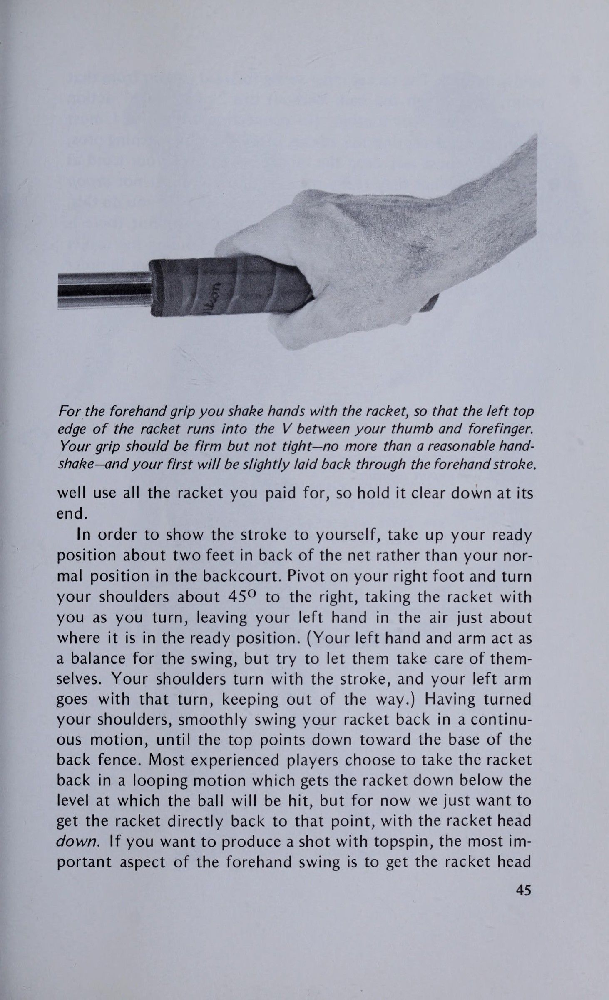
z Đánh vào lưới mà không có bóng có thể hướng dẫn người mới chơi cách đánh bằng os topspin. "khóa"? cổ tay của bạn, vì bạn cũng có thể khóa cánh tay của mình. Đơn giản là bạn không nên di chuyển cổ tay của mình trong quá trình vung vợt. Đặt một quả bóng giữa Mặt vợt thẳng đứng của bạn và lưới. Giữ nó ở đó, với vợt và tay song song với lưới. Bây giờ nhấc vợt về phía trước và hướng lên trên, giữ Mặt vợt thẳng đứng. Khi quả bóng bật lên qua lưới và nảy sang phía bên kia, nó sẽ lăn về phía trước. Đó là Xoáy lên; đường sức của bạn đã đi qua quả bóng tại một điểm phía trên tâm của nó. Và đó là tất cả những gì được yêu cầu.
Để xem độ xoáy của bất kỳ quả bóng tennis nào, bạn phải tập trung vào một điểm trên quả bóng khi nó di chuyển ra xa bạn, thay vì nhìn vào đường đi tổng thể của quả bóng. Học cách quan sát độ xoáy của quả bóng
Le _ Đường đi của cú Cú thuận tay (forehand) (forehand) là Sve, được hình dung rõ nhất là chạy về phía trước YF và đi lên xuyên qua quả bóng, thay vì g khi di chuyển qua bất kỳ loại vòng tròn wr) nào quanh cơ thể người chơi "Qe đang thực hiện cú đánh, với thử nghiệm này là đưa nó lên trên lưới. i Sau đó, hãy chắc chắn rằng bạn vẫn có thể thấy xoáy khi bạn tăng tôi tốc độ. Nếu tại bất kỳ thời điểm nào bạn gặp khó khăn, hãy lấy bóng mới có nhãn tốt hoặc đặt một số vết xước lớn trên của bạn bóng tập tôi bằng mực hoặc sơn.
: Bây giờ, hãy thử thực hiện một cú xoay chậm nhưng đầy đủ từ vị trí bạn đang đứng cạnh lưới. Đưa vợt về phía sau với cánh tay và vai của bạn cùng hoạt động, đảm bảo rằng ở phía sau tôi cú vung vợt của bạn không ở xa phía sau bạn hơn là hướng về phía hàng rào phía sau và nó hơi nghiêng xuống thay vì hướng lên. Sau đó vuốt về phía trước và lên, qua
iW Một người chơi có kinh nghiệm sẽ vung cú Cú thuận tay (forehand) (forehand) với một chuyển động giật hoàn toàn và liên tục. lưới, sao cho bạn Kết thúc cú đánh với đầu vợt hướng thẳng
lên. Điều này ban đầu có vẻ quá khoa trương, nhưng hãy xem các chuyên gia thi đấu trong giải đấu - tất cả họ đều đạt thành tích cao như vậy. Hãy đảm bảo rằng bạn chạm vào chứ không phải đánh vào
dây lưới khi vợt của bạn trèo qua nó. Khi bạn vung gậy, hãy xoay vai về phía trước trong cú đánh: ở bên thuận tay, cánh tay của bạn đặt
ở phía sau cơ thể khi bắt đầu và bạn phải quay về phía trước một chút để có chỗ cho cánh tay của mình vung qua cơ thể. Đừng giật mạnh vai của bạn mà hãy để chúng đồng loạt xoay về phía trước
với cánh tay của bạn qua phần đầu tiên của cú swing. Hông của bạn cũng sẽ hướng về phía trước trong cú đánh như một phần của động tác tương tự-
Trình tự vuốt bóng thích hợp ở cú thuận tay (forehand) là xoay, bước, đánh và theo sau. tôi đang nói đến chuyện này. (Họ thực hiện cú Cú thuận tay (forehand) (forehand) nhiều hơn so với
cú Cú trái tay (backhand) (backhand), nơi cánh tay của bạn vung từ mép trước của cơ thể.) Cố gắng giữ cánh tay của bạn ''đóng băng'' trong khi vung, ngoại trừ ở vai. Nói cách khác, đừng uốn cong cổ tay hoặc khuỷu tay của bạn để
giúp đánh bóng. Chỉ cần để cánh tay của bạn vung từ vai. Không cần phải có những sự vặn vẹo mà hầu hết mọi người đều cảm thấy
là cần thiết để tạo Xoáy lên cho bóng. Ở cả cú Cú thuận tay (forehand) (forehand) và trái tay, bạn vẫn có thể đánh tốt nếu cánh tay và
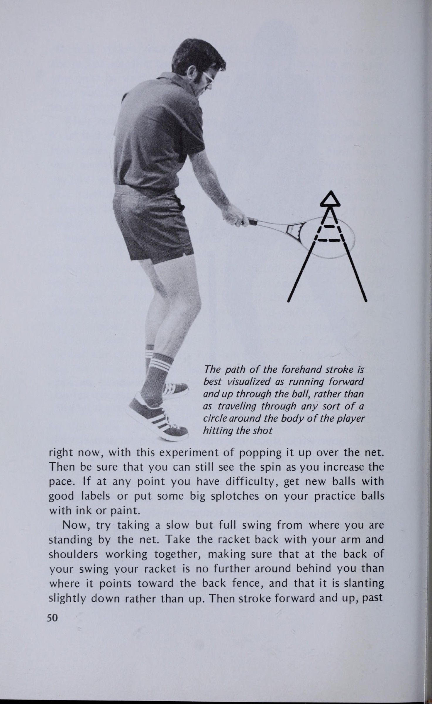
cổ tay được bó bột. Khuỷu tay và cổ tay của bạn không được lắc lư khi Cú thuận tay (forehand) (forehand). Lý tưởng nhất là bạn có thể xoay người hoàn hảo nếu cánh tay của bạn bị bó bột.
Trong bất kỳ cú đánh tiếp đất nào, bạn muốn Mặt vợt di chuyển về phía trước và xuyên qua quả bóng càng lâu càng tốt (nếu bạn
đánh bằng Xoáy lên). Nếu bạn kéo Mặt vợt ra khỏi đường bay của bóng bằng cách xoay người về phía trước quá mức hoặc kéo vợt.
đặt tay ngang cơ thể, bạn đã đưa ra một hướng mới không cần thiết cho các chuyển động về phía trước và hướng lên mà bạn muốn, và điều này có thể làm hỏng cú đánh của bạn. Ngoài ra, có rất nhiều điều phải xảy ra trong quá trình
đánh để thành công: quả bóng dẹt ra khỏi dây, dây phồng ra sau rồi bật về phía trước, đứt phập phồng
bóng quay trở lại sân. Bạn muốn vợt di chuyển theo một đường trơn tru nhất có thể theo hướng bạn đánh trong suốt quá trình này. Bạn có thể nghĩ đến việc đánh không chỉ một quả bóng mà còn
10 quả bóng thẳng hàng, sao cho bạn đánh xuyên qua quả bóng thật một cách mượt mà. Sẽ có một số sự khác biệt so với vòng tròn thẳng đứng,
vì cơ thể con người được cấu tạo như thế nào, nhưng bạn muốn giữ nó ở mức tối thiểu. Hình ảnh một Hula-Hoop khổng lồ ở rìa
không khí ở bên cạnh bạn, xếp thành hàng theo hướng bạn muốn đánh, sau đó đưa vợt của bạn về phía trước và lên trên bên trong vành vợt. Đó là
loại chuyển động mà bạn muốn ở cú Cú thuận tay (forehand) (forehand). Đối với người mới bắt đầu, điểm thấp nhất của cú đánh thường đến ở cuối động tác vung vợt sau. Đối với những người chơi có kinh nghiệm hơn, mức thấp Điểm
xuất hiện xa hơn trong cú đánh, tại điểm giữa điểm cuối của cú vung sau và điểm tiếp xúc với bóng, bởi vì chúng
vung vợt theo chuyển động vòng tròn để xác định thời gian và nhịp điệu. Để xem vòng lặp trông như thế nào, hãy đứng trước gương. đu
quay lại dọc theo phần trên và sau đó tiến dọc theo phần dưới của một vật thể hình bầu dục tưởng tượng nổi ở bên cạnh bạn và hầu hết ở dưới mức tiếp xúc với quả bóng. Bạn sẽ cần gương để kiểm tra xem bạn có thực sự thực hiện chuyển động này hay không. Một số người thậm chí còn bắt đầu-
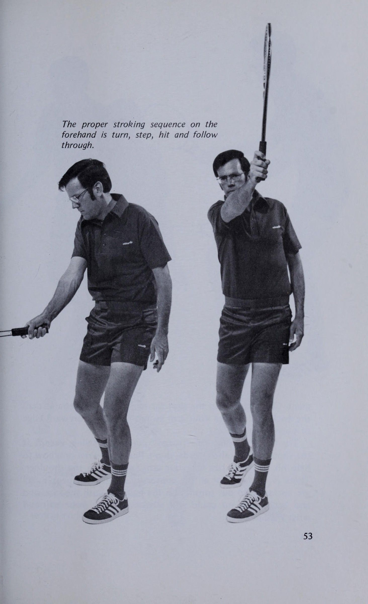
người mới tìm thấy rằng một cú xoay vòng như vậy hỗ trợ thời gian của họ, nhưng những người khác lại bị nó làm gián đoạn. Tuy nhiên, tôi nghĩ rằng lúc đầu mọi người nên học cách cầm vợt qua lại: không sao cả
trình độ kinh nghiệm của bạn là bao nhiêu, bạn sẽ cần một cú đánh ngược như vậy để Trả giao bóng trước những cú giao bóng mạnh hoặc bất kỳ cú đánh vội vàng nào khác.
Không cần phải lật hoặc lật cổ tay trong khi thực hiện cú đánh. Nếu bạn làm điều này, bạn đang tạo ra sự không chắc chắn trong cú swing của mình.
Dù bạn làm gì, đừng lăn cổ tay để đưa vợt trên không (overhead) quả bóng, vì nghĩ rằng điều này sẽ 'giữ cho quả bóng không bay ra khỏi sân.'' Khi bạn thực hiện chuyển động như vậy, Mặt vợt của bạn sẽ thay đổi góc liên tục và bạn phải có thời điểm hoàn hảo để đánh bóng với một "'thiết lập"' sẽ đưa bóng trở lại cuộc chơi. Tốt hơn hết là bạn nên biết cách thiết lập vợt chính xác cần thiết để đánh bóng vào sân (thường là theo chiều dọc hoặc hơi mở) Mặt vợt) và giữ nguyên cài đặt đó với cổ tay vững chắc trong suốt quá trình vung vợt. Điều này mang lại cho bạn khả năng sai sót lớn về thời gian, thay vì không có sai sót nào cả.
Khi bạn thực sự thực hiện một cú Cú thuận tay (forehand) (forehand), bạn phải chắc chắn đánh xuyên qua quả bóng, vung từ điểm bắt đầu rõ ràng đến điểm Kết thúc cú đánh cao thích hợp, thay vì thực hiện bất kỳ kiểu đánh nào vào bóng. Nếu bạn đánh vào quả bóng, mọi thứ sẽ bị giật và quả bóng sẽ bật ra khỏi dây của bạn mà không có sự kiểm soát nào. Cú xoay dài và hoàn toàn giống như nòng súng trường: nó tạo độ xoáy cho viên đạn giúp bạn kiểm soát đường bay của nó. Bạn nên thực hiện một cú đánh đầy đủ khi thực hiện cú vung và di chuyển đủ tốt xung quanh sân để đặt quả bóng tennis đang chuyển động trước Cú đánh hoàn chỉnh đó.
Sau khi bạn đã lướt vợt qua lưới vài lần, hãy lùi lại bốn hoặc năm bước. Lấy một quả bóng tennis trong tay trái của bạn và ném nó lên bằng tay để nó nảy theo phương thẳng đứng. Hãy để nó nảy hai lần trong khi bạn đã sẵn sàng, bước về phía trước, sau đó nhân đôi cú xoay mà bạn đã sử dụng trên lưới, lần này đánh xuyên qua quả bóng khi nó đạt đến đỉnh của lần nảy thứ hai.
Để mọi việc dễ dàng, ban đầu bạn nên xoay người sang một bên trước khi nảy bóng, sau đó thử toàn bộ trình tự "xoay, bước, cú đánh". Đảm bảo rằng bạn nảy bóng đủ xa về phía trước và đủ xa về phía bạn để khi bạn bước về phía trước, bóng vẫn nằm ở vị trí mà bạn có thể vung qua nó một cách thoải mái. Một lần nữa, hãy đảm bảo rằng bước đi của bạn hướng về phía trước, trên một đường song song với đường bay của quả bóng nếu nó sắp lên sân. Nếu bạn bước về phía quả bóng thì đúng hơn hơn về phía trước, bạn sẽ không có chỗ để xoay người đúng cách.
Vuốt nhẹ nhàng qua quả bóng, di chuyển vợt của bạn một cách mượt mà từ đầu đến cuối cao. Bạn có thể vuốt bóng qua lưới, lăn về phía trước khi bạn đưa vợt thẳng đứng (hoặc hơi mở) hướng lên phía sau quả bóng không? Nếu lúc đầu bạn không thể, hãy lùi lại lưới, tập vung vợt ở đó, sau đó lùi lại và thử lại.
Tiếp tục luyện tập, thả bóng và vuốt bóng qua nó, cho đến khi bạn có thể đánh bóng qua lưới một cách nhất quán
với cú cuộn Xoáy lên thích hợp. Sau đó bắt đầu di chuyển trở lại sân, mỗi lần hai thước, thả bóng và đánh chúng một chút
khó hơn ở mỗi vị trí. Hãy đảm bảo rằng tất cả chúng đều có cuộn Xoáy lên, và nếu tại một thời điểm nào đó chúng không có, hãy sao lưu và bắt đầu lại
lần nữa. Hãy nhớ rằng bạn không đánh để đưa bóng từ bên lưới của bạn sang bên kia. Đúng hơn là bạn đang cố gắng làm
chúng di chuyển ra xa bạn với Xoáy lên. Nếu phải lựa chọn, tốt hơn là bây giờ nên đánh những cú đánh Xoáy lên vào lưới hơn là không đánh một cú Xoáy lên nào cả.
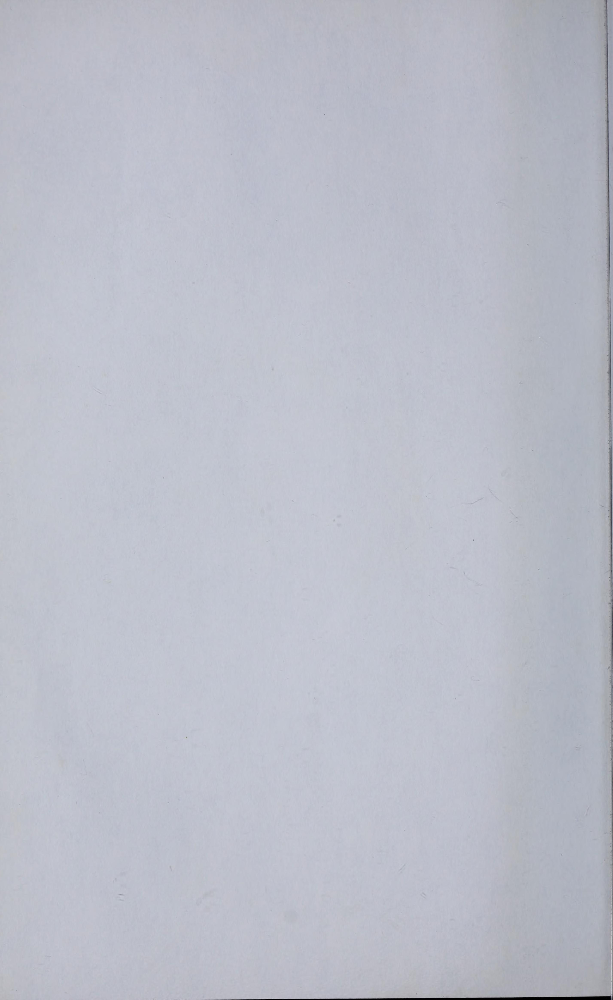
Tại thời điểm này, bạn có thể làm cho quả bóng lăn về phía trước khỏi bạn, ngay cả khi nó không đi qua lưới. (Trong trường hợp đó
trường hợp bạn vung vợt đúng cách nhưng Mặt vợt của bạn lại bị đóng. Mặt vợt hướng xuống mặt đất.) Nếu không thể
có được bóng Xoáy lên vì lý do nào đó, hãy đảm bảo rằng bạn hiểu bạn đang cố gắng làm gì — bạn đang cố gắng nâng một quả bóng lên
vợt thẳng đứng hướng mặt vào phía sau của quả bóng khi leo dốc - sau đó loại bỏ bản thân khỏi phạm vi vuốt ve thích hợp để thực hiện một cú đánh
khoảnh khắc. Quay lại lưới và lấy vợt ra khỏi tay. Mở các ngón tay của bạn ra, làm cho lòng bàn tay và các ngón tay của bạn trở thành một khối cứng duy nhất và lướt bàn tay của bạn qua lưới. Bất cứ ai,
dù không thể thao đến đâu, chắc chắn họ có thể lướt tay qua một vật gì đó theo hướng đi lên. Sau đó lùi lại và nắm lấy vợt, nhưng lần này bị nghẹn ở cổ họng. Bây giờ,
thả một quả bóng và lướt dây thẳng qua nó. Đừng đánh về phía trước, chỉ cần nhấc lên, từ dưới bóng đến một điểm
phía trên, kéo dây vợt lên phía sau. Quả bóng sẽ quay rất mạnh, không đi đâu cả, nếu bạn làm đúng: bạn
đã tạo ra Xoáy lên mà không có bất kỳ tác động nào để đưa bóng về phía trước. Bây giờ, thay vì chỉ nhấc vợt thẳng đứng lên phía sau quả bóng, hãy thử nhấc lên và về phía trước. Nếu bóng đi vào
lưới, mở Mặt vợt — xoay mặt đánh lên hướng lên trời nhiều hơn — nhưng hãy đảm bảo rằng bạn vẫn ép vợt
quả bóng lăn về phía trước khỏi dây. Dần dần làm phẳng cú swing từ phương thẳng đứng mà bạn đã bắt đầu cho đến khi quả bóng không chỉ quay với Xoáy lên mà còn di chuyển về phía trước trên mặt phẳng.
lưới. Sau đó di chuyển bàn tay của bạn xuống tay cầm. Bằng cách này, bạn có thể tận dụng được cú thuận tay (forehand) Xoáy lên của mình. Khi bạn bắt đầu đánh chính xác, với tốc độ vung vợt nhanh hơn một chút, bạn sẽ trải nghiệm cảm giác "'cắn'' giữa dây vợt của bạn và bóng, khi chúng cầm bóng và không chỉ đẩy bóng về phía trước mà còn truyền cả Xoáy lên cho nó.
Đã đạt đến điểm này trong việc mô tả cơ chế của cú thuận tay (forehand), tôi muốn chuyển sự chú ý của chúng ta sang Cú trái tay (backhand) (backhand) tay. Tôi còn rất nhiều điều để nói về cách bạn kiểm soát hướng và độ cao của cú đánh, cũng như cách luyện tập cú đánh để biến nó thành vũ khí tự động, hạng nặng mà bạn cần. Nhưng những nhận xét như vậy cũng áp dụng tốt cho Cú trái tay (backhand) (backhand) tay, được đề cập tiếp theo. Nếu bạn muốn tìm hiểu về cách điều khiển ngay bây giờ, hãy chuyển sang Chương 7, 'Kiểm soát cú chạm đất'.
Cú Trái Tay Topspin: Một Tay Cổ Điển & Hai Tay Hiện Đại
Chapter 6: The Topspin Backhand (One-Handed & Two-Handed)
Trái tay Nguyên tắc của Cú trái tay (backhand) (backhand) tay Xoáy lên cũng giống như đối với cú thuận tay (forehand) Xoáy lên: bạn muốn vung một cây vợt thẳng đứng hướng lên trên và xuyên qua quả bóng. Nhưng vì bạn quay sang trái thay vì phải và vì bạn vung cánh tay ở phía trước cơ thể chứ không phải phía sau cơ thể nên có một số khác biệt quan trọng về mặt cơ học.
Di chuyển lên lưới và vào tư thế sẵn sàng (ready position). Cầm vợt bằng kiểu cầm thuận tay, kiểu cầm "bắt tay", kiểu cầm thích hợp để vào Tư thế sẵn sàng. Khi bạn xoay người để thực hiện cú thuận tay (forehand), vợt của bạn sẽ tuột ra khỏi tay trái. Nhưng ở bên trái tay, tay trái giúp đỡ vợt về. Do đó, việc chuyển tay phải của bạn sang cách cầm vợt trái tay sẽ dễ dàng hơn khi bạn xoay người. (Do sự hỗ trợ của tay trái này, nhiều người chơi có cú Cú trái tay (backhand) (backhand) ổn định hơn so với cú Cú thuận tay (forehand) (forehand) của họ.) Để chuẩn bị cho cú Cú trái tay (backhand) (backhand), hãy xoay chân trái và xoay vai và cơ thể của bạn một góc 90 độ về phía lưới. tốt
ý tưởng là nghĩ đến việc hướng vai về phía trước của bạn vào quả bóng đang đến gần. Khi bạn xoay, tay trái của bạn giữ ở cổ vợt, đỡ nó, trong khi tay phải của bạn di chuyển ngược chiều kim đồng hồ, đưa đốt ngón tay trỏ lên trên cùng của vợt và ngón cái của bạn hướng lên phía sau cán vợt, theo hướng nghiêng. Sau khi xoay, bạn sẽ có thể giữ Trọng tâm cơ thể một đồng xu trên mu bàn tay phẳng, phía sau đốt ngón tay đầu tiên. Cẩn thận thực hiện chuyển số chính chỉ bằng phần trước của bàn tay khi bạn chuyển sang cách cầm trái tay; bạn không nên thay đổi đáng kể điểm mà mông vợt tựa vào lòng bàn tay.
Đối với cách cầm vợt trái tay, hãy xoay đốt ngón tay đầu tiên của bạn sang trái cho đến khi nó vượt qua mép trên bên trái của vợt, đồng thời để gốc bàn tay của bạn ở cùng một điểm trên vợt khi nó chạm vào cú Cú thuận tay (forehand) (forehand). Bạn không muốn có một góc nhọn giữa vợt và cánh tay của bạn ở cú Cú trái tay (backhand) (backhand). Nếu bạn xoay toàn bộ bàn tay của mình để có được cách cầm vợt trái tay, như nhiều người chơi vẫn làm, bạn sẽ tạo ra một góc giữa vợt với bàn tay và cánh tay của bạn. Kết quả là, bạn phải Bật cổ tay để đánh bóng thẳng xuống sân, hoặc nếu không, bạn phải xoay người vào cú đánh: hai sai lầm nghiêm trọng ở cú Cú trái tay (backhand) (backhand). Với cách cầm vợt trái tay chính xác, vợt vẫn là phần mở rộng của cánh tay, thay vì tạo thành một góc với cánh tay của bạn. Lý do của việc dịch chuyển tay cầm là để bạn đưa tay ra sau vợt nhiều hơn và cũng để làm cho Mặt vợt thẳng đứng hơn. Nếu bạn vung Cú trái tay (backhand) (backhand) tay bằng cách cầm vợt thuận tay, Mặt vợt sẽ thoáng hơn và bạn sẽ có xu hướng cắt vào dưới bóng.
Vì vậy, hãy thay đổi độ bám của bạn khi bạn xoay người và xoay vai. Đối với cú Cú trái tay (backhand) (backhand) Xoáy lên, bạn muốn vợt lùi và hướng xuống, mặt trên của vợt hướng về phía hàng rào phía sau theo hướng hướng xuống-
Ở cú Cú trái tay (backhand) (backhand), bạn muốn xoay vai trước khi đánh. Hãy nghĩ đến việc hướng vai của bạn vào quả bóng khi nó lao tới bạn và sau đó giữ vai đó trong suốt cú đánh càng nhiều càng tốt.
càng tốt, Một cú xoay từ thấp đến cao sẽ tạo ra một cú Cú trái tay (backhand) (backhand) Xoáy lên. phường nghiêng. Hiện tại, việc đặt vợt ở đó sẽ dễ dàng hơn. (Thực tế là nó sẽ đến đó theo lượt của bạn.) Sau đó, bạn có thể thử thực hiện một cú giật, giống như cú giật ở bên thuận tay, nhưng bây giờ chỉ cần đặt vợt qua lại và xuống. Khi bạn bước về phía trước sau lượt của mình, hãy cố gắng có cảm giác để vợt trở lại vị trí cũ. Nói cách khác, bạn sẽ có cảm giác như mình đang ấn vợt về phía sau khi bước về phía trước.
Tuy nhiên, xin lưu ý rằng tôi nghĩa là lùi về phía hàng rào phía sau, không quấn quanh người bạn theo cách mà đối thủ của bạn có thể nhìn thấy đầu vợt phía sau bạn nếu anh ta muốn. Nếu bạn làm điều này, bạn đã uốn cong cánh tay ở khuỷu tay và cổ tay,
Giữ khuỷu tay của bạn ở bên cạnh bạn, phía sau mặt phẳng của vợt khi nó tiếp xúc với bóng. Nếu khuỷu tay của bạn nhô ra phía trước giống như bạn
Cú trái tay (backhand) (backhand) của bạn, bạn đang cầu xin một trường hợp khuỷu tay quần vợt cổ điển. và tất cả những khúc cua đó phải. thỉnh thoảng xuất hiện trong cú đánh: tốt hơn hết là không nên uốn cong ngay từ đầu. Chỉ cần đặt tay phải của bạn ra sau hông trái, vợt nghiêng về phía sau và hướng xuống. Khi đã bước về phía lưới, bạn có thể phát hiện ra rằng bây giờ mình đã ở quá gần nó. Bởi vì cánh tay của bạn ở bên trái tay nằm ở phía cơ thể gần bóng nhất, nên bạn cần nhiều khoảng trống hơn để vung vợt so với bên thuận tay. Nói cách khác, ở cú Cú trái tay (backhand) (backhand), bạn đưa bóng về phía trước xa hơn một chút so với cú Cú thuận tay (forehand) (forehand). Di chuyển lùi lại vài inch so với lưới và bạn sẽ có đủ chỗ để vung về phía trước và lên trên.
Giống như cú thuận tay (forehand), điểm thấp nhất trong cú vung vợt của bạn phải đến ở một điểm nào đó trước khi bạn đánh bóng, giúp bạn có thể nhấc vợt lên và về phía trước, xuyên qua bóng, để tạo ra Xoáy lên. Một sai sót lớn và rất phổ biến ở cú Cú trái tay (backhand) (backhand) là người chơi phải cầm vợt lùi và lên trong cú đánh sau, khiến anh ta không có thời gian hạ đầu xuống dưới mức bóng trước khi đến lúc phải đánh về phía trước. Khi gặp vấn đề này, người chơi thường chặt bóng. Điều này sẽ đưa bóng đi với xoáy xuống, dài hoặc rộng sang trái. Khi bắt đầu học trái tay, hầu như không thể đặt đầu vợt xuống quá thấp hoặc nhấc vợt lên qua bóng quá dốc. Sau khi hiểu được cảm giác lăn bóng về phía trước, thì cú xoay có thể được làm phẳng để tạo ra cú đánh tốt nhất trên sân. Vì vậy, khi bắt đầu, hãy sử dụng tay trái của bạn không chỉ để thu vợt về phía sau mà còn phải giữ đầu vợt hướng xuống trước khi vuốt về phía trước.
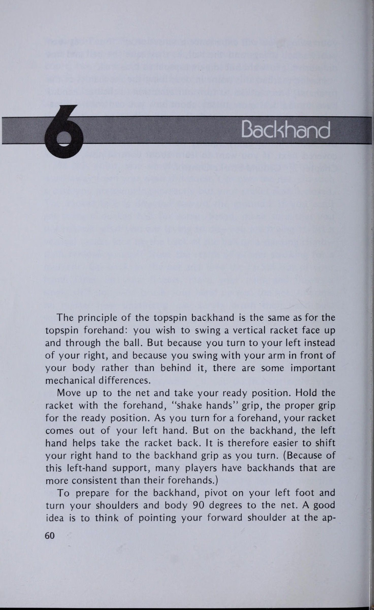
Cuối cùng, hãy đảm bảo rằng cánh tay của bạn nằm sát cơ thể ngay trước khi bạn vuốt về phía trước, không đưa ra xa cơ thể. Bạn cần có cảm giác vung vợt giống như một con lắc về phía trước và lên trên từ vai của mình, đồng thời bạn không muốn bất kỳ khuỷu tay dịch chuyển hoặc uốn cong cổ tay nào làm ảnh hưởng đến một cú vung vợt đẹp, gọn gàng bằng cả cánh tay của bạn. Một lần nữa, ý tưởng để vợt lại khi bạn bước về phía trước sẽ hữu ích, bởi vì trên thực tế, bạn sẽ kéo chặt cánh tay của mình qua cơ thể.
Vậy cuối cùng hãy đánh một cú nhé. Sau khi xoay người và bước, bây giờ bạn sẽ đánh về phía trước, để vợt vung về phía trước bằng tay trái của bạn như thể nó sắp ra khỏi giá đỡ. Hoặc bạn có thể nghĩ tới việc rút một thanh kiếm ra khỏi bao. Đừng
thả tay trái xuống trước khi bạn vung vợt về phía trước và cũng đừng cố "ném" vợt bằng tay đó. Chỉ cần vung về phía trước từ vai của bạn, di chuyển toàn bộ cánh tay, bàn tay và vợt của bạn như
một đơn vị. Điều tồi tệ nhất cần làm là đưa khuỷu tay ra trước cú swing của bạn. Điều này làm hỏng cú đánh và mời các tay vợt-
cúi đầu. Bạn muốn khuỷu tay và cổ tay ở phía sau mặt phẳng của vợt khi nó tiếp xúc chứ không phải ở phía trước vợt. Xoay từ vai của bạn, quét đầu vợt từ thấp đến cao, lướt qua dây lưới với Mặt vợt thẳng đứng, và Kết thúc cú đánh với vợt và cánh tay của bạn được mở rộng một cách thoải mái, như chúng đã thực hiện trong suốt cú vung, hướng lên trên
phía trên đầu bạn. Cơ thể của bạn vẫn phải hướng về phía nơi bạn đang đánh, như thể đang đấu tay đôi. Ở bên trái tay, vì cánh tay của bạn ở phía trước nên bạn không cần phải làm vậy - và bạn
không muốn — xoay cơ thể của bạn quá nhẹ vào cú đánh: hông sẽ hướng về phía trước một chút, nhưng không nhiều lắm
di chuyển từ thế đứng cạnh đó. Bây giờ, hãy quay lại điểm mà bạn đã tiếp xúc giữa tay, vợt và lưới. Bạn sẽ thấy điều đó trên này
cú đánh cũng vậy, cổ tay của bạn phải uốn cong một chút nếu bạn muốn đưa bóng ra phía trước mà vẫn đánh thẳng xuống
sân đấu Bạn muốn đưa bóng ra trước mặt mình, như trong cú thuận tay (forehand), nhưng không quá mức. Nếu bạn tiến quá xa về phía trước,
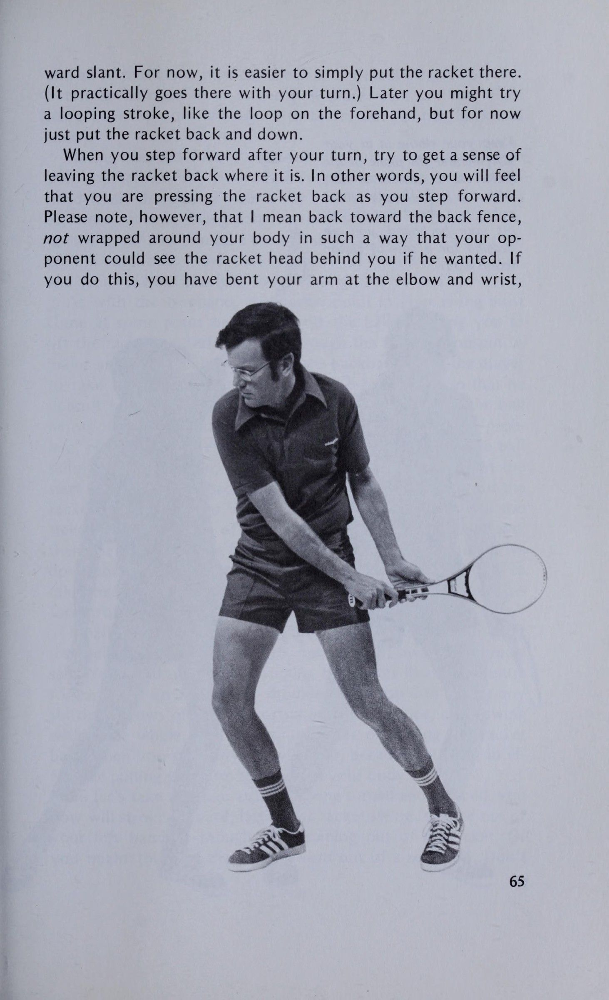
cú đánh của bạn sẽ có xu hướng trở nên phẳng hơn là di chuyển từ vị trí thấp lên vị trí cao. Thường thì bạn sẽ cú đập bóng smash
rộng của sân theo hướng Đánh chéo sân (cross-court), khi Dây vợt của bạn ngừng hướng về phía trước trong khi cố gắng vươn về phía trước. làm
đưa bóng ra phía trước nhưng không quá xa. Nếu quả bóng không hợp tác để đến với bạn thì bạn phải học cách di chuyển theo nó
để nó ở đúng vị trí khi bạn thực hiện cú đánh qua Hãy thử cú Cú trái tay (backhand) (backhand) Xoáy lên nhiều lần so với Mặt vợt
lưới, chạm tới điểm cao phía trên đầu bạn. Sau đó lùi lại, thả quả bóng cho chính mình và thử đánh nó. làm
chắc chắn rằng bạn đặt bóng ra trước vị trí bạn sẽ đứng khi bạn bước và đủ xa bạn sang một bên để bạn
có thể đu đưa. Tung nó lên bằng tay, đủ cao để nó nảy hai lần trong khi bạn chuẩn bị, sau đó đánh bóng lên trên và qua lưới bằng Xoáy lên. Hãy chắc chắn rằng bạn đứng sang một bên trong suốt cú đánh và cố gắng thực hiện mọi thứ một cách nhẹ nhàng. Vào thời điểm này, việc đập mạnh vào quả bóng là một lỗi phổ biến. Bạn có thể thử đánh một vài cú đánh trong khi giữ bóng ở giữa mặt trong cánh tay và hông, ngay phía trên khuỷu tay. Bóng sẽ rơi đi khi bạn Kết thúc cú đánh, nhưng nó sẽ vẫn được giữ chặt cho đến khi bạn đánh. Giữ khuỷu tay đó để có một cú Cú trái tay (backhand) (backhand) tốt.
Nếu bạn thấy mình gặp khó khăn trong việc thực hiện chuyển động thích hợp trong cú Cú trái tay (backhand) (backhand) của mình, hãy thử thí nghiệm đơn giản này. Di chuyển tay trái của bạn xuống tay cầm cho đến khi nó vừa chạm vào tay phải của bạn. Đảm bảo rằng tay phải của bạn cầm vợt trái tay và tay trái của bạn bắt tay với vợt giống như khi cầm vợt thuận tay trái. Sau đó vung bằng cả hai tay. Đừng tát vào bóng mà hãy nhấc vợt về phía trước và xuyên qua quả bóng bằng cả hai tay và không dùng cổ tay. Bởi vì cánh tay trái của bạn bây giờ là bán kính của cú vung và cánh tay của bạn đang xoay trên vai trái, Mặt vợt sẽ leo dốc hơn qua quả bóng. Nếu đúng như vậy thì bạn đang đi đúng hướng; Thông thường, vấn đề đầu tiên với cú Cú trái tay (backhand) (backhand) là người chơi không nhận ra họ muốn nâng vợt lên cao đến mức nào.
Một cách khác để có được lực nâng phù hợp là nghĩ đến việc giữ Trọng tâm cơ thể một đồng xu trên mép vợt của bạn trong động tác vung vợt sau, sau đó cố gắng ném đồng xu đó lên cao lên không trung với cú vung vợt của bạn xuyên qua quả bóng. Khá thường xuyên, một người chơi có cú Cú trái tay (backhand) (backhand) bằng một tay mờ nhạt sẽ chứng tỏ mình có cú Cú trái tay (backhand) (backhand) bằng hai tay xuất sắc: độ dốc cao hơn, tạo ra cú đánh sắc nét hơn nhiều và hai cổ tay dường như vững chắc hơn một. Tôi Tuy nhiên, tôi không khuyến khích sử dụng trái tay bằng hai tay vì nó làm giảm tầm với của bạn và do đó yêu cầu người chơi sử dụng nó phải tăng thêm tốc độ chân. Nhưng để hỗ trợ cho việc thể hiện mức độ leo lên cần thiết cho Xoáy lên, nó thật tuyệt vời.
Tôi tin rằng các cú đánh tiếp đất Xoáy lên tốt hơn so với các cú đánh cắt bóng của họ. Bạn có thể đánh những cú đánh Xoáy lên mạnh hơn, chính xác và an toàn hơn. Và bạn có thể tiếp cận nhiều Mặt sân hơn với cú Xoáy lên do đặc tính nhúng của nó. Tuy nhiên, trong khi hầu hết người chơi có thể tạo ra Xoáy lên ổn định.
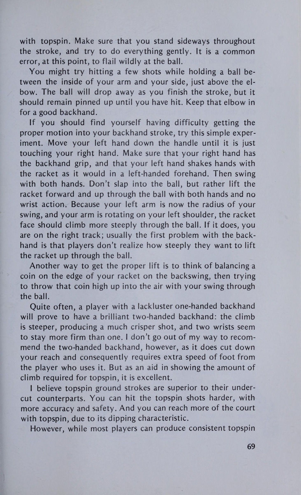
ở bên thuận tay, có những lúc họ cảm thấy khó hoặc không thể vượt qua được Cú trái tay (backhand) (backhand) tay. Khi Trả giao bóng khi giao bóng cứng, hoặc khi đánh bóng cao hoặc đánh bóng cứng, họ không thể vung vợt
có đủ quyền kiểm soát bóng. Ngoài ra, khi vào lưới sau một Cú trái tay (backhand) (backhand) tay dọc theo đường biên thuận tay của đối thủ, lý tưởng nhất là cú đánh nên ở tầm thấp sau cú đánh.
nảy lên. Xoáy xuống sẽ giúp tạo ra cú đánh thấp này. Cuối cùng, trên Sân Sân đất nện, giá trị của cú Cú trái tay (backhand) (backhand) undercut tăng lên như một cách hiệu quả để giữ bóng trong cuộc mà không cần nỗ lực nhiều.
Tôi hy vọng rằng bạn dành phần lớn nỗ lực học trái tay của mình để thành thạo topspin. Điều này thường đòi hỏi nỗ lực nhiều hơn một chút so với xoáy xuống lúc đầu, nhưng một khi đã học được nó sẽ cho phép bạn phát triển.
Đối với trái tay bằng hai tay, hãy đặt cả hai tay của bạn chặt vào nhau và càng xa vợt càng tốt, tay phải của bạn sẽ ở trong đó.
cách cầm vợt trái tay, tay trái của bạn cầm vợt thuận tay trái. Khi bạn vung vợt, đầu vợt sẽ dốc lên qua cú đánh, bởi vì bây giờ bạn sẽ xoay cú vung vợt trên vai trái của mình
hơn là bên phải của bạn, và điều này sẽ thúc đẩy Xoáy lên xuất sắc. Đối với cú Cú trái tay (backhand) (backhand) undercut, bạn phải bắt đầu vợt lên cao, vung vợt xuống dưới và xuyên qua quả bóng trên mặt phẳng nông, và Kết thúc cú đánh tốt ở phía trước, đồng thời chú ý không xoay người về phía trước quá nhiều.
thực hiện một cú đánh tấn công mạnh mẽ hơn. Nếu bạn thấy mình đánh được nhiều quả bóng với xoáy xuống và bạn không chơi trên mặt Sân Sân đất nện,
Tôi hy vọng bạn sắp xếp được nhiều thời gian luyện tập topspin hơn cho bản thân. Nhưng đối mặt với thực tế rằng không phải lúc nào hầu hết mọi người cũng sẽ gặp phải cú Cú trái tay (backhand) (backhand) với cú giật lên, và theo tinh thần, "'nếu
bạn sẽ đánh bóng xoáy xuống, đánh đúng," hãy để tôi mô tả Cú trái tay (backhand) (backhand) tay cắt bóng (underspin). Sự khác biệt giữa cú Cú trái tay (backhand) (backhand) Xoáy lên và cú Cú trái tay (backhand) (backhand) cắt bóng (underspin) hoặc xoáy xuống là Mặt vợt đi qua phía dưới
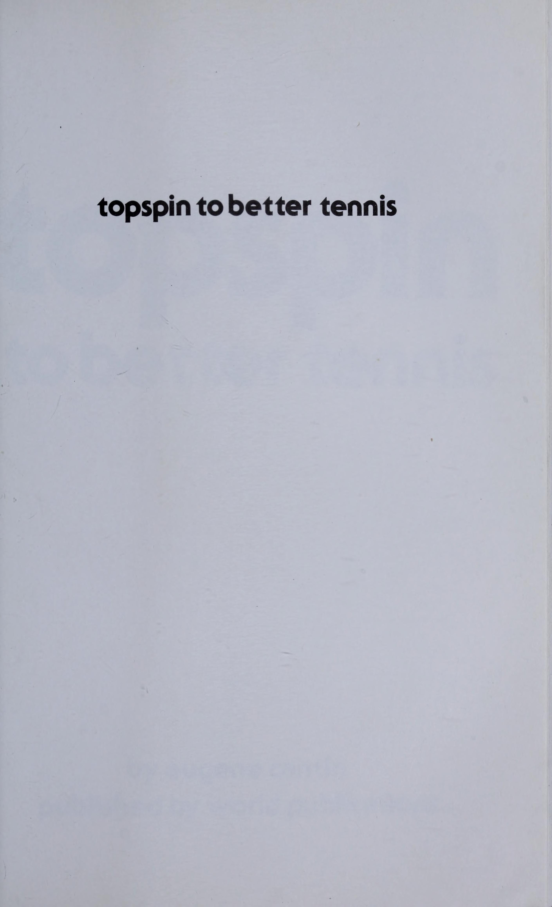
bóng thay vì đưa lên lưng. Ở cú Cú trái tay (backhand) (backhand) xoáy xuống, vợt bắt đầu cú đánh về phía trước từ một điểm trên mức
nơi sẽ tiếp xúc với bóng, thay vì từ bên dưới. Và ở Cú trái tay (backhand) (backhand) tay xoáy xuống, sự tiếp xúc với bóng xảy ra về phía sau của một người xa hơn so với cú Xoáy lên.
Để đánh bằng cú đánh xoáy xuống ở phía trái tay, bạn xoay và hướng vai về phía quả bóng đang đến gần giống như bạn thực hiện với cú đánh Xoáy lên, nhưng vợt được nâng lên và lùi lại, và
mặt được mở ra. Quả bóng được phép lùi xa hơn về phía bạn (khoảng sáu inch đến một foot). Sau đó, vợt vung về phía trước theo một đường nghiêng nông xuống, Mặt vợt trượt trực tiếp
dưới bóng rồi thực hiện và lùi lại thành một cú dứt điểm khá cao, mặc dù không cao bằng cú Xoáy lên. trên
xoáy xuống trái tay, bạn Kết thúc cú đánh với vợt hướng nhiều hơn về phía trên hàng rào phía sau của đối thủ
hơn là hướng thẳng lên không trung, như với Xoáy lên. Mặt vợt phải mở rộng để bóng bay qua lưới, và
bóng phải được đánh về phía bạn nhiều hơn là về phía trước để bạn có thể cắt dây ngay dưới bóng, tạo ra xoáy xuống chính xác, thay vì một kiểu Xoáy ngang cẩu thả nào đó. Dưới-
các cú Cú trái tay (backhand) (backhand) xoáy có chung một điểm quan trọng với các cú đánh Xoáy lên: bạn phải xoay người trong suốt cú đánh, Kết thúc cú đánh theo đường biên
về phía sân, thay vì quay về phía trước để đánh. Nếu bạn định sử dụng cú Cú trái tay (backhand) (backhand) cắt bóng (underspin), bạn sẽ đánh một cú đánh chậm hơn so với cú đánh Xoáy lên tạo ra, vì vậy bạn phải nỗ lực để tận dụng tối đa cú đánh của mình. Nếu không, bạn sẽ phải chịu sự thương xót của đối thủ. Hãy đảm bảo rằng bạn thực hiện một cú vung dài và đầy đủ qua quả bóng ở cú Cú trái tay (backhand) (backhand) undercut, và cố gắng
để "'bắn"' quả bóng ra khỏi dây một cách mạnh mẽ nhất có thể. Và sau đó đi ra ngoài và thực hiện cú Cú trái tay (backhand) (backhand) topspin của bạn. Với việc thực hành cú Cú trái tay (backhand) (backhand) Xoáy lên đó, bạn sẽ có thể bước vào cú đánh và đánh bóng với nhiều uy lực như cú thuận tay (forehand). Bạn phải làm việc với trái tay của mình và khả năng tạo ra một cú đánh Xoáy lên mạnh mẽ với nó, bởi vì bạn biết rằng phần lớn đối thủ của bạn sẽ cố gắng tấn công trái tay của bạn. Quần vợt hợp lý liên quan đến việc tấn công cú đánh được cho là yếu hơn và hầu hết các trò chơi của mọi người đều hướng tới đòn tấn công đó. Tuy nhiên, nếu bạn có thể đánh đủ số Cú trái tay (backhand) (backhand) tay trong thực tế để biến cú đánh đó thành vũ khí, thì bạn sẽ khiến đối thủ của mình rơi vào tình thế khó khăn khi không có nơi nào để thực hiện các cú đánh của họ.
Họ sẽ không có nơi nào để đánh nếu họ không nhận được một cú đánh tấn công cưỡng bức. Mọi người thường phá hoại trận đấu quần vợt của họ bằng cách tránh Cú trái tay (backhand) (backhand) vì sợ rằng họ có thể đánh trượt nó, dẫn đến kết quả là họ không thể đánh nó một cách hiệu quả khi cần thiết. Đừng tự mình phạm sai lầm đó. Hãy thực hiện cú Cú trái tay (backhand) (backhand) đó, hãy làm chủ cú Xoáy lên của nó, và bạn sẽ tạo ra một cuộc phục kích được sắp xếp trước cho đối thủ của mình. Không có cảm giác nào trong quần vợt tốt hơn niềm vui mà bạn sẽ trải qua khi thực hiện một cú đánh mạnh về phía trái tay, bước vững chắc về phía trước với vai xoay tốt và khoan bóng với cú Xoáy lên vượt qua đối thủ đang hoàn toàn giật mình của bạn.
Kiểm Soát Quỹ Đạo, Điểm Rơi & Gia Tốc Cú Đánh
Chapter 7: Stroke Control, Depth & Trajectory
Kiểm soát cú đánh Topspin cho phép bạn đánh cả cú đánh mặt đất thuận tay và trái tay với sức mạnh lớn, nhưng sức mạnh đó là vô giá trị
trừ khi bạn có thể kiểm soát hướng bóng. Việc kiểm soát bóng phụ thuộc vào một số yếu tố: vị trí bóng chạm vào dây vợt; góc của Mặt vợt khi tiếp xúc;
hướng mà dây di chuyển trong khi đánh (tức là bạn áp dụng bao nhiêu Xoáy lên); vợt của bạn di chuyển nhanh như thế nào trong
tiếp xúc và vị trí tiếp xúc đó xảy ra khi bóng di chuyển qua bạn. Để đánh tốt một quả bóng tennis, bạn phải đánh nó vào giữa vợt, ở "Tâm vợt tối ưu (sweet spot)". Khi quả bóng va chạm với vợt vào thời điểm này, các dây căng ra và bật lại đồng đều, dẫn đến khả năng kiểm soát tốt nhất có thể. Nếu bạn đánh lệch tâm
ở bất kỳ cú đánh nào, vợt sẽ lắc lư và xoay trong tay bạn. Sự phục hồi của một cú đánh như vậy sẽ không đồng đều và kết quả-
cú đánh có thể tệ hơn nhiều so với mức đảm bảo cho cú đánh của bạn. Khi bạn đánh lệch tâm, bạn sẽ cảm thấy có tiếng "cạch" giữa vợt và bóng. Điều này sẽ báo hiệu cho bạn rằng đã đến lúc bạn phải thả lỏng cách cầm vợt và cánh tay, quan sát bóng cẩn thận đến điểm tiếp xúc và cố gắng đánh bóng bằng tâm chính xác của Mặt vợt. Bạn không nên siết chặt tay cầm vì điều đó sẽ làm giảm cảm giác cầm vợt và bóng của bạn, đồng thời sẽ không giúp ích gì nhiều cho việc bạn đánh vào tâm dây.
Trong các cú đánh trên mặt đất (và cú vô-lê), góc của Mặt vợt của bạn sẽ quyết định độ cao hay độ thấp của quả bóng sau khi bạn đánh nó. Mặt vợt "mở" (dây nghiêng lên trên) sẽ khiến bóng bay lên cao hơn so với Mặt vợt "đóng" (dây hướng xuống dưới). Nói chung, bạn sẽ thực hiện hầu hết các cú đánh của mình với Mặt vợt hơi mở so với phương thẳng đứng, vì cú đánh của bạn phải bay lên và qua lưới trước khi thả xuống lần nữa. Bạn điều khiển phần tử mở hoặc đóng này bằng cổ tay của mình, bằng cách xoay nhẹ nó theo cách này hay cách khác. Bạn không thể kiểm soát Mặt vợt của mình bằng cách thay đổi cách cầm vợt! Để kiểm soát độ cao cú đánh của bạn qua lưới, hãy xoay cổ tay của bạn một lượng nhỏ cần thiết trước khi bạn đánh bóng. Tuy nhiên, sau khi đã đặt, cổ tay của bạn không được thay đổi trong suốt cú đánh.
Tất cả những điều này nghe có vẻ khá phức tạp, nhưng nó thực sự không phải là một khi bạn nảy ra ý tưởng bằng cách thử một vài cú đánh với "'cài đặt'' Mặt vợt khác nhau. Hãy tiếp tục. Mở Mặt vợt của bạn hướng lên trên và đánh bóng quá cao. Sau đó đóng vợt lại và đánh bóng vào đáy lưới (sử dụng cú đánh chính xác để thực hiện từng cú đánh). Thử nghiệm với việc mở và đóng Mặt vợt của bạn, để bạn có thể biết những loại điều chỉnh nào cần thiết cho từng cú đánh cụ thể. Chỉ cần đảm bảo rằng bạn đánh với Xoáy lên ở phía trên cùng một lúc.
Không thể sử dụng một cài đặt duy nhất cho tất cả các nét. Bạn sẽ cần tất cả các loại cài đặt và các kiểu chụp khác nhau tạo ra trong khi chơi. Nếu đối thủ của bạn ở sân sau, bạn sẽ thực hiện các cú đánh chạm đất Xoáy lên của mình với Mặt vợt khá thoáng, sao cho bóng sẽ đi qua lưới khoảng 4 feet, đưa sâu vào phần sân đối phương. (Độ sâu được kiểm soát nhiều hơn bằng cách mở Mặt vợt và hình dạng của cú vung hơn là bằng lực bạn đánh bóng.) Nếu đối thủ của bạn vào lưới, bạn sẽ đóng Mặt vợt lại một chút so với thiết lập trước đó, do đó giữ bóng ở mức thấp trên lưới và buộc đối thủ của bạn phải vô-lê lên. Cú xoay sẽ giữ nguyên nhưng cài đặt mặt sẽ thay đổi. Nếu bạn muốn Cú lốp bóng (lob), bạn sẽ mở rộng khuôn mặt
lên và đánh bóng qua quả bóng ở một góc dốc hơn. Có rất nhiều khả năng ở đây. Bạn có thể đóng Mặt vợt lại và chỉ cần dọn lưới, hoặc mở Mặt vợt lên trên để đánh bóng.
cao hơn và sâu hơn nhiều. Bạn phải cố gắng giành quyền kiểm soát toàn bộ phạm vi và thực hiện điều khiển của mình một cách tự động thông qua
luyện tập và chơi. Ở phần trên, chúng ta nói về việc thay đổi đường bay của quả bóng bằng cách thay đổi góc của Mặt vợt trong khi vẫn giữ được hình dạng của vợt.
cú swing giống nhau. Điều quan trọng cần nhận ra là bạn cũng có thể thay đổi đường bay của quả bóng bằng cách thay đổi mức độ Xoáy lên mà bạn đặt vào nó. Trong trường hợp này, bạn giữ góc vợt
tương tự, nhưng thay Đổi hướng bóng đi qua quả bóng. Ở một phía của khả năng, bạn có thể nâng cao một chút
Mặt vợt mở đột ngột về phía sau của quả bóng đến mức bạn đặt một lượng Xoáy lên cực lớn vào nó, nhưng nó sẽ khó đi qua lưới vì bạn chưa lái qua nó. các
đầu còn lại của phạm vi này là đánh xuyên qua quả bóng với một cú xoay gần như phẳng, khiến quả bóng bay đi với rất ít điểm trên-
quay nó chút nào. Bạn không thay đổi Mặt vợt, nhưng bạn đã thay đổi hoàn toàn đường bay của quả bóng bằng cách lái mặt đó xuyên qua quả bóng theo hai hướng khác nhau. (Trong bài kiểm tra đầu tiên-
ví dụ, đường lực do vợt truyền vào hầu như không cắt được quả bóng, vượt xa tâm của nó, trong khi ở trường hợp thứ hai, lực gần như xuyên qua tâm quả bóng.) Xoáy lên thích hợp nằm giữa hai thái cực này, với việc vợt của bạn lướt lên phía sau quả bóng để tạo Xoáy lên cho cú đánh của bạn, nhưng cũng đánh xuyên qua quả bóng đủ để đẩy cú đánh của bạn về phía trước qua lưới. Cũng như không có một thiết lập duy nhất nào cho Mặt vợt trên các cú đánh của bạn, nên không có lượng Xoáy lên thích hợp: bạn sẽ sử dụng Xoáy lên để làm nhiều việc khác nhau với quả bóng, và bạn phải thử nghiệm để khám phá xem cần bao nhiêu Xoáy lên để tạo ra các kết quả khác nhau.
Một khía cạnh khác của cú đánh mà bạn phải kiểm soát là tốc độ bạn vung vợt trong cú đánh. Luôn luôn, để đánh mạnh hơn, học sinh bắt đầu vung vợt ngày càng nhanh hơn, và sau đó tự hỏi tại sao các cú đánh của họ hầu như không có kiểm soát - và thường là không có tốc độ - kết quả là. Để kiểm soát bóng, vợt phải tiếp xúc với bóng đủ lâu để xảy ra lực nén giữa bóng và dây, sau đó để cả hai bật lại một cách trơn tru.
Nếu bạn vung vợt quá nhanh, quá trình nén này không diễn ra bình thường và những cú đánh tệ hơn nhiều — những cú Cú đánh nhẹ (dink), bay bổng — sẽ diễn ra so với khi bạn vung vợt ở tốc độ chậm hơn. Việc đánh giá mức độ Xoáy lên mà bạn đặt vào bóng cũng khó hơn khi vung vợt thật nhanh. Tôi Để đánh mạnh hơn, bạn phải tập trung bước một bước dài về phía trước để dồn trọng lượng cơ thể vào cú đánh. Bạn phải đánh bóng vuông góc vào giữa dây và bạn phải thực hiện một cú vung dài, uyển chuyển thay vì bất kỳ kiểu giật mạnh, bạo lực nào để tiếp xúc đúng với quả bóng. Một khi bạn thực sự chắc chắn về tất cả những điều này, bạn có thể bắt đầu thử vung vợt nhanh hơn để có tốc độ cao hơn, nhưng bây giờ bạn sẽ biết khi nào cú vung vợt trở nên quá nhanh để kiểm soát và có thể giữ nó ở tốc độ dễ quản lý hơn. Nếu bạn đợi cho đến khi bóng gần đến chỗ bạn rồi mới bắt đầu vung vợt, bạn sẽ phải vung vợt rất nhanh để tiếp xúc được với bóng. Nếu bạn cảm thấy mình đang làm điều này, hãy tập trung vào việc bắt đầu cú đánh của bạn sớm hơn, nhưng thực hiện nó chậm hơn để bạn vẫn gặp bóng một cách chính xác. Bạn sẽ "mang" bóng lâu hơn theo cách này và tạo ra những cú đánh tốt hơn.
Với cuộc thảo luận của chúng ta về góc của Mặt vợt, chúng ta đã mô tả cách thức kiểm soát được thực hiện theo hướng thẳng đứng của quả bóng sau cú đánh. Để đánh bóng chính xác, bạn cũng phải điều khiển hướng trái và phải.
Hướng ngang của cú đánh của bạn sẽ được xác định chính xác bởi vị trí bạn lấy bóng khi nó đi ngang qua bạn. Nếu bạn
tiếp xúc với bóng sớm — ở phía trước bạn, vượt quá khoảng cách bình thường mà bạn muốn đánh bóng — bạn sẽ có xu hướng đánh bóng Đánh chéo sân (cross-court). Khi bạn vươn người về phía trước, Mặt vợt của bạn sẽ ngừng "nhìn" xuống sân và bắt đầu hướng mặt về phía Mặt vợt.
bên ngày càng nhiều. Nếu bạn đưa bóng lùi xa hơn mức này, ngay tại điểm mà các sợi dây hướng thẳng xuống sân,
bạn sẽ đánh cú đánh thẳng xuống sân. Và nếu bạn đưa bóng lùi xa hơn, bạn sẽ có xu hướng đánh bóng ra xa.
Trên thực tế, để đánh theo các hướng khác nhau, bạn phải luôn vung vợt với cùng một cú xoay. Bạn muốn
giữ cổ tay và cánh tay của bạn cố định trong suốt cú swing. Đừng vỗ vào cổ tay hoặc thò khuỷu tay ra để thay Đổi hướng bóng đánh. Điều thay đổi là lập trường của bạn liên quan đến
quả bóng đang tiến về phía bạn và nơi bạn đánh quả bóng đó trên đường bay qua bạn. Mặc dù trong điều kiện chơi bạn
có thể thấy mình bị buộc phải thay đổi cú đánh của mình để thay Đổi hướng bóng đánh, bạn sẽ đánh an toàn hơn, chắc chắn hơn nhiều
cú đánh nếu bạn thay đổi thế đứng. Chọn một đường trên sân và giả vờ rằng một quả bóng đang di chuyển thẳng xuống đường đó về phía bạn. Hãy giữ vững lập trường của bạn
vuốt ve, đã quay về phía bất kỳ phía nào bạn muốn và đưa vợt của bạn ra sao cho dây của nó hướng thẳng xuống Mặt vợt.
dòng. Nếu bạn tiếp xúc với một quả bóng chính xác ở đây, nó sẽ di chuyển trở lại vị trí ban đầu. Bây giờ, để đánh một cú đánh Đánh chéo sân (cross-court), đừng di chuyển cánh tay hoặc vợt của bạn
chút nào, nhưng thay vào đó hãy Bước chân (footwork) sau của bạn đến gần vạch một hoặc hai inch, chân trước của bạn cách xa vạch một hoặc hai inch,
xoay thế đứng của bạn theo hướng mới mà bạn muốn bóng di chuyển. Giữ Mặt vợt của bạn ở vị trí trực tiếp trên đường
dọc theo hướng mà quả bóng tưởng tượng của chúng ta đang bay tới, nhưng hãy lưu ý rằng bây giờ nó giao với đường thẳng đó theo một góc, tại một điểm phía trước vài inch
nơi nó được đặt để đánh thẳng xuống vạch. Nếu bạn vung vợt chính xác như bình thường nhưng lại Vô-lê chặn vào lúc này.
điểm mới, bạn sẽ đánh bóng Đánh chéo sân (cross-court). Để đánh rộng, về phía đối diện với đường chéo, bạn phải Bước chân (footwork) trước gần đường biên hơn, chân sau
tránh xa nó ra, một lần nữa xoay cơ thể bạn theo hướng mới. Bây giờ vợt sẽ vượt qua đường biên xa hơn một chút so với khi bạn Đánh dọc biên (down-the-line), và bóng sẽ được đánh ra ngoài. Trong thực tế, hãy nghĩ đến việc tạo cho mình nhiều khoảng trống hơn từ bóng để đánh dọc biên hoặc rộng từ giữa sân hơn mức bạn cần trên các đường chéo góc. (Hầu hết những người mới tập đánh Đánh chéo sân (cross-court) vì họ có xu hướng đến quá gần đường bay của bóng. Nếu họ cố gắng đánh thẳng xuống sân từ tư thế quá gần này, họ sẽ đánh bóng vào cổ vợt, hoặc thậm chí trên tay họ.) Ý tưởng quan trọng cần nắm rõ là không cần bất kỳ kiểu chọc hoặc giật nào bằng vợt để lái bóng theo các hướng khác nhau. Bạn muốn sử dụng cú đánh bình thường của mình và chỉ cần thay đổi thế đứng để cho phép cú đánh tương tự đó đưa cú đánh của bạn đến nơi bạn muốn.
Trên thực tế, bằng cách thay đổi thế đứng, bạn đang thay đổi điểm tiếp xúc giữa dây và bóng. Ví dụ, ở cú thuận tay (forehand), bạn sẽ muốn đánh bóng trực tiếp vào
Hướng thuận tay: 1. Xuống sân 2. Crosscourt 3. Rộng sang phải. phía sau để đẩy nó trở lại sân; hơi lệch về bên phải
trung tâm để đánh nó Đánh chéo sân (cross-court); và hơi lệch về bên trái của tâm để hướng nó sang bên phải. Với thực hành, tất cả điều này sẽ trở thành tự động
matic. Rõ ràng, bạn phải theo đà (follow-through) bóng thật kỹ, cho đến thời Điểm tiếp xúc bóng, nếu bạn muốn giành quyền kiểm soát những quả bóng nhỏ này.
sự khác biệt kiểm soát hướng bắn của bạn. Với những chi tiết về điều khiển theo chiều ngang này, cùng với những chi tiết về điều khiển theo chiều dọc, giờ đây bạn đã được trang bị để thực hiện rất nhiều điều
đánh giá chính xác về những cú đánh bạn thực hiện trong luyện tập. Nếu bạn không thể chẩn đoán chính xác xem mình đang làm gì sai khi bắn trượt, bạn sẽ khó có thể thực hiện những chỉnh sửa cần thiết.
ở cái tiếp theo. Ví dụ: nếu bạn đánh bóng vào lưới, bạn nên nghĩ về Mặt vợt của mình và cố gắng mở nó xa hơn trên Mặt vợt.
lần bắn tiếp theo. Nếu cú đánh của bạn đi rộng sang phải ở phía thuận tay hoặc sang trái ở phía trái tay, bạn đang đánh bóng
muộn, đưa bóng ra quá xa so với cơ thể và bạn nên cố gắng vung vợt sớm hơn một chút. Nếu bạn thấy mình đánh chắc chắn nhưng cú đánh của bạn lại đi chệch phần sân đối phương
mặc dù bạn đã mở Mặt vợt của mình ra, nhưng có lẽ bạn đang đánh với quá nhiều Xoáy lên. Đu trên một mặt phẳng phẳng hơn qua
quả bóng để mang nó dài. Nếu cú đánh của bạn đi ra ngoài đường biên ngang, hãy sử dụng nhiều Xoáy lên hơn để đưa chúng xuống. Những sai lầm phổ biến nhất mà học sinh mắc phải khi học
trong một cú đánh là những cú đánh ra khỏi tâm dây, đánh với Mặt vợt quá mở hoặc đóng, đặt quá ít
hoặc bóng Xoáy lên quá nhiều, vung quá nhanh hoặc tiếp xúc với bóng quá sớm hoặc quá muộn khi nó đi qua. Liên lạc
điều đáng lo ngại là tất cả những căn bệnh này không liên quan gì đến bất kỳ loại sai lầm nào trong hình dạng của nét vẽ. Sinh viên
có thể có những cú đánh hoàn hảo nhưng không biết điều đó vì những cú đánh kém do những vấn đề này gây ra. Hy vọng là bạn sẽ nhận ra có rất ít điều có thể xảy ra với cú đánh, học cách xác định các đặc điểm liên quan đến từng lỗi phổ biến này và sau đó tìm cách sửa chữa những lỗi đó. Trong mỗi trường hợp, việc điều chỉnh sẽ dễ dàng nếu
vấn đề chỉ được xác định đúng cách. Nếu bạn muốn đánh tốt với cú đánh Xoáy lên trên mặt đất, bạn phải có một hình ảnh rõ ràng về kiểu đánh bạn đang cố gắng thực hiện - ý tưởng về hình dạng của nó - cũng như sự hiểu biết về cơ chế liên quan. Với topspin, bạn nên nghĩ đến việc nhấc bóng lên và ra phía trên hàng rào phía sau đối thủ, thay vì cố gắng đánh nó về phía trên cùng của lưới hoặc theo một đường thẳng nào đó hướng tới một điểm trên sân đối thủ.
Thông thường, khi những người mới tập đấu tranh và đấu tranh để có được Xoáy lên trong các cú đánh của mình, họ có rất ít thành công. Tâm trí của họ mách bảo họ rằng họ phải đánh và xuyên qua quả bóng về phía một điểm nào đó trên phần sân đối phương để đưa quả bóng đến đó. Đơn giản là họ sẽ không tin những gì họ được bảo về việc đánh bóng vào phía sau quả bóng. Họ rất chắc chắn - và rất sợ hãi - rằng điều này sẽ đánh bóng ra ngoài, đến nỗi họ thậm chí không thể thử vung vợt theo một cách khác, giống như một thử nghiệm. Nếu họ nhấc vợt lên theo chuyển động thẳng đứng (cách xa vợt quen thuộc ít nhất 45 độ), họ sẽ phát hiện ra rằng bóng sẽ bay qua lưới khá đẹp và cũng quay trở lại phần sân đối diện.
Tôi dành phần lớn thời gian giảng dạy của tôi để cầu xin mọi người, "'hãy nhấc vợt lên phía sau quả bóng, giữ đầu vợt c/imping khi bạn tiếp xúc." Họ nhấc vợt qua bóng càng dốc thì chắc chắn vợt sẽ rơi xuống phần sân đối phương trước khi ra ngoài, miễn là Mặt vợt đúng gần phương thẳng đứng.
Một hình ảnh có thể giúp bạn tạo Xoáy lên cho các cú đánh nếu bạn gặp khó khăn là như sau: hãy tưởng tượng bạn đang cầm một cây vợt có sơn đỏ ướt trên dây, hoặc một cây vợt có chổi nhúng sơn đỏ nhô ra qua tâm dây. Chắc chắn với một cây vợt như vậy, bạn có thể đánh một đường thẳng lên mặt sau của một quả bóng tennis được đặt ở hai bên cạnh bạn. Chính xác là thao tác vuốt bóng này, "'vẽ lên mặt sau của quả bóng'? chuyển động phải được áp dụng cho quả bóng đang tiến về phía bạn. Vẽ mũi tên thẳng lên lưng nó khi bạn đánh nó, và bạn sẽ tạo ra Xoáy lên. Và cũng nhận ra rằng Xoáy lên quả bóng không bao giờ nằm. Hướng của xoáy cho thấy hướng vợt của bạn chạm vào bóng và từ chỉ báo này, bạn có thể thay đổi cú đánh của mình theo bất kỳ cách nào nó yêu cầu.
Ở các cú đánh chạm đất của bạn, ở cả các cú công bóng sâu và các cú đánh ngắn hơn, các cú đánh Xoáy lên của bạn sẽ không có đường viền phẳng so với chúng.
bay qua lưới, nhưng có vẻ khá cong từ vợt của bạn sang phần sân xa. Bạn có thể thay đổi mức độ của đường cong này (thông qua Mặt vợt và mức độ Xoáy lên được truyền vào),
nhưng bạn muốn có một số loại đường cong tồn tại trên các cú đánh của mình để đưa chúng trở lại phần sân phía xa. Nét có vẻ cong nhất sẽ là
thùy. Cú Cú lốp bóng (lob) là một cú đánh đơn giản, đơn giản hơn nhiều so với hầu hết mọi người lúc đầu cố gắng thực hiện. Và nó hoạt động tốt khi một chút -
hoặc rất nhiều — Xoáy lên được thêm vào cú đánh. Để Cú lốp bóng (lob), tất cả những gì bạn phải làm là mở Mặt vợt ra và vung vợt
vượt qua quả bóng khi leo dốc hơn so với khi bạn thực hiện các cú đánh trên mặt đất. Nhiều người cố gắng tung cú Cú lốp bóng (lob) lên không trung bằng một cú đâm đột ngột, vội vàng và điều đó không hiệu quả.
Điểm tiếp xúc của bóng trên Cú lốp bóng (lob) nằm ở gần phía dưới chứ không phải ở phía sau. Bằng cách thay Đổi bên (switch) bạn đánh bóng, bạn
thay đổi loại thùy được tạo ra. Một cú Cú lốp bóng (lob) tấn công ở mức thấp. Nó thường bị đánh với nhiều Xoáy lên và được thiết kế để xóa bóng của bạn.
Cánh tay và vợt của đối phương chỉ duỗi ra ba hoặc bốn feet khi anh ta ở trên lưới. Ý tưởng đằng sau kiểu thùy này là để có được
bóng qua đối thủ một cách nhanh chóng, trên mặt phẳng nông, để đối thủ không thể bắt kịp ở phần sân sau. Một cú Cú lốp bóng (lob) phòng thủ là
cao hơn nhiều và nó giúp bạn có thời gian để quay trở lại thi đấu từ một vị trí khó khăn nào đó. Thông thường, cú Cú lốp bóng (lob) phòng thủ
bị đánh một cách tuyệt vọng, và nó bị ném lên không trung với bất kỳ kiểu xoay nào mà bạn có thể xoay sở được, Xoáy lên hoặc xoáy xuống.
Cú lốp phòng thủ Cú Lốp tấn công Đòn lái điểm tác động Cú Cú lốp bóng (lob) điểm tác động Cú Cú lốp bóng (lob) là một cú đánh rất quan trọng cần phải có. Nó cung cấp cho bạn một phương tiện hoàn toàn mới để đưa bóng qua đối thủ, và cũng là một phương tiện để nói "hết giờ" bất cứ khi nào mọi việc gặp khó khăn với bạn. (Trong khi chơi, bạn sẽ muốn Cú lốp bóng (lob) qua phía trái tay của đối thủ nếu có thể: nếu anh ta chạm tới nó, anh ta sẽ gặp nhiều khó khăn hơn khi đánh trả nó một cách hiệu quả bằng trái tay.) Hãy nhớ Cú lốp bóng (lob) tấn công một hoặc hai lần đầu trận đấu. Nếu bạn thành công, đối thủ của bạn sẽ có xu hướng lùi xa hơn khỏi lưới và các cú chuyền của bạn sẽ sau đó có nhiều chỗ hơn để có được bởi anh ta.
Một vấn đề rất phổ biến ở các cú đánh trên mặt đất là đưa vợt ra quá xa về phía sau cơ thể ở cú Cú thuận tay (forehand) (forehand) và quấn vợt quá xa cơ thể ở cú Cú trái tay (backhand) (backhand). Điều này xảy ra bởi vì người chơi có quan niệm sai lầm rằng một cú vung vợt lớn như vậy sẽ mang lại cho họ nhiều lực hơn, hoặc đơn giản là vì họ không biết vợt của mình sẽ đi đâu hoặc nên đi đâu. Trên thực tế, để tạo ra những cú đánh tốt nhất, đặc biệt là khi chơi nhanh, bạn muốn sử dụng một cú vung vợt nhỏ gọn, với khuỷu tay giữ gần cơ thể và vợt được kiểm soát tốt khi thực hiện động tác Vung vợt ra sau (lấy đà).
Có một cách dễ dàng để kiểm tra xem vợt sẽ lùi bao xa khi thực hiện động tác Vung vợt ra sau (lấy đà) và cũng là nơi bạn nên Kết thúc cú đánh chính xác. Đứng thẳng lưng vào hàng rào hoặc tường và Xoay như thể bạn đang đánh thẳng hàng với bức tường đó. Trong động tác Vung vợt ra sau (lấy đà), đặt đầu vợt tựa lưng vào hàng rào phía sau bạn. Sau đó vung về phía trước qua Điểm tiếp xúc bóng và đi tiếp cho đến khi rào chắn dừng cú vung của bạn ở phía trước và phía trên bạn. Bạn đã xác định rõ ràng các giới hạn thích hợp cho hành trình chạm đất của mình.
(Khi Kết thúc cú đánh, bạn sẽ lưu ý rằng ở cú Cú thuận tay (forehand) (forehand), vợt sẽ đập vào hàng rào nếu bạn không thay đổi góc giữa cổ tay và vợt thoải mái, với vợt nghiêng qua cằm. Khi Kết thúc cú đánh cú Cú trái tay (backhand) (backhand), vợt sẽ hơi chếch ra khỏi hàng rào nếu bạn không thay đổi cổ tay.) Bằng cách vung vợt vào tường theo cách này, bạn sẽ nhận ra cú đánh của mình cong quanh bạn ít như thế nào trong khi vung vợt, và như thế nào nó chạy về phía trước và đi lên qua mép trước của một vòng tròn tưởng tượng ở bên cạnh bạn.
Động tác Vung vợt ra sau (Vung vợt ra sau (lấy đà)) và thực hiện các cú đánh tiếp đất của bạn không được di chuyển quá xa cơ thể bạn. Có thể hữu ích khi hình dung một bức tường ngăn
xử lý bất kỳ cú xoay quá mức nào. Khi đu dây, bạn có thể tưởng tượng ra một chiếc đồng hồ khổng lồ được vẽ trên tường phía sau lưng, đóng khung bạn. Ở cú thuận tay (forehand), cú vung vợt sau của bạn nên đặt vợt ở đâu đó trong khoảng từ 8:00 đến 8:30, và cú đánh tiếp theo của bạn sẽ đưa vợt lên đến một điểm trong khoảng từ 12:00 đến 1:00. Ở phía trái tay, cú vung sau của bạn hướng tới khoảng 3:30, trong khi cú vung tiếp theo của bạn sẽ hướng tới 11:00 hoặc cao hơn. Hãy lưu ý đến những điểm này trên mặt đồng hồ sẽ nhanh chóng cho bạn thấy bạn phải vung vợt dốc như thế nào nếu bạn muốn truyền Xoáy lên thích hợp cho nó.
Sau khi học cách đánh đúng cách với bóng Xoáy lên đối với bóng ở độ cao ngang lưng, nhiều người mới chơi vẫn gặp khó khăn lớn khi nhận ra rằng họ có thể áp dụng cùng một cú đánh cho cả bóng thấp hơn và bóng cao hơn. Đối với những quả bóng thấp, bạn phải uốn cong đầu gối cũng như bước xa về phía trước để giảm trọng lượng, sau đó vung một cách uyển chuyển và dũng cảm với một cú xoay toàn lực từ dưới bóng lên trên. Rõ ràng, bạn sẽ không thể đưa vợt xuống quá thấp so với quả bóng thấp trước khi lướt qua nó - mặt đất đang cản đường.
Nhưng bạn vẫn có thể làm cho dây căng lên khi chúng đánh bóng. Cú đánh của bạn sẽ bay lên trên một mặt phẳng nông hơn xuyên qua quả bóng, nhưng bạn vẫn có thể tạo ra Xoáy lên cho tất cả các cú đánh trừ những cú đánh thấp nhất. Bí quyết thực sự là buộc bản thân phải thực hiện một cú Swing đầy đủ, thay vì tấn công phía dưới hoặc chọc vào những quả bóng thấp đó. Đối với những quả bóng bay cao qua lưới và rõ ràng là sẽ nảy cao khi chúng vượt qua bạn, có bốn phản ứng có thể xảy ra. Bạn có thể di chuyển trở lại sân của mình để bóng vượt qua điểm cao sau khi nảy và rơi xuống trước khi bạn đánh nó. Nếu bạn làm điều này, hãy đảm bảo rằng bạn quay người và lùi lại đủ nhanh để có thời gian bước về phía trước một lần nữa, dồn trọng lượng của bạn vào cú đánh một cách hợp lý. Bạn có thể sẽ đánh được những cú đánh chắc chắn nhất từ những quả bóng cao nếu bạn thực hiện đúng quy trình này, nhưng đây là lựa chọn tồi nhất trong bốn lựa chọn. Bằng cách lùi lại, bạn sẽ tạo ra khoảng cách ba thước trở lên giữa bạn và đối thủ, nghĩa là cho dù bạn đánh mạnh đến đâu, đối thủ của bạn sẽ có thêm thời gian để duy trì quyền kiểm soát điểm bằng cách tiếp tục hoặc cắt đứt nỗ lực của bạn. Rốt cuộc, phải mất thêm thời gian để quả bóng đi hết khoảng cách mà bạn đã di chuyển về phía sau và nó phải che nó hai lần, đi xuống sân và quay trở lại.
Nếu bạn đứng vững, bóng sẽ ở ngang vai bạn hoặc cao hơn khi nó đi qua bạn. Nhiều người nhìn thấy quả bóng lúc này
cấp độ cao hơn, cảm thấy rằng họ phải lăn vợt trên không (overhead) quả bóng để đánh với Xoáy lên mà vẫn giữ được bóng
trong sân đấu. Làm được điều này, họ liên tục đánh bóng vào lưới. Điều họ không nhận ra là sự khác biệt 3 foot về
chiều cao của Điểm tiếp xúc bóng không tạo ra nhiều khác biệt so với một sân tennis dài 78 foot. Một cú đánh Xoáy lên thích hợp sẽ vẫn có tác dụng hoàn hảo ở quả bóng cao hơn và vẫn mang lại hiệu quả.
bóng quay trở lại vùng lãnh thổ công bằng. Để đánh bóng cao hơn, chỉ cần nâng toàn bộ cú đánh của bạn lên. Bắt đầu cú swing của bạn về phía sau như bình thường, nhưng cao hơn một hoặc hai feet,
và vuốt phần sau của quả bóng khi bạn đánh về phía trước. Cú đánh của bạn sẽ phẳng hơn bình thường, và Xoáy lên mà bạn truyền đạt sẽ có xu hướng nghiêng hơn là chính xác phía trên đầu quả bóng. Nhưng bạn chắc chắn có thể tạo ra những cú đánh Xoáy lên hợp lý để đưa bóng sâu và giúp bạn giữ điểm. (Khi
làm điều này điều quan trọng là phải chừa đủ khoảng trống giữa bạn và bóng để bạn có thể thực hiện một cú xoay Xoáy lên hoàn toàn. mọi người
thường chạy dưới một quả bóng có độ nảy cao hơn và sau đó tự hỏi tại sao họ không thể xoay người.) Cách thứ hai để xử lý những quả bóng cao khi đứng
tiếp đất là để cắt xén chúng bằng động tác đấm vô-lê hoặc một cú xoay cắt bóng (underspin) dài hơn. Một lần nữa, bạn thường chỉ giữ bóng trong cuộc với phản ứng này, chờ đợi một điều kiện tốt hơn.
bóng để tấn công. Cách tốt nhất để đối phó với bóng cao đơn giản là đừng bao giờ đánh bóng cao ngay từ đầu! Thay vào đó, ngay khi bạn nhìn thấy một quả bóng
đi qua lưới rõ ràng là sẽ nảy cao trên sân của bạn, di chuyển về phía trước, định vị bản thân để thực hiện cú vung lên gần
nơi bóng sẽ nảy lên và sau đó đi xuyên qua quả bóng với Xoáy lên khi nó đi lên. Bạn phải dồn trọng lượng của mình về phía trước cho cú đánh này và bạn phải kiên quyết thực hiện cú đánh đầy đủ.
vung lên và xuyên qua quả bóng. Rõ ràng là bạn sẽ phải quan sát bóng thật kỹ để có thể tiếp xúc đúng cách. Và bạn cũng sẽ phải học cách không để bóng nảy lên quá cao
trước khi bạn đánh nó. Nói chung, bạn sẽ muốn nhận bóng ở độ cao ngang đầu gối hoặc cao hơn một chút. Đánh một quả bóng với một cú Xoáy lên hoàn toàn ngay sau khi nó nảy lên không phải là động tác dễ thực hiện nhất. Nhưng đây là cách tốt nhất để xử lý những quả bóng có độ nảy cao. Bằng cách đưa những quả bóng như vậy đi lên, bạn sẽ vô hiệu hóa độ nảy cao và tạo áp lực tức thời lên đối thủ. Điều này cướp đi thời gian của họ thay vì cho họ thêm thời gian mà họ có thể mong đợi từ những pha bóng cao. Một trong những bí quyết thành công rực rỡ của Jimmy Connors là cách anh tấn công mọi đường bóng. Anh ta bắt từng quả bóng khi nó bật ra và gây áp lực không ngừng lên đối thủ.
Nếu bạn có thể học cách sử dụng ý tưởng tấn công mọi quả bóng bằng cú đánh trên mặt đất của mình, bạn sẽ tiêu diệt hoàn toàn kẻ thù quần vợt của mình.
Trả Giao Bóng Topspin Chủ Động: Đón Bóng Sớm Trên Đà Nảy
Chapter 8: Service Return: Taking the Ball on the Rise
Trả giao bóng Trong khi những cú giao bóng lớn, mạnh mẽ thường nhận được hầu hết sự chú ý trong quần vợt, thì xét về tốc độ và sức mạnh, những cú giao bóng tuyệt vời trên thế giới
phải lùi lại phía sau để có được lợi nhuận giao bóng lớn nhất thế giới. Khi được thực hiện một cách xuất sắc, như bởi Jimmy Connors hoặc Bjorn Borg, người giao bóng kém chỉ đơn giản là cung cấp năng lượng cho việc trả lại những thứ này.
người chơi bắn trả. Cho dù họ phải đối mặt với cú giao bóng lớn đến đâu, bạn sẽ thấy những người chơi này và tất cả những người chơi giỏi khác, bước về phía trước để dồn trọng lượng vào cú đánh, sau đó vung vợt một cách gọn gàng.
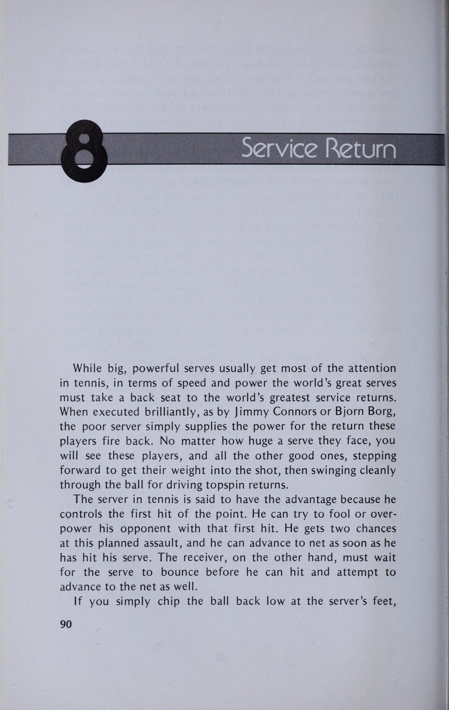
xuyên qua quả bóng để tạo ra cú trả Xoáy lên. Người giao bóng trong quần vợt được cho là có Điểm lợi thế (advantage) hơn vì anh ta kiểm soát được cú đánh đầu tiên của điểm. Anh ta có thể cố gắng đánh lừa hoặc vượt qua-
tăng sức mạnh cho đối thủ bằng đòn đánh đầu tiên đó. Anh ta có hai cơ hội trong cuộc tấn công theo kế hoạch này và anh ta có thể tiến tới lưới ngay khi anh ta
đã thực hiện được cú giao bóng của mình. Mặt khác, người trả giao bóng (receiver) giao bóng phải đợi quả giao bóng nảy lên trước khi có thể đánh và cố gắng tiến lên lưới.
Nếu bạn chỉ đơn giản đẩy bóng xuống thấp dưới chân người giao bóng, tức là đấm bóng lại bằng một chuyển động cắt ngắn, hướng xuống dưới, thì người giao bóng có năng lực sẽ luôn cố gắng giữ được quả giao bóng chống lại bạn. Anh ta sẽ thường xuyên thực hiện một cú đánh đủ tốt khi bạn trả bóng để duy trì quyền kiểm soát từng điểm. Để giành chiến thắng trước người giao bóng, bạn phải tận dụng Điểm lợi thế (advantage) của anh ta. Bạn phải học cách đạt được lợi nhuận của mình. Bạn phải - bạn đoán được rồi - học cách đạt được cú Trả giao bóng của mình bằng Xoáy lên! Bất cứ điều gì ít hơn sẽ không đủ áp lực để một tay vợt giỏi mắc lỗi.
Cú giao bóng trả lại phải sử dụng một cú xoay người nhỏ gọn hơn nhiều so với cú đánh được sử dụng trong một cú đánh trên mặt đất thông thường: mọi thứ đang diễn ra quá nhanh khiến bạn không thể làm gì thêm. Trong các cú đánh mặt đất thông thường, bạn sẽ thấy người chơi giật vợt để tính thời gian. Tuy nhiên, khi Trả giao bóng, hầu hết người chơi bỏ qua cú giật và chỉ cần đưa vợt trở lại theo đường thẳng đến điểm dưới mức mà bóng sẽ được đánh.
Tốc độ chuẩn bị cho việc hoàn trả giao bóng có tầm quan trọng hàng đầu: bạn chuẩn bị sẵn sàng càng nhanh thì bạn càng có nhiều thời gian để chuẩn bị và thực sự thúc đẩy việc hoàn trả. Bạn nên quay sang phía bóng đang bay tới vào thời điểm bóng đi qua lưới. (Bạn có thể kiểm tra xem liệu bạn có phản ứng đúng cách mỗi khi đối thủ thực hiện một cú giao bóng vào lưới hay không. Vợt của bạn có trở lại không?) Bạn có thể tăng tốc độ chuẩn bị của mình theo hai cách.
Đầu tiên là quan sát quả bóng khi đối thủ tung nó lên - chỉ quan sát quả bóng chứ không phải người chơi. Cách thứ hai là xoay người với khuỷu tay ép chặt vào bên hông. Nếu bạn chỉ quan sát quả bóng trước và trong suốt quá trình giao bóng của đối thủ, bạn sẽ thấy đối thủ đã đánh nó nhanh hơn nhiều so với việc bạn tập trung vào toàn bộ đối thủ khi anh ta thực hiện quả giao bóng, bởi vì khi đó bạn phải tìm kiếm quả bóng khi nó lao về phía bạn. Và nếu bạn giữ khuỷu tay khép vào, tựa ngay về phía trước của xương sườn dưới (đặc biệt là ở cú trả thuận tay), thì vợt của bạn sẽ lùi một phần về phía sau ngay khi bạn xoay vai và phần còn lại sẽ lùi về phía sau khi bạn bước vào cú đánh. Bạn sẽ gần như sẵn sàng ngay lập tức và bạn cũng sẽ cắt bỏ mọi vòng dây không cần thiết bằng cánh tay của mình.
Để có được cảm giác quay trở lại, hãy đứng trước gương hoặc cửa sổ phản chiếu. Hãy tưởng tượng bạn đang đối mặt với đối thủ của mình. Nhận
vào tư thế cúi thấp hơn một chút, với hai chân dang rộng hơn so với tư thế bạn nghĩ ở Tư thế sẵn sàng cho một cú đánh tiếp đất.
Bạn phải đặt hai chân của mình xa hơn vài inch khi Trả giao bóng - trên một cú giao bóng đặc biệt cứng hoặc có góc cạnh tốt, bạn phải xoay thẳng khỏi chân mình để đạt được cú giao bóng như vậy. Bằng cách đặt hai chân rộng hơn, bạn sẽ tăng tầm với của mình trên
trục xoay. Giữ vợt của bạn giống như cách bạn thực hiện cú đánh mặt đất, nhưng cố gắng ấn mặt sau của cánh tay trên của bạn vào phía trước
cạnh lồng xương sườn của bạn. Bây giờ, hãy đưa vợt của bạn về phía thuận tay càng nhanh càng tốt. Vợt và cánh tay dưới của bạn nên
xoay tại điểm mà khuỷu tay của bạn đang ấn vào bạn khi bạn xoay vai và hông để giúp lấy lại vợt.
Hãy chú ý trong các bức ảnh trả lại giao bóng cách khuỷu tay vẫn áp sát vào cơ thể. Hãy xem chuyển động này có thể nhanh đến mức nào? Và từ vị trí này, thậm chí không cần Bước chân (footwork) của bạn, bạn có thể đánh một cú đánh lái, tấn công, Xoáy lên hoàn toàn tốt.
Về mặt trái tay, ý tưởng hoàn toàn giống nhau, với Điểm lợi thế (advantage) bổ sung là bây giờ bạn có tay trái để giúp bạn lấy lại vợt. (Tôi ngần ngại khi nói rằng bạn sẽ ''giật'' hoặc 'giật'' vợt về phía sau bằng tay trái, vì những từ nghe có vẻ bạo lực như vậy có thể làm gián đoạn quá trình chuẩn bị suôn sẻ của bạn nếu thực hành quá đầy đủ. Tuy nhiên, trên thực tế, bạn thực hiện giật hoặc giật vợt lại bằng tay trái đó khi Trả giao bóng.) Một lần nữa, giữ khuỷu tay của bạn ở bên cạnh và xem bạn có thể đưa đầu vợt lùi và hạ xuống từ tư thế sẵn sàng (ready position) nhanh như thế nào, xoay vai và hông để giúp quản lý chuyển động.
Tất nhiên, bạn cũng sẽ muốn di chuyển đôi chân của mình để dồn trọng lượng của mình vào cú trả bóng. Khi người giao bóng chuẩn bị giao bóng, bạn sẽ muốn nhón chân lên xuống ở Tư thế sẵn sàng, giống như khi bạn thực hiện các động tác trên mặt đất. Khi người giao bóng Giao bóng / Cú giao bóng, bạn phải cố gắng biến điều đó
chuyển động lắc lư thành các bước nhỏ về phía trước nếu bạn có thể, để trọng lượng của bạn thực sự di chuyển về phía trước để đáp ứng cú giao bóng, thay vì chỉ chờ đợi. Mọi thứ về việc hoàn trả giao bóng, nếu muốn có hiệu quả, phải mang tính cầu tiến, quyết liệt.
thiên nhiên. Bạn sẽ ngạc nhiên về việc trọng lượng của bạn di chuyển về phía trước sẽ giúp ích nhiều như thế nào cho việc hoàn Trả giao bóng. Lúc đầu, bạn có thể sẽ bỏ lỡ rất nhiều nỗ lực của mình: mọi chuyện sẽ xảy ra-
diễn ra quá nhanh. Nhưng một khi khả năng tính toán thời gian của bạn trở nên nhạy bén hơn, bạn sẽ ngạc nhiên và hài lòng về mức độ trả thù quyết liệt của mình.
có thể tạo ra những cú giao bóng nặng, đặc biệt là khi bạn giữ cú đánh của mình nhỏ gọn. càng tốt, hãy sử dụng: chỉ một cú vung vợt nhỏ để đưa vợt lên từ bên dưới quả bóng và xuyên qua nó. Một kết quả của việc tiến về phía trước, bên cạnh việc dồn trọng lượng vào sau cú trả bóng, là bạn sẽ có thể thực hiện cú giao bóng. Đối với lượt Trả giao bóng, bạn muốn cú xoay người chặt nhất, gọn nhất và được kiểm soát hoàn toàn nhất có thể, và khuỷu tay khép vào sẽ giúp bạn thực hiện cú xoay như vậy.
gần mặt đất hơn nếu bạn ở lại. Điều này đặc biệt quan trọng khi đối thủ của bạn thử bất kỳ kiểu nhảy nào, kiểu giao bóng "American Twist'?. (American Twist là
được đặc trưng bởi người giao bóng uốn cong người về phía sau quá mức và khi bóng sẽ cong về phía bạn từ trái sang phải, nó sẽ
nhảy lùi về bên trái của bạn sau khi nảy.) Những kiểu giao bóng này hoàn toàn tuyệt vời để thực hiện, trừ khi bạn lùi lại và
để chúng nảy cao trên thắt lưng của bạn trước khi bạn đánh chúng. Nếu bạn ở lại, bạn sẽ có một thời gian khó khăn hơn nhiều, và bạn
sẽ cho đối thủ của bạn thêm thời gian để lên lưới nếu anh ta muốn. Tuy nhiên, nếu bạn chuyển sang giao bóng - đặc biệt
khi giao bóng yếu, nhảy vọt, giao bóng thứ hai - bạn sẽ có thể thực hiện một cú trả bóng mạnh hơn và khiến đối thủ mất thời gian. Nếu lựa chọn của bạn
thành phần quyết định ở lại sau khi bạn đã vượt qua anh ta một hoặc hai lần, bạn có thể tự mình lấy lưới khi Trả giao bóng, đặt
thêm áp lực cho anh ta. Khi Trả giao bóng, bạn sẽ sử dụng động tác vung vợt về phía sau rất nhỏ gọn để lấy lại vợt nhanh chóng, bạn sẽ di chuyển về phía trước để đón bóng khi nó bay lên khỏi điểm nảy, bạn sẽ
quan sát bóng một cách tỉ mỉ, sau đó bạn sẽ đưa vợt đột ngột xuyên qua quả bóng để đánh nó bay ngược qua lưới
với Xoáy lên nặng. Because so much power is delivered toward you on the serve, you must not let your racket arm wave about
ở hai bên. Đúng hơn, bạn muốn có cảm giác vai, cánh tay và vợt của bạn hướng vào quả bóng như một khối thống nhất, chuyên nghiệp.
tạo ra một khối rắn chắc để tạo sức mạnh cho quả bóng đến nơi bạn muốn. Có một số nơi tốt để bạn quay trở lại. bạn
có thể khiến đối thủ của bạn lái nó, khiến đối thủ của bạn gặp khó khăn, nếu không muốn nói là không thể tiếp cận được nó. Hoặc, bạn có thể đánh bóng ngay vào anh ta:
xuống dưới chân anh ta để anh ta phải thực hiện cú vô-lê lên, hoặc trực tiếp vào anh ta khiến anh ta gặp khó khăn trong việc thực hiện một cú vô-lê đầy đủ. One benefit of
cú trả bóng Xoáy lên, ngoài việc nó là cú đánh xuyên thấu nhất mà bạn có thể thực hiện khi Trả giao bóng, là nó có xu hướng giảm xuống một khi nó
crosses the net. Điều này buộc đối thủ của bạn phải tung cú vô-lê lên thay vì đánh xuống. Bạn phải học cách đánh tốt như nhau ở cả hai bên trong lượt trả bóng của mình, để buộc đối thủ phải đoán xem lượt trả bóng của bạn sẽ đi đến đâu. Khả năng vượt qua đối thủ đang vào lưới của bạn
sẽ giảm gần như bằng 0 nếu anh ấy có thể tiến thêm một bước bằng cách này hay cách khác để chờ đợi câu trả lời nhất quán của bạn. So you must learn to vary the direction of your return, hitting with equal confidence crosscourt, then down the line, then right at your opponent, off both the forehand and backhand. Nếu đối thủ của bạn lùi lại, bạn sẽ không phải đánh thấp qua lưới, nhưng bạn vẫn muốn thay đổi cách trả bóng của mình để khiến anh ta mất Trọng tâm cơ thể.
The real test of your return will come when your opponent places hard serves into the corners of your court, or when he powers the ball deep and right at you. On the wide balls, you must react as quickly as possible to the direction the ball takes, so that you can get to it with enough time for a full topspin swing. If you are slow, or the serve is very fast and well placed, you will only have time for a desperate effort to get your racket in the way of the ball, perhaps with a short punching volley motion to help get the ball back over the net. Tuy nhiên, điều này sẽ không tạo ra một cú trả bóng mạnh mẽ và điều tốt nhất bạn có thể hy vọng là một lỗi từ đối thủ. Chắc chắn, hãy đưa bóng trở lại lưới bằng mọi cách có thể. Nhưng nếu có thể, hãy đánh lui nó bằng một cú xoay hoàn toàn và thích hợp để làm mất đi Điểm lợi thế (advantage) của người giao bóng.
Để cắt những quả bóng rộng, hãy di chuyển vuông góc với đường bay của chúng, thay vì song song với đường cuối sân (baseline). Để chống lại những quả bóng đánh thẳng vào bạn, bạn phải học cách di chuyển nhẹ nhàng và tránh đường ngay lập tức. Bạn không muốn rút lui. Thay vào đó, hãy di chuyển sang một bên khi bạn tiến về phía trước và xoay người để thực hiện cú đánh. Hãy quan sát các tay vợt chuyên nghiệp chơi và bạn sẽ thấy họ di chuyển vào vị trí giao bóng, thực hiện các bước nhảy nhanh, nhỏ trước khi chuẩn bị đánh. Trong bất kỳ cú đánh nào hướng về phía bạn, bạn sẽ có cơ hội tốt nhất để tạo ra một cú đánh mạnh nếu bạn đưa bóng ra phía trước. Nếu bóng đến gần, bạn sẽ gần như không có cơ hội thực hiện cú đánh nào cả. Ngoài ra, nếu bạn đang chơi với một người chơi thuận tay phải, hãy nhớ rằng cú giao bóng của họ sẽ có xu hướng cong về phía bạn từ trái sang phải, như bạn thấy. Nếu Đối thủ giao bóng ở hông trái của bạn, bạn phải bước sang trái và thực hiện cú giao bóng bằng tay thuận. Nếu bạn bước sang phải, cố gắng thực hiện cú giao bóng trái tay, cú giao bóng cong sẽ theo sau bạn.
Bạn nên suy nghĩ về cách bạn muốn trả bóng trước khi đối thủ giao bóng. Quyết định rõ ràng nơi bạn sẽ cố gắng đánh bóng, bất kể nó đến từ phía nào. Điều này sẽ mang lại những phản hồi rõ ràng hơn, rõ ràng hơn cho mỗi lần trả lại. Ngoài ra, thỉnh thoảng bạn có thể thử nghĩ về cách thay đổi lợi nhuận của mình. Đánh liên tục sang một bên trong hai hoặc ba lần trả bóng, để mở rộng phần sân của Đối thủ ở phía đối diện. Sau đó đánh
Khi Trả giao bóng, bạn chỉ được xem bóng khi đối thủ đánh nó chứ không phải toàn bộ đối thủ. Nếu bạn quan sát tất cả đối thủ, cú giao bóng dường như sẽ lao thẳng vào bạn một cách bất ngờ-
ở đâu, và bạn sẽ làm rất tệ khi trả lại nó. ở đó. Hãy thử thay đổi tốc độ quay trở lại của bạn và thậm chí có thể cả độ cao. Nếu đối thủ của bạn là người có tốc độ lao lưới rất nhanh, hãy lùi lại xa hơn bình thường một chút khi trả bóng, và vào giây phút cuối hãy ném một cú Cú lốp bóng (lob) tấn công lên đối thủ. Kiểu trả bóng này có thể khiến đối thủ của bạn hơi cảnh giác trong lần tiếp cận lưới tiếp theo.
Có rất nhiều sự khác biệt về mức độ gần gũi của các tay vợt trên lưới đối với việc hoàn Trả giao bóng. Tôi nhận thấy rằng kết quả tốt nhất của tôi đến khi tôi bắt đầu bằng cách đứng bên trong đường cuối sân của tôi một hoặc hai inch, và tiến vào sân để tấn công quả giao bóng từ đó. Nhiều tay vợt giỏi thậm chí còn đứng xa hơn hoặc lùi xa hơn đáng kể. Rafael Osuna đã thắng Forest Hills trước Frank Froehling vào năm 1963 bằng cách lùi lại phía sau sân từ sáu đến tám thước và tung ra những cú Cú lốp bóng (lob) cao chót vót trước cú giao bóng khổng lồ nhưng không thay đổi của Froehling. Bạn phải thử nghiệm để khám phá nơi bạn có thể bắt đầu lượt trả bóng tốt nhất, nhưng hãy nhớ rằng bạn muốn tiến về phía trước để gặp bóng bất kể bạn bắt đầu ở đâu và rằng bạn càng gặp bóng gần thì bạn càng cho đối thủ ít thời gian để vào lưới.
Cuối cùng, hãy đảm bảo rằng bạn chỉ quan sát bóng khi bạn trả bóng, từ trước khi đối thủ thực hiện cú giao bóng cho đến sau phản ứng của chính bạn. Bỏ qua bất cứ điều gì đối thủ của bạn đang làm. Bạn sẽ biết được đối thủ của bạn đang tiến tới hay lùi lại trong mọi trường hợp, và hơn thế nữa, điều duy nhất khiến bạn lo lắng khi Trả giao bóng là bóng đang chuyển động. Hãy để mắt tới nó.
Bạn phải học cách đánh một cú Trả giao bóng hạng nhất, quyết liệt, nếu không, bạn sẽ hy vọng rằng đối thủ của mình sẽ bỏ giao bóng, thay vì bắt anh ta làm như vậy. Tất cả những gì bạn phải làm để thắng một set tennis là bẻ giao bóng của đối thủ một lần và giữ giao bóng của chính mình trong suốt set. Thực hành cú Trả giao bóng Xoáy lên ít nhất bằng mức độ bạn thực hành cú giao bóng của mình hoặc bất kỳ cú đánh nào khác. Cú trả bóng của bạn bắt đầu nỗ lực của bạn để bẻ giao bóng của đối thủ và thường là toàn bộ trận đấu của anh ta cùng với nó.
Chương này đã gợi ý cách bẻ giao bóng. Chương tiếp theo sẽ cho bạn biết cách giữ nó.
Giao Bóng Xoáy Nảy, Bắt Lưới Vô-Lê & Đập Bóng Trên Không
Part III: Serve, Volley, Overhead & Specialty Weapons
Cơ Học Cú Giao Bóng Topspin Kick Uy Lực
Chapter 9: The Serve & Topspin Kick Mechanics
Với động tác vung tay ra sau đầy đủ, vòng tròn, ném một quả bóng tennis từ phía sau đường biên ngang của bạn, bằng tay, giống như người ném bóng (nhưng với chân đặt trên mặt đất). Ném nó dọc theo chiều dài của sân. Bây giờ hãy nắm lấy một quả bóng khác và thay vì ném nó-
ward, ném nó lên theo một góc trong không khí, để nó bay cao qua lưới khi di chuyển xuống sân. Với lần ném thứ hai này, bạn đã tiến gần đến việc nhân đôi
chuyển động thích hợp để có một cú giao bóng mạnh mẽ, đáng tin cậy. Nếu bạn ném bóng với chuyển động ném hoàn toàn, bạn sẽ thả tay ném xuống qua một bên rồi quay lại
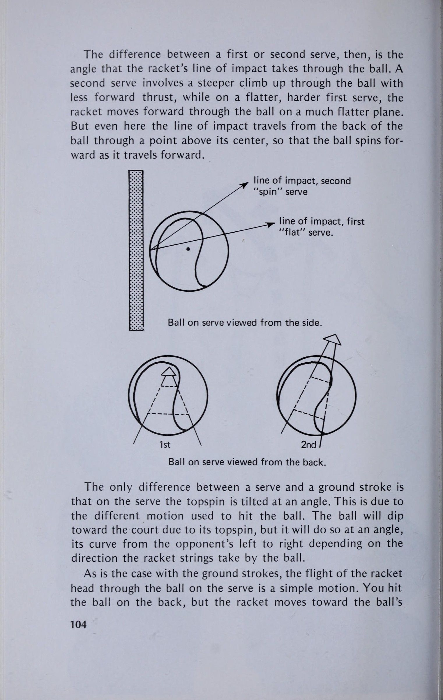
về phía hàng rào phía sau. Tại thời điểm này, bạn uốn cong cánh tay ở khuỷu tay và nghiêng cổ tay để quả bóng cách hai hoặc ba inch.
sau tai phải của bạn. Sau đó, bạn đưa khuỷu tay của mình ra xung quanh và mở rộng nó cũng như cánh tay của bạn khi bạn xoay vai-
ders, Bật cổ tay về phía trước và ném bóng. Nếu bạn thay quả bóng bằng vợt tennis của mình và thực hiện khoảng
hành động tương tự, bạn sẽ có một động tác giao bóng tốt. The serve uses the snap of your wrist and the extension of your elbow to accelerate an already moving racket head up through the ball, which you have carefully placed in its path. How hard your serve is depends on how fast you are able to accelerate your racket head, as well as on the usual elements of timing and how accurately you hit the ball in the middle of the strings. How well you direct your serve depends on how well you control your racket face, and also on how well you impart a variation of topspin to the ball.
Giống như các cú đánh trên mặt đất, bạn phải học cách đánh vượt qua mặt sau của quả bóng nếu bạn muốn có bất kỳ kiểu giao bóng cứng và nhất quán nào. Because of the overhand nature of the serve and the design of the human body, you will not be able to put absolutely vertical topspin on the ball. But you can learn to send the racket up past the ball, the racket striking the back of the ball before traveling off the ball's upper, right-hand ''corner." Getting the ball to spin this way will improve your serve more than any other spin, because you are commanding the ball to come back down toward the court after it clears the net.
Mọi người giao bóng giỏi trong quần vợt ngày nay, dù nam hay nữ, đều đánh về phía khu vực phía trên bên phải của quả bóng khi họ giao bóng (hoặc về phía góc trên bên trái nếu họ thuận tay trái). Những tay vợt này có thể trông như thể họ đang cú đập bóng smash xuống sân đối phương, nhưng đây chỉ là ảo ảnh. Nếu các vận động viên hàng đầu buông vợt ngay khi họ tiếp xúc với bóng, những vợt đó sẽ không bay xuống sân. Họ sẽ bay lên không trung và lao xuống sân về phía hàng rào bên phải. Điều gì khiến người giao bóng trông như đang cú đập bóng smash xuống sân? Anh ta duỗi thẳng hoàn toàn cánh tay của mình ngay sau khi đánh bóng, và tại thời điểm đó, chuyển động ly tâm diễn ra, kéo cánh tay và cơ thể của người giao bóng về phía trước và xuống.
Tuy nhiên, tác động của quả giao bóng là đi qua bóng chứ không hướng xuống sân. Giống như các cú đánh trên mặt đất, góc vợt thực hiện khi đánh bóng lên và về phía trước qua quả bóng có thể thay đổi từ nông đến dốc, nhưng trong mọi cú giao bóng tốt, vợt sẽ leo lên. Ngay cả cú giao bóng kiểu "đại bác" cũng không bằng phẳng - nó hiếm khi đi vào sân đến mức vô dụng. Thay vào đó, nó có đủ độ xoáy về phía trước để tạo thành đường cong Xoáy lên đặc trưng
xuống sân giao bóng. Một cú giao bóng thứ hai tốt có độ xoáy cao hơn nhiều vì nó được đánh với ít chuyển động về phía trước qua bóng hơn, và bóng bị bóng chạm vào nhiều hơn - và điều này cho phép khoảng trống và tỷ lệ mắc lỗi qua lưới lớn hơn nhiều.
Nhưng nó cũng được đánh theo nguyên tắc tương tự, với Mặt vợt lướt qua phía sau quả bóng và hướng về phía
khu vực phía trên bên phải. Trọng tâm của cú giao bóng là hành động của cổ tay này, giúp đầu vợt bật ra sau lưng, xuyên qua quả bóng.
Mặt vợt quay về phía trước khi vung lên để bóng được đẩy xuống sân. Sự khác biệt giữa lần giao bóng đầu tiên và lần giao bóng thứ hai là
góc mà đường tiếp xúc của vợt xuyên qua bóng. Cú giao bóng thứ hai bao gồm một cú leo dốc hơn qua quả bóng với
lực đẩy về phía trước ít hơn, trong khi ở cú giao bóng đầu tiên phẳng hơn, khó hơn, vợt di chuyển về phía trước qua quả bóng trên một mặt phẳng phẳng hơn nhiều.
Nhưng ngay cả ở đây, đường va chạm vẫn di chuyển từ phía sau quả bóng qua một điểm phía trên tâm của nó, sao cho quả bóng quay tròn-
chắn khi nó di chuyển về phía trước. Tôi đường va chạm, đường giao bóng 'xoay'' thứ hai, đường giao Cú đánh phẳng đầu tiên. Bóng đang giao bóng nhìn từ bên cạnh.
~\ 'é là Quả giao bóng thứ 2 nhìn từ phía sau. Sự khác biệt duy nhất giữa một cú giao bóng và một cú đánh chạm đất là ở chỗ trên cú giao bóng Xoáy lên nghiêng một góc. Điều này là do
chuyển động khác nhau được sử dụng để đánh bóng. Quả bóng sẽ chìm về phía sân do Xoáy lên của nó, nhưng nó sẽ nghiêng theo một góc,
đường cong của nó từ trái sang phải của đối phương tùy thuộc vào hướng của dây vợt theo bóng. Giống như trường hợp của các cú đánh trên mặt đất, đường bay của vợt
đánh đầu xuyên qua quả giao bóng là một động tác đơn giản. Bạn đánh bóng từ phía sau nhưng vợt lại di chuyển về phía bóng
bóng nhảy cao với ít đường cong. bước nhảy thấp hơn với nhiều đường cong nếu đánh có nhiều vòng xoáy. đường Mặt vợt vượt qua bóng trong khi đánh.
Quả bóng giao bóng nhìn từ phía sau. góc trên bên phải, cũng như phía trước, thông qua liên hệ. Mọi người thường nói về việc "cắt xung quanh quả bóng" hoặc "vượt trên không (overhead)". Tuy nhiên, cả hai mô tả này đều không chính xác bởi vì nếu bạn thực sự làm theo những gì lời nói nói, bạn sẽ đánh bóng về phía hàng rào bên cạnh và đi thẳng xuống phía sân của bạn. Những người sử dụng những mô tả này đang nhầm lẫn cú đánh thực sự với chuyển động mà cánh tay và vợt phải thực hiện ngay sau cú đánh, khi chúng đạt đến điểm cuối của cú vung lên và bắt đầu lùi xuống về phía bên trái của bạn.
Ngược lại với cú giao bóng đúng, mà nhiều người nhầm lẫn thực hiện vì vẻ ngoài "chết tiệt" của cú giao bóng, là chuyển động đánh xuống phía sau bóng bằng cánh tay và cổ tay bị khóa kéo Mặt vợt xuống qua bóng, có thể bằng một tay cầm "chảo rán" dùng để giữ vợt. Thật không may, chuyển động này ban đầu sẽ thành công, miễn là bạn không đánh bóng quá mạnh. Đó là một cú giao bóng đơn giản, ít chuyển động và Mặt vợt hướng về phía sân trong suốt hành động đánh. Trọng lực sẽ kéo quả bóng được Cú đánh nhẹ (dink) nhàng xuống sân cho bạn. Tuy nhiên, khi bạn có được Sự Sự tự tin và cố gắng đánh mạnh hơn, bạn sẽ buộc phải đánh bóng ngày càng gần lưới hơn, vì xoáy xuống trên quả bóng khiến nó cố gắng bay lên khỏi sân. Cuối cùng, bạn sẽ thấy mình liên tục thực hiện cú giao bóng vào lưới hoặc giao bóng dài. Rất đơn giản, bạn sẽ đạt tới giới hạn của thứ "thứ hai" này.
tốt nhất'? cách Giao bóng / Cú giao bóng có thể làm được. Một số ít quả giao bóng có thể đi vào lưới, chỉ cần dọn lưới và đánh trúng đường giao bóng, sẽ rất tuyệt, nhưng đối thủ của bạn có thể cười toe toét và chịu đựng số ít đó vì
trong phần lớn các cú giao bóng cứng mà bạn sẽ đánh trượt. Mặt khác, nếu bạn có thể học cách đánh bóng, giới hạn duy nhất về mức độ khó mà bạn có thể học cách giao bóng sẽ nằm ở
sức mạnh, kích thước và khả năng đánh đầu vợt xuyên qua quả bóng của bạn. Cho dù bạn có đánh mạnh đến đâu, hãy quay về phía trước
trên quả bóng sẽ hạ gục kịp thời. Bạn có thể nhận thấy rằng ở đây không đề cập đến cú giao bóng American Twist. Cú giao bóng xoắn được thực hiện khi
người giao bóng cong lưng đến mức quá mức và đánh vào quả bóng theo cách khiến quả bóng uốn cong trên lưới, nhưng sau đó nảy lên hoặc nhảy theo hướng ngược lại từ đó
Khi bắt đầu giao bóng, cả hai tay $4 đều hoạt động đồng bộ. đường cong PAS. Cú giao bóng này có thể khiến đối thủ giật mình, ít nhất là lúc đầu, nhưng rất khó thực hiện, chuyển động cần thiết để thực hiện cú giao bóng này khiến nó bị mất đi, nó đòi hỏi rất nhiều nỗ lực và rất dễ dàng để đánh trả nếu đối thủ chỉ quan sát kỹ và di chuyển vào. đề nghị bạn cố gắng giành quyền kiểm soát cú giao bóng được thảo luận ở đây và để người khác lãng phí thời gian và sức lực của họ.
Hãy nói cụ thể hơn về cơ chế phân phát. Đứng ở đường cuối sân (baseline), cách điểm giữa từ 2 đến 3 feet,
mà không chạm vào bất kỳ phần nào của đường cuối sân (baseline) hoặc sân. (Nếu bạn chạm vào nó, bạn đang phạm lỗi bằng chân - tức là gian lận. Tuy nhiên, bạn
có thể vung một chân hoặc cả hai chân ra ngoài sân miễn là bạn không chạm xuống trước khi đánh bóng.) Đặt chân như thể bạn sắp ném thứ gì đó. Hai bàn chân của bạn phải cách nhau một cách thoải mái, các đầu ngón chân
chạm vào một đường tưởng tượng chạy về phía bên trái của phần sân giao bóng của đối thủ. Cả hai chân đều không hướng về hướng đó Tuy nhiên,
chúng chỉ chạm vào một đường chỉ vào đó. Nếu có ích, hãy tưởng tượng một mũi tên hướng về phía sân. Đứng trên mũi tên, chân sau thẳng hàng với lông vũ, chân trước thẳng hàng với mũi tên.
Ce Bạn cần sử dụng tất cả chiều dài vợt có sẵn bất cứ khi nào bạn giao bóng, để tạo đòn bẩy càng dài càng tốt. Bạn không muốn (hoặc cần) một tay cầm búa ở trên tay cầm vợt. Bạn muốn quất vợt qua quả bóng bằng cổ tay chứ không phải cơ bắp. Khi giao bóng, hãy thử cầm vợt bằng mông của tay cầm ít nhất bằng mép dưới của lòng bàn tay. Và hãy giữ lỏng tay - tương tự như cách bạn bắt tay bà mình.
Tôi Khía cạnh quan trọng nhất của cú giao bóng j cần hiểu là bạn không cố gắng đánh xuống sân mà thay vào đó đang cố gắng đưa Mặt vợt của bạn lên phía sau quả bóng, như
cũng như thông qua nó. Thao tác này sẽ đưa bóng quay về phía trước để nó có thể bay lên trên lưới và sau đó cong xuống "9 sân giao bóng. Mọi người giao bóng hàng đầu trong
ig thế giới gây ấn tượng với P chuyển động của quả bóng. Sử dụng ít nhất một kiểu cầm thuận tay, kiểu bắt tay, hoặc xa hơn nữa, về phía trái tay. Tôi thường giao bóng bằng cách cầm vợt thuận tay,
nhưng tôi Tôi cao (6'3''), và bạn càng đánh xa về phía trái tay thì bạn sẽ càng nhận được nhiều xoáy hơn. Không cầm vợt bằng bất kỳ kiểu cầm "chảo rán" nào.
Cầm vợt thật nhẹ nhàng, sao cho cổ tay lỏng và linh hoạt, có thể búng vợt vào bóng. Một cú giao bóng cứng không
đến từ các cơ bắp căng thẳng, nhưng từ những cơ lỏng lẻo, uyển chuyển. (Thử siết chặt tất cả các cơ ở cánh tay rồi ném
một quả bóng. Nó sẽ chẳng đi đến đâu cả.) Để thả lỏng cánh tay trước khi giao bóng, bạn có thể thử thư giãn mọi cơ ở đó, rồi lắc-
ing nó một chút. Bạn phải /oose khi giao bóng. Bắt đầu với vợt thoải mái ở phía trước mặt bạn, để bạn có thể nhìn — hoặc trừng mắt đầy ác ý, nếu bạn muốn — qua mặt trên của vợt về phía đối thủ của bạn. Tay trái của bạn, nắm giữ ít nhất một
quả bóng tennis ở đầu ngón tay của bạn — nếu bạn sử dụng hai quả, hãy nhớ lăn quả thứ hai về phía đầu ngón tay trước khi sử dụng — sẽ đỡ vợt ở cổ vợt.
Bây giờ, chỉ cần thả cả hai tay xuống, để trọng lực đưa chúng xuống. Sau khi di chuyển, hãy mang vợt trở lại theo hình vòng cung mượt mà về phía sau bạn, sử dụng năng lượng cơ bắp vừa đủ để giữ vợt.
toàn bộ chuyển động chuyển động. Hãy để chiều dài cánh tay của bạn, chứ không phải cơ bắp, xác định hình dạng quả giao bóng của bạn: cơ bắp mỏi và thay đổi khi tập luyện, nhưng chiều dài cánh tay của bạn sẽ không bao giờ thay đổi. Vì vậy hãy sử dụng một
chuyển động quét, với cánh tay mở rộng, để đưa vợt đi qua phần đầu tiên của cú vung. Vì bạn sẽ muốn
mặt thuận tay của vợt hướng thẳng về phía lưng bạn, xoay lòng bàn tay của bạn và do đó xoay Mặt vợt về phía bạn
ngay khi bạn lấy lại vợt. (Nhìn vào các bức ảnh giao bóng sẽ thấy rõ điều này.) Khi đầu vợt của bạn hướng về phía sau
hàng rào — khi cánh tay trên của bạn gần như song song với mặt đất — uốn cong khuỷu tay của bạn giống như khi bạn ném bóng. các
đầu vợt sẽ tiếp tục hình cung của nó, nhưng bây giờ bán kính của nó là từ khuỷu tay của bạn chứ không phải từ vai của bạn. Khi vợt vòng quanh phía sau bạn, hãy nâng cổ tay của bạn lên. Điều này sẽ làm rơi vợt
hướng xuống phía sau lưng bạn, với mặt thuận tay của vợt bây giờ phẳng với lưng bạn. Khi giao bóng tốt, đầu vợt hạ xuống thắt lưng hoặc thấp hơn thắt lưng của người giao bóng trước khi lao ngược trở lại vào quả bóng. Nhưng hãy đảm bảo rằng tay cầm vợt của bạn không đưa thẳng ra sau đầu, nếu không bạn sẽ khó có thể thoát ra khỏi cú đánh. Bàn tay phải cách đầu bạn vài inch, phía trên vai của bạn.
Từ thời điểm này, với vợt ở xa phía sau lưng, bạn thực hiện cú đánh, giống như thể bạn định ném vợt lên không trung. Vai của bạn hướng về phía trước và nâng lên, cánh tay và khuỷu tay của bạn vung về phía trước và hướng lên trên cùng một lúc, sau đó cổ tay giật đầu vợt lên qua quả bóng. Sau đó bạn làm theo. Điều này sẽ tự giải quyết được khá nhiều nếu bạn thư giãn, với cánh tay và vợt đi dọc cơ thể về phía bên trái của bạn.
Cú giao bóng giống như một trò chơi bẻ roi, trong đó các bộ phận bên trong di chuyển khá chậm, nhưng người ở đầu roi - hoặc trong trường hợp này là đầu vợt - kết quả là phải chịu gia tốc lớn. Khi giao bóng, vai xoay của bạn kết hợp với cánh tay duỗi của bạn và phối hợp với nhau, chúng kết hợp với cổ tay Snapping của bạn để quất vợt với tốc độ lớn xuyên qua quả bóng.
Lúc đầu, khi mọi người thử cách cầm giao bóng thích hợp, thay vì cách cầm chảo rán, họ cảm thấy chắc chắn rằng họ sẽ đánh bóng bằng mép trước của vợt thay vì dây. Và họ sẽ// đánh bóng bằng mép vợt, hoặc cắt bóng rộng vào hàng rào bên trái, nếu họ không xoay tay và Mặt vợt về phía trước khi họ hất Mặt vợt lên về phía quả bóng.
Chuyển động xoay, búng về phía trước này là một phần của gia tốc của đầu vợt cho phép thực hiện một cú giao bóng mạnh, cũng như một phần của chuyển động cho phép bạn đánh vào mặt sau của quả bóng khi bạn đánh về phía trước qua nó. Bạn cầm vợt theo cách này và xoay cổ tay để có được cú Bật cổ tay đầy đủ nhất có thể. Chuyển động quan trọng này không thể thực hiện được với tay cầm chảo rán, và do đó những người sử dụng tay cầm đó sẽ không thể Giao bóng / Cú giao bóng mạnh mẽ và hiệu quả như mong muốn.
Hình ảnh đẹp cho một cú giao bóng chính xác là cắm một chiếc rìu cầm tay vào một cái cây cao đến mức bạn có thể với tới trên đầu, ngoại trừ vào thời điểm cuối cùng, bạn quyết định đập vào cây bằng mặt phẳng của rìu, xoay lưỡi rìu sang phải thay vì cắm nó vào cây. Nếu bạn vẫn chưa hiểu rõ về chuyển động chụp nhanh, hãy thử cách này:
giữ vợt phía trên bạn, với cách cầm vợt ở giữa thuận tay và trái tay. Nhưng hãy mở các ngón tay của bạn ra cho đến khi vợt chỉ được giữ ở hình chữ "V" giữa ngón cái và ngón trỏ, chỉ dùng ngón út để giữ vợt không rơi xuống đất.
Bây giờ, dùng ngón út kéo xuống và đẩy lên bằng chữ V của bàn tay. Bạn sẽ thấy đầu vợt bật lên như
cánh tay dài của một đòn bẩy. Thực hiện chuyển động này một lần hoặc Chuyển động giao bóng phải mượt mà và liên tục — không có
"quá giang" trong cú vung vợt. hai, sau đó xoay cổ tay về phía trước khi bạn nâng đầu vợt lên. Bây giờ bạn đang thực hiện động tác Bật cổ tay thích hợp cho cú giao bóng. Tất nhiên, khi chơi bạn sẽ nắm chặt vợt.
Đồng thời khi bạn đang tăng tốc đầu vợt trong cú vung của nó bằng cánh tay phải, bạn phải định vị quả bóng để đánh vào không trung phía trên bạn. Tay trái của bạn cưỡi
cùng với vợt trong lần thả cánh tay xuống ban đầu. Sau đó, khi vợt của bạn đi theo toàn bộ vòng cung phía sau bạn, tay trái của bạn cầm bóng sẽ đưa bóng lên không trung. Cố gắng đừng nghĩ đến việc "ném" quả bóng lên, bất chấp chuyển động này
được gọi là "'ném.'' Thay vào đó, hãy nghĩ đến việc "'đưa" quả bóng lên đúng nơi bạn muốn, giữ cho cánh tay của bạn mở rộng sau khi thực hiện cú ném.
bắt đầu ném, sao cho nó hoạt động giống như một thang máy mang quả bóng lên không trung. Hãy cẩn thận để không lật tay. Chỉ cần giữ mọi thứ giống nhau trong suốt quá trình ném của bạn, không có khuỷu tay
uốn cong hoặc lật cổ tay, sau đó chỉ cần mở ngón tay khi cánh tay của bạn đã đưa lên cao nhất có thể với tới. Bạn muốn đặt mình dưới quả bóng khi ném, như thể quả bóng đang
kéo bạn lên không trung. Ngoài ra, bạn phải nhận ra rằng cần phải ném một cú ném ngắn như thế nào. Hãy giơ vợt lên cao nhất có thể với tới, sau đó giơ vợt lên
tay với quả bóng. Sự khác biệt về chiều cao giữa quả bóng và tâm Mặt vợt của bạn gần bằng chiều cao của bạn.
quăng nên đi du lịch. Hãy tưởng tượng một chiếc kệ nổi ở điểm bạn chạm tới với tâm vợt của bạn ở trạng thái mở rộng hoàn toàn. Bây giờ hãy thử đưa bóng lên
trên kệ đó mà không nảy lên. Việc Tung bóng khi giao bóng là cơ hội duy nhất trong quần vợt để bạn "phát bóng" cho chính mình và bạn muốn thực hiện tốt. Thực hành
tung cho đến khi bạn có thể đưa bóng vào đúng vị trí một cách nhất quán — bạn có thể thực hiện việc này ở bất kỳ đâu — và kiểm tra quá trình luyện tập của mình bằng cách để bóng rơi rõ ràng xuống đất. Nó sẽ nảy lên chỉ để
bên phải, và phía trước một chút về phía trước bên trái của bạn. Đừng ném bóng quá xa về phía trước. Bạn chỉ có thể bắt đầu làm điều đó sau khi đã hoàn toàn nắm vững chuyển động thích hợp trên
giao bóng. Hãy tưởng tượng rằng bạn có một chiếc búa cán dài và bạn phải đóng một chiếc đinh vào một thanh xà trên cao ngay trong phạm vi của bạn.
đạt. Bạn sẽ định vị mình sao cho chiếc đinh ở ngay bên phải, phía trên bạn và hơi về phía trước cơ thể một hoặc hai inch. Để giao bóng đúng cách, bạn muốn đánh bóng vào đúng vị trí này.
Đã nói tất cả những điều trên về cú ném, hãy để tôi nói thêm rằng nếu một học sinh gặp khó khăn trong việc có được cảm giác thích hợp khi đánh bóng, tôi thường sẽ yêu cầu anh ta cố tình ném quả bóng đến một điểm ngay phía trên đầu họ, để nó sẽ dội xuống đầu họ nếu họ để nó rơi. Đây sẽ là khoảng cách vài inch từ nơi quả bóng sẽ được ném. Nhưng bằng cách đặt nó ngay phía trên đầu, học sinh gần như bị buộc phải đánh vào nó, nếu anh ta định đánh nó.
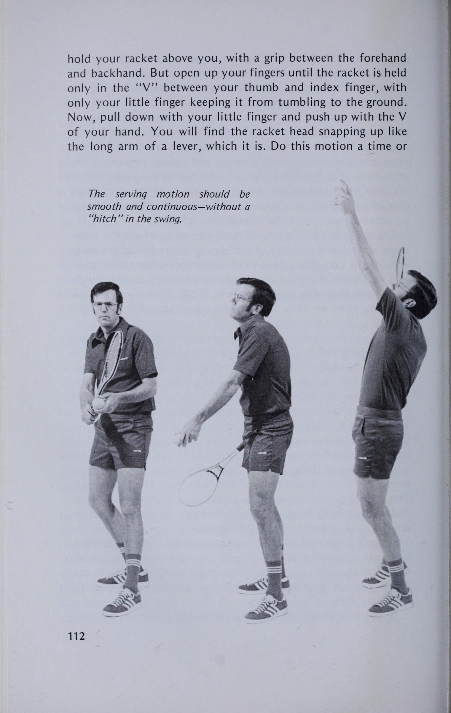
Khi bắt đầu giao bóng, hãy giữ hai tay của bạn đồng loạt khi chúng thả xuống và di chuyển lên trở lại. Sau đó, khi cánh tay trái của bạn tiếp tục giơ lên để ném, khuỷu tay phải của bạn bắt đầu uốn cong, thả vợt xuống phía sau lưng. Một cú giao bóng tốt cũng đòi hỏi phải chuyển trọng lượng từ chân sau sang chân trước trong khi thực hiện cú đánh. Để hiểu động tác chuyển bóng này, hãy ném một quả bóng xuống sân trong khi giữ nguyên chân nhưng dồn trọng lượng cơ thể của bạn vào sau cú ném. Sau đó lặp lại những gì bạn đã làm trong khi cầm vợt. Trọng lượng của bạn nên bắt đầu ở chân sau, hoặc ít nhất là chuyển trở lại chân sau trước khi Tung bóng rồi tiến về phía trước.
Một trong những cách tốt nhất để hình dung việc chuyển trọng lượng thích hợp khi giao bóng là đảo ngược vợt của bạn, giữ !t ở cổ họng và giả vờ rằng đó là một chiếc lao. Bây giờ, hãy ''ném'' cây lao này xuống sân, như thể bạn muốn vượt qua hàng rào ở xa. Lưu ý cách bạn ngả vai và cơ thể về phía sau trước khi ném, sau đó dùng cánh tay đưa chúng về phía trước khi ném. Bạn muốn thực hiện chính xác điều tương tự khi giao bóng.
Bây giờ hãy thử toàn bộ chuyển động giao bóng ở chế độ chuyển động chậm trước gương hoặc cửa sổ phản chiếu để bạn có thể thấy mình đang làm gì. Sau đó vung nhanh hơn, Bật cổ tay và vung vợt trong không trung ở đầu cú xoay. Sau đó, nếu bạn có bất kỳ câu hỏi nào hoặc cho rằng chuyển động giao bóng có vẻ không ổn, hãy kiểm tra lại cuốn sách và xem liệu bạn có thể tìm thấy đề xuất hoặc mô tả nào hữu ích hay không. Có rất nhiều từ ở đây, nhưng chúng cần thiết nếu bạn muốn hiểu chính xác những gì bạn đang cố gắng làm. Chỉ cần nhớ rằng bạn chỉ đơn giản là cố gắng ném đầu vợt xuyên qua quả bóng.
Nhiều người áp dụng đủ loại động tác chân không cần thiết và không hiệu quả vào cú giao bóng của họ. Bạn có thể bước về phía trước bằng chân sau sau khi đánh. Và hầu hết người giao bóng đều đưa chân sau lên về phía chân trước khi họ giơ chân lên.
Quả bóng MMS có vợt đánh vào. Điều bạn muốn tránh là di chuyển bàn chân trái của mình - bạn muốn được neo chắc chắn để có thể xoay cơ thể của mình vào cú đánh qua chân đó. bạn không
muốn bước về phía trước hoặc lùi xa sang một bên. Bước như vậy sẽ khiến hông của bạn quay về phía trước quá sớm; họ sẽ giúp bạn biến
vào cú đánh ngay trước khi tiếp xúc. Sai lầm này cũng khiến bạn rơi vào tình thế khó xử khi ném bất cứ thứ gì. Trong khi chơi, bạn
rất có thể bước về phía trước bằng chân sau sau cú đánh, nhưng bạn chắc chắn sẽ có thể thực hiện một cú giao bóng vững chắc trong khi
Đứng yên hoàn toàn, chỉ chuyển trọng lượng của bạn từ chân sau sang chân trước. Nếu bạn không thể Giao bóng / Cú giao bóng trong khi đứng yên,
bạn gần như chắc chắn đang ném bóng quá xa về phía trước. Bạn phải bước đi để bắt kịp nó. Để tiếp tục quá trình học tập trên quả giao bóng, hãy đi tới
trong toàn bộ động tác giao bóng, bao gồm cả động tác Tung bóng, nhưng vẫn giữ bóng trong tay. Lúc đầu thực hiện chuyển động chậm, sau đó nhanh hơn, cảm nhận xem nó sẽ như thế nào nếu bạn thực sự
cố gắng ném vợt hướng lên nơi bóng sẽ bay tới. Sau đó chuyển sự chú ý của bạn sang cú ném và thực hành nó. Sử dụng cánh tay của bạn như một đòn bẩy để đưa bóng lên đúng vị trí bạn muốn,
thả người xuống dưới quả bóng khi bạn đưa nó lên. Khi bạn có thể đưa bóng lên chính xác một cách nhất quán thì đã đến lúc
để kết hợp hai chuyển động và bắt đầu đánh bóng. Sẽ tốt nhất nếu chúng ta đánh lén ngay từ đầu. Thay vì thực hiện một cú vung vợt hoàn toàn, hãy đặt vợt xuống sau lưng,
khuỷu tay cong và cổ tay của bạn hếch lên và sẵn sàng bắt bóng. Đặt quả bóng vào đúng vị trí và cố gắng thật nhẹ nhàng.
để đánh vào nó, vuốt ve lưng nó, tiếp xúc với quả bóng khi nó đứng yên, ở đầu cú ném của bạn. Gửi vợt lên
xuyên qua quả bóng đến một điểm ngay phía trên và xa hơn nó. Lúc này, việc bạn không đánh bóng vào sân cũng không thành vấn đề. Điều quan trọng là bạn có được vòng quay về phía trước đó. Ở đó
là những cách khác, dễ dàng hơn để đưa bóng vào sân ở giai đoạn đầu này, nhưng những cách này sẽ hạn chế mức độ giao bóng cuối cùng của bạn. Vì vậy
tiếp tục cố gắng đánh vào phía sau quả bóng. Để học, bạn cần một xô bóng, cơ hội luyện tập nhiều lần
một tuần, và sự kiên nhẫn. Nó sẽ đến. Một cách khác để lén lút thực hiện cú giao bóng là bỏ qua hình thức giao bóng thích hợp trong giây lát. Giữ vợt ở tư thế cầm "chảo rán" thường bị cấm, đặt quả bóng lên trước mặt bạn ở độ cao ngang tầm lông mày và chọc vợt thẳng vào mặt sau của quả bóng, chỉ cần đẩy vợt thẳng lên trên quả bóng, quét bóng trên đường đi. Bóng sẽ rê bóng xuống trước mặt bạn, nhưng nó sẽ có độ xoáy vừa phải.
Bây giờ, hãy cầm bóng đúng cách, đưa bóng lên cao hơn đầu của bạn và dùng cổ tay một chút để nỗ lực. Đừng cố gắng giao bóng - chỉ cần sử dụng cổ tay của bạn để vung vợt hướng lên phía sau quả bóng. Một lần nữa, quả bóng sẽ rơi về phía lưới của bạn. Nhưng bạn sẽ có thể làm cho nó cuộn về phía trước. Cuối cùng, thả vợt xuống sau lưng và thử vung vợt đầy đủ hơn. Nhưng hãy giữ nguyên cảm giác đánh bóng như bạn đã có trong những lần đánh trước đó. Người ta nói rằng động tác Giao bóng / Cú giao bóng tương tự như động tác ném bóng hoặc động tác chào của Đức Quốc xã. Khi bạn kết hợp hai chuyển động này với một động tác ném bằng cổ tay, bạn sẽ có cú giao bóng: duỗi cánh tay và sau đó là Bật cổ tay, kết hợp với động tác xoay vai của động tác ném.
Bây giờ, sau khi thực hiện tất cả các chuyển động khác nhau này, hãy kết hợp toàn bộ hành động lại với nhau, sử dụng cú xoay hoàn toàn trong khi vẫn cố gắng đánh bóng lên. Với sự luyện tập, toàn bộ chuyển động sẽ trơn tru, chắc chắn và tự động. Lý do nhấn mạnh vào độ xoáy là một thực tế rất rõ ràng mà nhiều người chơi cố gắng bỏ qua khi giao bóng: lưới đang cản đường bạn. Bạn phải đánh qua lưới đó để đưa bóng vào. Xoay về phía trước giúp bạn thực hiện được điều này.
Để ghi nhớ sự hiện diện của lưới trong tâm trí bạn, hãy thử giao bóng một vài cú trong khi đặt đầu gối phải của bạn xuống đất. Đánh nhẹ nhàng, nhớ quét vợt lên phía sau quả bóng. Ở dưới đó, bạn sẽ thấy mình phải đánh như thế nào để đưa bóng qua lưới. Sau đó đứng lên và nhận ra rằng tình hình không thay đổi nhiều: bạn vẫn phải đánh bóng, phải thực hiện cú xoay bóng về phía trước, để đưa bóng qua lưới và lùi xuống phần sân đối phương một cách nhất quán ở bất kỳ tốc độ nào. Bạn sẽ nhận được một số trợ giúp từ trọng lực khi giao bóng, nhưng thật tuyệt khi có thể đưa bóng vào ô giao bóng thay vì phải yêu cầu trọng lực làm điều đó cho bạn.
Nguồn lực của cú giao bóng là hành động mà cổ tay của bạn thực hiện khi nó giật vợt lên từ phía sau lưng bạn, đồng thời xoay dây về phía trước để hướng cú giao bóng xuống
sân đấu. Nút bấm cổ tay này cung cấp khả năng tăng tốc cần thiết để mang lại cho bạn tác động bật lên mà bạn muốn. Một khi bạn đã hiểu nó, một cách tốt để phát triển phần trọng tâm này của cú giao bóng là
là đứng với cánh tay giơ thẳng lên trên đầu, vợt nghiêng về phía mặt đất từ cổ tay của bạn.
Đưa cổ tay của bạn hướng lên trên đủ nhanh để làm cho vợt lướt trong không khí khi nó bay lên về phía điểm cao nhất trong cú vung của bạn. (Nhiều người chơi làm cho vợt của họ rung lên khi họ đến
xuống, nhưng ở đây tốc độ là vô ích. Vợt của bạn phải tăng tốc trên đường đi lên.) Hãy thử đánh một số quả bóng chỉ bằng cổ tay của bạn, giữ cho vợt của bạn luôn chắc chắn.
cánh tay giơ lên trên đầu trong suốt cú swing. Bật bóng mạnh nhất có thể khỏi dây. Lúc đầu bạn sản xuất yếu,
giao bóng yếu theo cách này, nhưng hãy tiếp tục. Khi bạn có được thời gian và khả năng kiểm soát tốt hơn, bạn chắc chắn sẽ nâng cấp toàn bộ cú giao bóng của mình. Đừng Tuy nhiên,
hãy thử bài tập này với hơn 10 quả bóng cùng một lúc. Cổ tay của bạn có thể rơi ra. Đôi khi, bạn có thể cảm thấy mình đang Giao bóng / Cú giao bóng một cách hoàn hảo,
và thực hiện cú xoáy phải vào bóng. Nhưng các cú giao bóng của bạn vẫn đi xa ra khỏi sân hoặc vào lưới. Vấn đề là nếu bạn
đang giao bóng chính xác, có thể nằm ở độ nghiêng của vợt khi tiếp xúc với bóng. Vợt phải di chuyển lên trên khi đánh bóng, nhưng đồng thời cần nghiêng nhẹ-
ly về phía trước. Độ nghiêng này hoạt động khi giao bóng giống như Mặt vợt mở hoặc đóng của bạn thực hiện trên các cú đánh trên mặt đất: nó có thể thay đổi
chiều cao cú giao bóng của bạn qua lưới. Nếu cú giao bóng của bạn kéo dài mặc dù nó có độ xoáy, vợt của bạn sẽ bị nghiêng về phía sau quá xa khi tiếp xúc. Nếu
cú giao bóng đi vào lưới, độ nghiêng của bạn quá xa về phía trước. Tuy nhiên, hãy đảm bảo rằng bạn có đủ độ xoáy về phía trước của quả bóng. Thêm Vòng quay
mang lại cho bạn quỹ đạo lên xuống sắc nét hơn vào sân. Một phần rất quan trọng của cú giao bóng là để mắt tới
bóng xuyên suốt cú đánh. Bạn sẽ không thực sự nhìn thấy vợt của mình đánh bóng – điều đó xảy ra quá nhanh. Nhưng bạn phải tiếp tục nhìn vào quả bóng cho đến khi đánh bóng, không chỉ để
biết nó ở đâu nhưng cũng phải ngẩng cao đầu khi giao bóng. Có một xu hướng rất phổ biến, đặc biệt là ở những cú giao bóng cứng, là
cúi đầu xuống để "'có thêm sức mạnh." Nhưng điều này thường làm hỏng cú giao bóng - vì vậy hãy ngẩng cao đầu và để mắt đến quả bóng. Giao bóng tương tự như ném bóng trong bóng chày, ở chỗ bạn muốn đưa bóng đến mục tiêu nhưng không bao giờ đưa cho đối phương bất cứ thứ gì mà họ có thể đánh tốt. Giao bóng không đúng chỗ có thể tệ như ném bóng mạnh vào đĩa. Tất cả những thảo luận ở trên về độ xoáy khi giao bóng không được đưa ra vì nó sẽ khiến đối thủ của bạn khó chịu, mặc dù trên thực tế, đường cong và độ nhảy của quả bóng có thể khiến anh ta khó chịu. Đúng hơn, xoáy sẽ tăng thêm khả năng kiểm soát và sức mạnh cho cú giao bóng của bạn, cả hai điều này chắc chắn sẽ khiến đối thủ của bạn khó chịu.
Bạn phải thực hành cú giao bóng cho đến khi bạn kiểm soát được chuyển động, và sau đó bạn phải thực hành nó thêm một chút nữa, cho đến khi bạn hoàn toàn kiểm soát được vị trí bạn đặt nó trên phần sân của đối thủ. Giống như cổ tay của bạn cho phép bạn kiểm soát theo chiều dọc trên các cú đánh trên mặt đất, bằng cách mở và đóng Mặt vợt, cổ tay của bạn (bằng cách xoay Mặt vợt) cũng cho phép bạn kiểm soát từ trái sang phải khi giao bóng. Để giao bóng tới một góc sân đối phương, bạn không thay đổi thế đứng của mình cũng như không đặt cú ném ở một vị trí khác. Bạn chỉ cần xoay cổ tay của mình theo cách này hay cách khác một chút, khi đầu vợt hướng vào quả bóng. Khi luyện tập, điều này sẽ trở nên tự động, để bạn có thể nghĩ bạn muốn bóng đi đâu và cơ thể bạn sẽ tự động hướng nó đến đó.
Khi bạn thực hành cú giao bóng của mình, hãy đặt mục tiêu trên sân. Mục tiêu chính của bạn ở phần sân thuận tay nằm ở góc trái tay. Bạn phải có khả năng giao bóng liên tục theo Cú trái tay (backhand) (backhand) tay của đối thủ. Có thể giao bóng ở đó, thay vì thuận tay, sẽ cải thiện khả năng giao bóng của bạn ít nhất 50%. Các mục tiêu phụ của bạn ở phần sân thuận tay là những mục tiêu được đặt ở bên lề, gần đường giao bóng và ngay bên phải của tâm của đường giao bóng. Bạn phải có khả năng giao bóng rộng để giữ cho đối thủ của bạn trung thực, ngăn chặn anh ta dồn ép phía trái tay của mình. Ngoài ra, đôi khi bạn muốn giao bóng ở hông trái của đối thủ để bóng của bạn uốn cong vào đối phương, gây cản trở cho đối phương và ngăn cản một cú xoay người thích hợp.
Trong phần sân trái tay, mục tiêu chính của bạn là một điểm ngay bên trong đường biên, cách giao điểm của đường giao bóng và đường biên hai hoặc ba feet. Nếu bạn có thể giao bóng ở đây, bạn sẽ kéo đối thủ ra khỏi sân. Thứ cấp của bạn
tL, ví dụ: mục tiêu là một điểm gần đường giao bóng, cách đường biên hai hoặc ba feet — điều này sẽ đưa bóng vào lưới đối phương
thân — và một điểm ngay bên trong giao lộ giữa đường giao bóng và đường trung tâm. Một quả bóng được giao ở đây sẽ đi chệch khỏi cú thuận tay (forehand) của đối thủ.
Nếu bạn vẽ các đường bao quanh các mục tiêu này về phía điểm mà người giao bóng đứng, bạn có thể tô bóng các khu vực của sân nơi bạn nên cố gắng chỉ đạo quả giao bóng của mình và rời khỏi
để trống những nơi giao bóng nguy hiểm. Nếu bạn đánh vào một trong những vùng trống, bạn cho phép đối thủ thực hiện cú đánh chắc chắn nhất của mình
vung vào quả bóng mà không cần phải di chuyển để tiếp cận nó hoặc để nó bay theo đường cong của anh ta. Anh ta có thể không loại bỏ được tất cả những thứ này,
nhưng mà một lần nữa, anh ta có thể, vậy tại sao lại cho anh ta cơ hội để làm như vậy? Mặt khác, nếu bạn có thể đánh vào một trong những vùng bóng mờ,
đặc biệt nếu bạn hướng cú giao bóng của mình sát đường biên hoặc sâu trên đường giao bóng, bạn đang yêu cầu anh ta xử lý cú giao bóng khó nhất mà bạn có thể thực hiện, và bạn sẽ rút được nhiều cú giao bóng hơn nữa Kết quả là
lỗi và kết quả là lợi nhuận yếu. Một lần nữa, việc phân phát cũng giống như bộ thu pitchReceiver. Các khu vực bóng mờ là mục tiêu chính của bạn để phân phát. Hầu hết các cú giao bóng đều phải tới phía trái tay của đối thủ,
nhưng những cú giao bóng không thường xuyên về phía thuận tay và vào cơ thể sẽ khiến người trả giao bóng (receiver) mất Trọng tâm cơ thể. Người giao bóng Người giao bóng ing. Hãy đặt quả bóng ở nơi bạn muốn, thay Đổi bên (switch) và tốc độ, và đối thủ của bạn sẽ không có được một cú vung vợt chắc chắn. Hãy đảm bảo hướng hầu hết các cú giao bóng của bạn - ít nhất 80% trong số đó - về phía trái tay của đối thủ, trừ khi do một cách nào đó, nó mạnh hơn nhiều so với cú thuận tay (forehand) của đối thủ. Bạn thực sự muốn giao bóng về phía thuận tay và vào cơ thể, để khiến đối thủ của bạn băn khoăn không biết quả bóng tiếp theo sẽ đi đến đâu, nhưng cú giao bóng cơ bản của bạn phải đi về phía trái tay.
Liên quan đến việc khiến đối thủ của bạn đoán về nơi bạn sẽ giao bóng, hãy đảm bảo rằng bạn thực hiện mọi cú giao bóng theo cùng một cách, nếu không bạn sẽ truyền đạt ý định của mình. Sự khác biệt duy nhất giữa một cú giao bóng và cú giao bóng tiếp theo là cách cổ tay của bạn xoay Mặt vợt vào cú đánh chứ không phải gì khác. Đừng thay Đổi bên (switch), đừng thay đổi cách tung.
Bây giờ là lúc để chơi. Nếu bạn đang chơi trước khi hoàn toàn thành thạo cú giao bóng lên, đừng trở thành kẻ tử vì đạo. Khi bạn đang chơi một trận đấu quan trọng đối với mình, hãy cố gắng giao bóng chính xác ở lần giao bóng đầu tiên. Nhưng nếu nó không vào được, đừng bĩu môi và bỏ lỡ quả giao bóng tiếp theo. Trong tình huống như vậy, tốt hơn là bạn nên chạm bóng vào, đánh bằng tay hoặc đá vào - bất cứ điều gì - hơn là mắc lỗi kép. Tất nhiên, tôi sẽ yêu cầu bạn quay lại sân tập sau trận đấu để cố gắng thành thạo cách giao bóng thích hợp. Nhưng thật quá đau đớn khi không đưa được bóng vào cuộc trong một tình huống thi đấu và khi bạn đang học tôi muốn bạn thực hiện quả giao bóng thứ hai bằng mọi cách có thể, hơn là mắc lỗi kép và đau khổ.
Nếu bạn phải chạm bóng vào, hãy chắc chắn rằng bạn chạm bóng về phía trái tay. Nếu bạn phải giao bóng thuận tay - một cú giao bóng hoàn toàn hợp pháp, miễn là bóng không nảy lên trước khi bạn đánh nó - hãy nhận ra rằng bạn có thể đánh những cú giao bóng khá tốt, ngay cả với một số độ xoáy và tốc độ. Nhưng hãy giả sử rằng bạn đã đạt được ít nhất một số khả năng kiểm soát cú giao bóng và thấy mình đang ở trong một tình huống chơi. Hãy thử nghiệm và xem việc giao bóng về phía trái tay của đối thủ thay vì thuận tay của họ giúp ích được bao nhiêu. Hãy thử giao bóng trong một trận đấu mà bạn hướng mọi quả bóng về phía thuận tay của anh ta, và một trận đấu khác mà bạn đánh mọi quả bóng về phía trái tay. Sự khác biệt về lợi nhuận mà bạn sẽ phải giải quyết sẽ nhanh chóng trở nên rõ ràng.
Tất nhiên, trong một số trường hợp, đối thủ của bạn có thể thuận tay trái hoặc có thể có Cú trái tay (backhand) (backhand) tay tốt hơn thuận tay. Quy tắc giao bóng trái tay không được viết trên bia đá,
nhưng nó sẽ hướng dẫn bạn cho đến khi có một đối thủ cụ thể xuất hiện và yêu cầu thay đổi kế hoạch đó. Nếu bạn là người thuận tay trái, bạn thậm chí sẽ được hưởng lợi nhiều hơn hầu hết người chơi từ quy tắc giao bóng tới trái tay. Bên trái-
cú giao bóng thuận tay về phía trái tay phải sẽ cong ra khỏi đối thủ của bạn, thay vì vào đối thủ. Điều này buộc anh ta phải tiếp cận xa hơn để có được quả bóng ở vị trí tốt hơn bình thường. Một người giao bóng thuận tay trái giỏi sẽ bắt vô-lê ra xa đối thủ bốn hoặc năm lần về phía trái tay,
giao một quân át chủ bài về phía thuận tay để giữ cho anh ta trung thực, sau đó quay lại Cú trái tay (backhand) (backhand). Thật là điên rồ khi một người thuận tay trái giao phần lớn các quả giao bóng của mình ở bất cứ đâu ngoại trừ phạm vi rộng.
trái tay. Khi bạn đang chơi, bạn không được cố gắng Vô-lê chặn khi giao bóng trước khi bạn học được cách kiểm soát nó. có
không có gì ngớ ngẩn hơn việc nhìn thấy những người đàn ông hoặc phụ nữ mạnh mẽ thực hiện cú giao bóng đầu tiên của họ liên tục ra ngoài sân hoặc vào lưới, sau đó sử dụng
một cú sút nhỏ như bánh ngọt để đưa quả bóng thứ hai vào cuộc. Nếu bạn rơi vào trường hợp này, hãy giảm bớt áp lực trong lần giao bóng đầu tiên của bạn
và cố gắng kiểm soát, sau đó thêm một chút hơi nước đó vào lần giao bóng thứ hai của bạn để nó không phải là một bông phấn. Là ai đó một lần
đã nói, bạn chỉ giỏi bằng cú giao bóng thứ hai của mình. Vì vậy, hãy làm việc trên nó. Hầu hết những người chơi giỏi đều sử dụng nhiều năng lượng và vung vợt
vợt ở lần giao bóng thứ hai nhanh như ở lần giao bóng đầu tiên. Nhưng họ đánh bóng nhiều hơn ở quả giao bóng thứ hai, đánh trúng bóng ít hơn nhiều. Điều này khiến bóng xoáy nhiều hơn,
để nó phá lưới ở mức an toàn hơn trong khi vẫn bắt đầu thi đấu. Những người giao bóng tốt cũng đảm bảo rằng cú giao bóng thứ hai sẽ diễn ra sâu trong
ra sân, để giữ đối thủ của họ lùi lại càng nhiều càng tốt. Và tất nhiên, quả giao bóng thứ hai phải về phía trái tay. Mặc dù bạn có thể chỉ giỏi ở cú giao bóng thứ hai, nhưng đó là
tốt hơn là đừng bao giờ sử dụng nó, thay vào đó hãy thực hiện cú giao bóng đầu tiên. Ngay khi bạn bỏ lỡ cú giao bóng đầu tiên, bạn có thể nhận thấy đối thủ của mình
thở phào nhẹ nhõm khi anh ấy bước tới để cản phá cú giao bóng thứ hai của bạn. Để tránh Sự Sự tự tin và hung hăng của anh ta tăng lên
bạn phải thực hiện quả giao bóng đầu tiên của mình và trước tiên, bạn có thể cân nhắc đánh quả giao bóng thứ hai để thực hiện điều này. Nếu bạn không thực hiện được 70% số lần giao bóng đầu tiên, thì bạn đang giao bóng không đúng cách và bạn nên làm gì đó với điều đó - chẳng hạn như thực hiện cú giao bóng đầu tiên cho dù bạn có phải đánh nó chậm đến đâu.
Khi giao bóng và để hỗ trợ bạn thực hiện cú giao bóng đầu tiên, đừng cố gắng luôn đánh bóng mạnh nhất có thể. Bạn sẽ bỏ lỡ quá nhiều cú giao bóng và bạn sẽ mệt mỏi khi đối thủ của bạn bắt đầu quen với tốc độ nhanh ổn định. Những tay vợt giỏi giao bóng khá chắc chắn nhưng họ luôn dự trữ một chút tốc độ giao bóng. Điều này cho phép họ thay đổi tốc độ và thổi bóng vào đối thủ khi họ cần.
Bạn cũng có thể làm gián đoạn đối thủ bằng cách giao bóng ở tốc độ chậm hơn. Nếu bạn liên tục giao bóng mạnh về phía trái tay của đối thủ trong suốt phần đầu của trận đấu và đang có nhiều điểm, bạn có thể thử tung ra một cú giao bóng đầu tiên nhẹ khá sâu về phía thuận tay của đối thủ. Hầu hết các đối thủ sẽ reo lên vui mừng trước tình huống bất ngờ, vung tay ba lần trước khi bóng chạm tới họ và cuối cùng đập vào hàng rào. Đừng lạm dụng nó - có lẽ một hoặc hai lần một hiệp là đủ. Bạn không chỉ giành được điểm mà còn có thể làm đảo lộn hoàn toàn thời gian của đối thủ. Nếu đối thủ của bạn tỏ ra vô vọng khi đối phó với mưu đồ này, bằng mọi cách hãy tăng số lần bạn sử dụng nó.
Cuối cùng, hãy luyện tập cú giao bóng nhiều nhất có thể, ngay cả khi nó có vẻ diễn ra tốt đẹp. Mục tiêu của bạn là tạo rãnh cho nó chắc chắn đến mức bạn có thể đánh nó một cách trơn tru và chính xác không chỉ khi bạn lỏng lẻo và thoải mái mà còn cả khi bạn chặt chẽ và đó là điểm khớp. Khi bạn căng thẳng, cú giao bóng của bạn sẽ diễn ra nhanh hơn bất kỳ cú đánh nào khác và cách duy nhất bạn có để ngăn điều đó xảy ra là luyện tập.
Một cú giao bóng mạnh mẽ, chính xác liên tục dưới sự kiểm soát của bạn sẽ là một trong những tài sản quý giá nhất của bạn, nhưng bạn sẽ phải nỗ lực để thiết lập sự kiểm soát đó.
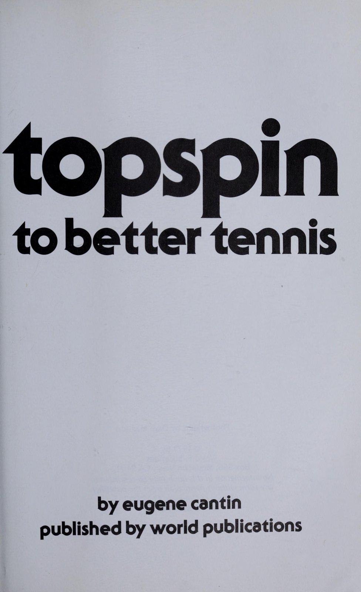
Đối với hầu hết mọi người, giao bóng là mấu chốt trong cuộc tấn công của họ, không chỉ ảnh hưởng đến lối chơi thực tế mà còn cả quan điểm tâm lý của họ. Vì vậy, hãy thực hiện cú giao bóng cho đến khi nó hoàn hảo, sau đó hãy tiếp tục thực hiện thêm nữa. Lấy một xô bóng và giao bóng ít nhất một trăm quả mỗi ngày. Cú giao bóng là vũ khí chính trong kho vũ khí của bạn, loại pháo hạng nặng mà bạn dùng để tấn công đối thủ. Bạn muốn giữ cho nó luôn bóng bẩy và hoạt động tốt.
Cú Đập Bóng Trên Không & Tuyệt Kỹ Lốp Bóng Tấn Công
Chapter 10: Overhead Smash & The Offensive Topspin Lob
Overhead Chi phí có liên quan trực tiếp đến cú giao bóng. Nó mượn một phần của chuyển động giao bóng để xử lý những quả bóng mà đối thủ của bạn
Nent thùy trên đầu của bạn. Có lẽ bạn đang ở Tư thế sẵn sàng khi đối thủ của bạn thực hiện cú đánh như vậy. Nếu bạn đang ở trên lưới,
quay sang một bên và lùi lại vài bước, vẫn nghiêng sang một bên. Đồng thời nhấc cả hai tay lên không trung và thả vợt xuống sau lưng. Nguyên nhân khiến cả hai tay giơ lên là
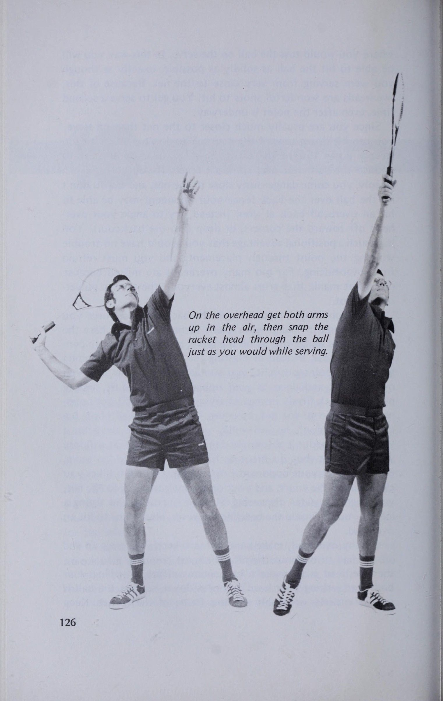
để giúp bạn giữ Trọng tâm cơ thể tốt và hướng sự chú ý của bạn về phía quả bóng đang rơi xuống người bạn. Bạn thậm chí có thể chỉ vào
bóng bằng tay trái nếu bạn muốn. Một lần nữa, hãy tưởng tượng ai đó đang ném lao vào quả bóng - đây là tư Tư thế sẵn sàng cho cú Cú lốp bóng (lob).
Chuyển động thực tế của cú đánh giống hệt với cú giao bóng thực hành trong đó bạn không bao gồm chuyển động đi xuống đầu tiên của cú đánh
vợt. Đơn giản chỉ cần đặt vợt xuống sau lưng, đợi bóng đến chỗ bạn rồi đánh nó. Bí quyết để có chi phí tốt
là vị trí: bạn phải di chuyển cho đến khi bóng rơi qua khu vực mà bạn sẽ Tung bóng khi giao bóng. Bằng cách này, bạn sẽ có thể đánh bóng chắc chắn nhất có thể, chính xác như thể bạn đang giao bóng từ rất gần lưới. Bởi vì điều này, những cú đánh từ trên cao là những cú đánh tuyệt vời. Bạn có thể giao bóng lần thứ hai, ngay cả sau khi trận đấu đang diễn ra.
Vì bạn thường ở gần lưới hơn nhiều so với khi giao bóng, nên bạn có thể đánh xuống sân. Tuy nhiên, bạn không muốn đánh bóng quá dốc về phía sân, trừ khi bạn muốn đánh bóng qua hàng rào phía sau. Nếu bạn đánh xuống dốc, bạn sẽ đến gần lưới một cách nguy hiểm và nếu bạn không đánh bóng qua hàng rào phía sau, đối thủ của bạn có thể đánh ngược trở lại bạn. Thay vào đó, hãy cố gắng nghiêng đầu của bạn về phía các góc hoặc sâu vào sân sau. Bạn có Điểm lợi thế (advantage) về vị trí nên bạn sẽ không gặp khó khăn gì khi giành được điểm thông qua vị trí và bạn phải hạn chế đánh quá mức. Có quá nhiều chi phí bị bỏ lỡ vì cơn hưng cảm lớn bao trùm hầu hết mọi người; họ cố gắng nghiền nát phát bắn.
Nếu cú Cú lốp bóng (lob) chạm vào bạn ở phần sân sau hoặc buộc bạn phải ở đó, bạn phải thay đổi kế hoạch của mình một chút. Từ đây, lưới cũng nguy hiểm như khi giao bóng và bạn không thể kiểm soát được cú tung. Thay vì làm nổ bóng, hoặc thậm chí mong muốn giành được điểm hoàn toàn, bạn nên cố gắng đánh bóng qua lưới và sâu về phía sân sau của đối thủ, chỉ cần đánh trả chắc chắn thay vì cố gắng sút bóng. Tuy nhiên, nếu đối thủ của bạn vào lưới, bạn cũng có thể nổ tung, vì nếu không, anh ta sẽ thực hiện cú sút yếu của bạn để mang về chiến thắng. Một lần nữa, đừng phá hủy hoàn toàn quả bóng - điều đó sẽ khiến bạn mất điểm - nhưng hãy đánh nó mạnh như khi bạn giao bóng, ngay vào đối thủ hoặc vượt qua anh ta. Nếu cú Cú lốp bóng (lob) đưa bạn đi rõ ràng phía sau sân và đối thủ của bạn tiến lên lưới, bạn có thể cân nhắc việc bỏ qua cú đánh trên cao và thử một cú Cú lốp bóng (lob). Tuy nhiên, nếu bạn đang ở trong đường cuối sân (baseline), hãy luôn cố gắng đánh một cú đánh trên cao.
Ở bất kỳ vị trí nào trên cao, hãy đảm bảo rằng bạn luôn để mắt tới quả bóng trong suốt cú đánh. Sai lầm phổ biến nhất ở động tác đánh trên cao là dùng lực quá lớn, giật người và giật đầu và mắt xuống khiến bóng trượt hoàn toàn hoặc đập nhầm vào khung vợt. Giữ
Ở trên cao, giơ cả hai tay lên trời, sau đó đập đầu vợt xuyên qua quả bóng giống như khi bạn giao bóng. Hãy để ý đến quả bóng, bình tĩnh và ném bóng chắc chắn nhưng cẩn thận vào một góc, cách xa đối thủ. Hãy coi mình ở vị trí trở lại lưới một lần nữa. Có hai loại Cú lốp bóng (lob) có thể ném vào bạn: tấn công và phòng thủ. Một cú Cú lốp bóng (lob) phòng thủ được ném lên cao để người chơi có cơ hội trở lại vị trí sẽ rơi thẳng xuống sân của bạn. Sẽ là khôn ngoan nếu để kiểu Cú lốp bóng (lob) này nảy lên trước khi bạn đánh nó, bởi vì cố gắng đưa nó lên không trung sẽ không đạt được gì, và sau khi cú nảy bạn sẽ có một quả Bóng ngon ăn (sitter) xử lý hơn, có nhiều thời gian hơn để sẵn sàng đánh nó. Trong những cú đánh này, bạn muốn di chuyển vào vị trí, chuẩn bị vợt, đặt mình trong phạm vi một yard tính từ nơi bóng sẽ nảy lên, di chuyển vào khi nó bay lên không trung một lần nữa và sau đó đánh nó.
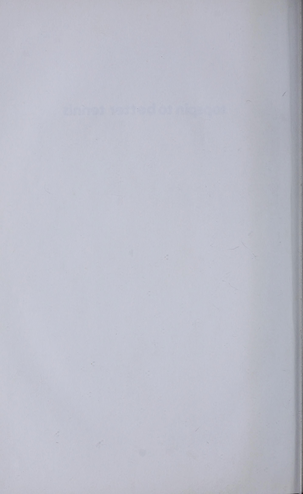
Mặt khác, một cú Cú lốp bóng (lob) tấn công có tốc độ thấp, được thiết kế để vượt qua bạn và tiếp cận hàng rào phía sau nhanh hơn mức bạn có thể đuổi theo nó. Ở những cú Cú lốp bóng (lob) này, bạn phải lùi lại ngay khi thấy chúng bật ra khỏi vợt của đối thủ. Nhiều khi bạn thậm chí sẽ phải nhảy lên và lùi lại để đánh chúng trước khi chúng vượt qua bạn. Nếu không, họ sẽ vượt xa bạn. Với những pha vượt lên trên này, bạn có thể thường xuyên gặp rắc rối, không thể tung ra cú đánh đủ tốt để giành điểm. Trong những trường hợp như vậy, hãy chắc chắn hướng cú đánh của bạn về phía trái tay của đối thủ, buộc anh ta phải đối phó với câu trả lời của bạn từ phía yếu hơn của anh ta.
Để tăng tốc độ khi quay trở lại để thực hiện cú đánh trên cao, hãy đứng nghiêng về phía lưới và sau đó trượt sang một bên trở lại sân trong khi để mắt đến một cú Cú lốp bóng (lob) tưởng tượng. Giữ phần thân trên của bạn sẵn sàng để đánh nó với vợt hướng xuống sau lưng. Bạn thậm chí có thể thử chạy lùi. trong khi vẫn giữ phần thân trên của bạn xoay, sẵn sàng đánh. Bàn chân của bạn sẽ không hoàn toàn chạy thẳng về phía lưới mà thay vào đó sẽ tạo ra một pha di chuyển theo góc cạnh có thể giúp bạn nhanh chóng lùi lại để tiếp cận những quả bóng sâu hơn.
Hãy nhớ lùi lại một vài bước ngay khi bạn thấy Đối thủ chuẩn bị Cú lốp bóng (lob), thay vì chờ xem anh ta tạo ra cú Cú lốp bóng (lob) như thế nào. Việc lùi về phía trước để xử lý một đường bóng ngắn sẽ dễ dàng hơn nhiều so với việc lùi lại vào thời điểm cuối cùng. Đối thủ sẽ Cú lốp bóng (lob) để anh ta có thể trở lại vị trí hoặc cố gắng kéo bạn ra khỏi vị trí thống trị của bạn trên lưới. Vì vậy, sau khi bạn đánh trên không (overhead), hãy theo nó trực tiếp trở lại lưới nếu có thể. Bằng cách này, bạn vẫn kiểm soát được điểm.
Cuối cùng, nếu bạn cảm thấy khó chịu với những cú Cú lốp bóng (lob), hãy phân tích một chút về những cú đánh mà đối thủ của bạn Cú lốp bóng (lob) rất thành công. Đối thủ của bạn rất khó có thể thực hiện những cú Cú lốp bóng (lob) sâu và chính xác khi họ đang chạy từ bên này sang bên kia trong vòng cấm.
sân sau, xử lý các quả bóng đánh sâu và xa chúng hoặc sâu và ngay vào chúng. Việc đánh bóng ra khỏi quả bóng sẽ dễ dàng hơn nhiều
nảy lên đẹp mắt ở giữa sân. Nếu đối thủ của bạn thực hiện những cú Cú lốp bóng (lob) đẹp, rất có thể bạn là người dẫn đầu.
nguồn gốc xuất sắc của họ; bạn đang thiết lập cho họ những cú đánh tiếp cận yếu hoặc những cú vô-lê yếu, cho họ nhiều thời gian để Cú lốp bóng (lob) chính xác. Buộc bản thân phải thực hiện các cú đánh của mình, đặc biệt là
các cú sút proach, về phía các góc, hoặc sâu và ngay vào đối thủ của bạn. Sau đó hãy xem họ phản hồi lại bạn tốt như thế nào. Bạn phải thực hành chi phí chung của mình (vậy còn điều gì mới không?) để
phát triển niềm tin vào nó. Trở ngại lớn nhất đối với lối chơi hung hãn ở cả người lớn và trẻ nhỏ thường là hậu quả tàn khốc.
cú Cú lốp bóng (lob) xảy ra khi họ cố gắng tiếp cận lưới. Tuy nhiên, với một chi phí tốt, cú Cú lốp bóng (lob) sẽ trở thành một món quà hơn là một lời nguyền.
Kỹ Thuật Bắt Lưới Vô-lê: Nhát Chém Karate Quyết Định & Bắt Nửa Vô-Lê
Chapter 11: The Volley & Half Volley
Cú vô-lê là cú chặt karate của quần vợt; cú đấm ngắn, bùng nổ để Kết thúc cú đánh một điểm chơi tốt. Đây là cú đánh ngắn nhất và gọn nhất trong tất cả các cú đánh quần vợt, nhưng lại là một trong những cú đánh mạnh nhất khi được tính thời gian và thực hiện hợp lý. Nó được sử dụng tốt nhất khi bạn ở gần lưới, tận dụng được vị trí chỉ huy đó. Và cú đánh được thực hiện bằng xoáy xuống, trái ngược với Xoáy lên yêu thích của chúng ta.
Có ba lý do cho việc này. Đầu tiên là bạn có thể tạo ra xoáy xuống (để kiểm soát), bằng một động tác đấm ngắn, nhanh, hướng xuống bằng vợt, tiếp xúc với quả bóng ở xa trước mặt bạn. Thứ hai, cú đánh xoáy xuống sẽ làm đứt dây của bạn và ở vị trí thấp so với phần sân đối phương, có xu hướng trượt và buộc đối phương phải đánh về phía bạn nếu anh ta chạm được vào bóng. (Topspin, khó đánh bằng cách kiểm soát bóng bay, có xu hướng khiến bóng nảy cao hơn và bạn không muốn điều đó khi ở trong lưới. Đối thủ của bạn có cơ hội tốt hơn để vượt qua bạn khi anh ta đánh ra một cú nảy cao.) Cuối cùng, nếu bạn
đấm Mặt vợt về phía trước và xuống phía sau hoặc hơi ở dưới bóng, bạn có thể đánh những cú đánh mạnh qua lưới từ bên dưới lưới của bạn, cho phép bạn đối phó tốt nhất
cú cú dìm bóng xuống chân (dipper) mà đối thủ của bạn có thể thực hiện. Tôi nghĩ rằng đó là một ý tưởng hay khi sử dụng cách cầm bóng giống như khi bạn thực hiện các cú đánh trên mặt đất: Tư thế sẵn sàng và cú vô-lê thuận tay với kiểu cầm vợt thuận tay kiểu lắc, cú vô-lê trái tay
với đốt ngón tay dịch sang trái và ngón cái chếch lên phía sau. Những lý do cho việc thay đổi cách cầm của các cú đánh trên mặt đất cũng có giá trị như nhau ở đây. Bởi vì bạn không quay xa sang một bên
tuy nhiên, cú vô-lê như khi chạm đất và vươn xa hơn về phía trước bạn về phía quả bóng, cổ tay của bạn sẽ được đặt
lùi xa hơn về phía thuận tay và cong về phía sau xa hơn ở phía trái tay so với trường hợp thực hiện các cú đánh mặt đất. Và thường xuyên,
trong sức nóng của một pha trao đổi nhanh, số lượng bạn thay đổi cách cầm sẽ Đấm bóng để có những cú vô-lê sắc nét, sau đó trở lại tư thế sẵn sàng (ready position) càng sớm càng tốt.
ee lp Pm Ee nhỏ hơn so với nét trên mặt đất. Nhưng hãy cố gắng đưa sự thay đổi cách cầm vào cú vô-lê của bạn; kết quả là bạn sẽ an toàn hơn ở mỗi bên. Thất bại phổ biến nhất khi thực hiện cú vô-lê là thực hiện cú xoay quá lớn. Giả sử ở tư thế sẵn sàng (ready position) cách lưới hai hoặc ba bước và cúi người thấp hơn một chút so với Tư thế sẵn sàng thực hiện cú đánh tiếp đất. Đặt cổ tay và vợt của bạn ra sau, vươn người về phía trước, vươn ra phía trước cơ thể để đánh.
Bạn không xoay sang ngang để thực hiện cú vô-lê như khi thực hiện các cú đánh trên mặt đất. Bạn phải vươn tay ra để đón nhận mọi quả bóng bay tới chỗ mình. Từ vị trí hướng về phía trước này, bạn đấm Mặt vợt về phía trước và hướng xuống, có lẽ bằng cú xoay khoảng hai feet, dừng vợt ngay khi bạn đấm xuống bên dưới quả bóng. Bạn vô-lê với Mặt vợt mở, và bạn đánh bóng không phải ở phía sau mà hơi ở phía dưới, làm cho nó bị cắt. Liên hệ
với quả bóng ở cuối động tác đấm của bạn, thay vì ở đầu, vì động tác sau tạo ra động tác xô đẩy, ném- Hiệu ứng
thay vì tác động mạnh như mong muốn. Chuyển động của cú vô-lê giống như khi bạn đập một quả bóng
đóng đinh ở một góc với mép vợt, nhưng đồng thời cố gắng giữ cổ tay và khuỷu tay của bạn tương đối cố định xuyên qua
cú vung vợt. Vợt, cánh tay và vai của bạn phải di chuyển như một đơn vị trong cú vô-lê, không vỗ vào cổ tay hoặc duỗi thẳng khuỷu tay
có liên quan. Không giống như các cú đánh trên mặt đất, bạn không muốn giữ bóng trên dây trong bất kỳ khoảng thời gian nào trong cú vô-lê, nhưng
thay vào đó muốn đánh nó thật mạnh để nó văng ra khỏi dây. a a a ee ee ee Đồng thời khi bạn tiến về phía trước
Những cú vô-lê ngay trước mắt bạn sẽ là vấn đề cho đến khi bạn học được cách thoát khỏi cơ thể mình. bóng, bạn cũng phải bước về phía trước để dồn trọng lượng của mình vào cú đánh trước khi đánh. Đối với cú vô-lê thuận tay, bạn bước ra bằng chân trái, đối với cú vô-lê thuận tay, bạn bước ra bằng chân phải. Với những quả bóng thấp, trọng lượng của bạn phải hướng về phía trước và hướng xuống, càng thấp càng tốt.
Bạn phải rèn luyện bản thân để Bước chân (footwork) phải chỉ một lần trong cú vô-lê. Nếu bóng đến vừa phải, hơi hướng về phía bạn, hãy bước thẳng về phía trước trước khi đánh. Nếu nó rộng và cách xa bạn, hãy bước ngang qua cơ thể bạn nhưng vẫn hơi hướng về phía trước. Và nếu bóng đến ngay chỗ bạn, chỉ bước một lần bằng chân phải, nhưng lần này về phía trước và rộng sang một bên mà bạn không đánh vào. Nếu bạn đã quen với việc thực hiện bất kỳ chuyển động nào khác bằng bàn chân của mình, đặc biệt là động tác nhấc chân trụ lên một chút trước khi di chuyển đúng chân thì bạn sẽ không có đủ thời gian. Ngay cả trong những cú vô-lê dễ dàng, khi bạn có nhiều thời gian, bạn vẫn muốn chuẩn bị chính xác nhất có thể để bạn biết phải làm gì khi hành động nhanh hơn. Để thực hiện động tác chân vô-lê nhuần nhuyễn và chắc chắn, bạn nên luyện tập ở nhà, giống như bạn học một bước nhảy, để cơ thể bạn biết bạn đang yêu cầu nó làm gì.
Một trong những bước cơ bản của cú vô-lê là bước chéo, và đối với nhiều người chơi, đó là phản ứng ít rõ ràng hơn đối với những quả bóng sắp vượt qua bạn khá rộng sang hai bên. Giả sử một cú đánh đang hướng về phía thuận tay của bạn. Cách nhanh nhất để che mặt đất là bước rộng qua chân trụ của bạn, bàn chân gần quả bóng nhất, bằng chân kia - trong trường hợp này là chân trái. Để đạt được khoảng cách tối đa, bạn phải bắt đầu động tác này với hai chân dang rộng ở Tư thế sẵn sàng thích hợp, cho phép bạn xoay người. Đối với những quả bóng rộng về bên trái, ở phía trái tay, hãy bước ngang bằng chân phải, vươn xa nhất có thể trước tiên bằng bước chân, sau đó bằng vợt. Bạn sẽ ngạc nhiên về mức độ bạn có thể bao quát theo cách này, bạn có thể bao phủ được bao nhiêu sân so với việc bạn bước về phía quả bóng bằng chân gần quả bóng nhất.
; é Đối với cú vô-lê thuận tay, khi bóng hơi hướng về phía bạn, bạn sẽ bước chân trái về phía trước, vươn cánh tay và vợt về phía trước, đồng thời đặt cổ tay ra sau sao cho dây vợt hướng xuống sân. Sau đó, với cú vung của bạn bắt đầu ở phía trước, bạn sẽ đấm về phía trước
và Hạ vợt sau lưng (racquet drop) xuống trong khoảng 2 feet của cú vung, tiếp xúc với quả bóng ở cuối cú vung đó, đánh vào mông
nó quay mạnh về phía sân đối thủ của bạn. Cú vô-lê trái tay cũng giống như cú thuận tay (forehand), chỉ ở đây tay trái mới có thể giúp bạn chuẩn bị. Khi quả bóng tới
về phía bạn, trọng lượng của bạn sẽ dồn về phía chân phải. Bạn sẽ đưa vợt ra, tay trái vẫn cầm vợt
nó vào cổ họng, và sau đó bạn sẽ đấm về phía trước và xuống bằng tay trái của mình, như thể bàn tay đó là giá đỡ cho
vợt đi ra ngoài. Bạn thậm chí có thể thử kéo vợt về phía tay trái trước khi đấm về phía trước: điều này sẽ
giúp bạn tăng tốc vợt vào cú đánh. Tuy nhiên, bạn muốn duy trì cú swing ngắn và gọn đó. Một chiếc cú vung vợt lớn không có chỗ đứng
trong cú vô-lê. Để hình dung về cú vô-lê trái tay, hãy đưa tay bạn sang một bên, vẽ hình lên các đốt ngón tay, sau đó tưởng tượng bạn đang trượt các đốt ngón tay đó và vẽ một đường xuống dưới
mặt sau của quả bóng. Sau đó, khi bạn đặt vợt trở lại tay, hãy tạo chuyển động tương tự bằng tay và bạn sẽ thấy Mặt vợt cũng có chuyển động hướng xuống tương tự.
vượt qua bóng. Đặc biệt ở cú Cú trái tay (backhand) (backhand), bạn không muốn sử dụng kiểu Bật cổ tay hoặc duỗi thẳng khuỷu tay để giúp đánh bóng. Bạn không có đủ sức mạnh. Thay vào đó, hãy vung toàn bộ cánh tay và vợt của bạn thành một đơn vị từ vai và bạn sẽ có kết quả tốt hơn nhiều. Nếu bạn gặp khó khăn trong việc giữ cú vung vợt đủ nhỏ, hãy đứng ở cổng. Với hàng rào ở bên cạnh, bạn không thể lấy vợt ra sau cơ thể khi thực hiện động tác Vung vợt ra sau (lấy đà). Xoay theo cách đó một hoặc hai lần đối với những quả bóng mà đối tác của bạn nhẹ nhàng ném bằng tay. Sau đó lùi lại, để bạn thậm chí không thể lấy lại vợt của mình bên cạnh cơ thể mà buộc phải thực hiện cú đánh bắt đầu từ một điểm ở phía trước bạn. Một khi bạn cảm nhận được cú đánh ''karate-chop'' đột ngột này, bạn sẽ thấy rằng mình có thể đánh rất mạnh với khả năng kiểm soát tuyệt vời.
Một điều quan trọng cần lưu ý khi thực hiện cú vô-lê là dây vợt của bạn phải hướng ra phía nơi bạn đánh, trong suốt cú đánh mà không có bất kỳ hình thức đánh theo nào. Đầu vợt của bạn không được hướng xuống sân ở cuối cú vung của bạn. Thông thường, việc thực hiện theo hướng đó dẫn đến việc quả bóng được mang trên dây thay vì bị đấm ra khỏi chúng. Những tay vợt bắt vô-lê theo cách này thường không thể đánh bóng thực sự khi họ cần tốc độ. Chẳng đạt được gì
Đối với những quả bóng ở xa bạn, bạn sử dụng bước Bước chân bắt chéo, bước một bước ngang cơ thể với bàn chân cách bóng xa nhất.
bằng cách xoay dây ra khỏi vị trí bạn đang đánh - trên thực tế, để làm như vậy bạn phải sử dụng cú xoay quá dài - vì vậy hãy cố gắng giữ chúng hướng về phía trước trong suốt độ dài ngắn của cú vô-lê thích hợp của bạn
chuyển động. Sử dụng cú vô-lê để đánh những quả bóng chưa nảy từ bất kỳ vị trí nào trên sân. Ngay cả khi bạn ở xa lưới và
lý do nào đó bạn thấy mình đánh một quả bóng bay, đánh nó bằng chuyển động vô-lê. Đừng bao giờ cố gắng thực hiện một cú xoay bóng Xoáy lên đầy đủ
sẽ không bị trả lại nếu bạn thực sự muốn có điểm. Cú đánh đó có thể hiệu quả với các siêu sao, nhưng nó sẽ không hiệu quả nhất quán đối với những người bình thường.
nam và nữ. Mặc dù bạn không bao giờ sử dụng động tác vung gậy chạm đất đối với một quả bóng bay, nhưng có những lúc bạn sẽ sử dụng chuyển động vô-lê đối với những quả bóng đã nảy lên. Trường hợp phổ biến nhất là khi bạn đang đến gần lưới và đối thủ của bạn đánh một quả trả bóng nảy ra trước mặt bạn. Quả bóng như vậy nếu đánh mạnh sẽ thấp khi bạn đánh. Khá khó để sử dụng topspin để chống lại cú đánh này, đặc biệt là khi bạn ở gần lưới. Thay vào đó, bạn muốn dồn trọng lượng của mình về phía trước và hạ xuống, đồng thời đấm bóng qua lưới bằng cú vô-lê.
Đối với một tay vợt thích ở lại sân sau, thỉnh thoảng nên lấy một quả bóng mà bạn có thể đánh bằng một cú đánh chạm đất Xoáy lên và thay vào đó đánh nó bằng chuyển động vo//ey, mặc dù nó nảy lên. Bởi vì xoáy xuống của nó,
Ở hai bên của cú vô-lê là một chuyển động đấm ngắn, với Mặt vợt giữ nguyên một góc trong suốt cú xoay. Cú xoay sẽ dừng lại ngay khi bóng được đánh vào,
khiến bóng bật ra khỏi dây. bóng sẽ không rơi sâu vào phần sân đối phương và khi luyện tập, bạn có thể học cách đưa bóng qua lưới một cách dễ dàng. Cú đánh này sẽ buộc đối thủ của bạn phải tiến về phía trước. Mặc dù anh ấy sẽ
có thể sẽ chạm bóng, hãy xem anh ấy xử lý tốt như thế nào tiếp theo với cú Cú lốp bóng (lob) hoặc cú chuyền của bạn. Nhiều người chơi tốt ở sân sau,
hoặc thậm chí vào lưới tốt khi họ tự mình đến đó, sẽ chơi khá tệ trên lưới khi bị một quả bóng mà bạn giật lên
đánh ngắn. Đây là một cú đánh đặc biệt quan trọng mà cả phụ nữ và trẻ em phải thành thạo, bởi vì nhiều đối thủ của họ
sẽ không đủ nhanh để tấn công đường bóng ngắn. Cũng lưu ý rằng quả bóng ngắn này sẽ buộc đối thủ của bạn phải chạy xa hơn bất kỳ cú đánh nào khác mà bạn có thể đánh từ sân sau.
Để học cách đánh cú vô-lê (volley) ngắn từ sân sau, hãy nhờ đối tác ném bóng của bạn và sau đó đánh một số quả bóng về phía bạn ở sân sau. Đừng nhắm vào phía trên của lưới mà tại một thời điểm nào đó cao hơn nó một hoặc hai foot. Quả bóng sẽ bay về phía trước về phía điểm này, sau đó rơi xuống và chết. Và bạn cũng có thể nhắm cú đánh về phía trái tay của phần sân trước của đối thủ, nơi họ có thể gặp khó khăn hơn một chút khi xử lý cú đánh nếu họ chạm tới nó.
Mục đích chính của cú vô-lê, bất cứ khi nào nó được sử dụng, là làm điều gì đó với quả bóng. Bạn muốn đánh bóng: sâu vào phần sân đối phương, ngay vào anh ta; sâu và rộng, cách xa anh ta ở sân sau hoặc dọc theo đường biên; hoặc rất ngắn và góc cạnh trên lưới. Trong mỗi cú vô-lê, hãy đảm bảo rằng bạn
khiến đối thủ của bạn gặp khó khăn trong việc thực hiện cú đánh tiếp theo. Bất cứ khi nào bạn thực hiện cú vô-lê ở đâu đó gần trung tâm của
sân, tạo cơ hội cho đối thủ tấn công bóng, bạn có nguy cơ mất điểm. Bạn cũng phải học cách kiểm soát những cú vô-lê thấp hơn, những cú đánh trúng
từ dưới mức lưới. Những cú đánh này phải được đánh qua lưới và sâu về phía hoặc ra xa đối thủ của bạn, nếu không
rất ngắn ở phía bên kia lưới. Thật đáng kinh ngạc khi một cú vô-lê rung nhẹ vẫn có thể khiến đối thủ khó xử lý, nếu quả bóng bay ra xa vùng nguy hiểm.
trung tâm của sân đấu. Bạn nên dành phần lớn thời gian của mình để học cách đánh bóng thấp sâu. Đánh sâu cho phép bạn có thêm thời gian để chuẩn bị
cho cú vô-lê tiếp theo và cho bạn nhiều thời gian hơn để phản ứng với cú đánh của đối thủ. Nó cũng gây cho đối thủ của bạn rất nhiều khó khăn.
sùng bái trong việc đánh trả cú vô-lê sâu, trượt của bạn. Với những quả bóng thấp hơn lưới, bạn sẽ không cố gắng tìm kiếm bất kỳ kiểu người chiến thắng nào - chúng thường không thể bị đánh từ đó. Nhưng bạn muốn có một cú đánh sâu giúp bạn kiểm soát được thế trận.
điểm. /nếu bạn muốn thắng môn quần vợt, đừng đánh Cú vô-lê vào vùng trắng. Điều này giống như nói với đối thủ của bạn rằng "Đây,
có lý." Trong một số cú vô-lê, bạn có thể thử xoay Mặt vợt ra ngay khi bạn tiếp xúc với bóng. Đây là cách bạn đánh một
thả cú vô-lê, đón bóng về phía bạn và cướp đi gần như toàn bộ tác động của nó lên vợt của bạn. Nó hầu như không bật lên
quay lại lưới để chết ở phía bên kia. Một lần nữa, cần phải luyện tập, nhưng đây là một cú đánh đẹp cần có. Tuy nhiên, chỉ sử dụng nó khi bạn dẫn trước và đối thủ của bạn rõ ràng đã vượt xa
vị trí lùi về sân sau. Cú bỏ nhỏ (drop shot) là một vở kịch '' khán đài ''; nó trông rất tốt nhưng có thể phản tác dụng trong một tình huống quan trọng. Hãy sử dụng nó để chọc tức đối thủ của bạn và khiến anh ta bỏ chạy. Nhưng đừng sử dụng nó khi bạn thực sự cần điểm. Khi học sinh lần đầu tiên thử thực hiện cú vô-lê, đấm xuống và dưới bóng, họ thường bật bóng lên không trung hoặc đánh bóng với độ xoáy quá lớn đến mức bóng khó đi qua lưới. Giống như các cú đánh trên mặt đất, cổ tay của bạn điều khiển góc của Mặt vợt khi nó tiếp xúc với bóng và bạn phải học cách chọn góc chính xác cho mỗi cú đánh. Một cú vô-lê mạnh, chắc, nhằm đi sâu vào sân, đòi hỏi Mặt vợt thẳng đứng hơn so với cú đánh từ dưới lưới. Như thường lệ, có rất nhiều khả năng ở đây và bạn phải học cách chọn ''cài đặt'' cổ tay chính xác cho các cú đánh khác nhau.
Những thay đổi bạn phải thực hiện đối với góc của Mặt vợt của bạn rất giống với các góc khác nhau tồn tại trên các mặt của gậy đánh gôn. Đối với những quả bóng cao hơn, Mặt vợt của bạn chỉ hơi mở ra, giống như gậy sắt hai hoặc gậy ba. Cách thiết lập này giúp bóng chắc chắn về phía đường biên cuối sân của đối thủ. Đối với những quả bóng thấp hơn, bạn phải mở Mặt vợt để có thể tung cú vô-lê từ dưới lưới lên. Trong trường hợp này, Mặt vợt mở giống như gậy sắt số 8 hoặc gậy sắt chín. Tuy nhiên, việc thiết lập Mặt vợt của bạn khá độc lập với cú vung vợt mà bạn thực hiện bằng vợt của mình. Cú xoay vẫn gần như giống nhau - một chuyển động đấm ngắn, hướng xuống - cho bất kỳ cú vô-lê nào bạn đang đánh. Điều khác biệt là Mặt vợt.
Với những quả bóng cao, bạn muốn chắc chắn rằng bạn không đóng Mặt vợt và cố gắng đánh xuống sân. Ngay cả với những quả bóng cao, bạn vẫn muốn vươn người lên phía trên quả bóng một chút, với Mặt vợt mở, rồi cắt bớt nó, giống như cách bạn thực hiện cú vô-lê thấp hơn. Nếu bạn đánh xuống sân, bạn sẽ có xu hướng đánh một quả bóng nảy quá cao, khiến đối thủ của bạn có thể tiếp cận được và bắt vô-lê hoặc lái qua bạn một cách dễ dàng.
Hướng trái và phải của cú vô-lê được kiểm soát bởi cách bạn căn chỉnh cơ thể và cũng bằng cách bạn đặt cổ tay về phía sau bao xa ở bên thuận tay, bạn uốn cong cổ tay về phía sau bao xa ở bên trái tay. Thật không may, trong cú vô-lê, bạn không phải lúc nào cũng có thời gian để định vị cơ thể để có thể thay Đổi hướng bóng đánh trong khi vẫn giữ nguyên cú đánh. Thay vào đó, bạn phải thay đổi Mặt vợt bằng cách thay đổi mối quan hệ giữa cánh tay, cổ tay và vợt. Đôi khi, điều này có thể dẫn đến
những cú vô-lê vụng về, nhưng vì tốc độ của bóng và thiếu thời gian, đôi khi bạn phải từ bỏ sự thanh lịch để có khả năng thực hiện
đấm bóng vào bất kỳ vị trí nào trên sân đối phương nếu cần. Nếu tất cả các cú vô-lê của bạn lúc đầu phải đi chéo bàn rộng, vì chúng
thường làm với những học viên mới bắt đầu, Mặt vợt của bạn không hướng xuống sân khi bạn tiếp xúc với bóng. bạn
đang vươn về phía trước không chỉ bằng cánh tay mà còn bằng đầu vợt của bạn. Các sợi dây hướng về phía sân trước khi bạn tiếp xúc. Bạn phải vươn tay để bắt vô-lê, nhưng chỉ bằng cánh tay của mình. Mặt vợt của bạn phải
"đang tìm kiếm"? xuống sân khi bạn đánh, nếu bạn định đánh cú vô-lê vào sân. Vì vậy, cánh tay của bạn nên vươn về phía trước để
thực hiện cú vô-lê, nhưng cổ tay của bạn phải uốn cong hoặc đặt vợt về phía sau, gần vuông góc với đường bay của bóng. Nhưng ngay cả trước khi thực hiện cú vô-lê, bạn phải tiếp cận lưới. Đến
làm được điều này, bạn cần một cú đánh hoặc giao bóng được đặt đúng vị trí. Trước tiên chúng ta hãy thảo luận về cách tiếp cận cú chạm đất vào lưới. Bạn phải vào lưới sau một cú đánh tiếp cận mạnh mẽ, mang tính tấn công, hoặc
nếu không việc bạn vào lưới sẽ chỉ mang lại điểm cho đối thủ. Bạn phải làm điều gì đó với cú đánh tiếp cận của mình để
khiến đối thủ đánh trả bạn một cách yếu ớt, cho phép bạn thực hiện cú vô-lê của mình để giành chiến thắng. Nếu đối thủ của bạn mangaes
để thực hiện một cú đánh trả tốt, một cú đi qua lưới và đi chìm, bạn phải học cách thực hiện nhẹ nhàng và đánh trả quả bóng đó một cách cẩn thận. Nhưng bạn sẽ đánh sâu, ngay vào đối thủ hoặc ra xa đối thủ, sau đó đánh vào giữa các góc có thể có của đối thủ trên lưới. Nếu anh ta không thực hiện được cú đánh xuất sắc thứ hai, thì bạn sẽ giành chiến thắng. Những học sinh mới bắt đầu luôn quá háo hức muốn cố gắng giành chiến thắng trong tất cả các cú vô-lê, thay vì “làm việc”
điểm cho đến khi họ tìm được "'người trông nom'"' thì họ có thể bỏ đi. Nhưng quay lại với cú đánh tiếp cận. Một nguyên tắc cơ bản khi lên lưới là bạn không thể đánh một cú ở sân sau, đợi đã
để xem cú sút tốt như thế nào, rồi cố gắng theo đuổi cú sút vào lưới. Bạn sẽ không bao giờ tiến đủ xa để bao quát toàn bộ sân đấu. Thay vào đó,
bạn phải nắm bắt một quả bóng ngắn mà đối thủ của bạn đánh trúng, biết trong đầu rằng bạn sẽ theo cú đánh vào lưới trước khi bạn đánh nó, sau đó di chuyển lên quả bóng và đánh kẻ tấn công đó-
cú sút tiếp cận mạnh mẽ. Có hai quy tắc cơ bản cần tuân theo về vị trí thực hiện các cú đánh tiếp cận, nhưng chúng có phần mâu thuẫn nhau: 1. Tấn công trái tay. 2. Thực hiện tất cả các cú đánh tiếp cận của bạn. Hầu hết các cú Cú trái tay (backhand) (backhand) của người chơi không hoàn toàn xuyên thấu như các cú Cú thuận tay (forehand) (forehand) của họ, không mạnh mẽ và không chính xác bằng. Điều này rất quan trọng khi bạn chơi trên lưới, vì ở đó khoảng thời gian bạn có để tiếp cận bóng là rất quan trọng. Vì vậy, thật tuyệt khi tiếp cận lưới sau cú đánh mà bạn đã đánh sâu về phía trái tay của đối thủ.
Tuy nhiên, nếu bạn phải thực hiện cú đánh tiếp cận của mình, tung ra một quả bóng ngắn ở đường biên trái tay của bạn, ở đâu đó phía trên đường giao bóng của bạn, hình dạng của sân cho thấy rằng bạn có thể đánh xuống đường biên ngang; ngay cả khi bạn đang đánh vào sức mạnh của đối thủ, cú thuận tay (forehand) của họ. Nếu bạn đánh bóng Đánh chéo sân (cross-court) từ cự ly gần bên đường biên của mình, bạn phải đánh trúng người thắng cuộc.
góc từ góc xuống của đường thẳng. Đánh chéo sân (cross-court). BS bóng ngắn đánh vào đây. Nhưng nếu bạn không làm vậy, đối thủ của bạn sẽ có toàn bộ sân để đánh. Hoặc, nếu bạn cố gắng di chuyển đủ nhanh, anh ấy cũng có thể
dễ dàng đánh bóng ra phía sau bạn. Mặt khác, nếu bạn đánh quả bóng ngắn đó dọc theo đường biên và đánh nó tốt, bạn sẽ ở vị trí trên lưới. Chỉ sau vài bước, bạn sẽ ở giữa
dle về các góc có thể có của đối thủ. Điều này buộc đối thủ của bạn phải xâu kim để vượt qua bạn. Bạn có thể Cú thuận tay (forehand) (forehand) của đối thủ một cách an toàn /nếu bạn nhận được
bóng đi sâu và rất gần đường biên. Cú đánh này an toàn hơn so với việc đánh bóng Đánh chéo sân (cross-court), vì nó khiến đối thủ của bạn gặp rắc rối
nhanh hơn — bóng có khoảng cách di chuyển ngắn hơn — đồng thời bạn có thể vào vị trí chỉ huy trên lưới nhanh hơn. Tuy nhiên, đường chéo sẽ an toàn hơn là bắn trượt cú sút của bạn
đường biên và Cú thuận tay (forehand) (forehand) của đối thủ ở đâu đó gần giữa sân: cú đánh đó là cú đánh tệ nhất mà bạn có thể đánh được, ngoài việc đánh trượt bóng hoàn toàn. Vì vậy, bạn có
để học cách đánh bóng chính xác dọc theo đường biên khi bạn đang xử lý một Cú trái tay (backhand) (backhand) tay ngắn gần đường biên của bạn - bất kỳ vị trí nào từ đường giao bóng của bạn đến lưới. Nhưng nếu bạn không thể
đánh cái này một cách chính xác, đánh bóng chéo bàn về phía trái tay của đối thủ và hy vọng rằng họ không có cú đánh đủ chính xác để tận dụng phần sân rộng mở.
Thông thường, bạn sẽ thực hiện tất cả các cú đánh tiếp cận thuận tay của mình dọc theo đường biên, về phía trái tay của đối thủ. Bất kỳ Cú trái tay (backhand) (backhand) tay nào ngắn nhưng hướng về giữa sân của bạn cũng nên được đánh vào đó. Tất nhiên, đôi khi bạn sẽ muốn đánh sang phía bên kia sân để
khiến đối thủ phải đoán. Tuy nhiên, nói chung, hãy tiếp cận Cú trái tay (backhand) (backhand) tay, ngoại trừ khi bạn đánh từ gần điểm của bạn.
có đường biên trái tay riêng, đặc biệt là khi chơi bóng ngắn. Những cú đánh này bạn thường sẽ muốn đánh trúng vạch. Vấn đề còn phức tạp hơn nữa, cứ sáu đối thủ của bạn thì có một người thuận tay trái, trong trường hợp đó bạn
phải đảo ngược tất cả các mẫu này. Tất nhiên, đối với bất kỳ ai, bất kỳ người chiến thắng nào mà bạn đánh trúng theo định nghĩa đều là cú đánh "đúng". Nếu như
đối thủ của bạn rời khỏi vị trí, đánh bóng vào nơi anh ta không ở, bất kể luật quy định phải làm gì. Về cách thực hiện các cú đánh tiếp cận, điểm mấu chốt là phải tiến tới bóng, bắt bóng khi nó sắp bật ra (cướp thời gian của đối thủ) và đưa bóng chắc chắn và sâu vào góc hoặc ngay vào đối thủ của bạn. Tôi bạn có thể mong đợi bạn đánh bóng với Xoáy lên trên bất kỳ quả bóng nào đang đứng thẳng, nhưng với những cú Cú trái tay (backhand) (backhand) ngắn, có thể sẽ hiệu quả hơn nếu bạn cắt bóng bằng động tác đấm vô-lê hoặc trái tay cắt xén dài hơn. Cú trái tay (backhand) cắt bóng (underspin) cho phép bạn đến gần bóng hơn so với cú đánh Xoáy lên, bạn có thể nghiêng người về phía trước để thực hiện cú đánh, đưa mình tiến xa hơn về phía lưới và cú Cú trái tay (backhand) (backhand) cắt bóng (underspin) sẽ ở vị trí thấp hơn phần sân đối phương. Điểm cuối cùng này đặc biệt quan trọng nếu bạn muốn đánh theo cách tiếp cận của mình, buộc đối thủ phải đánh lên. Tuy nhiên, có rất ít giá trị trong việc cắt giảm cách tiếp cận thuận tay ở cuối đường biên, bởi vì bạn sẽ mất quá nhiều hỏa lực nếu làm như vậy (so với một cú công bóng Xoáy lên thích hợp). Tuy nhiên, bạn có thể thử cắt bóng thuận tay như một thử nghiệm trong thực tế để xem cú đánh nào mang lại kết quả tốt hơn. Nếu bạn thực sự đang cố gắng lao về phía trước để giành bóng, bạn có thể không đánh được với độ Xoáy lên thích hợp, và ở đây, chuyển động vô-lê hoặc cắt xén ngắn hơn sẽ giúp lấy lại bóng.
Điều cần cân nhắc hàng đầu khi thực hiện các cú đánh tiếp cận là đưa bản thân đến đủ gần điểm nảy của bóng để bạn có thể thực hiện cú đánh theo hướng đi lên. Nhảy vào những quả bóng ngắn đó, tiến về phía trước để lấy chúng khi chúng bật lên, thay vì đợi chúng đến với bạn. Nếu bạn chờ đợi, bạn sẽ cho đối thủ thời gian để chuẩn bị.
Di chuyển theo hướng nảy của quả bóng đưa chúng ta đến chủ đề về cú vô-lê một nửa. Cú đánh này bị đặt tên sai một cách tồi tệ, vì nó hoàn toàn không phải là một cú vô-lê mà là một cú đánh tiếp đất rất viết tắt. Cú vô-lê một nửa được sử dụng để đánh bóng ngay sau khi nó nảy lên, khi ý tưởng đưa bóng lên cao được phát huy đến mức cực đoan. Nó thường được sử dụng trên đường vào lưới, khi đối thủ của bạn đánh một quả bóng bay quá xa về phía trước bạn để thực hiện cú vô-lê nhưng lại quá gần để bạn có thể vung vợt bình thường.
Để thực hiện một nửa cú vô-lê, bạn phải hạ trọng lượng của mình càng gần mặt đất càng tốt, giữ mắt dán vào quả bóng và vung bằng một Cú Cú đánh phẳng hoặc chỉ hơi nâng lên, dài hai hoặc ba feet. Bạn nên đánh bóng ngay sau khi nó nảy lên, sử dụng cổ tay chắc chắn và cú vung ngắn để đánh bóng sâu vào phần sân đối phương. Cú đánh đòi hỏi sự cẩn thận, vì bạn
ở dưới lưới và khá gần lưới. Bạn không thể đánh quá mạnh, vì bạn không chỉ phải đưa bóng lên để phá lưới mà còn phải lùi xuống phần sân đối diện. Vì vậy, mục tiêu của bạn là thực hiện một cú đánh khó qua lưới và đi sâu vào phần sân đối phương.
Để học cách thực hiện cú vô-lê một nửa, hãy thử đứng ở giữa sân, xoay người, sau đó dồn trọng lượng của bạn về phía trước và hạ xuống bằng một bước và Gập gối sâu. Thả một quả bóng và cố gắng đánh nó ngay sau khi nó nảy lên, chỉ cách mặt đất một hoặc hai inch. Đây là Quả bóng
không di chuyển nhanh về phía bạn, nhưng nó có thể cho bạn một số ý tưởng về kiểu cú chạm đất ngắn sẽ cho phép bạn
đưa quả bóng như vậy trở lại cuộc chơi. Sau đó, nhờ bạn tập ném hoặc đánh bóng sao cho chúng nảy gần như bên cạnh bạn,
và cố gắng nhân đôi nỗ lực của bạn. Trong môn quần vợt đỉnh cao, trình tự giao bóng và vô-lê thậm chí còn phổ biến hơn so với cách tiếp cận cú đánh mặt đất và trình tự vô-lê quan trọng. Trong trò chơi giao bóng và bắt vô-lê, người chơi bắt đầu
đòn tấn công của anh ấy bằng cú đánh mạnh mẽ và được chuẩn bị kỹ lưỡng nhất, sau đó lao vào lưới để tận dụng tối đa cú giao bóng hung hãn đó. Nếu bạn không thể hoặc không theo kịp cú giao bóng của mình lên lưới, ít nhất trong một số trường hợp, bạn sẽ loại bỏ rất nhiều cú giao bóng.
SSN +e! eR le foot pel gl "nl te oe áp lực mà bạn có thể áp dụng lên trận đấu của đối thủ, và như 2 tự chọn. ~ do thám oe kết quả là bạn có thể không bao giờ phát hiện ra điểm yếu của anh ta. Cú giao bóng và vô-lê là bản chất của trận đấu lớn được chơi trên khắp thế giới ngày nay, bởi các nhà vô địch ở mọi lứa tuổi. Để giao bóng và vô-lê giỏi, bạn phải bắt đầu bằng một cú giao bóng tốt.
Cú giao bóng của bạn không cần phải mạnh mẽ đến mức tàn bạo, nhưng nó phải chính xác và phải nằm trong tầm kiểm soát của bạn. Như trong cú đánh tiếp cận, bạn phải quyết định rằng bạn sẽ vào lưới sau cú giao bóng của mình trước khi bạn đánh nó chứ không phải sau đó. Bạn không thể giao bóng, hãy đợi xem nó có đủ tốt không, rồi tiến đủ xa vào lưới để thực hiện một cú vô-lê hiệu quả. Thay vào đó, bạn phải biết rằng bạn sẽ vào lưới trước khi giao bóng, bạn phải có khả năng thực hiện cú giao bóng mạnh và sâu để bảo vệ cách tiếp cận lưới của bạn, và sau đó bạn phải vào lưới theo cách cho phép bạn cắt đứt sự Trả giao bóng của đối thủ và đánh một cú vô-lê tốt.
Trong cú giao bóng và vô-lê, bạn sẽ cho phép việc thực hiện cú giao bóng tiếp theo của mình để đưa bạn tiến vào sân. Khi cú giao bóng của bạn đi qua lưới, bạn sẽ lao về phía trước nhanh nhất có thể, vợt của bạn ở tư thế sẵn sàng (ready position) trước mặt bạn. Bạn đang cố gắng bao phủ càng nhiều mặt đất càng tốt, chạy dọc theo đường phân chia các góc quay trở lại có thể có của đối thủ
Nửa cú vô-lê yêu cầu bạn = cúi người xuống bóng. Tôi Và nó sẽ giảm xuống trong suốt % cú đánh. od cú giao bóng bạn đã đánh. (Những góc quay trở lại thay đổi hoàn toàn
giữa cú Trả giao bóng trái tay và thuận tay, tất nhiên, đó là lý do tại sao bạn phải biết cú giao bóng của mình sẽ đi đến đâu nếu bạn định giao bóng và bắt vô-lê.
Yếu tố then chốt trong việc di chuyển lên lưới của bạn xuất hiện ngay khi Đối thủ của bạn chuẩn bị đánh trả. Khi vợt của anh ta bắt đầu tiến về phía trước để đáp ứng cú giao bóng của bạn, bạn phải thay đổi-
chuyển động của mắt chuyển sang trạng thái tạm dừng ngay lập tức. Khi đối thủ tấn công, bạn phải ngừng chạy, đặt trọng lượng xuống với hai chân dang rộng và nhanh chóng vào Tư thế sẵn sàng. Điều này đôi khi
được gọi là "'tách bước'"' và nó thực sự cần thiết nếu bạn muốn đánh tốt cú đánh tiếp theo của mình. Bạn không dừng lại hoàn toàn, nhưng
ee Sa beek Wer See Ses MES ee khá là chảy qua điểm này với hai chân dang rộng, giống như một đứa trẻ đang chơi trò nhảy lò cò. Bạn phải tách hai chân ra để
để có thể xoay vòng để đạt được lợi nhuận rộng. Ngay khi đối thủ của bạn đánh và bạn có thể biết cú đánh của anh ta sẽ hướng tới đâu, trọng lượng của bạn sẽ chuyển từ trạng thái tạm dừng tạm thời của bạn.
qua cả hai chân lên bàn chân gần đường bay của bóng nhất, và sau đó chân kia của bạn sẽ bước lên để đưa bạn vào vị trí và sẵn sàng cho cú vô-lê. Ngay khi bạn bắn trúng, bạn sẽ chạy tới-
lại cắm mắt, chiếm vị trí gần lưới ở giữa các góc trả bóng có thể. Bạn phải tiến về phía trước,
để giảm bớt khoảng trống cho đối thủ thực hiện cú bắt vô-lê. Bạn càng tiến về phía trước, bạn càng nhạy cảm hơn.
bạn sẽ thực hiện được một cú Cú lốp bóng (lob), nhưng bạn chống lại điều này bằng cách đánh sâu, buộc phải thực hiện cú vô-lê đầu tiên, để đối thủ của bạn không thể Cú lốp bóng (lob) chính xác-
nằm phía trên bạn, đồng thời bằng cách hoàn thiện cả khả năng tranh giành bóng lùi nhanh và khả năng cú đập bóng smash
sân khách dành cho người chiến thắng. Về vị trí tạm dừng của bạn trước cú vô-lê đầu tiên, khi bạn tiếp cận lưới, vấn đề không phải là bạn tạm dừng ở đâu, mà là
khi nào. Bạn sẽ muốn sử dụng tất cả thời gian có sẵn để tiến về phía trước, từ thời điểm bạn giao bóng cho đến thời điểm đối thủ của bạn chuẩn bị đánh, và khoảng thời gian đó sẽ khác nhau tùy theo
tùy thuộc vào mức độ bạn giao bóng và đối thủ của bạn có khả năng nhận bóng như thế nào. Nếu đối thủ của bạn đang phản công rất tốt
những cú giao bóng cứng mà bạn thực hiện, một phần của cú Trả giao bóng xuất sắc của anh ấy có thể là do bạn thiếu thời gian do thực hiện cú giao bóng khó ngay từ đầu. Hãy thử thực hiện cú giao bóng xoáy thứ hai, đảm bảo rằng bạn đưa nó sâu vào ô giao bóng về phía trái tay, và bạn sẽ thấy mình có thể tiến xa hơn về phía trước để có cú vô-lê đầu tiên hiệu quả hơn.
Bạn phải thực hành tất cả các yếu tố của trò chơi giao bóng và vô-lê - cú giao bóng chính xác, bắt buộc, cú vô-lê đầu tiên hoặc nửa cú vô-lê có kiểm soát, cú vô-lê cuối cùng quyết định từ gần lưới và cú đánh đầu. Và sau đó bạn phải thực hành toàn bộ chuỗi động tác đó. Khi đã vào lưới, bạn phải học cách phân biệt giữa những quả bóng mà bạn có thể đánh trúng người chiến thắng và những quả bóng bạn phải đánh lùi sâu hoặc rộng để giữ quyền kiểm soát điểm. Đôi khi, bạn có thể thấy đối thủ cũng ở gần lưới như bạn. Khi điều này xảy ra, bạn phải giữ bóng ở mức thấp và đợi anh ta tung cú sút cao mà sau đó bạn có thể vượt qua anh ta hoặc hạ xuống dưới chân anh ta. Trong các pha trao đổi nhanh gần lưới, hãy cố gắng đánh cú vô-lê của bạn vào hông phải của đối thủ hoặc xuống chân đối thủ, vì đây là những điểm khó thực hiện cú vô-lê hiệu quả nhất. Trong tình huống như vậy, mối quan tâm hàng đầu là quan sát quả bóng: bạn không có thời gian để quan sát bất cứ điều gì khác. Ngoài ra, bạn phải quay trở lại tư thế sẵn sàng (ready position) sau mỗi cú vô-lê để sẵn sàng lao ngay lập tức theo một trong hai hướng cho quả bóng tiếp theo. Đừng cố đoán — hãy sẵn sàng! Có quá nhiều người mới không quay trở lại tư thế sẵn sàng (ready position) trung lập tốt mà chờ đợi cú đánh tiếp theo có lợi hơn một chút về phía mà họ vừa đánh.
Đây là một thảm họa trong bất kỳ hình thức trao đổi nhanh chóng nào. Cách duy nhất để học được Thời gian phản xạ và sự sẵn sàng thích hợp khi thực hiện cú vô-lê là đứng cùng với người khác và thực hiện cú vô-lê qua lại trên lưới nhanh nhất có thể. Giữ bóng đi và buộc bản thân phải đánh và chuẩn bị ngày càng nhanh hơn. Một cú đánh rất hữu ích trong các pha đối đầu trên lưới hoặc khi bạn đưa đối thủ vào lưới bằng một cú sút thả bóng, đó là cú Cú lốp bóng (lob) bổng. Cú đánh này được thực hiện với chuyển động vô-lê ngắn, đấm, nhưng bạn mở Mặt vợt hướng lên trên để đưa bóng lên không trung trên không (overhead) đối thủ. Điều này buộc anh ta phải quay lại và chạy lùi để thực hiện cú đánh, để bạn chỉ huy lưới. Cú Vô-lê lốp là một cú đánh tuyệt vời - ngoại trừ khi bạn đánh nó quá thấp, khiến đối thủ đang mỉm cười của bạn bằng một cú đánh sát thương từ trên cao. Cú Vô-lê lốp, giống như cú sút thả bóng, là
một cú đánh trên khán đài, một cú đánh rất thú vị để thực hiện nhưng cũng là một cú đánh mà bạn không muốn thử ở một tình huống quan trọng
điểm trừ khi bạn hoàn toàn Sự tự tin vào khả năng đánh nó của mình. Đó là một cú đánh mà bạn cần phải luyện tập trước khi thử với đối thủ quần vợt địa phương của mình.
Cuối cùng, một số người chơi quần vợt cảm thấy vô cùng sợ hãi khi thấy mình ở gần lưới, đối mặt với đối thủ.
đòn tấn công của Nent. Cách dễ nhất để vượt qua nỗi sợ hãi đó là luyện tập cú vô-lê của bạn và cách thích hợp để xử lý những quả bóng đó.
đến ngay chỗ bạn. Nếu bạn quan sát liên tục quả bóng đang tới, bạn sẽ có thể tự bảo vệ mình bằng vợt. Với
luyện tập, Thời gian phản xạ của bạn sẽ được cải thiện và bạn sẽ có thể đánh trả quả bóng nguy hiểm đó một cách hiệu quả. Tuy nhiên, bạn
phải nhớ rằng từ khóa ở đây là thực hành.
Chiến Thuật Thực Chiến, Thi Đấu Đôi & Bản Lĩnh Thi Đấu
Part IV: Play — Practice, Singles Strategy, Doubles & Champion Mindset
Kế Hoạch Tập Luyện Định Hình Kỹ Năng & Thể Lực Chuyên Biệt
Chapter 12: Practice & Conditioning
_ Luyện tập * x) fy il ay } y Peed tôi ôi Đệ. vâng. Hy Zt ae q q me = tức là ies ek nf oe anh aor : -. eo o> ví dụ a ee Để học tennis, bạn phải lập cho mình một lịch tập luyện thường xuyên. Thời gian thực hành này nên tách biệt với thời gian thực hành của bạn.
thời gian thi đấu, và bạn nên ra sân với tâm trạng hoàn toàn khác so với khi thi đấu. một tôi Trong thực tế, mục tiêu của bạn là lặp lại cú đánh chính xác trong
sửa hướng đủ số lần để nó trở nên tự nhiên và tự động. Bất kỳ cú đánh nào, dù tệ đến đâu, cũng sẽ có cảm giác “tự nhiên” nếu bạn đánh đủ số lần. Vì vậy bạn phải chắc chắn
rằng bạn đang tập đúng cú đánh. Trong luyện tập, bạn sẽ sử dụng ý thức của mình để hình thành và kiểm soát các cú đánh của mình. Sau khi luyện tập đầy đủ, bạn sẽ có thể thư giãn tinh thần
Speer. và tạo ra những cú đánh giống nhau một cách đơn giản và tự động khi bạn chơi. Việc luyện tập phải là một nỗ lực thường xuyên, lặp đi lặp lại, bởi vì
chỉ bằng cách lặp lại các chuyển động đúng như vậy thì các chuyển động đó mới ăn sâu vào tâm trí bạn. Bất kỳ sự sắp xếp nào trong đó bạn đánh nhiều bóng nhiều lần sẽ tỏ ra hữu ích: thả bóng và đánh chúng, đánh vào bảng sau hoặc lưới trả lại hoặc tường, nhờ ai đó ném cho bạn, đánh với ai đó, thậm chí vung vợt trước gương - tất cả những điều này sẽ giúp bạn tiến bộ trong việc kiểm soát các cú đánh.
Tuy nhiên, nếu bạn là một trong những học sinh của tôi, tôi sẽ cụ thể hơn một chút. Để thực hành cú đánh mặt đất, tôi sẽ yêu cầu bạn khởi động cẩn thận với một đối tác luyện tập, sau đó cố gắng thực hiện các cú thuận tay (forehand) chuyển sang trái tay ở mỗi bên, thuận tay chéo bàn và trái tay chéo bàn, trong 5-10 phút cho mỗi hướng. Tôi muốn bạn thực hiện bài tập này mỗi khi bạn ra ngoài tập luyện. Bạn sẽ cố gắng đánh chắc chắn nhất có thể trong khi vẫn duy trì tính nhất quán. Nếu bạn thấy mình thiếu sót, bạn sẽ giảm tốc độ đánh cho đến khi lấy lại được sự nhất quán. Sau đó, bạn sẽ tăng tốc độ trở lại.
Lúc đầu, bạn sẽ thấy bài tập này khá khó thực hiện, nhưng rất nhanh chóng, nếu bạn kiên trì thực hiện, bạn sẽ có khả năng kiểm soát tuyệt vời các cú đánh liên quan. Sau loạt trận cú đánh, tôi Mong cả hai cùng lên lưới để tập bắt vô-lê cho nhanh. Cả hai bạn sẽ cố gắng giữ bóng trên không, đánh trước để kiểm soát, sau đó để có thêm sức mạnh.
Tôi Tiếp theo, tôi sẽ yêu cầu mỗi người trong số các bạn lần lượt thực hiện 20-30 cú ném trên không (overhead), trong khi người chơi kia ném bóng. Khoảng nửa chặng đường, tôi sẽ yêu cầu người thực hiện Cú lốp bóng (lob) thay thế các cú Cú lốp bóng (lob) bằng các cú đánh thấp, buộc người chơi trên lưới phải thực hành xử lý cả hai cú đánh, vì những người chơi tấn công lùi về phía sau hung hãn sẽ sử dụng những cú đánh này trong trận đấu.
Rồi tôi sẽ yêu cầu cả hai người chơi thực hành giao bóng và Trả giao bóng. Một người chơi sẽ nhắm 20-30 cú giao bóng vào một trong ba mục tiêu mà chúng tôi đã đề cập trong phần giao bóng (góc trái tay, vào thân người trả giao bóng (receiver), vượt ra ngoài phía thuận tay của người trả giao bóng (receiver)), trong khi người còn lại thực hiện việc trả bóng - đầu tiên là dọc theo đường biên, sau đó là chéo bàn. Trong bài tập này, người giao bóng sẽ bỏ qua những cú trả bóng, để anh ta có thể tập trung phát triển các đường rãnh mà tâm trí anh ta phải có để tạo ra những cú giao bóng đó một cách chính xác trong thi đấu.
Tăng tốc, tôi sẽ yêu cầu mỗi người chơi giao bóng 10 quả bóng sang phần sân thuận tay và sau đó là 10 quả bóng cho phần sân trái tay, trong khi cố gắng lao vào và thực hiện cú vô-lê sau mỗi lần giao bóng. Tất nhiên,
trong bài tập này, người giao bóng sẽ thực hành đặt quả giao bóng về phía trái tay của đối thủ, kiểm soát cú vô-lê đầu tiên sâu đến mức
đường cuối sân (baseline), sau đó thực hiện cú vô-lê tiếp theo. Sau đó tôi sẽ yêu cầu hai học viên của chúng tôi chơi một hoặc hai hiệp giao hữu. Trong vở kịch này tôi muốn cả hai người chơi quên đi tất cả
công việc họ vừa hoàn thành và thay vào đó chỉ đơn giản là chơi, cố gắng giành điểm nhưng không nghĩ đến chi tiết của việc tạo ra cú đánh. Một gợi ý nhân tạo tôi sẽ hy vọng họ
có thể xảy ra sau đó là việc xen kẽ một kiểu chơi này với một kiểu chơi khác mỗi khi họ mất một điểm. Nghĩa là, rất thường xuyên một
người chơi sẽ miễn cưỡng sử dụng một kỹ thuật mà họ đã thành thạo trong thực tế, bởi vì họ không quen sử dụng nó trong trận đấu-
tình hình. Họ thích quay trở lại với những gì họ đã quen thuộc. Nếu đúng như vậy, thì để dễ dàng sử dụng một kiểu chơi mới, hiệu quả hơn, họ nên thay đổi kiểu chơi đó.
với những thói quen cũ của họ. Ví dụ, họ nên giao bóng và bắt vô-lê cho đến khi mất một điểm, quay lại giao bóng và giữ nguyên.
quay lại cho đến khi họ mất một điểm, sau đó quay lại giao bóng và bắt vô-lê. Bằng cách này, học sinh có thể thực hành một mô hình mới của
chơi nhưng vẫn nỗ lực để giành chiến thắng trong trận đấu mà họ đang chơi. Khi chơi, bạn có thể phát hiện ra một cú đánh nào đó mà bạn không muốn phải đối phó hoặc cảm thấy khó xử lý. Là
Chắc chắn sắp xếp để đánh thật nhiều và thật nhiều cú đánh chính xác như vậy trong luyện tập. Chúng sẽ không biến mất nếu bạn phớt lờ chúng, nhưng độ khó của chúng sẽ biến mất hoặc giảm bớt nếu bạn tập đối phó với chúng.
họ. Ngoài ra, bất cứ khi nào bạn chơi một trận đấu tập - hoặc một trận đấu thực sự - hãy buộc bản thân cố gắng tiếp cận mọi quả bóng, bất kể khoảng cách bao xa.
ở xa hoặc khó tiếp cận. Bạn sẽ ngạc nhiên về số lượng quả bóng bạn sẽ nhận được và bạn sẽ xây dựng được
sức mạnh và tốc độ ngay cả trên những thứ bạn không với tới. Kiểu hối hả này sẽ dạy bạn cách đuổi theo một quả bóng, một nghệ thuật.
bạn sẽ không bao giờ học được nếu bạn không bao giờ cố gắng. Với sự suy nghĩ, bạn có thể hình thành thói quen luyện tập phù hợp nhất với mình. Một số người thích thú với việc khoan ba và bốn giờ
một ngày, trong khi những người khác sẽ chết theo chế độ như vậy. Dù bạn làm gì, bạn cũng muốn có một thói quen cân bằng, bao quát tất cả các cảnh quay
mỗi lần bạn luyện tập, hãy nhấn mạnh vào những điều bạn cần cải thiện. Chắc chắn, bạn sẽ muốn tự mình làm thêm công việc, ngoài những buổi luyện tập này, chẳng hạn như giao một trăm quả bóng mỗi ngày về phía mục tiêu, luyện tập Cú lốp bóng (lob) để biết chiều dài của sân, vuốt ve và tung cú vô-lê vào bảng rổ, v.v. Ý tưởng là làm bất cứ điều gì cần thiết để phát triển trò chơi của bạn, và sau đó thêm một chút nữa để phát triển nó nhanh hơn.
Và một lần nữa, hãy nhớ lại những gì đã nói trong chương thứ ba về cách chúng ta học tập. Trong quần vợt, sự phát triển của bạn sẽ không phải là một chặng đường thăng tiến suôn sẻ mà thay vào đó sẽ ở dạng một loạt các điểm cao nguyên. Vì điều này, bạn phải luyện tập chăm chỉ và không quá chú ý đến việc việc luyện tập sẽ cải thiện bạn đến mức nào. Sự cải thiện đó đang diễn ra và sẽ tự thể hiện nếu bạn tiếp tục duy trì nó...
Nếu bạn muốn đạt được một số tiến bộ trong môn quần vợt, bạn thực sự phải lên lịch cho loại buổi luyện tập mà tôi đã vạch ra trong cuộc sống của bạn, ít nhất ba lần một tuần. Bất kỳ ai có ý định cải thiện nhanh chóng chắc chắn sẽ tập luyện hàng ngày, nhiều nhất có thể mà vẫn cảm thấy sảng khoái và háo hức. (Một ngày nghỉ mỗi tuần để "nghỉ ngơi" cũng không phải là một ý tưởng tồi.) Lên kế hoạch sáu tháng thực hành kiểu này trong cuộc sống của bạn, và đến cuối cùng, bạn sẽ nắm vững cách thực hiện các cú đánh quần vợt chính xác.
Tuy nhiên, những cú đánh tennis đúng không tự động giúp bạn trở thành một tay vợt giỏi. Họ cung cấp cho bạn phương tiện để trở thành một. Được trang bị những cú đánh tốt, bạn phải tìm ra cách chơi tốt nhất có thể mà bạn có thể tìm được, để bạn có thể học cách sử dụng những cú đánh đó trong các kiểu chơi hiệu quả. Có nhiều cấp độ trong trò chơi quần vợt và ngay khi bạn cảm thấy mình đã đạt được cấp độ cuối cùng thì cấp độ tiếp theo sẽ xuất hiện ở phía trước. Nhưng đó chính là một phần tạo nên niềm đam mê quần vợt, sự khám phá từng cấp độ của trò chơi và trở nên ngang bằng với nó.
: Bạn cũng nên nhận ra rằng bạn có thể tìm thấy lối chơi xuất sắc giữa những người yếu hơn bạn khi thi đấu. Không cần thiết phải ngồi một chỗ chỉ vì những người chơi có sẵn có trình độ thấp hơn bạn. Nếu bạn được yêu cầu chơi bởi một người chơi kém hơn, hãy vui vẻ chấp nhận, cho họ niềm vui khi thi đấu với bạn và về phần bạn, hãy luyện tập chăm chú nhất có thể để chống lại đòn tấn công ít dồn ép hơn của họ. Để có được sự cạnh tranh tốt nhất có thể, bạn và đối thủ của bạn có thể muốn thiết lập một hệ thống điểm chấp, trong đó bạn cho điểm của anh ta trong mỗi trận đấu.
Tuy nhiên, việc luyện tập quần vợt đúng cách không chỉ dừng lại ở việc đánh bóng tennis bằng vợt. Quần vợt giỏi đòi hỏi một cơ thể có khả năng đáp ứng được nhu cầu thi đấu. Nếu muốn chơi tốt, bạn sẽ muốn dành chút thời gian để rèn luyện thể chất.
Hầu hết các tay vợt giỏi đều chạy hai hoặc ba dặm vài lần một tuần để rèn luyện sức bền. Họ cũng sẽ tập luyện để tăng tốc
sân đấu. Một bài tập tốt bao gồm chạy đua với bạn tập của bạn. Mỗi người trong số các bạn bắt đầu đối diện nhau,
Đứng trên đường cuối sân, ở giữa điểm giữa và đường biên. Mỗi người hãy cầm vợt của mình
chạy từ điểm xuất phát về phía dây giữa, chạm vợt vào lưới, sau đó đạp lùi dọc theo phía bên kia của chữ ''V"' khổng lồ trở lại đường cuối sân. Lặp lại toàn bộ chữ '"V"' 10
lần, xem ai thắng rồi sụp đổ. Nếu bạn thực hiện bài tập này Một hoặc hai lần một ngày, tập luyện chăm chỉ nhất có thể để đạt được tốc độ, bạn sẽ
bạn sẽ sớm thấy mình có phong độ tuyệt vời. Việc bạn nghĩ ra loại bài tập nào thực sự không quan trọng, miễn là bạn thực hiện chúng. Để cải thiện khả năng điều hòa của bạn, bạn có
làm việc đến kiệt sức, rồi làm việc thêm một chút. Chính việc “thêm một chút” ngoài sự kiệt sức đã khiến bạn mạnh mẽ hơn. Động tác gập bụng rất quan trọng để cung cấp cho thân mình sức mạnh để vặn, vươn và uốn cong trong suốt trận đấu dài. chuột túi
nhảy — đầu gối đưa lên ngực khi bạn nhảy tại chỗ — hỗ trợ xây dựng sức mạnh của chân và khả năng bật nhảy. Thực hiện chúng theo đơn vị 10-20 mỗi lần, vài lần trong ngày. Một loạt kéo dài
các bước Bước chân bắt chéo, trong đó bạn duỗi rộng hết mức có thể sang một bên, sau đó hồi phục mà không Bước chân (footwork) trụ nếu có thể,
sau đó đi sang phía bên kia, giúp bạn tăng tốc và chạm lưới. Nhảy dây cải thiện sự nhanh nhẹn và khả năng của bạn
để thực hiện các bước nhỏ nhanh chóng cần thiết để định vị đúng trong quần vợt. Trong bất kỳ loại bài tập nào, tốt hơn là nên thực hiện nhiều
các đơn vị nhỏ trong suốt cả ngày hoặc tuần, thay vì tập luyện một bài tập lớn khiến bạn mất lưới. Và hãy nhớ thực hiện các bài tập chạy và nhảy cự ly trên đường chạy hoặc trên cỏ
hoặc các bề mặt mềm khác. Người chơi quần vợt chịu đủ lực đập từ sân khi thi đấu nên không cần phải chịu lực đập của đường cứng hay vỉa hè khi thi đấu.
cũng đang tập thể dục. Nhiều người thấy rằng thói quen tập thể dục và nâng tạ nhẹ nhàng sẽ có lợi. Sử dụng tạ nặng 10 hoặc 15 pound, tốt nhất là mỗi tay một tạ và thực hiện ba hiệp, mỗi hiệp 10 động tác một hoặc hai lần một ngày. Chuyển động của bạn có thể bao gồm cánh tay cuộn tròn về phía bạn, đẩy chúng lên trên đầu, nâng từ sau vai như khi giao bóng, nâng cánh tay của bạn sang hai bên, v.v. Ý tưởng là tập luyện cơ thể của bạn một cách tổng thể với tạ nhẹ, thực hiện một loạt các lần lặp lại. Điều này sẽ tăng sức mạnh cho vai, cánh tay và cổ tay của bạn, giữ cho cơ bắp của bạn ở trạng thái săn chắc nói chung, nhưng tránh hiện tượng cơ bị phồng lên thường gặp khi bạn phải nỗ lực rất nhiều để nâng tạ thực sự nặng.
Một số nhà trị liệu tin rằng việc nâng tạ nhẹ thường xuyên sẽ giúp ngăn ngừa hoặc giảm bớt tác động của khuỷu tay quần vợt bằng cách điều chỉnh toàn bộ cánh tay trước tác động của các cú đánh. Bất cứ khi nào bạn tập luyện, vui chơi hoặc tập thể dục, trước tiên hãy thực hiện một loạt các bài tập giãn cơ hoàn chỉnh. Hãy nhớ khởi động từ từ và luôn mặc bộ đồ thể thao khi bắt đầu và Kết thúc cú đánh hoạt động của bạn vào những ngày lạnh. Đừng bao giờ ngu ngốc đến mức thử chơi toàn diện mà không có thời gian khởi động như vậy. Cơ thể bạn có thể trừng phạt bạn một cách nghiêm khắc nếu bạn yêu cầu nó hoạt động khi trời vẫn còn lạnh. (Một điều thú vị của tôi là cách mà rất nhiều người sẽ cố gắng thể hiện tầm vóc anh hùng của họ bằng cách thực hiện cú giao bóng đầu tiên trong ngày đó mạnh nhất có thể, và tất nhiên là trượt nó nặng nề trong quá trình đó. Tại sao bạn không bắt đầu giao bóng một cách nhẹ nhàng nhất có thể, nhưng hãy đảm bảo rằng mỗi quả bóng đi vào sân? Bằng cách đó, bạn sẽ khởi động và cũng có những phản hồi tích cực về việc cú giao bóng của bạn đang diễn ra tốt như thế nào. Không một chuyên gia du lịch nào có thể bắt đầu Giao bóng / Cú giao bóng chăm chỉ như hầu hết các hacker.) Theo nghĩa đầy đủ nhất, từ ''điều hòa'' cũng áp dụng cho những gì bạn phải làm với tâm trí của mình để chơi quần vợt. Bạn phải rèn luyện tâm trí của mình để mong chiến thắng, kiên trì chiến thắng. Người ta nói về Billie Jean King rằng trong suốt cả năm trước khi giành chức vô địch Wimbledon đầu tiên, cô ấy đã dành năm phút mỗi đêm để lặp lại " có thể vô địch Wimbledon!"' Trong phần lớn sự nghiệp quần vợt của mình, bạn sẽ thấy mình phải cạnh tranh không chỉ với đối thủ mà còn với chính tâm trí của mình. Thông thường, những cú đánh của một tay vợt, trận đấu quần vợt của anh ta, sẽ đưa anh ta đến bờ vực chiến thắng trước một tay vợt giỏi hơn, và sau đó tâm trí anh ta sẽ nói, thực ra, "Này, tôi thực sự không nên làm điều này," và đột nhiên anh ta thua, chẳng vì lý do chính đáng nào cả. Điều này đã xảy ra với tất cả những người chơi quần vợt,
nhưng những người chơi trở nên giỏi hơn hãy học cách vượt qua tâm trí của họ, học cách mong đợi chiến thắng và sau đó tiếp tục giành chiến thắng. Hầu hết các trận đấu quần vợt đều là “thua” hơn là “thắng” và hầu hết các trận đấu đều
những người thua cuộc bị chính họ đánh bại thường xuyên hơn nhiều so với bất kỳ đối thủ nào trên lưới: họ chộp lấy thất bại từ hàm chiến thắng.
Liên quan đến việc rèn luyện trí óc của bạn, có một cuốn sách bìa mềm thú vị tên là Tâm lý-Điều khiển học, của Tiến sĩ John C.
Maxwell Maltz. Nó không liên quan đến quần vợt mà liên quan đến ý tưởng về phản hồi tích cực và những gì nó có thể làm cho bất kỳ nỗ lực nào của con người. Nó cũng có nhiều điều để nói về phản hồi tiêu cực và cách
phổ biến và làm tê liệt hoạt động của con người. Cuốn sách được viết với giọng điệu khó bán, nhưng dù sao hãy mua một bản và
hãy xem liệu nó có mang lại cho bạn một số ý tưởng để theo đuổi điều kiện tinh thần của chính bạn không. Mục đích của Tâm lý học điều khiển học và bài tập năm phút của Billie Jean King là phát triển Sự Sự tự tin vào chính bạn.
khả năng. Trên thực tế, Billie Jean đã tự thôi miên bản thân để có được trạng thái Sự tự tin cần thiết để vô địch Wimbledon. Tất cả việc thực hành cú đánh và công việc điều hòa của bạn không chỉ giúp ích cho
bạn phát triển những cú đánh đó và cơ thể của mình, nhưng nó cũng cải thiện Sự Sự tự tin của bạn trong từng cú đánh. Bạn phải có Sự Sự tự tin đó nếu bạn muốn tận dụng tối đa trò chơi quần vợt của mình và bạn phải nỗ lực xây dựng Sự Sự tự tin đó thông qua sự tích cực.
suy nghĩ, thay vì xé nát nó bằng cách nhường chỗ cho những suy nghĩ tiêu cực đang rình rập tất cả chúng ta. Một cú đánh hay, hay một trận tennis hay, một phần là tuyệt vời vì
người sở hữu cú đánh hoặc trận tennis đó hoàn toàn Sự tự tin về khả năng của mình: anh ta biết rằng mình có thể vượt qua thời gian
hết lần này đến lần khác, bởi vì anh ấy nhận ra bằng chứng rằng anh ấy đã làm như vậy trong quá khứ, và tin tưởng chắc chắn rằng anh ấy sẽ tiếp tục
để có được những bức ảnh đẹp khi cần thiết trong tương lai. Một người chơi kém khả năng hơn, có thể có cùng một cú đánh, sẽ
vẫn lo lắng về việc liệu ngày mai hay ngày mốt anh ấy sẽ bị cú đánh hay không, sẽ tự hỏi liệu nó có hoạt động bình thường không, và
kết quả là ngày nay hầu như không có trường hợp cú đánh nào được đề cập. Nhiều người trên thế giới có thể chơi quần vợt giỏi hơn họ rất nhiều, với chính những thiết bị mà họ hiện có,
nếu họ Sự tự tin vào khả năng của mình. Sự thiếu Sự tự tin tạo ra những cú đánh rụt rè, ngập ngừng trong những tình huống mà người chơi có đủ thiết bị để thực hiện những cú đánh hạng nhất. Sự thiếu Sự tự tin tạo ra một viễn cảnh thua cuộc trong những tình huống mà người chơi lẽ ra có thể giành chiến thắng. Nếu bạn đang thắc mắc liệu quá trình tự thôi miên này có thực sự xảy ra ở những tay vợt hàng đầu hay không, hãy đọc những câu trích dẫn sau đây của ba trong số những tay vợt giỏi nhất thế giới (số tháng 1 năm 1976 của Tennis I/lustrated), về cách họ chuẩn bị cho một trận đấu.
" tự nhủ rằng tôi sẽ thắng. Nhưng tôi làm được nhiều hơn thế. Tôi tin điều đó ... Trong và ngoài sân đấu, tôi nhắc nhở bản thân rằng tôi có kỹ năng, bí quyết và rằng tôi giỏi
đủ để thắng... 1 cũng suy nghĩ rất nhiều về việc làm thế nào tôi lên kế hoạch để giành chiến thắng. Tôi hãy tự nói với bản thân về việc nên sử dụng những bức ảnh nào và những gì
Điểm yếu của đối thủ là." Rosie Casals "Nhiều giờ trước tôi đi ra ngoài chơi, tôi thực hiện một cuộc diễn tập về trang phục trong đầu. về những gì trận đấu sẽ diễn ra. Tôi chạy qua trong tâm trí tôi
'hãy để ý đến mọi điều có thể sẽ hoặc có thể xảy ra trên sân... 1 thực sự diễn ra một phần của trận đấu trong tâm trí tôi, phát triển-
các tình huống đối phó từ quả giao bóng đầu tiên và điểm sẽ diễn ra như thế nào." John Newcombe "Đây là cách thực hiện tôi nói chuyện với bản thân để có thái độ đúng đắn: tôi ngồi xuống
và nghĩ xem mình sẽ làm gì, và ai tôi tôi sẽ chơi và cách tôi sẽ chơi chúng. Nghĩ về vở kịch sắp diễn ra - cái gì tôi có thể làm gì, đối thủ của tôi có thể làm gì
làm — kích thích tôi ... Nghĩ đến chiến thắng khiến tôi muốn chiến thắng. Hầu hết các tuyển thủ hàng đầu đều có thái độ tương tự - họ muốn
Bước Vào Trận Đấu Đơn: Tư Duy Tấn Công & Giải Quyết Từng Điểm Số
Chapter 13: Let's Play — Match Strategy Point by Point
Cùng Chơi Bạn đã nghiên cứu các chương trước, thực hiện các cú đánh của mình và hoàn thiện Xoáy lên trên các cú đánh trên mặt đất. Bạn bị đánh-
bắt đầu giao bóng, đấm vào lưng quả bóng trong cú vô-lê và bạn biết đâu là giữa vị trí của đối thủ.
các góc có thể nhìn thấy được. Bây giờ bạn muốn chơi. Không chỉ vậy, bạn còn muốn giành chiến thắng. Tốt. Hãy cùng tôi chơi vài trò chơi và
lắng nghe những suy nghĩ, hành động và phản ứng có thể diễn ra trong trận đấu. Chúng ta hãy tưởng tượng điều đó tôi tôi đang chơi với một người lạ. Nếu điều này
là một giải đấu, tôi sẽ cố gắng theo đà (follow-through) anh ta chơi một vòng trước đó, để xem anh ta chơi kiểu gì, những điểm yếu hoặc xu hướng mà trò chơi của anh ta có thể có. Kể cả một cú đánh trúng đích cũng kém hiệu quả hơn
tive nếu bạn có thể đoán trước được nó trong một số tình huống. Buổi tối trước buổi chơi của chúng tôi, nếu rõ ràng là tôi sẽ có một trận đấu khó khăn, tôi sẽ dành chút thời gian ''' để nâng cao tinh thần,"
trải qua thói quen điều hòa tâm trí cá nhân của tôi cho trận đấu sắp tới. Qua nhiều năm tham gia giải đấu, tôi nhận thấy rằng kết quả tốt nhất sẽ đến nếu tôi ngồi im lặng trong khoảng năm phút, lặp lại câu "Tôi có thể, tôi phải, tôi sẽ thắng", cố gắng hết sức tôi có thể hình dung ra đối thủ của tôi và trò chơi của anh ta, và tại sao mỗi câu nói này đều đúng.
Sau vài phút lặp lại cụm từ này, tôi sẽ dành chút thời gian để hình dung từng nét vẽ của tôi hoạt động như tôi muốn họ: những cú giao bóng đầu tiên đi sâu về phía trái tay, những cú đánh từ trên mặt đất có tác dụng đến tất cả các góc của sân, vượt qua đối thủ của tôi trên lưới thành công, những cú vô-lê được đấm sâu tới vạch. Sau đó tôi sẽ thêm vào bất kỳ mệnh lệnh nào có vẻ thích hợp: "Bạn sẽ giữ im lặng trong suốt trận đấu." (Bạn có bao giờ nhận thấy việc bắt đầu nói chuyện hoặc la hét với chính mình khi bạn đánh trượt dễ dàng như thế nào, nhưng cũng có thể thấy việc nói chuyện như vậy thường đi đôi với việc thua cuộc không?) '""Bạn sẽ giữ giao bóng." 'Bạn sẽ tập trung trong suốt trận đấu." "Không có gì sẽ làm phiền bạn." “Bạn sẽ đạt được mọi cú bắt vô-lê mà đối thủ của bạn đánh trúng”, v.v.
Tôi sẽ dành khoảng 10 phút để xem qua các lệnh này, tôi sẽ cố gắng vạch ra kế hoạch tấn công cho trận đấu cụ thể này, và sau đó tôi sẽ gạt toàn bộ vấn đề ra khỏi tâm trí tôi. Bạn rất dễ lạm dụng tâm lý phấn khích như vậy và kết quả là trò chơi của bạn trở nên lo lắng và bay bổng. Mọi người đều phải xây dựng hệ thống của riêng mình để có kết quả tốt nhất.
Sáng hôm sau, trước trận đấu, tôi sẽ nhờ một người bạn sưởi ấm cho tôi, tập hợp tất cả các cú Pha bóng qua lại (rally) trong 15-20 phút. Tôi ban đầu sẽ không cố gắng đánh mạnh mà thay vào đó cố gắng đánh bóng chắc chắn vào giữa dây, cố gắng để mỗi cú đánh tiếp xúc chắc chắn với bóng, đồng thời cố gắng thiết lập nhịp điệu tốt.
Tôi cũng sẽ thực hành các cú giao bóng, giao bóng sáu hoặc tám quả đầu tiên rất nhẹ nhàng, nhưng đảm bảo rằng chúng tiếp đất ở góc trái tay của sân giao bóng, sau đó tăng tốc độ. Cuối cùng, có lẽ chúng tôi sẽ chơi một hoặc hai trò chơi và tôi có thể dành vài phút cuối cùng để đánh cú đánh yêu thích của tôi, để làm nóng và luyện tập hoàn toàn. (Đối với tôi, đây là cú giao bóng trái tay, đánh rất mạnh từ cuối sân về phía đường biên bên đối phương, bên trong đường giao bóng.) Sau đó tôi sẽ thay áo sơ mi nếu tôi đổ mồ hôi và mặc bộ đồ thể thao.
Ngay trước trận đấu, tôi sẽ cố gắng tự mình xuống xe trong năm phút và ngồi im lặng. Tôi cũng sẽ lặp lại hầu hết
lệnh từ đêm hôm trước, chỉ trong một phiên bản ngắn gọn hơn. Tôi cũng sẽ xem xét lại kế hoạch tấn công của tôi cho trận đấu này, xem xét tất cả các ý tưởng của tôi về cách chơi đối thủ cụ thể này một cách hiệu quả.
(Điều rất quan trọng là bạn phải tập trung hoàn toàn vào trận đấu trước mắt, với mọi thứ khác đã được điều chỉnh. Sai lầm tồi tệ nhất trước một trận đấu Là ngồi xem một trận đấu khác — đặc biệt-
ly nếu đó là một trò chơi kém — hoặc ngồi trò chuyện với bạn bè. Điều này có thể làm bạn cạn kiệt năng lượng và Điểm lợi thế (advantage) của bạn nhanh hơn
hầu hết mọi thứ khác và nên tránh bằng mọi giá. Bạn cần tất cả Sự tập trung và năng lượng của mình để chơi quần vợt giỏi và bạn phải bắt đầu tập trung trước khi trận đấu bắt đầu.)
Fianlly, đến giờ chơi rồi. Đối thủ của tôi và tôi giới thiệu bản thân bằng cách bắt tay, sau đó quay vợt để xem ai được lựa chọn giao bóng hay giao bóng. Đối thủ của tôi thắng vòng quay và chọn
giao bóng trước. Tôi kiểm tra xem mặt trời ở đâu và quyết định đưa sân đấu vào mắt tôi để nhận, để tôi có thể bắt đầu Giao bóng / Cú giao bóng ở phía đối diện với mặt trời ở phía sau tôi. (Ngược lại
sẽ khiến đối thủ của tôi bắt đầu giao bóng về phía mặt trời, Nếu tôi nghĩ rằng điều đó sẽ ảnh hưởng đến anh ấy nhiều hơn tôi và cho phép nghỉ ngơi sớm.)
Chúng tôi khởi động trong thời gian dài nhất có thể - thường là năm phút - mỗi lần thực hiện các cú đánh chạm đất, vô-lê và một vài cú đánh đầu. Như chúng tôi
trúng, tôi tôi đang cố gắng học thêm điều gì đó tôi có thể về trò chơi của đối thủ, liệu anh ta có vẻ yếu hơn trong một trận hay không
bên này hay bên kia, nơi anh ấy có xu hướng đánh bóng trên không (overhead), cách anh ấy thực hiện cú vô-lê ở mỗi bên, v.v. Nhưng anh ấy không có điểm yếu rõ ràng nào, và Trên thực tế,
có vẻ khá tốt. Tôi Tuy nhiên, đừng lo lắng về điều đó vì mọi người thường trông giống như những kẻ thống trị thế giới khi tập hợp
nhưng chẳng chơi được gì cả. Sau khi mỗi người chúng tôi khởi động giao bóng cùng lúc, đối thủ của tôi ra hiệu rằng anh ta đã sẵn sàng bằng cách giơ bóng lên. Tôi
gật đầu đó tôi tôi cũng đã sẵn sàng và cuộc chơi bắt đầu. Tôi đứng ở khoảng đường cuối sân (baseline), hai chân cách xa nhau, đặt ở giữa khả năng
góc ble mà đối thủ của tôi có thể đánh khi giao bóng. Tôi tôi đang đối mặt với anh ta, trong tư thế cúi mình khá thấp. Trọng lượng của tôi dồn về phía trước ở ngón chân, gót chân
hơi nhô lên khỏi mặt đất và tôi chăm chú nhìn quả bóng trong tay đối thủ trước khi anh ta bắt đầu Tung bóng. Khi quả bóng đi
bay lên không trung, cơ thể tôi di chuyển vài inch từ bên này sang bên kia, lắc lư và chân tôi vừa rời khỏi sân, khiến cơ thể tôi chuyển động trước khi bóng được đánh. Khi đối thủ của tôi thực hiện cú giao bóng của anh ta tôi tôi sẽ thực hiện những bước nhỏ về phía trước thay vì chỉ nhấc chân tại chỗ, như tôi muốn chơi tích cực, đặc biệt là ở những điểm đầu tiên này và để làm được điều đó tôi phải có trọng lượng của tôi về phía trước cho sự trở lại.
Tôi phải tấn công bóng. Đối thủ của tôi thực hiện cú giao bóng đầu tiên rất tốt, đưa bóng sâu về phía góc trái tay của phần sân giao bóng của tôi. Như tôi vừa xem quả bóng được tung lên của đối thủ, tôi xem càng sớm càng tốt nơi anh ta đã đánh bóng. Khi anh ấy lao vào đánh tôi đang thực hiện những bước nhỏ đó về phía trước và ngay khi tôi xem bóng đi đâu tôi tiến thêm vài bước về phía trước và về phía bên trái tay, đồng thời xoay vai và đưa vợt về phía sau. Tôi không thực hiện bất kỳ kiểu giật vợt nào - không có thời gian - mà chỉ cần búng vợt qua lại. Khi quả bóng nảy tôi Tôi đã sẵn sàng, trọng lượng dồn lên chân trước, vợt qua lại, mắt vẫn dán chặt vào quả bóng. Khi bóng bay ra khỏi sân, tôi Tôi vung vợt về phía trước để đỡ vợt khi nó sắp nảy lên.
Tôi tôi biết đối thủ của mình đang theo đà (follow-through) cú giao bóng của anh ta vào lưới, mặc dù tôi tôi chỉ xem quả bóng và cơ thể tôi tự động phản ứng với thông tin này. Tôi bắt quả giao bóng khi nó đi lên, ở độ cao ngang eo và trải nghiệm cảm giác va chạm chắc chắn tuyệt vời. Vợt của tôi, di chuyển về phía trước và xuyên qua quả bóng, tiếp xúc tốt ở phía trước tôi và kiểm soát quả bóng với độ Xoáy lên nặng.
Khi đối thủ tiến vào tôi đưa bóng ra phía trước đủ xa để dây vợt của tôi hướng về phía trái tay của đối phương khi tiếp xúc và tôi hơi khép Mặt vợt lại để cú trả bóng không chỉ đi về phía trái tay của anh ta mà còn lướt qua lưới. Sau đó, quả bóng chìm xuống, buộc đối thủ của tôi phải tung cú vô-lê lên nếu anh ta thực hiện được cú sút.
Không có hướng dẫn có ý thức nào diễn ra như tôi điều chỉnh để Trả giao bóng. Cùng lắm thì tâm trí tỉnh táo của tôi chỉ có một cảm giác mơ hồ rằng cú trả bóng thấp, chìm về phía trái tay có thể có tác dụng tốt trong tình huống đang phát triển. Cơ thể tôi đang phản ứng với tình huống hiện tại, các quyết định của nó dựa trên kết quả học được từ việc đối mặt với những tình huống tương tự hàng trăm, thậm chí hàng nghìn lần trước đó. Tất cả đều khá tự động.
Mọi thứ diễn ra khá tốt. Đối thủ của tôi không tiến xa về phía trước như anh ta mong muốn — bằng cách di chuyển vào, tôi đã tước đi của anh ta thêm thời gian mà lẽ ra anh ta có thể có nếu tôi ở lại - và
anh ta buộc phải căng ra xa về phía trái tay để chạm bóng, ngay bên trong vạch giao bóng. Anh ấy thực hiện cú vô-lê từ dưới mức lưới.
Sau cú trả giao bóng (return) của tôi, tôi đã đánh rất tốt ở đường cuối sân, tôi đã tiến về phía trước. Tôi biết rằng đó là một khoản lợi nhuận tốt và
có thể thấy đối thủ của tôi sẽ phải duỗi người bao xa để tiếp cận bóng. Từ đó anh ta chỉ có thể đưa ra một câu trả lời yếu ớt và tôi di chuyển cho-
tấn công mạnh mẽ. Đối thủ của tôi cố gắng hướng cú vô-lê quay trở lại đường về phía thuận tay của tôi, hy vọng rằng anh ta có thể quay trở lại
vào vị trí và biết rằng cú đánh này sẽ cần ít bước nhất để thực hiện được điều đó. Nhưng tôi Lúc này tôi đang cầm bóng, hãy tung cú vô-lê Đánh chéo sân (cross-court) trước khi anh ấy có cơ hội di chuyển
quay lại chút nào. Tình yêu-15. Đối thủ của tôi, cố gắng quá mức khi đối mặt với cú trả bóng Xoáy lên mạnh bất ngờ của tôi ở điểm đầu tiên, đã kéo dài cú giao bóng tiếp theo của anh ta. Sau đó, anh ta thực hiện cú giao bóng thứ hai với độ xoáy rất lớn, vì
an toàn, và nó dọn sạch lưới một cách rộng rãi. Nhưng nó không đi sâu vào triều đình của tôi một cách đặc biệt. Tôi đã tiến về phía trước một hoặc hai bước chân để vào tư thế sẵn sàng (ready position) của mình, như tôi sẽ chống lại
bất kỳ cú giao bóng thứ hai nào và khi bóng đi về phía tôi tôi chợt có một tầm nhìn mãnh liệt về cách tôi tôi sẽ tiêu diệt sự trở lại.
Đắm chìm trong suy nghĩ này tôi không thể di chuyển về phía trước một cách hợp lý, quả bóng nảy lên khá cao và cú đánh trả mạnh mẽ của tôi
biến thành một cú đẩy bóng chói tai vào một quả bóng trái tay cao ngang vai. Suốt thời gian này đối thủ của tôi đang siết chặt lưới,
và đến lượt anh ấy thực hiện cú vô-lê dễ dàng. Tất cả mười lăm. Ở điểm tiếp theo, trở lại phần sân thuận tay, đối thủ của tôi chọn giao bóng rộng về phía thuận tay của tôi. Đó là một cú giao bóng tốt – anh ấy
không thay đổi gì ngoài Mặt vợt khi tiếp xúc — nhưng một lần nữa, vì chỉ xem bóng, tôi xem nó sớm và quản lý để
đạt được nó. Tôi có sự lựa chọn ngay bây giờ: tôi có thể cố gắng đánh một người thắng ở cuối sân, hoặc đánh một cú thuận tay (forehand) Đánh chéo sân (cross-court) sau an toàn hơn. Tuyến dưới
tốt hơn hết tôi nên là người chiến thắng, bởi vì nếu đối thủ của tôi đưa bóng đến gần lưới, anh ta sẽ có toàn bộ phần sân bên trái của tôi để thực hiện cú vô-lê
bóng vào, và tôi có thể không bắt kịp được nó. Sân chéo an toàn hơn vì nó cho tôi thêm chút thời gian để bắt bóng.
quay trở lại sân từ nơi cú giao bóng của anh ấy đã kéo tôi - đường chéo sẽ tạo khoảng cách xa hơn trước khi đối thủ của tôi có cơ hội đánh nó - và anh ấy không thể đánh bóng xa tôi vì cú vô-lê thuận tay của anh ấy bị hạn chế bởi đường biên trái tay của tôi hơn là cú vô-lê trái tay của anh ấy. Tình huống này khiến tôi phải đối mặt với một đường chéo.
Tôi đánh bóng bằng Xoáy lên, chắc chắn nhưng không quá mạnh, sao cho tôi có thể giữ quyền kiểm soát nó và làm cho nó lao xuống thấp trên lưới. Tôi đang gặp rắc rối ở điểm này, vì tôi tôi gần như ra khỏi sân đấu khi tôi đánh và tôi phải đạt được lợi nhuận tốt, thấp để giữ vững điểm. Đối thủ của tôi rất nhanh và có được bóng. Nhưng một lần nữa anh lại buộc phải tung cú vô-lê từ dưới lưới. Tôi đang di chuyển sang một bên để lùi về giữa các góc có thể có của đối thủ khi cú đánh của tôi đi xa khỏi tôi và vào thời điểm anh ta đánh tôi tôi có thể tạm dừng, sẵn sàng thực hiện cú đánh của mình. Bởi vì tôi đánh Đánh chéo sân (cross-court), tôi không cần phải di chuyển xa để đến giữa các góc của mình như tôi sẽ có nếu tôi đã đánh xuống dòng.
Đối thủ của tôi chọn đánh bóng dọc đường biên trái tay của tôi. Anh ấy thực hiện cú vô-lê của mình ở gần đường biên, nhưng không sâu về phía đường biên như lẽ ra phải có. Tôi tiếp cận bóng, và vì nó có chiều dài ngắn nên tôi có thời gian để chuẩn bị cho cú đánh yêu thích của tôi, cú Cú trái tay (backhand) (backhand) Xoáy lên. Tôi cảm thấy may mắn khi vẫn đi đúng hướng, xem xét nó đã bắt đầu như thế nào và tôi quyết định tận dụng Cú Cú vô-lê ngắn của đối thủ bằng cách thực sự co cứng cơ bắp (tightening up) cú đánh tiếp theo của tôi, bằng cách ''cố gắng'' tôi đưa Bóng ngon ăn (sitter) dàng vượt qua đối thủ trên lưới, người đã không giữ vị trí đủ xa về phía giữa sân, như thể anh ta mong đợi tôi sẽ lùi về cuối sân. Cú Đánh chéo sân (cross-court) là cú đánh ưa thích của tôi và tôi sẽ tiếp tục đánh liên tục cho đến khi đối thủ của tôi có vẻ đang chờ đợi. Sau đó, tôi sẽ cố gắng đi dọc biên nhiều lần, cố gắng bắt anh ta đi sai hướng, buộc anh ta để đoán hơn là biết mình sẽ làm gì. Và giữa lúc chuyển đổi qua lại để bắt vô-lê, tôi cũng sẽ cố gắng nhớ tung ra vài cú Cú lốp bóng (lob) tấn công để khiến anh ta phải đoán nhiều hơn. 15-30.
Đây là điểm quan trọng nhất của trò chơi, theo thống kê. Nếu tôi có thể giành được điểm này, tôi sẽ có hai cơ hội để giành chiến thắng trong trò chơi, trong khi đối thủ của tôi phải giành được cả hai điểm tiếp theo chỉ để gỡ hòa. Nếu tôi Mất điểm này, mặt khác, mọi thứ sẽ chẵn ở mức 30 và chúng ta có một cuộc đua bình đẳng cho trò chơi.
Đối thủ của tôi giao bóng về phía trái tay của tôi và chọn ở lại. Tôi đánh trả quả chắc chắn, nhưng cao qua lưới nên sẽ đi sâu. Tôi đánh bóng chéo bàn về phía trái tay của anh ấy, và anh ấy trả bóng chéo bàn sâu về phía trái tay của tôi. Tôi đánh bóng
quay lại theo cách tương tự, và sau đó, thật may mắn, đối thủ của tôi đã phạm một trong những lỗi cơ bản của môn quần vợt. Thay vì đánh bóng
về phía sau Đánh chéo sân (cross-court), hoặc nếu không thì chắc chắn và chính xác dọc theo đường biên, anh ta đánh bóng một cách mơ hồ về phía giữa sân, sao cho nó thực sự
hướng về phía thuận tay của tôi. Và tệ hơn cho anh ta, sau khi làm điều này, đối thủ của tôi chuẩn bị cho sự trở lại của tôi bằng cách sẵn sàng quay lại vị trí cũ - hơi lệch về bên trái giữa sân của anh ta - khi anh ta
đã làm khi tôi đang đánh một Cú trái tay (backhand) (backhand) tay. Các góc có sẵn đối với tôi đã thay đổi đáng kể khi đối thủ Cú thuận tay (forehand) (forehand) của tôi ở giữa sân, nhưng anh ta dường như không như vậy.
đáp lại điều này. Tôi lao vào sai lầm của đối thủ, tiến về phía trước, thực hiện cú đánh của anh ta sau khi bật lên và đưa bóng Đánh chéo sân (cross-court) một cách chắc chắn như tôi có thể với sự kiểm soát. Tôi đánh bóng càng rộng
dưới dạng tôi có thể, để nó sẽ vượt qua đường biên của anh ta sau cú nảy chứ không phải đường biên ngang của anh ta, buộc anh ta phải chạy càng xa càng tốt từ tư thế sẵn sàng (ready position) không chính xác của mình. Và tôi theo cú sút của tôi về phía lưới. Bây giờ tôi đang khiến đối thủ của mình gặp khó khăn và
muốn tận dụng nó chứ không phải chỉ ngồi chờ ở sân sau xem chuyện gì sẽ xảy ra. Đối thủ của tôi, do bị lệch khỏi vị trí một hoặc hai bước khi bắt đầu, nên đã bắt được cú đánh của tôi trên đường chạy và quyết định một cách khôn ngoan tung ra một cú Cú lốp bóng (lob) để anh ta có thời gian quay trở lại vị trí.
cú đánh tiếp theo của tôi. Khi anh chạm bóng tôi đã dừng bước chạy về phía trước của tôi, thay vào đó tạm dừng ở vị trí tách bước và ngay sau khi tôi xem
anh ấy nhấc quả bóng lên không trung tôi quay sang một bên, vung vợt ra phía sau tôi và nhảy lùi lại vài bước. Sau đó như
quả bóng leo lên đến đỉnh và bắt đầu rơi xuống tôi tiếp tục nhảy, di chuyển bản thân vào vị trí để khi quả bóng cuối cùng đến với tôi tôi sẽ được thiết lập để đánh nó như thể tôi đã ném nó
chuẩn bị giao bóng. Đối thủ của tôi đã ném một cú Cú lốp bóng (lob) khá cao, nhưng nó không sâu như anh ta mong muốn. Thay vì đánh bóng lên trời
Tôi hãy để nó nảy lên, vì nó đang lao thẳng xuống và đối thủ của tôi đã có nhiều thời gian để trở lại vị trí. Nhưng từ đường giao bóng, góc trên cao của tôi quá nghiêm trọng để anh ấy có thể che chắn, và tôi góc bóng rộng ra khỏi phía trái tay của sân anh ta. Mười lăm-40. "Chà," tôi hãy tự nhủ, 'Tôi chỉ cần giành được một trong hai điểm tiếp theo để giành chiến thắng trong trò chơi.'' Lỗi, lỗi, lỗi! Ngay khi bạn nhận thấy mình đang nghĩ những điều như "'Trời ơi, mình chỉ phải thắng một trong ba điểm tiếp theo thôi," hoặc "'Tất cả những gì mình phải làm là thắng một trong bốn ván tiếp theo và mình đã có set này," bạn phải nhận ra rằng bạn đang ở bên bờ vực của rắc rối. Bạn đang cạnh tranh với tâm trí của chính mình cũng như với đối thủ của mình vào những thời điểm như thế này, và nếu bạn nghĩ đến việc chỉ giành được một trong số điểm hoặc trò chơi tiếp theo, bạn đang vô tình cắt giảm nỗ lực của mình thành một phần ba hoặc một phần tư. Mặt khác, đối thủ của bạn đang nghĩ ''Chết tiệt, mình phải giành từng điểm tiếp theo chỉ để ở lại trong trò chơi đẫm máu này.'' Và anh ta có thể sẽ nhận được những điểm đó, trừ khi bạn hoàn toàn quyết tâm giành được trò chơi này, điểm này, ngay bây giờ.
Nhận ra lỗi của mình, tôi xua tan mọi suy nghĩ về việc có một Điểm lợi thế (advantage) dẫn trước một cách thoải mái, quan sát quả bóng của đối thủ khi tung và sẵn sàng xử lý nó, bất kể nó có thể đi đến đâu. Đây lại là một cú giao bóng tốt về phía trái tay, và tôi quyết định, với cảm giác có cảm giác tốt về quả bóng ngày hôm nay, để thử điều gì đó khác biệt. Tôi đừng bước lại gần tôi thường sẽ đánh bóng, và tôi hãy để nó lùi xa hơn bình thường một chút. Sau đó tôi đánh nó bằng một cú xoay hoàn toàn Xoáy lên, nhưng tôi đẩy bóng lùi qua phía thuận tay của đối thủ, thay vì hướng về phía trái tay của anh ta. Một cách hợp lý, vì tôi đã đánh tất cả các cú đánh khác về phía trái tay của anh ta, nên đối thủ của tôi né tránh về phía đó khi anh ta chạm lưới, và tôi nhận được điểm khi tôi trả giao bóng (return). Đó là một cú đánh khá may mắn, nhưng nó có tác dụng. Và tôi cẩn thận không tỏ ra rằng đó là điều gì đó bất thường đối với tôi: tốt nhất tôi nên đóng càng nhiều đinh vào quan tài sự tin cậy của đối thủ càng tốt.
Chúng ta đổi bên và đến lượt tôi giao bóng. Tôi đã có break, nhưng bây giờ tôi phải giữ cú giao bóng của riêng mình để xác nhận và duy trì vị trí dẫn đầu của mình. Thông thường, người chơi bẻ giao bóng của đối thủ và sau đó quá vui mừng vì thành tích này đến nỗi họ không thể giữ được giao bóng của mình trong ván tiếp theo. Tại thời điểm này, tôi thực sự đã thắng set bằng cách bẻ giao bóng, nhưng tôi phải giữ cú giao bóng của riêng mình trong phần còn lại của set để giành được nó.
Tôi chú ý để mắt đến quả bóng khi ném, để đầu tôi luôn ngẩng cao và tôi vươn người theo quả bóng
cú đánh. Đây là lần giao bóng đầu tiên, vì vậy tôi lái vợt trên mặt phẳng phẳng hơn qua quả bóng tôi sẽ giao bóng lần thứ hai, gửi
vợt hướng về phía trước cũng như hướng lên trên quả bóng, để đánh bóng xuống sân với tốc độ trong khi vẫn đẩy đủ về phía trước
xoay quả bóng để đưa nó trở lại sân giao bóng. Tôi đánh một cú giao bóng tốt, chắc chắn và sâu vào góc trái tay của phần sân giao bóng của đối thủ. Trọng lượng của tôi, nghiêng vào quả giao bóng, theo sau và đẩy tôi về phía lưới. Cũng như
đối thủ của tôi bắt đầu vung vợt vào lượt trả bóng, tôi chuyển từ chạy về phía trước sang Tư thế sẵn sàng nhất thời, hai chân tách ra, đầu gối cong.
Đối thủ của tôi thực hiện một cú trả bóng tốt bằng trái tay, đưa bóng đi thấp qua lưới về phía góc trái tay của tôi. Ngay khi tôi xem hướng bóng cất cánh khỏi vợt tôi tiếp tục di chuyển, nhưng bây giờ tôi xoay người bằng chân trái và
vung chân phải của tôi qua và về phía trước sao cho tôi có thể chạm tới bóng. Chân tôi đặt vững chắc trên mặt đất khi bóng đi qua
lưới, tôi đưa vợt về phía trước một chút, sau đó tôi đấm về phía trước và đấm xuống. Tôi tung một cú vô-lê đẹp mắt, bóng bay khỏi người tôi
vợt, đi sâu vào góc trái tay của đối thủ. Cú vô-lê của tôi, giống như bước đột phá của tôi trước đây, chỉ liên quan đến việc dừng lại khi tôi lao về phía trước và ngay khi bóng được đánh tôi lừa-
tiếp tục vào lưới nhanh như tôi có thể, chiếm tư thế sẵn sàng (ready position) ở giữa các góc có thể có của đối thủ trước khi anh ta
đánh bóng. Cũng giống như tôi phải rẽ trái để về được, tôi bây giờ phải quay lại bên phải để đến giữa
góc, hơi lệch về bên phải giữa sân. Tôi vào gần lưới như tôi có thể, để cắt giảm bao xa tôi phải
với tay để cắt một quả bóng được gửi xuống một hoặc góc khác mở ra cho đối thủ của tôi. Đối thủ của tôi, cố gắng bắt cú vô-lê sâu của tôi, quyết định
không cố gắng bắt vô-lê. Thay vào đó, anh ấy tung ra một cú Cú lốp bóng (lob) tốt, thấp và mang tính tấn công. Trọng lượng của tôi đang di chuyển về phía trước và xuống tư thế sẵn sàng (ready position) của tôi trên lưới, và cú sút dễ dàng bay qua người tôi. Đây là
rủi ro mà bạn phải chấp nhận khi đến gần lưới, và cách phòng thủ duy nhất của tôi trong trường hợp này là đánh một cú sâu hơn hoặc
cú đánh tiếp cận có góc sắc nét hơn. Tôi thậm chí đừng cố đánh quả bóng khi nó bay ra khỏi tầm với của tôi mà thay vào đó hãy quay người và chạy trở lại sân sau của tôi thật mạnh như tôi Có thể. Bóng đi ngang, đánh đẹp mắt từ quả phạt góc trái tay của đối phương tới quả phạt góc của tôi, và tôi bắt nó bằng trái tay của chính tôi sau khi nó nảy lên, ở đâu tôi bắt kịp nó ở phía sau đường cuối sân (baseline) của tôi.
Bất cứ khi nào một đấu thủ thành công trong việc Cú lốp bóng (lob) trên không (overhead) đối thủ trên lưới và cạy đối thủ đó ra khỏi lưới, anh ta phải ngay lập tức tận dụng lối chơi tốt này bằng cách tự mình di chuyển vào lưới. Nếu không thì anh ta đã lãng phí một cơ hội tốt để giành điểm. Tôi bây giờ giả sử đối thủ của tôi biết điều này, vì vậy tôi phản công bằng một cú Cú lốp bóng (lob) cao và mang tính phòng thủ.
Như tôi quay lại và quay trở lại giữa sân của mình, ngay phía sau đường cuối sân (baseline), tôi thấy rằng đối thủ của tôi thực sự đã vào lưới. Và tôi Ngoài ra, hãy lưu ý rằng cú Cú lốp bóng (lob) của tôi sẽ không đi đủ sâu để phát huy hiệu quả: nó sẽ nảy lên đâu đó ngay phía sau đường giao bóng của đối thủ. Tôi Tôi gần như lạc lõng vì góc nhìn của anh ấy từ đó quá tốt.
Kể từ tôi tôi lạc đề rồi, tôi quyết định tạo ra một cuộc phục kích nhỏ. Khi đối thủ của tôi lùi lại để giành lấy phần trên, tôi hãy thể hiện sự chuẩn bị sẵn sàng ở giữa sân của tôi, sau đó tôi phô trương nhảy sang bên phải của tôi, như thể tôi đoán anh ấy sẽ đánh bóng ở đó. Chuyển động của tôi thu hút sự chú ý của đối thủ trong giây lát, sau đó khi anh ta thực sự đánh bóng, tôi chạy nhanh sang trái. Chơi lô tô! Đối thủ của tôi đánh cú đánh từ trên cao vào phần sân trái tay mở rộng trước đây của tôi và tôi đánh một người chiến thắng xuống dòng.
Những mánh khóe như vậy là một phần của quần vợt, một yếu tố được chấp nhận của trò chơi. Cú đánh đầu giả theo một hướng ngay trước khi đối thủ của bạn đánh một "'người trông nom'', sau đó là nước đi thực sự của bạn sang phía bên kia, thường có thể giúp bạn "mất điểm". Quá vui mừng trước thành công của tôi, tôi quên mất cách giao bóng đúng cách, giật đầu xuống khi tôi cố gắng đánh quá mạnh, và đánh cú giao bóng đầu tiên của tôi vào băng. Sau đó, vẫn cẩu thả, tôi đánh quả giao bóng thứ hai về phía trái tay của đối thủ, nhưng tôi đánh ngắn.
Anh ấy di chuyển theo bóng như lẽ ra phải làm và đánh nó gọn gàng theo đường biên ngang như tôi vào đi. Tôi không đạt được nó. (Bạn phải giao bóng sâu lần thứ hai đó để giữ người trả giao bóng (receiver) lại.) Mười lăm tất cả. Tôi quyết định đảm bảo quả giao bóng đầu tiên của tôi và đánh nó ở tốc độ 4/5, sâu về phía trái tay của đối thủ. Tôi di chuyển vào phía sau nó, nhưng đối thủ của tôi thực hiện cú trả bóng tốt qua lưới
về phía thuận tay của tôi và tôi tìm tôi phải cúi xuống và tung một nửa quả bóng để lấy lại được. Tôi đừng lắc lư sắc sảo như vậy
dưới dạng tôi Tuy nhiên, nên. Bóng đi về phía trái tay của đối thủ nhưng lại chạm đất ngắn, ngay sau đường giao bóng của anh ta.
Trên một quả bóng ngắn như vậy, và một quả bóng '''ngồi lên', tôi tôi lại gặp rắc rối rồi Tôi phải bám chặt vào lưới để cắt giảm
góc chuyền của đối thủ, nhưng luôn có khả năng anh ta Cú lốp bóng (lob), như anh ta đã làm trong cú vô-lê sâu hơn của tôi hai điểm trước đó. Tôi phạm sai lầm khi nghĩ về điều này, điều này khiến
tôi lùi lại một hoặc hai foot xa hơn tôi thực sự nên như vậy, ngập ngừng khi đối thủ của tôi đang áp sát bằng cú vô-lê nửa ngắn của tôi. Tôi
chỉ cần tiến gần lưới nhất có thể, để giảm bớt góc cho những cú bắt vô-lê và tin tưởng vào khả năng lùi của tôi để thực hiện bất kỳ cú Cú lốp bóng (lob) nào. Nếu không, đối thủ của tôi sẽ không bao giờ phải Cú lốp bóng (lob),
vì góc chuyền của anh ấy sẽ rộng và dễ đánh. Bởi vì tôi tôi quay lại xa hơn tôi lẽ ra, đối thủ của tôi có nhiều khoảng trống để thực hiện Cú trái tay (backhand) (backhand) tay chắc chắn dọc theo đường biên thuận tay của tôi,
và mặc dù lao theo nó tôi chỉ đánh bóng bằng đầu vợt của tôi. Tôi bây giờ tôi giảm 15-30. 15-30. Người Tung bóng lên, ''Ồ, tốt hơn hết tôi nên ném quả này đi', quả đánh đầu hạ xuống, và quả giao bóng đầu tiên là một lỗi trong
lưới. /đồ ngốc! Mười lăm-30 là điểm quan trọng nhất của trò chơi và bạn không được bỏ lỡ cú giao bóng đầu tiên của mình ở đó. Tôi vẫn đang làm trò ngốc-
sai lầm và những sai lầm không đáng có. Pancho Segura đã từng đề xuất một kế hoạch tuyệt vời để thực hiện để đạt được 15-30 điểm: giao bóng đầu tiên với tốc độ mà bạn biết rằng mình có thể thực hiện được, ngay đối thủ và vào lưới. Cái này
là một kế hoạch đơn giản nhưng rất hiệu quả, vì nó giao cho bạn một nhiệm vụ rất cụ thể để thực hiện trong cuộc khủng hoảng này và nó sẽ có xu hướng cắt giảm
phụ thuộc vào việc đối thủ của bạn sẽ thực hiện cú trả bóng tốt đến mức nào. Nếu bạn lưu cú giao bóng vào cơ thể trong những khoảnh khắc này, nó sẽ
sẽ gây bất ngờ cho Đối thủ của bạn và bóng sẽ làm đối phương bị kẹt khiến đối thủ không thể thực hiện cú vung hoàn toàn bình thường của mình. Tất cả những điều này đã biến mất khỏi tâm trí tôi ngay trong lần giao bóng đầu tiên, nhưng may mắn thay
hãy nhớ nó lần thứ hai. Tôi đảm bảo rằng đầu tôi luôn ngẩng cao, mắt nhìn vào quả bóng và tôi thực hiện cú giao bóng thứ hai tốt ở sâu trong phần sân giao bóng của đối thủ và ngay bên trái cơ thể anh ta để
nó uốn cong vào anh ấy. Ở quả giao bóng thứ hai, với nhiều độ xoáy và Độ sâu của bóng tốt, cú giao bóng của tôi cho tôi nhiều thời gian để tiến gần lưới, và đối thủ của tôi giúp đỡ bằng cách đánh một cú trả bóng kém, chật chội về phía thuận tay của tôi. Tôi Tung bóng Đánh chéo sân (cross-court) một cách chắc chắn bằng một cú xoay ngắn, ngắn gọn, di chuyển đến gần lưới hơn và vào giữa các góc có thể có của quả bóng mà anh ấy hiện đang cố gắng chạy tới.
Tôi đấm một cú vô-lê trái tay sang phía bên kia sân, ngoài tầm với của anh ta, ngoài tầm thuận tay mà đối thủ của tôi cố gắng đánh xuống vạch. Ba mươi tất cả. Chà, tôi Hãy nghĩ xem, tại sao không thử lại điều tương tự? Đang tập trung vào việc thực hiện cú giao bóng đầu tiên của mình, tôi đánh nó một cách chắc chắn, một lần nữa nhắm vào một vị trí ngay bên trái phía bên trái của đối thủ.
Một lần nữa quả bóng lại uốn cong vào anh ta, lần này hướng về phía giữa cơ thể anh ta nhiều hơn, như tôi theo nó vào lưới. Tuy nhiên, đối thủ của tôi chứng minh lý do tại sao một người không nên thử cú giao bóng này quá thường xuyên, bằng cách nhận ra cú giao bóng này vào lần thứ hai anh ta nhìn thấy nó và di chuyển khéo léo để tạo cho mình khoảng trống để đánh. Anh ấy nhảy sang bên trái, để bóng bay qua và ra xa anh ấy, cho phép anh ấy vung vợt tự do ở phía thuận tay.
Khi anh ta di chuyển và chuẩn bị đánh, tâm trí chơi của tôi - không có bất kỳ suy nghĩ thực sự tỉnh táo nào - nhận ra rằng cú giao bóng của tôi đang vượt qua đối thủ trong khi anh ta sẵn sàng đánh. Từ vị trí đó, tâm trí tôi mách bảo rằng đối thủ của tôi sẽ đánh xuống vạch. Vì vậy, thay vì giữ thế trung lập sẵn sàng tại thời điểm đối thủ của tôi vung kiếm, tôi đặt mình ở bên trái. Đối thủ của tôi đánh vào đâu tôi nghĩ rằng anh ấy sẽ làm thế, và tôi đang ở đó chờ đợi.
Cú sút của anh ấy là một cú sút tốt, thẳng và thấp. Tôi phải đánh bóng trở lại vạch vôi, vì tôi sợ rằng một cú vô-lê Đánh chéo sân (cross-court) sẽ mở ra quá nhiều khoảng sân của tôi. Tôi thực hiện được một cú vô-lê tốt, sâu và sát đường biên. Đối thủ của tôi đã sớm sẵn sàng cho việc đó, nhưng một lần nữa, anh ta lại để ý đến tôi quá nhiều. Tôi tiến về phía trước từ đâu tôi là khi tôi thực hiện cú vô-lê, nhưng tôi ở gần bên lề hơn tôi bình thường sẽ như vậy. Điều này khiến toàn bộ phần sân phía bên phải của tôi bị bỏ ngỏ, đối thủ của tôi cuối cùng quyết định rằng anh ta phải đánh ở đó - anh ta không thể cố gắng đánh bóng ngược qua tôi dọc theo đường biên - và vào giây phút cuối cùng, ngay khi đối thủ của tôi bắt đầu cú đánh của mình, tôi di chuyển sang bên phải của tôi để cắt đứt sân rộng mở đầy mời gọi đó. Bằng cách tạm dừng thời điểm đó, tôi đã ép buộc hướng phản ứng của đối phương. Tôi Tôi đã đúng trong chiến lược của mình và có một cú vô-lê dễ dàng ra sân rộng mở.
Về điểm quảng cáo, tôi lắc cánh tay của tôi (để nới lỏng nó) trước khi giao bóng, cố gắng xếp hàng về phía và nhìn vào góc trái tay của đối thủ, và giao một quả át thỏa mãn ở giữa đường. Cú giao bóng tiêu chuẩn của bạn phải là về phía trái tay, nhưng bây giờ
và sau đó bạn sẽ muốn tận dụng Điểm lợi thế (advantage) của việc đối thủ đang di chuyển, và đánh con át chủ bài vượt qua cú thuận tay (forehand) của anh ta. Mặc dù bạn thường giao bóng về phía trái tay, nhưng bạn sẽ thu được phần lớn sức mạnh của mình.
át chủ bài về phía thuận tay. Chỉ cần đảm bảo không lạm dụng nó, nếu không bạn sẽ thấy mình đang Giao bóng / Cú giao bóng cho vũ khí lớn của đối thủ, đó là
trả bóng thuận tay. Đối với phần còn lại của trận đấu, một tay vợt có thành tích tốt trong giải đấu, sau khi thắng hai ván và nghỉ ngơi, sẽ
tiếp tục và tấn công mạnh mẽ nhất có thể trong mọi trận đấu bổ sung của hiệp đấu. Điều này là như vậy bởi vì anh ta có nguy cơ thua cuộc
ngay khi anh ta ngừng tấn công.
Nghệ Thuật Đánh Đôi, Cú Dìm Bóng Xuống Chân & Phối Hợp Đồng Đội
Chapter 14: Doubles: Team Tactics & The Dipper
Đánh đôi là trận chiến được tiến hành trên cơ sở đồng đội. Niềm vui lớn của đánh đôi nảy sinh từ sự kết hợp thành công của hai người chơi, thông qua khả năng tướng lĩnh sắc sảo, thành một đội chiến thắng. Thường phải mất nhiều năm để một đội đánh đôi phát huy hết tiềm năng của mình, vì mỗi người chơi học được những gì mong đợi ở người kia và cũng học cách chơi theo cách phù hợp với khả năng của mình với khả năng của đồng đội.
Hãy bắt đầu bằng cách nói về quan điểm của sân đấu. Trong sân thuận tay, vị trí thích hợp để giao bóng chỉ cách xa trung tâm sân một chút so với khi bạn giao bóng đơn, khoảng ba hoặc bốn feet nữa. Giao bóng từ vị trí này thay vì từ xa ngoài đường biên, giúp bạn có cú đánh tốt hơn vào góc trái tay của đối thủ. Bạn cũng thu hẹp các góc quay trở lại mở ra cho đối thủ của mình, cho phép đối tác trên lưới của bạn đứng ra an toàn ở giữa nửa sân của anh ta. Từ vị trí của anh ấy, đối tác của bạn có thể ngăn cản nỗ lực trả bóng lại cho bạn của đối thủ. Nếu
bạn giao bóng đúng cách đến góc trái tay của phần sân thuận tay, đối tác trên lưới của bạn có thể đứng xa một cách an toàn cho đến giữa chừng
giữa đường giữa và đường biên đơn và vẫn bao phủ con hẻm. (Anh ta có thể bao quát con hẻm chỉ bằng cách bước qua
chân phải và giơ vợt ra.) Đồng thời, bằng cách nổi bật quá mức, đối tác trên lưới của bạn sẽ khiến đối thủ phải suy nghĩ, đặc biệt là vì anh ta cũng có thể bao quát phần lớn khu vực giữa sân chỉ bằng cách bước
ở phía bên kia. Netman của bạn do đó trở thành một mối đe dọa thực sự. Có quá nhiều netmen đứng cẩn thận bằng một chân ở đường biên đơn, và vì tất cả
những điều tốt họ làm ở đó, họ cũng có thể ngồi xuống và xem. Tuy nhiên, nếu bạn giao bóng từ xa về phía thuận tay, bạn sẽ có xu hướng giao bóng về phía thuận tay của đối thủ và phần của bạn-
ner sẽ bị ghim vào con hẻm. Vì vậy, đừng làm điều đó. Đối với việc giao bóng ở phần sân trái tay, quy định về việc đứng gần trung tâm của bạn sẽ ít nghiêm ngặt hơn một chút. Bạn có thể sẽ
phải nhô ra thêm hai hoặc ba feet — sao cho bạn ở giữa điểm giữa và đường biên đơn — trong
để giao bóng qua lưới đối tác và vẫn rộng về phía trái tay của đối thủ. Bạn không muốn đứng quá xa
ở đây cũng rộng, vì một lần nữa bạn tạo cho đối thủ những góc trả Bóng ngon ăn (sitter) dàng hơn bởi người đánh lưới của bạn. Bằng cách giao bóng từ gần điểm trung tâm hơn nhiều
mọi người thường làm như vậy, bạn thu gọn các Góc mở của cú đánh cho đối thủ của mình và giờ đây, cú trả bóng của họ phải đến gần đối tác của bạn hơn trên lưới. Mục đích chung của việc đánh đôi là đánh
cú đánh theo cách mà các câu trả lời của đối thủ sẽ đến với bạn hoặc đối tác của bạn trên lưới. Tuy nhiên, sau khi giao bóng, bạn phải nhớ chạy về phía trước
trên một đường hướng về phía người trả giao bóng (receiver) bóng hơn là về phía người trả giao bóng (receiver) bóng, để cắt bỏ khu vực trống của sân của bạn. Nói cách khác, bạn giao bóng và sau đó di chuyển vào giữa phần giao bóng của người trả giao bóng (receiver).
có thể tạo các góc nghiêng về nửa sân của bạn, để bạn có thể dễ dàng tiếp cận bất cứ thứ gì anh ta quay lại. Để đánh đôi tốt, bạn phải thực hiện cú giao bóng đầu tiên và bạn
phải giao bóng về phía trái tay của đối thủ. Tất nhiên, đôi khi, bạn có thể thay đổi giao bóng rộng sang thuận tay, để giữ cho đối phương trung thực về vị trí họ sẽ nhận, nhưng của bạn
a re erie Ss ein 8 ale i giao bóng tiêu chuẩn cho đánh đôi phải là trái tay. Trong đánh đôi, một cú giao bóng đầu tiên khá khó được đặt cẩn thận ở góc trái tay là một cú giao bóng tốt hơn nhiều so với cú giao bóng của một kẻ chậm chạp, vốn có thể không chính xác bằng. Một cú giao bóng với tốc độ chậm hơn cho phép bạn tiến xa hơn về phía lưới nếu bạn đến sau cú giao bóng của mình, vị trí cẩn thận về phía trái tay cho phép bạn kiểm soát điểm và nhờ vị trí đó bạn sẽ biết kiểu Trả giao bóng nào sẽ xảy ra. Nếu cú giao bóng của bạn vô tình trượt về phía thuận tay, bạn sẽ đột nhiên phải đối mặt với những góc trả bóng khá khác nhau và có thể nhanh chóng thấy mình gặp rắc rối.
Xin hãy để tôi nhấn mạnh điều này. Nếu bạn giao bóng thuận tay trong đôi, hoặc liên tục trượt cú giao bóng đầu tiên, thì bạn thật ngu ngốc! Bạn đang hét lên với cả thế giới rằng bạn không biết gì về cách chơi đánh đôi để giành chiến thắng. Mặt khác, hãy giao bóng trái tay một cách nhất quán và luôn nhận được cú giao bóng đầu tiên, và bạn sẽ được biết đến như một anh hùng đánh đôi. Bạn sẽ thắng.
Các cú giao bóng thậm chí không cần phải đặc biệt khó, chúng chỉ cần hướng về phía trái tay. Quả giao bóng đầu tiên rất cần thiết trong đánh đôi vì tại thời điểm này, Điểm lợi thế (advantage) thực sự thuộc về bạn. Ngay khi bạn bỏ lỡ quả giao bóng đầu tiên và phải giao quả giao bóng thứ hai, đối thủ của bạn sẽ thở phào nhẹ nhõm, thư giãn, tiến một bước gần hơn để vào thế sẵn sàng và thực hiện cú giao bóng thứ hai thận trọng hơn của bạn để giành chiến thắng hoặc buộc phải trả lời yếu ớt. Bạn phải thực hiện được cú giao bóng đầu tiên đó, ngay cả khi bạn phải tạm dừng một chút việc đó.
Thử nghiệm để tìm hiểu đâu là cú giao bóng khó nhất mà bạn có thể đánh một cách nhất quán và chính xác, sau đó sử dụng cú giao bóng đó làm cú giao bóng đầu tiên chính của mình. Đôi khi, bạn có thể đánh mạnh hơn hoặc nhẹ nhàng hơn trong lần giao bóng đầu tiên, nhưng quả giao bóng đầu tiên trung bình của bạn trong đánh đôi phải chắc chắn, nhất quán và sâu về phía trái tay của đối thủ. Bạn muốn giao bóng theo cách này vì trong đánh đôi rất khó bắt kịp sau khi bạn đánh một cú đánh yếu. Nếu cú giao bóng của bạn thiếu chiều sâu, người trả giao bóng (receiver) sẽ có thể thực hiện cú giao bóng đó, trong khi bạn sẽ không tiến được xa về phía lưới trước khi anh ta đánh trả.
Điều này rất có thể có nghĩa là bạn sẽ phải thực hiện cú vô-lê từ dưới mức lưới, và đó chính xác là điều mà đội đối phương đang mong đợi. Bạn phải giữ các cú đánh ở tầm thấp để đối thủ có thể kịp thời tung ra một quả cho đội của bạn tấn công.
Re In nhân đôi, đội giữ lưới thường kiểm soát điểm. Vì lý do này, bạn phải rèn luyện bản thân không chỉ để theo đà (follow-through) cú giao bóng của mình mà còn cả việc Trả giao bóng nữa. Chúng ta đang thảo luận về một hình thức đánh đôi năng động, trong đó người giao bóng di chuyển
về phía lưới phía sau cú giao bóng của anh ta, nơi người trả giao bóng (receiver) bóng cũng có thể sẽ di chuyển về phía trước và nơi người đánh lưới đang hoạt động xung quanh
vào lưới, cắt bóng và thực hiện nhiều cú sút cho người chiến thắng nhất có thể. Nếu bạn không thực hiện cú giao bóng của mình vào lưới trong nội dung đánh đôi, bạn sẽ loại bỏ
gần như tất cả áp lực từ đối thủ của bạn khi trả bóng: họ có thể chỉ cần đánh bóng qua người lưới của bạn, quay lại bạn, lấy
tự mình lên lưới và lôi kéo bạn vào trận đấu đơn hoặc thực hiện các cú đánh của bạn thông qua đối tác của bạn đứng trên lưới như một con chim bồ câu bằng đất sét. Nếu bạn không bao giờ di chuyển ra ngoài để cản phá các cú sút khi ở trên lưới, đội của bạn sẽ
không bao giờ có được số điểm nhanh chóng và dễ dàng mà bạn phải có để giành chiến thắng một cách nhất quán. Bạn phải học cách giao bóng và đánh bóng, cũng như bạn phải học cách di chuyển và săn lưới. Người giao bóng phải trợ giúp
netman bằng cách đến tham gia cùng anh ta, và netman phải giúp người giao bóng giữ giao bóng bằng cách di chuyển trên lưới, không chỉ để giành điểm mà còn để đánh lạc hướng đối thủ, buộc họ phải nghĩ về anh ta cũng như những cú đánh của họ. Khi bạn cũng phát triển
khả năng di chuyển ra ngoài và cướp bóng khi đối tác của bạn Trả giao bóng (đối tác của bạn trả lại, đối thủ cố gắng đánh trả
theo cách tương tự, và bạn cắt cú đánh của họ) thì bạn sẽ thực sự có một pha Giao tiếp trong đánh đôi chiến thắng. Bí quyết thành công trên lưới nằm ở việc bắt đầu di chuyển ra ngoài để cắt bóng - chẳng hạn như Trả giao bóng - trước khi đối thủ của bạn thực sự đánh bóng. Nghĩa là, nếu bạn chờ xem
đối thủ của bạn đánh loại cú đánh nào, bạn hầu như sẽ luôn quá muộn để phản ứng hiệu quả, trừ khi nó ở rất gần bạn.
Tuy nhiên, nếu bạn di chuyển ra sân đúng lúc đối thủ vung vợt về phía bóng, bạn sẽ thấy mình có thể tung ra những cú vô-lê giành chiến thắng ở một điểm rất xa
từ nơi bạn bắt đầu. Một khi anh ta đã bắt đầu vung vợt, đối thủ của bạn không thể thay đổi cú đánh của mình để đánh bóng phía sau bạn, và
bạn hoàn toàn an toàn khi khởi đầu thuận lợi này. (Miễn là bạn đã suy luận chính xác rằng đối thủ của bạn có ý định đánh Đánh chéo sân (cross-court).) Sự di chuyển của bạn khiến bạn trở thành mối đe dọa trên lưới, thay vì
chỉ là vật cố định. Để chơi lưới tốt, bạn phải phân tích cách đối thủ của bạn đánh trả và họ đánh chúng ở đâu. Nếu một đối thủ, trong một vài điểm đầu tiên quay trở lại, liên tục đánh trả về phía người giao bóng của đối tác của bạn, thì bạn có thể cho rằng anh ta sẽ tiếp tục đánh theo cách đó cho đến khi có điều gì đó buộc anh ta phải thay đổi.
Nói với đối tác của bạn hoặc ra hiệu cho anh ta bằng tín hiệu đã sắp xếp trước rằng bạn sẽ thực hiện quả giao bóng đầu tiên tiếp theo cho trái tay của đối phương. Khi vợt của đối thủ đang vung về phía trước để thực hiện cú giao bóng đầu tiên đó - hãy đảm bảo rằng sự chuẩn bị của anh ta trông gần giống như các điểm trước đó - chạy về phía giữa sân và đấm cú trả về của đối thủ để giành chiến thắng, đánh xuống chân người lưới đối phương, hoặc phía sau anh ta, hoặc thẳng vào anh ta.
Lần tiếp theo khi quả giao bóng đến đối thủ mà bạn đã đánh trả, bạn có thể nói chuyện lại với đối tác của mình hoặc xuất hiện để ra hiệu cho anh ta. Nhưng lần này, bạn hãy ra sân sớm hơn một chút để đối thủ có nhiều thời gian quan sát bạn Đổi hướng bóng. Khi anh ta đánh, hãy di chuyển lùi lại theo hướng khác, để che cú đánh xuống đường mà anh ta gần như sẽ luôn cố gắng, và đánh bại nó.
Lần tiếp theo khi quả giao bóng đến với đối thủ này, hãy lắc đầu và mỉm cười với anh ta. Cú trả về rất có thể sẽ nhanh chóng chạm vào hàng rào phía sau. Ý tưởng của tất cả những điều này không chỉ là giành điểm xung quanh lưới bằng cách săn trộm mà còn khiến đối thủ của bạn nghĩ về bạn trên lưới, thay vì tập trung cẩn thận, như họ nên làm, chỉ đơn giản là đánh trả bóng sạch sẽ. Bạn phải thực hiện các bước di chuyển trên lưới, ngay cả khi bạn mất một điểm cụ thể khi thực hiện điều đó: việc khiến đối thủ của bạn nghĩ về khả năng bạn di chuyển trở lại là điều đáng giá. Đừng cảm thấy tồi tệ nếu bạn cố gắng vượt qua và trượt. Cả bạn và đối tác của bạn sẽ hiểu rằng một động thái như vậy, ngay cả khi không thành công, sẽ có tác dụng làm suy yếu Sự tập trung của đối thủ.
Với tư cách là "người di chuyển" trên lưới, bạn sẽ được chuyền một hoặc hai lần xuống dây. Nhưng điều này sẽ không xảy ra thường xuyên như bạn mong đợi. Bạn có thể giảm bớt những rủi ro liên quan nếu, khi bạn nói với đồng đội rằng bạn sắp tạt bóng, anh ta sau đó sẽ băng qua phía sau bạn, ở phần sân sau hoặc khi anh ta vào lưới, để che chắn một nửa sân mà bạn đang bỏ trống. Khi bạn làm
tuy nhiên, điều này hãy nhận ra rằng bây giờ bạn phải thực hiện cú trả bóng Đánh chéo sân (cross-court), bất kể nó được đánh ở đâu: không có ai đứng sau bạn để thực hiện
lấy lại những quả bóng bạn không với tới. Tôi Yếu tố then chốt để săn trộm thành công là thời gian. Bạn sẽ phải luyện tập và thử nghiệm trong trò chơi để phát triển cảm giác về thời điểm thích hợp để thực hiện nước đi của mình. Bạn cũng phải rèn luyện
mắt của bạn để xem đối thủ định đánh vào đâu trước khi anh ta đánh. Có thể có rất nhiều căng thẳng liên quan đến nỗ lực đầu tiên của bạn khi chạy qua sân và cản trở lối chơi giữa đối thủ và đồng đội của bạn, nhưng bạn có
phải làm điều đó nếu đội của bạn muốn giành chiến thắng. Đơn giản chỉ cần chọn một điểm, nói với đối tác của bạn những gì bạn sẽ làm và sau đó buộc bạn-
tự mình chạy ngang qua và săn trộm, bất kể thế nào. Bạn có thể ngạc nhiên một cách thú vị về việc nó dễ dàng đến thế nào và nó đáng kinh ngạc như thế nào đối với
đối thủ của bạn. Bạn có thể thử nói chuyện về kế hoạch của mình với đối tác của mình Một thời điểm trước thời điểm bạn thực sự có ý định săn trộm. Như vậy,
bạn sẽ quay lại và trò chuyện với anh ta ngay trước khi anh ta Giao bóng / Cú giao bóng sân đấu quảng cáo, nhưng bạn sẽ nói về việc săn trộm
sân đấu Điểm 40–40 (deuce). Điều này bao gồm ý định của bạn. (Khiếm khuyết duy nhất có thể xảy ra với điều này là trong sự hào hứng khi chơi, có thể khó
để ghi nhớ kế hoạch của bạn.) "Đội hình Úc" là một loại kẻ săn trộm bất động. Trong cách sắp xếp này, người đánh lưới đứng trên cùng một nửa sân với người giao bóng, gần đường giữa sân, ở giữa sân.
các góc có thể có của máy thu. Sau khi giao bóng, người giao bóng có thể di chuyển tới để che nửa sân còn trống hoặc người đánh lưới có thể lao qua. Giá trị của tất cả những điều này là nó khiến người trả giao bóng (receiver) phải đối mặt với
— ee đã ăn Sere ee a : Fan Pane = en một sự hình thành khá khác so với những gì chúng có thể quen hoặc có rãnh. Đó là một cách thực hành tốt để ném người khác
hãy rời nhóm, miễn là bạn có đủ kinh nghiệm với việc đó để không bị bỏ rơi. Điều gì sẽ xảy ra nếu bạn là người hứng chịu những loại chiến thuật này? Đối đầu với đánh đôi người Úc, bạn có thể thấy dễ dàng đánh trúng đích nhất.
cú trả bóng Đánh chéo sân (cross-court) tiêu chuẩn mà bạn đã quen, đánh thẳng vào người đánh lưới ở vị trí mới của anh ta. Toàn bộ ý tưởng đằng sau điều này Đội hình
là buộc bạn phải thử một cú đánh trả khác với cách bạn đã quen và, ít nhất là trong lần đầu tiên, đối thủ của bạn sẽ không
mong bạn làm một việc "ngớ ngẩn" như tung cú đánh đẹp nhất của bạn ngay vào người đánh lưới. Nếu bạn phản hồi thành công theo cách này, họ có thể xem xét lại toàn bộ ý tưởng. Thông thường đội hình của Úc được những người chơi thuận tay phải sử dụng về phía đối thủ trái tay, buộc phải thực hiện cú trả bóng khó khăn về phía trái tay. Người giao bóng di chuyển về phía trước và ngang để cắt đứt cú đánh này, do đó, một cú Cú lốp bóng (lob) đánh sâu chéo bàn cũng có thể là một cách phòng thủ hiệu quả.
Đối với người đánh lưới di chuyển trong nội dung đánh đôi thông thường, bạn phải cố gắng thỉnh thoảng bắn một quả bóng xuống đường Trả giao bóng, ngay cả khi người đánh lưới không di chuyển. Điều này khiến anh ta nghĩ về khả năng bạn sẽ đi xuống, giống như anh ta đang cố gắng khiến bạn nghĩ về hành vi săn trộm của anh ta. Thỉnh thoảng, bạn nên Cú lốp bóng (lob) một cách tấn công qua người đánh lưới, đặc biệt là dọc theo con hẻm từ sân thuận tay đối với những người thuận tay phải. Cú Cú lốp bóng (lob) này phá vỡ hình dạng sân đối thủ của bạn, bởi vì người này hoặc người kia trong số họ phải đuổi theo nó.
Ngoài ra, nếu cả hai đều thuận tay phải, mỗi người sẽ phải xử lý cú Cú lốp bóng (lob) của bạn ở phía trái tay của họ. Một cú Cú lốp bóng (lob) tấn công tốt có thể là một cú đánh rất hung hãn, đặc biệt là trong đánh đôi - nơi khó thực hiện các cú bắt vô-lê hơn vì có hai tay vợt bắt vô-lê. Nếu bạn Cú lốp bóng (lob) qua người đánh lưới, đẩy anh ta lùi về sân sau hoặc buộc đồng đội của anh ta băng qua để lấy nó, bạn phải tiến lên lưới để tận dụng vận may của mình.
Nếu đội của bạn bị Cú lốp bóng (lob) và người ở lưới không thể thực hiện ngay cú sút từ trên cao, hãy nhờ người không ở lưới lấy bóng. Người đánh lưới ngay lập tức băng qua phía bên kia sân để đảm bảo cả hai bên vẫn được che chắn. Bạn sẽ thấy người giao Bóng ngon ăn (sitter) dàng hơn, ngay cả khi anh ta đang vào lưới, thực hiện cú Cú lốp bóng (lob), bởi vì anh ta đang chuyển động và không quá xa về phía trước. Người đánh lưới phải đập vỡ bất kỳ cú Cú lốp bóng (lob) nào mà anh ta có thể tiếp cận được bằng cách lùi lại, nhưng anh ta nên vượt qua và để tay vợt khác nhận bóng nếu bóng rõ ràng vượt qua anh ta. Trong tình huống này, quả bóng đã Cú lốp bóng (lob) phải được Cú lốp bóng (lob) trở lại, người đánh lưới ở lại lưới đủ lâu để xem liệu cú trả bóng sâu có tốt hay không, người Cú lốp bóng (lob) sẽ quay trở lại lưới nếu cú Cú lốp bóng (lob) của anh ta sâu. Nếu không, người đánh lưới phải lùi lại trong khi bóng đang đi xuống, để sẵn sàng ở phần sân sau để phòng thủ trước cú đánh từ trên cao.
Khi đối tác của bạn đang giao bóng, bạn muốn đảm nhận một vị trí trên lưới ở ngoài đường biên và không quá năm hoặc sáu
cách lưới một mét. Điều này sẽ đặt bạn vào giữa ô giao bóng. Tuy nhiên, ngay khi hầu hết các đội đánh đôi nhận giao bóng,
sự thay đổi kỳ lạ xảy ra. Người trả giao bóng (receiver) bóng đứng ở tư thế sẵn sàng (ready position) bình thường để chờ giao bóng, nhưng người đỡ lưới di chuyển trở lại để đứng vững.
đường giao bóng, ở chính giữa nơi được gọi là '' vùng đất không có người. " Các tay vợt thường đưa ra bốn lý do để giải thích cho việc thay Đổi bên (switch) của họ: "Tôi có thể gọi quả giao bóng cho đồng đội của mình;" "Tôi có nhiều hơn
đã đến lúc thực hiện Cú Cú vô-lê mà tay vợt lưới có thể đánh vào tôi;" "Tôi có thể tiến về phía trước nếu đồng đội của tôi thực hiện cú trả bóng tốt hoặc lùi lại nếu anh ta đánh một quả
tội nghiệp;" "Bằng cách đứng lùi lại xa hơn, tôi ngăn chặn cú Cú lốp bóng (lob)." tôi tin rằng những lý do này không biện minh cho người đánh lưới đảm nhận vị trí này khi đồng đội của anh ta đang nhận bóng.
Đối tác của bạn có thể thực hiện cú giao bóng của chính mình và trong mọi trường hợp, bạn có thể giúp đỡ khi đứng gần lưới hơn, chỉ bằng cách quay đầu lại
và quan sát quả bóng nảy lên. (Nhưng tốt hơn hết bạn nên quay đầu lại trước khi đối tác của bạn đánh, để bạn
có thể xem tay vợt lưới đối phương đang làm gì, nếu không, bạn có thể ăn bóng khi anh ta lẻn tới để đánh quả trả bóng.
Bạn có thể biết đối tác của mình đang thực hiện kiểu trả bóng nào bằng cách xem đối thủ trên lưới đang làm gì và bạn sẽ chuẩn bị tốt hơn để đối phó với bất kỳ cú đánh nào mà anh ta có thể thực hiện.)
Nếu bạn đang thi đấu với một người đánh lưới xứng đáng với cái tên đó, anh ta sẽ bắt vô-lê cho người chiến thắng dưới chân bạn khi bạn lùi lại, hoặc giết chết câu trả lời vốn yếu ớt của bạn: Tôi hiếm khi
đã chứng kiến bất kỳ ai cản phá thành công một cú vô-lê từ đường giao bóng. Hầu hết người chơi đứng trên vạch giao bóng khi bắt đầu một điểm sẽ tiếp tục đứng đó trong suốt điểm đó. Ngoại lệ-
các chuyên gia sẽ chơi theo cách này — vâng, tôi thừa nhận rằng bạn sẽ thấy những người chuyên nghiệp làm điều này - nhưng sau đó họ có tài năng để thoát khỏi tình thế vô vọng này. Hầu hết mọi người không, và do đó
tự đặt mình vào thế bất lợi ngay từ đầu hiệp đấu. Ngay cả khi bạn có đủ khả năng di chuyển để di chuyển lên hoặc lùi tùy theo
đối tác của bạn quay trở lại như thế nào, tôi đừng nghĩ rằng bạn muốn tiến lên hoặc lùi lại vào thời điểm này trong trận đấu, bất chấp những ưu điểm. Nếu
đối tác của tôi thực hiện một cú trả bóng tốt, thấp đến chân người giao bóng khi anh ấy bước vào, khiến anh ấy phải thực hiện cú vô-lê lên, tôi muốn ở gần
net vậy mà tôi có thể di chuyển ngang qua, thay vì lên trên và tung cú vô-lê dẫn đến kết quả là không có điểm. Nếu đối tác của tôi liên tục đạt được lợi nhuận yếu, tôi muốn di chuyển rõ ràng trở lại sân sau, để mọi áp lực sẽ thoát ra khỏi anh ta để luồn kim qua người đánh lưới, và để chúng ta có thể đối phó với bất kỳ cú đánh nào mà đối thủ đánh trúng, đáp trả bằng sự kết hợp giữa các cú đánh đất và Cú lốp bóng (lob) cho đến khi chúng ta tự mình lấy lưới.
Nếu bạn thực sự có ý định ngăn cản cú Cú lốp bóng (lob), như lý do số 4 gợi ý, bạn sẽ phải duy trì tư thế đường giao bóng của mình trong suốt thời điểm đó. Nhưng trong trường hợp này, đối thủ sẽ chỉ đánh bóng vào chân bạn. Cách phòng thủ thực sự chống lại cú Cú lốp bóng (lob) là học cách lùi lại ngay khi bạn nhận ra đối thủ của mình sắp Cú lốp bóng (lob) và phát triển một pha đánh trên cao an toàn để đối phó với những cú Cú lốp bóng (lob) đó.
Tôi Sau khi xem một vài trận đấu đôi, bạn sẽ nhận ra rằng có rất nhiều quan điểm khác nhau về vị trí đánh lưới khi Trả giao bóng. Tuy nhiên, vì những lý do nêu trên, tôi đề nghị bạn chỉ lùi lại một bước so với vị trí bình thường. Bạn cũng nên hơi quay người về phía người đánh lưới đối phương, vì anh ta có thể chạm vào đường trả bóng của đồng đội bạn. Nói chung, sự đáp trả của đối tác của bạn càng tốt thì bạn sẽ càng đứng gần hơn; sự trở lại càng yếu thì sự lùi lại càng xa. Nếu bạn biết đối tác của mình sẽ quay lại người giao bóng mà không có sự can thiệp của người đánh lưới, bạn sẽ không có lý do gì để thay Đổi bên (switch) của mình trên lưới cả.
Nếu đối tác của bạn trả bóng chỉ ở mức khá, bạn sẽ lùi lại, nhưng nhiều nhất chỉ sáu hoặc tám feet. Mục đích của bạn ở lưới là di chuyển sang một bên, dọc theo nó, thay vì tiến và lùi. Nếu bạn thấy mình gặp khó khăn nghiêm trọng trên lưới, do cú trả bóng yếu từ đối tác của bạn đối với người đánh lưới, mặc dù bạn đã lùi lại trong phạm vi 6 hoặc 8 feet tính từ đường giao bóng, thì hãy di chuyển rõ ràng trở lại sân, đứng cách đường biên ngang 2 hoặc 3 feet, sẵn sàng di chuyển vào bất kỳ quả bóng ngắn nào mà người đánh lưới đối phương có thể rê bóng qua lưới, nhưng hãy lùi lại để bạn có thể đón những cú vô-lê mạnh mẽ hơn của anh ta khi chạm đất. Bằng cách lùi lại, bạn sẽ giảm được rất nhiều áp lực đối với cú trả bóng của đối tác - anh ta có thể trả bóng chéo góc, đánh vào người lưới hoặc Cú lốp bóng (lob) mà gần như không bị trừng phạt - bởi vì bạn sẽ không ở gần lưới để bị hạ gục do bất kỳ điểm yếu nào trong lượt trả bóng của anh ta.
Khi bạn chơi ở sân sau, mục tiêu của bạn không phải là đưa bóng qua đối thủ. Điều này không thể được thực hiện trước một đội ngũ có năng lực. Thay vào đó, hãy xen kẽ các cú Cú lốp bóng (lob) và các cú đánh mặt đất Xoáy lên thấp, đồng thời cố gắng cạy một hoặc cả hai đối thủ của bạn.
trở lại từ lưới. Khi thực hiện được điều này, bạn và đối tác sẽ ngay lập tức tự mình lấy lưới và hy vọng
Kết thúc cú đánh trận đấu bằng những cú vô-lê cưỡng bức. Khi bạn và đối tác của mình ở trên lưới, bạn phải học cách di chuyển như một đơn vị. Nếu bên của bạn tung cú vô-lê sang một bên phần sân của đối thủ, hai bạn sẽ phải đổi chỗ
cùng nhau để che sân cho đúng cách. Thông thường, một tay vợt sẽ phải đặt chân gần như ở đường biên đánh đơn, và
đối tác sẽ đặt một chân lên đường giữa để che chắn đúng cách. Điều này dường như khiến gần một phần ba sân đấu mở,
nhưng một lần nữa, bằng cách nhìn vào các góc độ có thể có đối với đội đối phương, bạn sẽ thấy rằng trên thực tế, sân đã được che chắn. Bất cứ khi nào bạn Cú lốp bóng (lob) thành công qua đối thủ từ phần sân sau, bạn sẽ tiến lên lưới với tư cách một đội. Nếu bạn là
Cú lốp bóng (lob) khi đang ở lưới, một tay vợt sẽ đi lấy bóng, còn tay vợt kia vẫn ở lưới, hoặc chuyền từ bên này sang bên kia nếu
người đuổi bắt phải băng vào sân sau. Người đánh lưới sẽ chờ xem liệu đối tác của anh ta có ném một cú Cú lốp bóng (lob) tốt và sâu về phía sau hay không, và
tay vợt Cú lốp bóng (lob) sẽ quay trở lại lưới nếu trường hợp đó xảy ra; hoặc người đánh lưới sẽ lùi về sân sau ngay khi anh ta thấy cú Cú lốp bóng (lob) chuẩn bị đi tới
ngắn thôi. Bởi vì đánh đôi liên quan đến việc chia sân thành hai nửa, nên bạn phải thực hiện các cú đánh của mình chính xác hơn so với đánh đơn.
Như đã được nhấn mạnh, bạn phải có khả năng đặt cú giao bóng của mình chính xác ở nơi bạn muốn: vào phía trái tay của người trả giao bóng (receiver), rộng hoặc cong vào cơ thể. Để giành được quyền chỉ huy trên lưới, nơi bạn
có thể đánh trúng đối thủ của bạn, bạn phải có khả năng theo đà (follow-through) cú giao bóng của mình cũng như cú trả bóng của mình. Để làm được điều này, bạn phải phát triển cú vô-lê đầu tiên thật tốt và chính xác để có thể thực hiện được.
bóng thấp ở hoặc ngay bên trong đường giao bóng của bạn, và bắt vô-lê trở lại người trả giao bóng (receiver), giữ bóng ở mức thấp và cách xa người đánh lưới. Để ủng hộ
Thực hiện một cú vô-lê như vậy, bạn phải học cách hạ thấp cơ thể và càng về phía trước càng tốt để có thể với tay ra cho cú vô-lê đầu tiên đó.
Với tư cách là người trả giao bóng (receiver) bóng, bạn phải kiểm soát được cú trả bóng của mình, để bạn có thể đánh bóng mạnh nhưng cũng phải thấp và ra khỏi lưới-
anh bạn, quay lại người giao bóng. Bạn cũng sẽ muốn vào lưới sau khi Trả giao bóng, vì vậy bạn phải học cách thực hiện cú giao bóng đang đi lên và di chuyển vào ngay phía sau nó. Nếu bạn có thể học cách đánh một cú trả bóng Xoáy lên một cách nhất quán và có kiểm soát thì đó là cú đánh mạnh mẽ nhất có thể. Nhưng nó cũng yêu cầu bạn phải có tư thế cố định hơn để đánh và bạn có thể thấy hữu ích khi thỉnh thoảng đưa tay ra và chỉ đơn giản là bắt vô-lê trở lại - đánh nó bằng một cú đấm đột ngột, hướng xuống, cắt ngang khi bạn tiến về phía lưới. (Bạn có thể đưa bóng về phía mình nhiều hơn với cú đánh này và tiến gần về phía lưới hơn khi đánh.) Cú trả bóng khó nhất là cú Trả giao bóng trái tay từ Mặt sân thuận tay. Quả giao bóng sẽ có xu hướng cong về phía bạn, tuy nhiên bạn phải đưa nó về phía chéo bàn để giữ nó tránh xa người đánh lưới. Tôi nghĩ rằng khá dễ dàng để trả bóng với cú Cú thuận tay (forehand) (forehand) ở cả hai Mặt sân và cú Cú trái tay (backhand) (backhand) ở Mặt sân trái tay, nhưng cú trả bóng này khó khăn hơn. Ở đây, bạn có thể cân nhắc việc cắt bóng thường xuyên — chuyển động vô-lê ngắn, mạnh mẽ đó — hoặc nếu không thì nhận ra rằng bạn phải di chuyển rất tốt để di chuyển đủ xa khỏi quả bóng đang cong để đánh nó ngược lại theo đường chéo với Xoáy lên. Có một truyền thống trong đánh đôi là người chơi giỏi hơn sẽ thẳng thắn giao cú thuận tay (forehand) cho người chơi yếu hơn, nhưng nếu bạn muốn thi đấu tốt với tư cách một đội, tốt hơn bạn nên nỗ lực nâng cấp khả năng của người chơi yếu hơn đó trong lần trả bóng khó khăn này, thông qua luyện tập.
Trận đấu đôi thắng trên lưới. Bạn và đối tác của mình nên dành nhiều thời gian để thực hiện cú vô-lê nhanh chóng, cả hai đều đứng trong vạch giao bóng và giữ bóng đi, nhanh chóng trở lại tư thế sẵn sàng (ready position) giữa các cú đánh, tiến về phía trước để thực hiện cú vô-lê nhanh hơn khi khả năng của bạn được cải thiện. Bạn phải cố gắng giữ tất cả các cú vô-lê của mình qua lưới, để trong trận đấu, đối phương sẽ buộc phải bắt vô-lê về phía bạn. Bạn và đối tác của bạn cũng có thể thực hành bắt đầu từ sân sau và tiến lên lưới, tung cú vô-lê mạnh mẽ khi bạn tiến lên. Để làm cho bài tập như vậy trở nên thực tế hơn, hãy đi theo đường chéo, giống như khi bạn chơi thực tế.
Cú Vô-lê lốp có thể rất hữu ích để đưa đội của bạn thoát khỏi tình trạng kẹt lưới. Ý tưởng là đón một cú vô-lê từ đối thủ của bạn và thay vì đấm lại họ, hãy mở Mặt vợt của bạn ra trong khi đấm vào dưới bóng, do đó Tung bóng trên họ. Cú vô-lê lốp phụ thuộc vào sự bất ngờ để thành công và độ chính xác cao từ phía bạn trong việc đánh giá mức độ cao để đạt được
nó để loại bỏ đối thủ của bạn. Đó có thể là một cú đánh rất tốt, ngoại trừ khi nó không thành công, trong trường hợp đó nó thường rất tệ: bạn sẽ có một quả bóng tennis vào bữa trưa.
Cú đánh thay đổi tốc độ, thường là một cú giao bóng với tốc độ chậm hơn nhiều so với bình thường, có thể rất hiệu quả trong đánh đôi. Chậm thế này
cú giao bóng cho phép người giao bóng đến gần lưới hơn nhiều, nó cho phép người giao bóng và người dùng lưới có thời gian để đổi bên nếu họ chọn. Và cú giao bóng chậm hơn thường tỏ ra rất khó đánh:
người trả giao bóng (receiver) bóng phải điều chỉnh thời gian của mình một cách triệt để để đánh bóng, tuy nhiên anh ta phải thực hiện cú sút chính xác hơn bình thường để giữ bóng cách xa hai tay vợt lưới và vẫn ở trong sân. Một sự thay đổi như vậy
cú sút tốc độ có thể gây ra tác động tàn khốc lên đối thủ của bạn, không chỉ vì nó có xu hướng làm sai lệch thời gian của họ mà còn bởi vì
điều đó khiến họ vẫn còn một điều nữa phải lo lắng. Do đó, một số yếu tố cơ bản để đánh đôi tốt là tính nhất quán trong các cú đánh, khả năng giao bóng chính xác để
trái tay, khả năng giữ bóng thấp qua lưới ngang bằng, tính đúng thời điểm và sự sẵn sàng săn trộm, cũng như tính sáng tạo trong việc đưa ra
vấn đề mà đối thủ của bạn phải lo lắng. Tuy nhiên, ngoài những điểm này, còn có một hoặc hai khía cạnh ít rõ ràng hơn nhưng vẫn quan trọng của trò chơi đánh đôi.
Để chơi tốt, giành chiến thắng đôi, bạn và đối tác của mình phải có khả năng thảo luận về bất kỳ vấn đề nào xảy ra. Ví dụ: nếu bạn giao bóng thuận tay quá thường xuyên hoặc không giữ được thế
bóng đủ thấp trong các cú vô-lê hoặc đứng ở vị trí không chính xác khi Trả giao bóng, đối tác của bạn phải có thể cho bạn biết về điều đó và biết rằng việc anh ấy nói với bạn sẽ không làm bạn thất vọng.
trò chơi, hoặc làm bạn tức giận với anh ấy. Bạn thậm chí phải có khả năng đề xuất với nhau rằng với tư cách là một nhóm, bạn sẽ thay đổi toàn bộ phong cách của mình
khi chơi, nếu việc bạn đang làm không giúp bạn thắng trận đấu. Nếu đối thủ của bạn quá mạnh để bạn có thể áp đảo họ khi giao bóng-
và-cú vô-lê (volley), thì bạn phải thử đứng lùi lại như một đội. Nếu họ có vẻ phát triển mạnh khi đánh mạnh, bạn phải chuyển sang Cú đánh nhẹ (dink). Nếu lùi lại hoặc đánh bằng nhiều cách khác nhau không hiệu quả, bạn đã
phải có khả năng vạch ra kế hoạch để thử một việc khác. Các đội đôi không giao tiếp, những đội mà mỗi người chơi không chắc chắn rằng đồng đội của mình có đứng về phía mình hay không cho dù thế nào đi chăng nữa
xảy ra, thường là những đội không giành chiến thắng. Có lẽ yếu tố quan trọng nhất để chơi đánh đôi tốt là bạn nhớ rằng mình đang chơi đánh đôi. Đối tác của bạn là đối tác của bạn, không phải là kẻ thù bị lạm dụng khi anh ta bắn trượt. Anh ta sẽ bắn trượt - bạn cũng vậy - và bạn không được đột ngột tấn công anh ta để cho anh ta biết rằng việc mất điểm và có thể sắp thua đều là lỗi của anh ta. Hành vi như vậy cực kỳ ngu ngốc - nhưng lại quá phổ biến, đặc biệt là ở cấp dưới - bởi vì thay vì ủng hộ, bạn lại hành động theo cách khiến đối tác của mình bỏ lỡ nhiều cơ hội hơn. Câu nói xưa về việc cắt mũi để làm tổn thương khuôn mặt chắc chắn được áp dụng ở đây.
Tên của trò chơi là double/es, và trong hình thức quần vợt này, bạn phải đối mặt với kẻ thù chung là đồng đội của mình. Không cần phải nói rằng mỗi bạn sẽ cố gắng hết sức để chơi tốt nhất có thể. Khi bạn bước ra sân để thi đấu đôi, bạn làm như vậy với tư cách là một đội và bạn phải chấp nhận bất cứ điều gì xảy ra trên sân với tư cách là một đội.
Chiêm Nghiệm Trận Đấu, Nhịp Điệu Thi Đấu & Bản Lĩnh Điểm Then Chốt
Chapter 15: Thoughts on the Game & Tournament Play
Trong quần vợt, các điểm kết hợp lại để tạo thành trò chơi, các trò chơi tập hợp thành các bộ, các bộ tạo thành các trận đấu và đủ số trận đấu sẽ tạo thành một giải đấu. Thường có sự lên xuống trong quá trình
một trận đấu quần vợt hay, đầu tiên là một người chơi và sau đó là người còn lại nắm quyền chỉ huy. Trong quần vợt, người chơi không cần phải giành được tất cả số điểm hoặc trận đấu để trở thành người chiến thắng. Trên thực tế, anh ta có thể thắng ít hơn
hơn một nửa trong số họ. Nhưng hầu như người chiến thắng trong một trận đấu sát nút sẽ hiểu hoặc “cảm nhận” Nhịp điệu trận đấu trận đấu đang diễn ra tốt hơn đối thủ của mình.
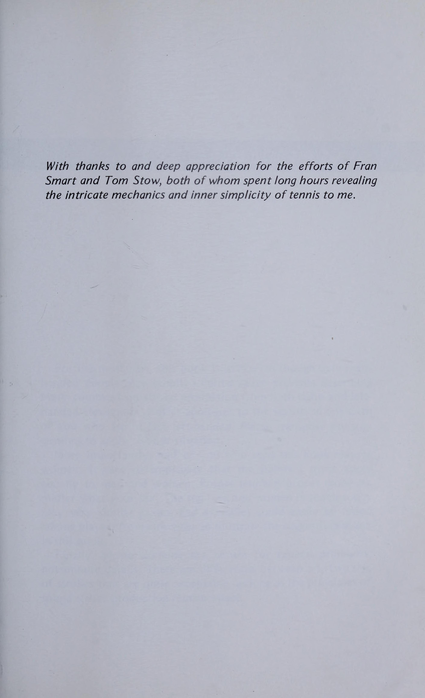
Nếu bạn muốn giành chiến thắng trong môn quần vợt, đánh đơn hoặc đánh đôi, bạn phải phát triển cảm giác này trong suốt trận đấu của mình. Bằng cách này, bạn
sẽ có thể vượt qua những thay đổi của động lực mà không tuyệt vọng và giành được chiến thắng cuối cùng. Bạn phải học những nét nào cần
bị ảnh hưởng nặng nề bởi người chiến thắng và cần được kiểm soát cẩn thận; bạn phải biết điểm nào có giá trị nhất,
đòi hỏi nỗ lực cao nhất của bạn trong mỗi trận đấu; bạn phải học cách nhận biết những trò chơi nào bạn phải có; và bạn phải tích lũy kinh nghiệm trong việc nhận biết khi nào nên đấu không cần hiệp để giữ một hiệp và khi nào nên buông một hiệp để chiến đấu mạnh mẽ hơn trong hiệp tiếp theo. Tất cả những điều này đều liên quan đến nhịp điệu, ý thức phải làm gì khi nào và mặc dù bạn có thể nhận thức được những khía cạnh này của quần vợt thông qua việc được chỉ bảo, nhưng bạn sẽ tiếp thu kiến thức này chỉ thông qua việc chơi liên tục và thông qua việc suy nghĩ về lần chơi đó. "'Học hỏi từ những sai lầm của bạn" là một câu nói sáo rỗng, nhưng điều đó không làm giảm đi tính chân thực của cụm từ này.
Một điểm quần vợt rất giống một điệu nhảy kéo dài giữa bạn và đối thủ, hoặc một cuộc chiến phức tạp với những cú đánh xuyên qua quả bóng tennis đang chuyển động. Bạn có một việc cần phải làm mỗi khi điểm đang diễn ra: chuẩn bị nhận hoặc thực hiện cú đánh, đánh cú đánh đó, di chuyển vào vị trí thích hợp để chờ cú đánh tiếp theo, v.v. Và nếu bạn muốn giành được điểm, bạn phải làm tất cả những điều này tốt hơn đối thủ của mình.
Khi bạn tích lũy được kinh nghiệm, bạn sẽ ngày càng nhận thức rõ hơn về hình dạng của sân, động lực của trận đấu và những cú đánh nào bạn có thể (và không thể) đánh một cách an toàn. Ví dụ: một cú đánh cận biên có thể mang lại chiến thắng tuyệt vời, trừ khi đối thủ của bạn thực hiện được. Nếu anh ta làm vậy, anh ta có cơ hội tốt hơn nhiều để tung cú vô-lê thắng lợi Đánh chéo sân (cross-court) vào lưới bạn so với khi bạn thực hiện cú đánh Đánh chéo sân (cross-court) đầu tiên của mình. Nếu bạn đánh theo đường chéo, anh ta sẽ buộc phải đánh song song hơn nhiều với đường biên đối diện của bạn nếu anh ta chọn đánh theo hướng đó. Bạn phải di chuyển một khoảng cách ngắn hơn để đạt được cú đánh tốt nhất có thể của đối thủ nếu bạn buộc anh ta phải tung cú vô-lê từ đường Đánh chéo sân (cross-court), do đó cú đánh đó sẽ an toàn hơn. Bằng mọi cách hãy đánh trúng người chiến thắng, nhưng hãy nhớ rằng nếu bạn không đánh được người chiến thắng thì bạn đang gặp rắc rối.
Trong quá trình chơi, bạn cũng sẽ xác định được cú đánh tệ nhất có thể mà bạn có thể thực hiện, ngoài việc không đưa được bóng vào sân, và bạn sẽ cố gắng rất nhiều để tránh cú đánh đó. Cú đánh tồi tệ nhất có thể xảy ra này là cú đánh trên mặt đất mà bạn đánh từ góc rộng này hay bên kia từ sân sau về phía cú đánh của đối thủ ở cùng phía. Nói cách khác, bạn đánh từ góc rộng bên thuận tay của bạn về phía trái tay của anh ta ở giữa sân, hoặc từ góc rộng bên trái tay của bạn về phía thuận tay của anh ta ở giữa sân. Bất cứ khi nào bạn thực hiện cú đánh này, bạn đang cầu xin đối thủ của mình đánh người chiến thắng Đánh chéo sân (cross-court):
Cú đánh tồi tệ nhất có thể xảy ra là đánh từ xa trên sân của bạn về phía giữa sân đối phương (sơ đồ bên trái). Điều này giúp anh ta dễ dàng vượt qua
người chiến thắng sân đấu. Cách thay thế tốt nhất là đánh mạnh chéo bàn. Ngay cả khi đối thủ của bạn ở trên lưới (sơ đồ bên phải) và nhận được cú đánh của bạn, bạn vẫn có cơ hội tốt hơn
cơ hội từ đường Đánh chéo sân (cross-court). họ không cần phải di chuyển, họ có nhiều thời gian để suy nghĩ về cú đánh của mình và chuẩn bị thực hiện, sân chéo là cách dễ nhất
cú đánh có sẵn và bạn có con đường xa nhất có thể để lấy bóng. Bất cứ khi nào bạn buộc phải chạy rộng, bạn phải
đánh một trong hai người gần thắng ở cuối sân, hoặc tốt hơn là, cố gắng hết sức để đánh cú đánh tiếp theo của bạn ở đường chéo. Cú đánh này
vô hiệu hóa Đối thủ của bạn nhiều nhất có thể: bạn có khoảng cách di chuyển ngắn hơn nhiều để sẵn sàng cho quả bóng tiếp theo của họ,
và bạn có thể dễ dàng tiếp cận bất cứ thứ gì chúng đánh trúng. Điều này cho phép bạn quay lại vấn đề chính. Bạn có bao giờ để ý rằng, bất cứ khi nào một người chơi giỏi đấu với một người chơi kém hơn, sân của người chơi kém hơn đột nhiên dường như lớn hơn nhiều,
tay vợt kém hơn buộc phải chạy từ góc này sang góc khác? Xem lại sẽ thấy người chơi có khả năng đánh kém hơn
điều mà tôi gọi là "cú đánh tệ nhất có thể" hết lần này đến lần khác. Đánh bóng chéo bàn sau một pha chạy, và bạn sẽ không
trước mắt phải chạy thật nhiều. Nếu muốn thành công trong môn quần vợt, bạn phải tuân theo một đường lối hành động hai đầu: bạn không được coi Đối thủ của mình là một con quái vật và bạn phải luôn làm những điều tồi tệ nhất có thể xảy ra với đối thủ đó. Đứng về mặt tiêu cực trước tiên, bạn không được biến đối thủ thành một con quái vật. Bạn không được giao bóng về phía thuận tay của họ, bạn không được đánh ngược về phía giữa khi bạn đang chạy rộng, bạn không được ném những cú Cú lốp bóng (lob) ngắn. Bạn không được để những người chơi ở sân sau ở lại sân sau hoặc những người yêu thích cắm trại trên lưới, bạn không được lùi bước trước những cú giao bóng chậm, nảy cao và trên hết, bạn không được khuyến khích đối thủ bằng cách tỏ ra nóng nảy hoặc chán nản. Tóm lại, bạn không được giúp đối thủ giành chiến thắng bằng bất kỳ cách nào; bạn không được phá hoại bản thân để thua lỗ. Tất cả những điều này dường như hoàn toàn hiển nhiên, nhưng 9 trên 10 trận đấu các tay vợt đều bỏ qua lời khuyên này. Cách chữa khỏi việc biến đối thủ của bạn thành quái vật là suy nghĩ trong suốt trận đấu. Giữa các điểm mà bạn sẽ chơi tự động, bạn phải suy nghĩ về những gì đang diễn ra, cách bạn chơi, tại sao đối thủ của bạn lại thực hiện những cú đánh tuyệt vời đó và loại cú đánh nào bạn đã đánh trước đó để gài bẫy đối thủ. Thông thường, người chơi đắm mình quá nhiều vào các trận đấu của mình đến mức họ không biết chuyện gì đang xảy ra và hàng giờ sau đó có thể thức dậy và tự hỏi '''Tại sao trên thế giới lại không tôi Cú lốp bóng (lob) một lần để giữ anh ta khỏi lưới?" "'Này, có tôi đánh tất cả các cú giao bóng của tôi về phía thuận tay của anh ta?" hoặc điều gì đó khủng khiếp không kém.
Mặt tích cực của tình hình cạnh tranh trong quần vợt có thể được tóm tắt bằng cách nói rằng bạn phải luôn làm những điều tồi tệ nhất có thể xảy ra với đối thủ mỗi khi bạn đánh bóng. Và chỉ cần đánh bóng trở lại phần sân đối phương cũng không phải là một khởi đầu tồi. Nếu bạn có thể đánh bóng sâu tới trái tay của anh ta thì điều đó sẽ còn kinh khủng hơn. Và sau đó thực hiện theo điều đó bằng một Cú Cú bỏ nhỏ (drop shot) (drop shot), sau đó là một cú Cú lốp bóng (lob), và sau đó có lẽ là một cú công bóng Xoáy lên sang phía bên kia, và bạn sẽ thực sự khiến đối thủ của mình cảm thấy khủng khiếp.
Và đó chính là ý tưởng. Ngay từ quả bóng đầu tiên bạn đánh trong một trận đấu, bạn đã muốn làm điều gì đó để khiến đối thủ ước gì bạn sẽ dừng lại. (Nhưng hãy nhớ, đánh bóng với tốc độ 200 dặm một giờ - nhưng ra ngoài - không phải là điều khiến đối thủ khó chịu.) Bạn có nhớ lần cuối cùng bạn nhìn thấy một tay vợt giỏi thi đấu với một đối thủ kém hơn không? Bạn có thể nhận thấy mỗi lần một tay vợt giỏi đánh bóng, anh ấy đều làm điều gì đó với nó. Người chơi giỏi hơn không bao giờ “chỉ nhắm tới sân”. Thay vào đó, anh ta
thực hiện khả năng kiểm soát bóng, đạt được thông qua luyện tập và chơi không ngừng nghỉ, để thực hiện những cú đánh buộc đối thủ của anh ta phải nỗ lực nhiều hơn
để trả bóng. Trong bất kỳ trận đấu nào, người chơi giỏi hơn chính xác là người giỏi hơn bởi vì anh ta có thể tạo ra nhiều khó khăn hơn cho đối thủ của mình.
nhiều hơn đối thủ có thể tạo ra cho anh ta. Quần vợt rất giống với trò chơi cờ vua. Trong cả hai trường hợp, bạn phải suy nghĩ về vị trí và hình dạng của khu vực chơi,
bạn phải thực hiện các cuộc tấn công được chuẩn bị kỹ lưỡng, bạn phải có cái nhìn tổng thể về toàn bộ trò chơi đang diễn ra như thế nào và bạn phải suy nghĩ để đánh bại các kế hoạch đang thay đổi của đối thủ.
thành phần. Và trong cả hai trò chơi, việc thực hiện một nước đi hoặc đánh một cú đánh không mang lại lợi ích gì cho bạn là hoàn toàn tai hại, điều đó mời gọi bạn
đối thủ phải tự mình tấn công thay vì buộc phải phòng thủ trước bạn. Một cách hay để lập kế hoạch tấn công nói chung cho bản thân mà không cần nhìn thấy bất kỳ đối thủ cụ thể nào là nghĩ đến từng cú đánh.
bạn thích nhận đòn, và sau đó quyết tâm không bao giờ đánh những cú đánh như vậy vào Đối thủ của mình, hãy nghĩ đến mọi cú đánh mà bạn ghét nhận, và
chế biến thật nhiều thứ đó. Có một kế hoạch nào đó khi đi chơi hầu như luôn tốt hơn là không có kế hoạch gì cả,
ngay cả khi kế hoạch của bạn sai. Một chiến lược sẽ cung cấp cho cơ thể bạn một lộ trình hành động rõ ràng để tuân theo, cũng như cải thiện sự chú ý của bạn vào trận đấu. Kết quả là trò chơi của bạn thường sẽ sắc nét hơn nhiều.
Khi đã vào sân, bạn phải lập kế hoạch chiến đấu cho phù hợp với đối thủ cụ thể của mình. Ví dụ, anh ta có thể thuận tay trái. Để đánh vào phía trái tay của người chơi này, bạn sẽ phải đánh về phía trái tay của anh ta.
góc thuận tay. Bạn sẽ phải giao bóng rộng về phía thuận tay, v.v. Ngay cả với người thuận tay phải, bạn sẽ muốn kiểm tra từng lần chơi-
er bạn sẽ gặp phải, cả khi anh ấy đang chơi với những người chơi khác và trong quá trình khởi động của chính bạn. Lúc này bạn nên cố gắng
trả lời nhiều câu hỏi khác nhau: Đối thủ của bạn có chạy tốt từ bên này sang bên kia không? Lên và quay lại? Nếu không thì buộc họ phải làm những gì họ
yếu trong việc làm. Cú vô-lê của họ có xuyên thấu hay không? Nếu ngắn, hãy đưa họ vào lưới, tung cho họ nhiều cú vô-lê.
a eee, — đánh và chuyền hoặc ném chúng ra khỏi những câu trả lời ngắn của chúng. Có phải một trong hai cú chạm đất của họ bị lỗi không? Nếu vậy, hãy thực hiện cú đánh đó và Cú lốp bóng (lob) vào lưới để họ phải lùi lại và nhận đòn.
đập thình thịch. Họ có rất nhất quán không? Phá vỡ nhịp điệu của chúng bằng cách thay đổi độ dài, hướng và tốc độ bắn của bạn. Người ta có thể tiếp tục với những câu hỏi này, nhưng ý tưởng đằng sau chúng là nghĩ về đối thủ của bạn trong quá trình khởi động và thi đấu, đồng thời tìm ra những gì bạn có thể làm với anh ta để có hiệu quả.
Mục tiêu của mọi suy nghĩ của bạn - và mọi cách chơi của bạn - là tìm ra phương tiện khuyến khích đối thủ của bạn bỏ lỡ trong khi bản thân bạn không làm như vậy. Cho đến nay, số điểm trong môn quần vợt bị mất do một người đánh trượt nhiều hơn là số điểm giành được khi ai đó đánh trúng một người chiến thắng xuất sắc. Thật không may, phương pháp đó sẽ không mang lại nhiều thành công một khi bạn đã tiến lên một vài bậc. Đối đầu với những người chơi giỏi hơn, bạn không được bỏ lỡ. Nhưng bạn cũng phải tung ra một đòn tấn công đủ mạnh để đối thủ của bạn không thể chiếm được điểm bằng cú tấn công của chính họ. Để giành chiến thắng, bạn phải học cách tấn công đối thủ của mình, thông qua những cú đánh mạnh, ở khoảng cách xa, sâu ngay vào đối thủ hoặc rất gần lưới, và nếu đối thủ có thể xử lý được những cú đánh này thì bạn phải tấn công thêm. Đừng bỏ lỡ, nhưng ngay khi bạn quyết định "chơi an toàn" hoặc "bảo vệ Điểm lợi thế (advantage) dẫn trước", bạn sẽ sớm dẫn đến thua một hiệp hoặc cả trận đấu. Bạn phải học cách tấn công sau những cú đánh mạnh mẽ và nhất quán. Nếu các cú đánh của bạn có một trong những đặc điểm này chứ không phải đặc điểm kia, thì hãy quay lại sân tập.
Đòn tấn công của bạn phải cân bằng, kết hợp tính nhất quán, độ chính xác và thậm chí cả những cú chạm tinh tế với sức mạnh thô. Một cú sút đúng lúc hoặc một cú Cú lốp bóng (lob) chính xác cũng có thể có sức tàn phá tương đương với một cú bắt vô-lê sắc bén. Mục tiêu lý tưởng để phấn đấu là khả năng đánh bóng mạnh và chính xác đến mức không đối thủ nào có thể đánh trả được. Nhưng trước khi đạt được trạng thái lý tưởng đó, ít nhất bạn sẽ phải vượt qua các cấp độ biểu diễn bình thường hơn, nơi bạn sẽ buộc phải đối phó với đối thủ thay vì chỉ đơn giản là đánh bóng qua hoặc xuyên qua anh ta. Vì lý do này, bạn phải cố gắng nắm vững mọi khía cạnh của trò chơi để giật, giật và kéo đối thủ từ điểm này sang điểm khác, từ sai lầm này sang sai lầm khác.
Cuộc tấn công của bạn trong quần vợt có thể có nhiều hình thức. Cũng giống như cách chơi quần vợt hiệu quả gần như là một hình mẫu của nghịch lý Thiền - bạn phải cố gắng như quỷ, nhưng luôn luôn thư giãn - bạn cũng phải như vậy.
bản chất đòn tấn công của bạn vẫn thoải mái và linh hoạt. Về mặt thể chất, bạn không thể chơi hiệu quả bằng cách siết chặt mọi cơ bắp trên cơ thể hoặc bằng cách đánh mọi quả bóng với toàn bộ sức mạnh. Và về mặt tinh thần, bạn cũng phải luôn thoải mái và linh hoạt, có thể thay đổi
kế hoạch trò chơi thay vì nắm bắt trên một hệ thống cho dù điều gì xảy ra. Tất nhiên, nếu hệ thống mà bạn nắm bắt mang lại chiến thắng cho bạn và tiếp tục giành chiến thắng, hãy kiên trì với nó. Nhưng nếu bạn bắt đầu thua cuộc, bạn
phải từ bỏ hệ thống tấn công này để chuyển sang hệ thống tấn công khác, sẵn sàng làm bất cứ điều gì cần thiết — trong giới hạn của môn quần vợt thích hợp — để
giành lấy chiến thắng từ đối thủ của bạn. Bạn phải chơi đủ để hiểu được cú đánh nào phù hợp với tình huống nào. Nếu bạn có thể giành được một điểm bằng cú đánh chạm đất ở một tốc độ nhất định, hãy sử dụng tốc độ đó và đừng cố đánh nó
khó hơn mức cần thiết. Về phía trên, hãy đánh mạnh đến mức bạn cần để giành điểm, không khó hơn để gây ấn tượng với phòng trưng bày. Điều đó cũng làm tăng nguy cơ bạn bị mất tích. Giữ của bạn
những cú đánh dự bị khó nhất, khi bạn thực sự cần chúng và bằng cách đó gây bất ngờ cho đối thủ của bạn bằng chúng. Bất kỳ người chiến thắng nào theo định nghĩa đều là cú đánh chính xác trong tình huống đó, nhưng thường là cú đánh thành công.
cate soft shot là một cú đánh gây phẫn nộ hơn — và an toàn hơn — so với cú đánh nổ tung. (Để minh họa ý tưởng sử dụng cảnh quay thích hợp này, tôi không thể
giúp đỡ nhưng nghĩ đến một trận đấu quan trọng tôi thấy trong các trường liên trường Hoa Kỳ năm 1965. Một tay vợt, với điểm trận đấu với anh ta, chạy tìm bóng, đánh một cú Cú lốp bóng (lob) ngắn, sau đó trượt chân, ngã và trượt dưới một đường bóng.
băng ghế ở bên cạnh sân. Đối thủ của anh ta đang đứng rất gần lưới, đỡ bóng hết sức, đánh bóng mạnh hết sức.
có thể ở sân mở, sút trượt một inch và tiếp tục thua cả trận.) Trong một điểm quần vợt, việc nói về ''cú đánh thích hợp'' chỉ là một-
cách khác để nói rằng bạn phải phát triển "nhịp điệu". Bạn phải hiểu được cách đánh phù hợp cho mọi tình huống và sử dụng nó, từ chối bất kỳ kiểu đánh nào khác hoặc tốc độ không phù hợp với tình huống. Thông thường, mọi người sẽ đánh hai hoặc ba quả bóng lên và
xuống giữa sân trong một thời điểm, sau đó bất ngờ cú đập bóng smash đi, cố gắng giành chiến thắng. Họ bỏ lỡ, tất nhiên,
bởi vì họ đã không tuân theo nhịp điệu phù hợp mà mọi điểm quần vợt yêu cầu. Giành được một điểm quần vợt là một hành động tương tự như việc câu được một con cá. Chỉ ở đây, đường đưa con mồi của bạn đến là đường được tạo nên từ thời gian và phần thưởng của bạn chính là điểm. Nếu bạn chơi tốt, tận dụng toàn bộ diện tích sân và làm gì đó với quả bóng mỗi khi bạn đánh nó, bạn sẽ loại bỏ được thời gian của đối thủ từng chút một. Cuối cùng, anh ta không thể chuẩn bị chính xác để đánh cú đánh tiếp theo một cách chính xác - và bạn bỏ đi kết quả - nếu không anh ta sẽ không thể bắn trúng cú đánh của bạn.
Trong quần vợt, mọi thứ trong quá trình diễn ra một điểm sẽ có xu hướng có lợi cho bạn hoặc có hại cho bạn. Nghĩa là, nếu bạn giao bóng sâu thay vì ngắn về phía trái tay của đối thủ, bạn sẽ cho mình thêm một chút thời gian để di chuyển về phía lưới, đồng thời yêu cầu đối thủ đối phó với một cú đánh khó hơn về phía (có thể) yếu hơn của anh ta. Sau khi di chuyển xa hơn một chút về phía lưới, bạn sẽ có thể tung cú vô-lê đáp trả yếu hơn của anh ta lên cao hơn một chút, gần lưới hơn một chút. Điều này cho phép bạn đánh tốt hơn, góc cạnh hơn so với khi bạn đánh từ xa hơn và thấp hơn. Và một cú đánh như vậy sẽ rơi xa đối thủ của bạn hơn, di chuyển ngang qua đối thủ với tốc độ nhanh hơn và khiến đối thủ có ít thời gian chuẩn bị hơn. Anh ta sẽ phải chạy khó khăn hơn trên một khoảng cách xa hơn để đạt được cú đánh của bạn, và có thể sẽ không đánh được một cú đánh tốt như khi anh ta thực hiện một cú đánh gần hơn. Điều này giúp bạn xử lý quả Bóng ngon ăn (sitter) dàng hơn và khi đó bạn có thể đánh một cú đánh khiến anh ta mất hoàn toàn thời gian: anh ta sẽ không thể bắt được nó và bạn đã cuốn con cá của mình vào.
Áp lực trong quần vợt là điều bạn áp dụng lên đối thủ của mình khi, hết điểm này đến điểm khác, bạn buộc anh ta phải đối phó với một cú đánh khó mỗi khi bạn đánh bóng. Để tạo ra áp lực, bạn không thể chơi hết mình và tốt ở một số điểm. Bạn phải chơi hết mình và giỏi tất cả chúng. Làm đủ điều này, chơi tất cả các điểm một cách chính xác và đủ chăm chỉ, và bạn sẽ phát hiện ra rằng hầu hết mọi Đối thủ mà bạn đối mặt cuối cùng sẽ bị bẻ gãy. Áp lực có thể tạo ra cho đối thủ không chỉ thông qua mức độ nghiêm trọng của cuộc tấn công mà còn thông qua cách cư xử của bạn: nếu bạn chỉ tập trung vào công việc, luôn luôn cư xử như một người chiến thắng và không bao giờ tức giận hoặc làm sao lãng công việc trước mắt của bạn, thì đối thủ của bạn sẽ không bao giờ nhìn thấy bất kỳ dấu hiệu hy vọng nào cho thấy bạn có thể đang trên bờ vực rạn nứt. Và anh ấy sẽ tiến gần hơn đến việc tự mình làm điều đó.
Áp lực là thứ tích lũy. Nó sẽ cộng dồn qua một trận đấu, khiến đối thủ bị hạ gục, thường biến người thắng set đầu tiên với tỷ số 6-0 thành người thua set thứ ba. Trên hết, bạn phải học
không bao giờ bỏ cuộc Trong một trận đấu, cho dù bạn chơi kém đến đâu. Hết lần này đến lần khác, đặc biệt là ở lứa tuổi thiếu niên, bạn sẽ
thấy người chơi quyết định rằng họ không chơi theo mong đợi cá nhân của họ, và sau đó rõ ràng là "tăng" một trận đấu, trong khi thực tế là
họ có thể giành chiến thắng nếu họ cố gắng hết sức và tạo ra nhiều áp lực nhất có thể mặc dù chơi kém hơn khả năng tốt nhất của họ.
Chấp nhận thất bại trước khi đối thủ ép buộc bạn là một điều ngu ngốc. Đó là sự xúc phạm đối với đối thủ của bạn, người đáng lẽ phải làm vậy
giành được chiến thắng. Nhưng quan trọng hơn, nó xúc phạm đến môn quần vợt mà bạn đã dày công tạo ra. Bạn sẽ có những ngày nghỉ,
nhưng điều đó không có nghĩa là họ cũng phải mất nhiều ngày. Đừng lãng phí một trận đấu chỉ vì bạn cho rằng mình chơi kém. Hãy kiên trì, cho trò chơi của bạn một cơ hội, đặt càng nhiều càng tốt
gây áp lực lên đối thủ của bạn nhiều nhất có thể và cố gắng xem liệu lối chơi kém hoàn hảo của bạn có còn hiệu quả hay không
đủ tốt để giành chiến thắng. Thông thường, bạn sẽ giành chiến thắng nhờ nỗ lực như vậy, nhưng bạn sẽ không bao giờ phát hiện ra điều này trừ khi bạn chơi hết sức có thể, bất kể trò chơi của bạn đang diễn ra như thế nào, cho đến điểm cuối cùng.
Nếu Đối thủ của bạn thắng trong điều kiện như vậy, khi bạn đã cố gắng hết sức có thể thì không sao cả. Chúc mừng anh ấy. Bạn biết rằng bạn đã cố gắng hết sức, bạn hài lòng khi biết rằng bạn đã không bỏ cuộc trong những điều kiện khó khăn,
trò chơi của bạn mạnh mẽ hơn để rèn luyện trước nghịch cảnh và lần sau bạn sẽ chơi tốt hơn. Vì Chúa, đừng chơi
thật tệ và nhường cho đối thủ của bạn trận đấu trên một đĩa. Khiến anh ta thắng trận, khiến anh ta chứng minh rằng anh ta có thể đánh bại trò chơi của bạn ngay cả trong một ngày nghỉ. Có thể đối thủ của bạn
không thể đánh bại bạn, và rằng anh ta sẽ gục ngã trước áp lực mà bạn tạo ra chỉ bằng cách không bỏ cuộc. Về vấn đề đó, bằng cách cố gắng như
cố gắng hết sức có thể, trò chơi của bạn sẽ nhiều lần trở lại tập trung và bắt đầu hoạt động bình thường trở lại, giúp việc giành chiến thắng trở nên dễ dàng hơn nhiều. Nhưng điều này sẽ không bao giờ xảy ra nếu bạn bỏ cuộc trước khi cuộc chơi Kết thúc cú đánh. Ai thua và ai thắng trong quần vợt
trận đấu không bao giờ được quyết định chắc chắn cho đến khi điểm cuối cùng được chơi và Kết thúc cú đánh. Thái độ có thể quyết định xem một tay vợt cụ thể nào sẽ trở thành người thắng hay kẻ thua trong môn quần vợt. Khoảnh khắc những suy nghĩ tiêu cực len lỏi vào tâm trí bạn, ngay cả ở những điểm cụ thể — ''Chúa ơi, tôi hy vọng tôi đừng có lỗi kép," "'tôi hy vọng tôi đừng bỏ lỡ lần trở lại này" — bạn đã tiến một khoảng cách xa đến sự mất mát mà bạn muốn tránh. Điều đó giống như thể tâm trí đang chơi đùa của bạn, chỉ nghe một nửa ý thức của bạn, nhặt được những từ ''lỗi kép'' hoặc '''bỏ lỡ lần trở lại này''," nhận lệnh của chúng và tạo ra sự kiện kinh hoàng.
Mặt khác, những suy nghĩ tích cực như "Lần giao bóng đầu tiên này sẽ diễn ra" hoặc "Tôi sẽ thực hiện cú trả bóng này ở cuối đường biên bất kể anh ta đặt bóng ở đâu" có thể mang lại điều kỳ diệu cho trò chơi quần vợt của bạn. Hình thức suy nghĩ tiêu cực trầm trọng nhất đối với một tay vợt chuyên nghiệp hoặc đối với bất kỳ ai đang xem ai đó thi đấu mà họ muốn thi đấu tốt, là tư thế cơ thể tiêu cực, một căn bệnh thường gặp ở lứa tuổi thiếu niên. Vai rũ xuống, đầu cúi xuống, đầu vợt đập xuống sân khi một đấu thủ quay trở lại vạch cuối sân sau khi mất một điểm, tất cả những điều này đều giúp đối thủ của bạn chơi tốt gần như tám quân át giao bóng liên tiếp. Bạn ở trên sân để thi đấu chứ không phải để thực hiện hành động tự phá hoại. Giả vờ cỗ xe thẳng đứng, bước nhanh về phía sau để sẵn sàng giành điểm tiếp theo nếu cần. Bạn có thể thấy mình tích cực hơn nhiều về thời điểm sắp tới. Như một lợi ích bổ sung, bạn đã tăng áp lực lên đối thủ của mình, bởi vì anh ta sẽ bắt đầu lo lắng rằng bạn không khó chịu khi anh ta giành được một điểm. Mục tiêu của bạn mỗi khi bước vào sân quần vợt là chơi thứ quần vợt tốt nhất có thể, chứ không phải để tạo ra một màn trình diễn ngẫu hứng từ một bi kịch Hy Lạp.
Những biến thể nhỏ trong kỹ năng giúp phân biệt hầu hết người chiến thắng với hầu hết những người thua cuộc và tách biệt những người chơi chuyên nghiệp trong chuyến lưu diễn với những người chơi ngay dưới họ. Sự khác biệt thực tế có thể nhỏ, nhưng chúng có thể thể hiện sự khác biệt trong nhiều năm đào tạo và cống hiến, cũng như sự khác biệt mang tính quyết định về điểm số giữa những người chơi giỏi hơn và những người chơi kém hơn. Có nhiều cấp độ quần vợt và mỗi người chơi có tham vọng phải hoàn thành bài tập về nhà của mình một cách trung thực ở từng cấp độ đó nếu anh ta muốn tốt nghiệp lên cấp độ tiếp theo. Và không có tay vợt nào tốt nghiệp mà không có Sự Sự tự tin và thái độ tích cực.
Tuy nhiên, điều rất quan trọng là bạn không cố gắng nâng cao nhiều cấp độ chơi khi thấy mình phải đối đầu với một đối thủ được coi là giỏi hơn bạn. Nhiều người chơi cố gắng tìm kiếm những người chiến thắng xuất sắc trong những trường hợp này đến mức họ bắn trượt hết lượt này đến lượt khác,
và không bao giờ biết được đối thủ của họ thực sự giỏi đến mức nào. Tất nhiên, bạn phải cố gắng tận dụng tối đa trò chơi của mình, nhưng
hãy nhớ rằng bạn sẽ không Giao bóng / Cú giao bóng như một Thợ thuộc da hoặc trả giao bóng (return) như một Connors cho đến khi bạn đã bỏ ra nhiều năm nỗ lực mà họ
có. Cho đến thời điểm đó, chỉ cần giao bóng, trả bóng và chơi theo cách bạn có thể, đồng thời yêu cầu đối thủ chứng minh rằng anh ta có thể đối phó với mức độ chơi đó - mức độ tốt nhất mà bạn thực sự có thể tạo ra - thay vì
hơn bất kỳ cấp độ chơi nào cao hơn nhiều mà bạn không có khả năng duy trì. Tôi Một khái niệm quan trọng cần hiểu — bất kể bạn là ai
cấp độ thi đấu — là cấp độ '"'"động lượng" trong một trận đấu quần vợt. Hết lần này đến lần khác, trong sự nghiệp của mỗi người, sẽ có những trận đấu mà
bạn thắng set đầu tiên một cách dễ dàng, chỉ để thua set thứ hai như thể bạn chưa từng cầm vợt trước đây. Thủ phạm ở đây không phải là bạn
chơi, nhưng bạn không có khả năng giữ đà. Khi bạn đã thống trị một ván đấu trước một người chơi có khả năng tương đương và thắng nó một cách dễ dàng, bạn phải nhận ra rằng mình đang đứng vững.
tại điểm yếu tiềm ẩn. Bạn đã đạt được mục tiêu mà bạn hằng phấn đấu và thật quá dễ dàng để tâm trí bạn nói với một tiếng thở dài nhẹ nhõm, 'Ồ, cuối cùng tôi đã đạt được nó, thế là xong.'
Với những lời này, chính bạn là người có thể hoàn thành! Đối thủ của bạn chẳng thu được gì - anh ta sắp bị loại khỏi trận đấu hoàn toàn - trong khi bạn đã đạt được mọi thứ, cũng như
liên quan đến bộ này. Vì vậy, đối thủ của bạn sẽ bắt đầu chiến đấu bằng tất cả những gì anh ta có để sống sót trong hiệp tiếp theo, lúc
ngay lúc bạn bắt đầu bỏ cuộc. Kết quả thường là một trong những pha đảo ngược kỳ lạ 6-0, 0-6. Tuy nhiên, nếu bạn nhận thức được tất cả những điều này có thể xảy ra như thế nào, bạn sẽ phải rèn luyện bản thân để chiến đấu trong vài game đầu tiên khi bắt đầu bất kỳ set thứ hai nào sau khi bạn đã thắng set đầu tiên, như thể đó là bạn.
người đã bị ngã. Bằng cách này, bạn tạo ra một rào cản vững chắc cho sự tiến bộ của đối thủ hơn bao giờ hết. Nếu đối thủ của bạn thắng set thứ hai thì bây giờ là của anh ta
chuyển sang thời điểm có thể gặp rắc rối: Bây giờ anh ấy đã đạt được mục tiêu, set thứ hai, và bây giờ tâm trí A/s có thể phá hoại
anh với suy nghĩ thành công. Sẽ dễ dàng hơn để tránh những khó khăn này bằng cách nhấn mạnh rằng bạn chơi thứ quần vợt tốt nhất, chắc chắn nhất, nhất quán nhất và không khoan nhượng trong hai hoặc ba game mở màn đầu tiên của set thứ hai, sau khi bạn thắng set đầu tiên, để đảm bảo rằng bạn cũng thắng set thứ hai. Nhưng nếu hiệp thứ hai trôi đi, hãy tỉnh táo và nhận ra rằng động lượng sẽ quay trở lại với bạn nếu bạn ép buộc nó và thực hiện phản công khi bắt đầu hiệp thứ ba. Thường thì động lực sẽ quay trở lại và bạn sẽ chuộc lại sai sót của mình trong set thứ hai bằng cách vẫn giành chiến thắng ở set thứ ba, mang tính quyết định.
Một cách khác để nói tất cả những điều này là: đừng bao giờ để một đối thủ bị đánh bại quay trở lại trận đấu do sai lầm làm chậm đòn tấn công của bạn. Tại sao có nguy cơ mất? Và hãy nhận ra rằng bạn có thể giảm bớt đòn tấn công của mình trước khi trận đấu bắt đầu, bằng cách đánh giá thấp đối thủ hoặc bằng cách ngu ngốc lắng nghe những người tử tế nói với bạn "Ồ, bạn sẽ không gặp vấn đề gì với người chơi đó, bạn chắc chắn sẽ thắng." tôi Dù bạn làm gì, hãy luôn nhớ rằng bất kỳ đối thủ nào cũng luôn có thể quay lại trận đấu cho đến khi ghi điểm cuối cùng.
Bạn cũng phải biết rằng ở những điểm quan trọng, bạn tuyệt đối không được hy vọng đối thủ sẽ thua, bạn phải kiên quyết giành chiến thắng cho chính mình. Nếu bạn không cố tình tấn công vào những điểm quan trọng - chẳng hạn như Giao bóng vào người và vào lưới - đối thủ của bạn có thể không thua bạn và bạn có thể không bao giờ thắng. (Hai lần, trong set thứ hai và thứ ba của một trận đấu với đội Davis Cup đôi của Mexico vào thời điểm đó, một đội mà chúng tôi rất muốn đánh bại, đối tác đánh đôi của tôi đã giao bóng cho trận đấu. Mỗi lần, trước khi giao bóng, anh ấy đều thông báo với tôi, "Chà, áp lực đè lên họ." Áp lực đè nặng lên họ, tôi đồng ý. Chúng tôi chơi ngập ngừng, và họ đánh hỏng mọi quả bóng.
Áp lực đè nặng lên họ và họ đã đáp lại điều đó như một tinh thần đồng đội tốt. Bạn phải giành được những Điểm quan trọng (big point) đó.) Bạn phải rèn luyện bản thân để có mục tiêu là thắng tất cả các hiệp của một trận đấu, chứ không chỉ thắng “một hiệp”, hay thậm chí tệ hơn, chỉ là mong muốn “thể hiện tốt”. Trừ khi bạn thực sự quyết định rằng mình muốn thắng, trừ khi bạn nhất quyết rằng mình sẽ thắng, nếu không bạn có thể sẽ không thắng. Mặt khác, nếu bạn quyết định - và khiến cơ thể, tâm trí và trò chơi quần vợt của bạn thực sự hiểu rằng bạn nhất quyết - giành được tất cả các điểm, tất cả các trận đấu và tất cả các set bạn chơi, thì bạn sẽ có cơ hội rất tốt để thắng tất cả các trận đấu mà bạn tham gia.
Tại Sao Chúng Ta Chơi Quần Vợt, Vượt Ngưỡng Bản Thân & Về Tác Giả
Chapter 16: Why We Play & About Eugene Cantin
Tại sao chúng tôi chơi Nếu bạn đã đọc đến đây — thông qua những bí ẩn của Xoáy lên, sự phức tạp của cú giao bóng và cú vô-lê, và các gợi ý khác nhau-
câu chuyện tôi đã làm để cải thiện trò chơi của bạn - rõ ràng là bạn quan tâm đến việc theo đuổi sự xuất sắc trong môn quần vợt. Điều gì đó về Trò chơi
đã thu hút sự chú ý của bạn và vượt xa giai đoạn ban đầu là mua một cây vợt và một số quả bóng cũng như xem nội dung của môn thể thao này. Bạn đã phát hiện ra rằng điều đó không hề dễ dàng
như vẻ ngoài của nó, nhưng có điều gì đó khiến bạn liên quan. Mặc dù bạn chơi quần vợt với một đối thủ trên lưới, nhưng bạn cũng đang vướng vào một cuộc đối đầu rất căng thẳng với chính mình. Đầu tiên, bạn phải rèn luyện bản thân để chơi, và sau đó bạn
phải giành quyền kiểm soát thể chất và tinh thần của mình để chơi thứ quần vợt tốt nhất có thể. Pogo đã nói trong câu nói nổi tiếng của mình: ''Chúng ta đã gặp kẻ thù và
anh ấy là chúng tôi.'' Không nơi nào điều này đúng hơn trong quần vợt. Nhưng thật vui mừng nếu bạn có thể gặp được kẻ thù này và vượt qua được hắn. Tuyệt vời làm sao-
làm điều đó là để khám phá ra rằng bạn có thể tập trung cho cả trận đấu, hoặc bạn có thể nỗ lực hết sức mình một cách thành công; rằng bạn có thể tránh tức giận, căng thẳng hoặc sợ hãi ở những điểm quan trọng, thay vào đó hãy thực sự phản ứng một cách hiệu quả và quyết liệt vào những thời điểm này. Nếu bạn thực sự đạt được mức độ kiểm soát đối với bản thân kẻ thù của mình - và bạn chắc chắn sẽ làm được, khi tham gia vào môn thể thao này - bạn sẽ gặt hái được nhiều lợi ích tương tự từ việc tự nhận thức và mở rộng bản thân như phần thưởng dành cho những người theo đuổi những môn học kỳ lạ hơn, chẳng hạn như Yoga hoặc thiền.
Nhưng ngoài những phần thưởng này còn có những phần thưởng lớn hơn được gói gọn trong một từ duy nhất thường bị phản đối khi bị theo đuổi một cách bạo lực trong xã hội của chúng ta: chiến thắng! Thật là thú vị khi cạnh tranh với ai đó và bằng cách phát huy khả năng cũng như tài năng tự học của mình, bạn có thể đánh bại họ. Không có câu hỏi nào trong một trận đấu quần vợt rằng mỗi người chơi đang cố gắng làm gì: mỗi người đều cố gắng giành chiến thắng. Và mỗi người chơi chấp nhận sự hung hăng của người kia, bởi vì anh ta đang cố gắng đáp trả lại sự hung hăng đó.
Tuy nhiên, quần vợt mang lại nhiều giá trị đến mức bạn thậm chí có thể thua một trận mà vẫn cảm thấy rằng mình đã thắng. Nếu bạn chơi đến giới hạn của mình và có thể vượt qua chúng trong một thời gian ngắn, thì không có gì đáng xấu hổ khi thua một người chơi giỏi hơn. Nói tóm lại, quần vợt mang lại phần thưởng cho bất kỳ ai chơi nó (bất kể trình độ chơi của họ như thế nào), miễn là họ cố gắng hết sức và cố gắng khám phá tiềm năng của mình trong trò chơi.
Nếu sau khi đọc cuốn sách này, bạn có thắc mắc gì, tôi muốn nghe ý kiến từ bạn tôi rất tiếc rằng số lượng thư có thể khiến tôi không thể trả lời từng lá thư một, vì tôi muốn làm. Nhưng nếu các câu hỏi đủ thú vị và chỉ ra những lĩnh vực quan tâm rộng rãi của học sinh trong trò chơi, tôi muốn viết một cuốn sách trả lời, Đáp lại.
Gửi câu hỏi của bạn tới P.O. Box 3296, San Rafael, Calif., 94902. Việc nhận được thư của bạn sẽ bao hàm sự cho phép xuất bản các câu hỏi kèm theo, được xác định bằng tên viết tắt của người gửi. Và cảm ơn bạn đã đọc cuốn sách này với đủ sự quan tâm và nhiệt tình để cảm thấy xúc động khi viết cho tôi về nó.
Eugene Cantin Giới thiệu về tác giả Eugene Cantin sinh năm 1944, tại Berkeley, California. Anh bắt đầu học quần vợt từ năm 9 tuổi, nhận được sự hướng dẫn từ Fran.
Smart tại Lake Tahoe, và sau đó là Smart và Tom Stow tại Câu lạc bộ quần vợt Berkeley. Anh ấy đã là một người viết thư ba năm ở
Đại học California tại Berkeley. Giải quần vợt đã đưa Cantin đến Tây Bắc Thái Bình Dương hai lần, tới các vòng đấu trên Sân đất nện và Grasscourt của Hoa Kỳ nhiều lần, cũng như
cũng như các vòng đua ở Châu Âu, Israel, Úc và New Zealand trong suốt hai giải đấu quần vợt thế giới. Anh đã được xếp hạng quốc gia ở cả nội dung đơn và đôi. Năm 1969, Cantin giành giải
Giải thưởng Tay vợt xuất sắc nhất của Nor Cal, và được xếp thứ 2 ở nội dung đánh đơn và đánh đôi ở Bắc California trong năm đó. Cantin bắt đầu dạy quần vợt từ năm 15 tuổi và không chỉ dạy
ở California, mà còn ở nhiều quốc gia khác nhau như Tây Samoa và Nepal. Năm 1967, ông bắt đầu viết các bài báo về quần vợt dựa trên
những chuyến đi chơi quần vợt và ý tưởng giảng dạy của anh ấy. Họ đã xuất hiện trên các ấn phẩm từ Quần vợt Thế giới đến Khoa học Cơ đốc giáo.